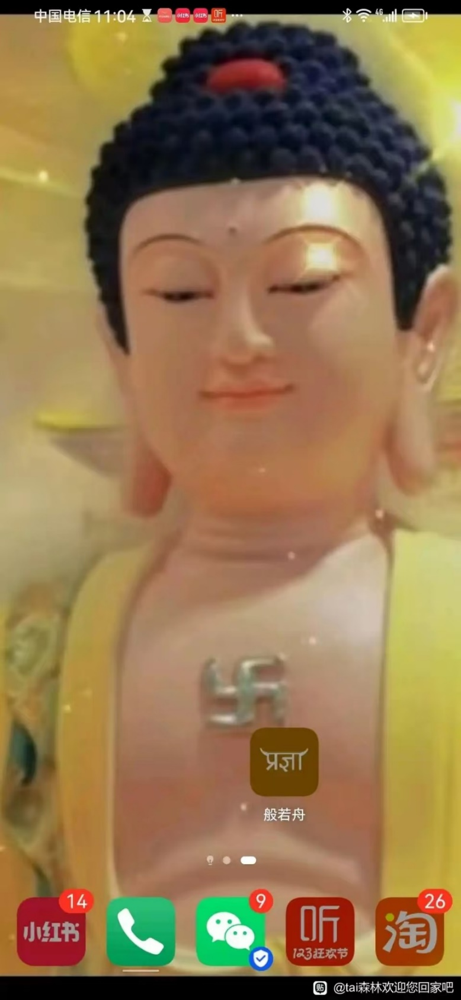

11禪定
禪定入門
禪定是什麼
靈光臺
2024-02-29 19:22
假裝自己發了平等普化心和同體大悲心，然後好像有了個靈感，也不知對不對。
第2104問: 除了發心，業力和文字妄想外；現在的修行目標，其實就是消滅下面的五個壞習慣？！！！
1、肉慾——人界。
2、鬥欲——阿修羅界。
3、淫慾——天人界。
4，注意力——初禪二禪天神界。
5，苦情——三禪天神界。
單從目標來看，就這麼簡單粗暴？
第2103問: 從［非有］的層面看，上面的五個執着心也都叫妄想吧？那麼所謂修行，其實就是讓那五個妄想在熒幕中消失？那麼所謂入定，其實就是進入［沒有（執着）妄想，但分別心還存在］的狀態？！修行邏輯就這麼簡單？！
Taiguanglin
靈光臺，你說的都對，你說的都對，按你的理解修行就可以了。
多傑扎西2007
2024+A1422:M1422
Taiguanglin
多傑扎西，你可以這麼認爲的，對的。現在禪定是重新回到我們原來的狀態去。所以整個過程我們都曾體驗過，每個禪定境界都曾體驗過，所以我們是往回走的路。這麼接受你覺得修行更容易的話，那可以這麼接受。理論上的確也是如此的。
但是從我們這個肉身狀態下重新修禪定的時候，是要捨棄肉身的這個狀態，這和他們從上往下墜落的狀態是不一樣的。所以障礙不一樣，墮落的時候是沒有障礙的，但是我們現在往回走是有障礙的，既有業障，又有妄想、分別、執着。
Momo
2024-03-12
2、打坐時，安住在不受這層身心影響的狀態，是不是就是您說的禪的狀態？
Taiguanglin
不是不受這層身心影響，而是把身心的影響給滅掉，這叫禪。你要說身心影響，他不是想不受到，你只能把注意力專注到某個地方。腿很疼，但是我就把注意力非常地專注到丹田處，不管腿疼，那也算可以。但是，最終還是要滅掉身心的影響，不是不受。
禪修法門
觀丹田
觀法：注意力放到丹田
喝囉怛那哆囉夜
2024-02-29 18:06
頂禮師父：師父在以往的帖子中多次提起觀丹田，師父對於觀丹田的觀點總結起來就是2點，一是師父說過在滅文字妄想方面觀丹田遠遠不如唸咒，入門主推唸咒；二是師父也說過，在筋脈沒有打通之前打坐“觀丹田最好”。
弟子雖然選擇的是念咒，但是想起師父說過的觀丹田可以不收功，直接下坐，所以也想知道觀丹田的具體修煉細節，請師父明示。
弟子叩謝！
Taiguanglin
喝囉怛那哆囉夜，觀丹田就是你把注意力放到丹田就可以了，這沒有什麼特別的方法。把注意力放到丹田，這是最簡單的。然後前面講過吸星大法，你可以去看看。那也並不是建議所有人都練，如果你是覺得自己在漏氣的話，你就練一練，如果不是漏氣的話就沒必要練。
因爲你往裏收的同時，也對你的身體周邊整個也會產生一點點的影響。有可能你想的太嚴重的話，你四肢的毛細血管都會跟着收縮。所以說，這種觀法是達到一定境界之後開始用的，你就最簡單的只是把注意力放在那就可以了。
喝囉怛那哆囉夜
2024-03-05 14:51
頂禮師父！您說過，我若想進一步降低血壓，最有效的方法就是通過打坐的方式來放鬆身體。
我現在打坐的心法是念咒，一邊打坐一邊聽手機播放或者看經書默唸大悲咒，由於妄想多，3個月來，還沒有入靜過，身體放鬆程度也不高。
我想使用觀丹田的方法試試，若用此法，我有2處有利的地方，一是原來幾年練習“單盤+觀呼吸”時，有幾次入靜的經驗可以照搬，二是現在已經明白了您說的用分別心來觀妄想的道理，在打坐時，我可以清清楚楚地看到我在觀丹田。所以，雖然上次請教過觀丹田，現在還有1處細節需要師父指點。
觀丹田的位置，我知道是在肚臍下三指處，但是不知道觀丹田時的注意力是應該落在小肚子皮膚表面，觀小肚子呼吸時的起伏，還是應該把注意力放在小肚子內部，假想（觀）小肚子裏面有1顆金丹，這2種觀法都是我多年來在網上或者論壇是看到的，我不知道哪種方法是正確的，不知道注意力該落在小肚子表面還是裏面，也不知道心裏該觀想些什麼，請師父指點！叩謝師父！！
Taiguanglin
喝囉怛那哆囉夜，你還是先磕頭，不要着急，慢慢磕，磕頭也能讓身體放鬆的。慢慢磕，磕的時候放大悲咒之類的，一邊唱一邊念着一邊磕。每天把這個作爲一個主要的修行方式，再輔以打坐。雙盤不了，就單盤。磕頭以身體不受傷，不太累爲標準，自己能磕多少就慢慢磕。
觀丹田就是把注意力放到小肚子，肚子裏邊，不是皮膚上，裏邊，而且輕輕地放就可以，觀丹田就是輕輕地放。不要集中注意力去想裏邊，特別是想裏邊有什麼金丹之類，這都不需要，就把注意力輕輕放那裏就可以。
果慧
2024-03-04 11:38
1、沒學佛之前就對丹田這個話題比較感興趣，各種視頻別人教的都學了，但是實在感覺不到，也找不到丹田，聽說丹田是在肚臍眼附近吧，請問這個怎麼找呢？您書上說的以後是需要觀丹田的。我還挺着急的，萬一我找不到的話，是不是就不能雙盤了？
Taiguanglin
果慧，丹田是肚子裏邊的，不在外邊。肚臍下邊三個手指，這個位置，在肚子裏邊，不在外邊。你要觀，把注意力輕輕地放在那裏就可以了。不要使勁去想，只要輕輕地放那裏就可以。
果慧
2024-03-06 16:53
1、您上次說觀丹田是看皮膚裏面，請問是看一個粉紅色的肉團嗎？因爲不知道丹田長什麼樣？（我得問仔細點，我怕我理解不到位。走火入魔，那我這輩子就完了）
Taiguanglin
果慧，觀丹田，就是把注意力輕輕地放在小肚子裏邊就可以，不要想象裏邊有什麼東西，什麼金丹啊，這類都不要想象。這樣觀，就是另一種觀法，反而有點可能出問題。前面講過吸星大法，那是針對性爲了守氣，守住那個氣的泄，練的。如果沒有這個需求的話，你就輕輕地放注意力在那裏，但是一般情況下文字妄想太多，注意力散亂了，一開始都難的，慢慢來。
三日空
2024-03-28 18:41
1、弟子愚鈍，師父您之前說觀丹田把注意力放在肚子上，請問這個注意力是指什麼，想象用眼睛看肚子嗎，還是注意肚子上的觸覺呢？這個觀和觀佛像是一個意思嗎？我一觀丹田就變成感受肚子一收一縮了，這是不對的吧？
Taiguanglin
三日空，把注意力放在丹田上，就是感受小肚子。不是刻意地去控制小肚子起伏，只是注意力放在那兒感覺而已。
你也可以把注意力放到別的地方，放到手去仔細感受一下，拿手摸一下桌子。如果你把注意力放到手上的話，能感受到這個桌子的觸感。但是你一邊用手摸着桌子，又想別的事，就一時之間感受不到觸感，觸感不那麼強烈。把注意力放到小肚子上，感覺就行。
星星要早睡l
2024-4-27
1、大師，我日常放一個注意力觀丹田，想修復多年腸胃炎。請問這個注意力應該放在哪？是關元穴，還是氣海穴，還是神闕穴，還是內部的小腸區域，或者觀小腹起伏。我感覺觀內部小腸區域感覺比較好，氣海還行，觀關元穴淫慾會很重……
Taiguanglin
星星要早睡，正常觀丹田就是把注意力放到小肚子內部的小腸，不用放到什麼整個身軀內部的深處，只是皮膚下邊一點的地方就可以。
先拜衆生再拜佛
20-06-2024
十年前的書裏，師父有教一個方法：打坐前二十分鐘，你儘量吸氣，吸氣的時候肚子要鼓起，然後憋氣；接着小腹用力，收縮肛門和尿道，堅持幾秒，再慢慢呼氣；如此可以增強丹田的肌肉，開始在小腹聚氣——是煉精化氣的初步階段；但不要做太久，20分鐘足夠了，然後自然打坐。可能是這方法的原因，也可能是搭配每日磕大頭的效果，練了幾個月，發現打坐不像初期很難挺直，覺得肚子變得有力、摸起來比之前硬，腹式呼吸也能脹得更大，漸漸連打坐也不用墊子而能坐到110分鐘維持腰部不塌陷。
想問師父，這方法需要練到什麼程度才足夠，可以不用再刻意練習了？想知道如何判斷丹田是否成形？
Taiguanglin
先拜衆生再拜佛，你說按照我教的方法已經達到110分鐘了，雙盤兩個小時開始就不要在身體上用功，這樣只會拖慢速度，之後要麼觀佛要麼思佛，以這個方向努力，不要在身體上用功。你這個呼吸方法已經可以不練了，直接打坐就行。佛門對身體是直接跳過去的，不要求你拿什麼標準來判斷丹田成不成型。
你只要打坐兩個小時身體不痛，能夠堅持下來，腦子裏也沒有什麼太大的妄想，入靜，清淨，比較舒服，能達到這個程度就可以，不要去關注丹田怎麼樣。那種問題想都不用想，不用關注，身體反而更容易調節，你越是想丹田怎麼樣，它有沒有成形之類的問題，它就更容易出問題，知道吧？
觀丹田新手小白
2024-09-13 17:04
師父，觀丹田差不多五個月了，基本上每天雙盤一座，從開始的三十分鐘慢慢到一小時，閉眼想着丹田（不是關注“氣沉丹田”），因爲沒有任何變化，注意力很快就跑了。現在觀丹田仍舊基本沒啥感覺（有時會出現有點下沉的感覺，熱的感覺也很少出現），閉上眼內觀也是啥也觀不到。求教師父給新手小白講一下觀丹田的方法。
Taiguanglin
下一個問題，觀丹田新手小白，觀丹田法門。我在教大家都是念佛，觀佛，這個更簡單，不需要在身體上用功，你一旦在身體上用功就更容易出問題。當然你現在只是一個小時，所以沒什麼大不了的，你要是問觀丹田的法門怎麼樣，那就是單純的把注意力放到丹田裏，那就夠了。
你連想象都不用，如果你妄想太多的話，你可以具體的想象一下，氣往下走的感覺，從膻中下到這邊，這個是呼氣的時候，呼氣的時候氣往下走，氣從膻中下來，吸氣的時候就從鼻子到膻中，然後呼氣的時候從膻中到丹田，這樣想就對了。
觀丹田新手小白
2024-09-13 17:04
2、幾年前練過一段時間真氣運行法，練習呼氣時氣沉丹田，但有次練習比較專心的時候是自動地吸氣時氣沉丹田（吸氣時感覺氣從膻中穴流到小腹部），不知道哪個對。或許高階段觀丹田用不着在意這個，但是觀丹田的時候如果能夠關注“氣沉丹田”這個感覺，就可以有個所緣的東西，思維不容易跑。所以還想求教一下師父，呼氣時氣沉丹田還是吸氣時氣沉丹田，哪個是對的。
Taiguanglin
我個人還是不建議在初期開始就在身體上用功，因爲後面這個修行法門要改過來很麻煩，一旦形成習慣的話，就會自然而然的就開始平時也會觀丹田，然後你就一直停留在初禪這個程度吧，連初禪都進不了，你在身體上用功連初禪都進不了，最多算0.5禪，所以儘量是直接往上三根上，用眼根境界的觀佛上或者更高的思佛上。
從這裏開始練，反正都是練，練哪個不是練，既然都是練的話，那就練個比較更靠後的修法。而且這種思佛、觀佛是更容易得到佛菩薩加持的，你一直想着他，他就知道你想着他，然後更容易加持。你在身體上用功，就看你的發心了，你這麼用功是爲了什麼呢？是出離心，還有大菩提心這樣的，如果你發願更大的話，更容易得到幫助。
鄭勇
2025-2-12
3、能否對觀上、中、下丹田的具體方法及連通的方法，做一些詳細的開示指導。感激不盡 南無阿彌陀佛，南無地藏菩薩！
Taiguanglin
第三個問題，觀上中下丹田這個問題，我建議是初學，剛開始打坐的時候，你可以觀下丹田。上丹田、中丹田都不要去觀；你就觀下丹田就可以了；第一本書你好好去看一遍，這個內容專門講過的。
如果是執意要觀上邊的話，哪怕是上丹田，額頭也好，呼吸道也好，還有胸口也好，時間長了都會出問題。
女性觀丹田/膻中
咪
23-04-2024
師父好，我是女生，先前看師父開示說要內觀就只觀丹田。但又看到有說法是女性的丹田是在膻中，那麼女生內觀時是該觀臍下丹田還是膻中呢？
Taiguanglin
咪，內觀丹田是初禪之前的修法。（打坐）兩個小時後到四個小時，這個時候就最好不要再觀丹田，觀丹田時間長了也不好，十年前的書裏都說過的。
丹田就是下腹部，肚臍以下三個手指處，而且不是外邊，是皮膚、內臟裏邊叫丹田。“女生的丹田在膻中”這是誰說的？我不這麼認爲，丹田男女都在下腹部上。
流浪者月兒
25-04-2024
2、請問南先生一直說女生守下丹田容易引起血崩，您說打坐2小時前可以意守下丹田，這個有衝突嗎？
Taiguanglin
流浪者月兒，我不建議女生在月經期打坐，這個以前說過的。你注意力得放到什麼程度才能引起血崩？你就想想你的注意力得多強才能引起血崩？
一般人注意力太散亂了，沒有辦法觀佛、思佛的情況下才把注意力放到丹田。這個程度的修行是沒有辦法引起血崩的，除非你已經專注到可以進入所謂的心流狀態，或者專注於一處進入禪定狀態，這個時候纔有可能出現所謂的血崩之類的事情。普通人是不可能出現的，所以不用管這些。
鄧
2024-11-12
頂禮師父！氣亂竄的時候，女性是不是不能守下丹田？氣漏出去了，能否觀想上丹田？但是觀想上丹田，氣在腦子裏外頂着一大坨氣，很漲，倒是思佛，氣也在頭頂，但是吧，感覺在靠外一點頭不漲，所以就思佛，不觀想任何地方。
Taiguanglin
鄧，女性，氣亂竄，應該守哪裏，守下丹田，氣漏出去怎麼辦？思佛是最好的方法，但是普通人初學呢，注意力很散亂，很熾盛，你想思佛，注意力還在亂跳，而且很多人都誤以爲腦子裏想像佛的形像、佛的名號是思佛，思佛是從膻中這裏開始升起的情緒來思的，並不是腦子裏的想像來思，這個針對於眼根境界、意識層面上的思考、文字妄想，這些都不能算思佛。
如果你能思佛的話，用情緒來思最好，初學做不到的話就觀想，觀佛。但是像氣亂竄這種情況，你應該先觀下丹田，它不會漏氣的。主要是你必須把注意力放到身體裏邊，小肚子裏邊，而不是外邊，你把注意力放到身體外邊就有可能會漏氣，你放在裏邊就沒事了。你先試着思佛，一直思，看看能不能長時間用淡淡的思念的情緒，抓着不放，這樣最好，不行的話就觀想下丹田，這就可以了。
應對泄精漏氣的吸星大法
圓圓柔柔摘月光
2024-2-14
如何面對現實中另一半淫慾過盛？
Taiguanglin
圓圓柔柔摘月光，還有有類似問題的人，就是婚後性生活之類的問題，這種問題其實挺平常的。我在廟裏時候也見過不少，他們問的很直接，現在的人很開放的，上來就直接問，師父有沒有什麼性經驗吶，有沒有談戀愛呀？我說有。她就開始說，她自從學佛後就不怎麼想了。但是丈夫就一直追着那樣，所以有沒有什麼辦法？
我說，首先你已經不想了，但是他追着這樣的話，那第一個，首先得承認他是你的債主，你得還債，這個是要還的債，並不是你能躲得過去的。
還有第二點，以前講過的，人生總量定律，做多少次能還完，這個肯定是有數的，你只要做完這個次數就算還完了。
還有第三點，你在還完之前，你找別的事兒，可能就給自己帶來更大的麻煩。比如你拒絕啊，不配合啊之類的，你不餵飽他，他出去就吃外賣，然後你們就雞飛狗跳了，明白意思吧。所以，這個不是隨便你想躲就躲的那種事情。
還有怎麼說呢，這也是一種度人的方式吧。度人比較好的條件就是他還喜歡你，這個是很容易度的啊，他至少不討厭你，說明你還是有辦法引導他的。你可以利用這種關係，把他好往好的方向引導。還有就是多做一些功德迴向給他，有些人說做地藏法門好，有些人做觀音法門好。就是做各種功德啊，唸經啊，然後迴向給他，求他早點兒離欲，還有早開佛智慧。然後有事沒事就帶他去廟裏看一看，這是一般常規的辦法。你不要想着硬躲之類的，那沒有用的，而且很多人都不願意離婚，那最好還是這樣慢慢來。
還有，以前在廟裏是不教這種辦法，但是你既然問了，我教你一個辦法。這以前也算是一種屬於外道的方法，現在說吧，就武俠小說裏的吸星大法，聽說過吧，任我行的吸星大法。
這個練法是，你不是觀想阿彌陀佛在你前面放光，你吸收那個光的嘛。那在這之上稍微多加一點兒。你想象你的丹田處，肚子裏有一個氣的漩渦，這個氣的漩渦把阿彌陀佛放出的光，從你的各個竅穴裏吸進來，全部吸到你的丹田裏。這個想象也是，任何觀法都要做到平時都在想，24小時不間斷的想，除了睡覺的時候想不起來，那就算了，總之就是一直想一直想，一直集中注意力去想，這是最基本的，第一步的練法，以前就有人練這種方法。
你要練這個辦法，首先得捨棄淫慾，捨棄了淫慾的話，就沒有性快感，連性快感都得放棄。然後一直想象，做的時候也想象，那樣的話就沒有什麼特別的感覺。功夫到的話，你就能守住這個氣，只要能守住這個氣，不至於泄就算可以了，這是第一步。但是一般人是把握不了這個度的，你只能想象或者不想象，不能說我想象一點點或者不想象、少想象，這個不能拿百分比算的，他只能有或者沒有，沒有人說能把握這個度的。所以你這麼一直想象，過了這個度的話，叫從守開始進入到採的階段。
採是什麼？採就是把他泄出來的那個部分，你給吸進來，到這裏還是可以的，對身體還是有點兒幫助的，這也算是採陽補陰，這種說法。再往上走，因爲管不了這個中間的過程啊，你其實是真的把握不了這個度的，你要麼想，要麼不想。一旦到了這個程度的話，人就開始起貪心，就會繼續再想，繼續再觀想，那就進入開始奪的階段。奪就到了已經不只是吸他放出來那點兒東西，而是從他身體裏邊拽出來，強行奪過來，到了這個程度，對方身體就開始越來越出問題了，就不是那麼簡單的恢復過來了。所以能放下的就趕緊放下，這不是什麼很好的辦法。
那教的辦法，你得自己負責，這跟我沒什麼因果的關係啊，我只是希望你好而已。以前佛陀在世的時候，也有人專門修這種辦法。他們能修到超越極限的程度。可以到什麼程度？可以吸到沒有任何性接觸的情況下，也可以從對方身上奪過來，在一段距離內就可以奪過來。
還有一種目擊的方法，也算是一種神通或者催眠的方法，用眼睛把你想象的淫像輸入到對方腦子裏，讓對方升起淫慾，然後你再吸，就會把對方的吸過來，就很快的幾秒鐘內就吸過來。後來佛陀說這種外道都墮落了，什麼鬼道變成了吸精鬼，所以你自己想，把握好度。
既然講到氣了，再講點兒。漏氣的人，你知道爲什麼會漏氣？首先，氣應該是在體內自我循環的，它不應該漏的。但是一個是你的竅穴開了，一個是你的注意力在外邊兒，這叫神。道家講的精氣神，神也是一種能量，但是你把注意力放到外面的時候，外面那個注意力到的地方就會出現引力。以前講過，人的兩個引力點，一個是情緒產生的引力點，一個是注意力產生的引力點，在頭腦。你把注意力放到外邊兒的話，注意力點就會在那裏形成。比如你把手抬起來，然後用眼睛一直觀察你的手指頭，集中注意觀察，觀察，最後這個手指頭上就會形成引力點，這個時候血液會往這兒流。
但是如果你把這個引力點放到物體上，比如觀察外邊的某個東西，就那麼一直集中注意力觀察，觀察，那你的引力點就會出現在那個物體上，你的身體有一段距離，但是你的氣就會開始往那邊流。這個時候你眉心中間的這個穴，一旦打開的話，氣就會順着眉心中間出來，往那個地方流過去，這種看似是開天眼，其實是漏氣吧，這不是什麼好辦法。我要說的是，你要守氣的話，就要把神收過來，不要把注意力長時間的放到外邊。要麼徹底把注意力放棄，用參思情或者疑情，用情緒，不要用注意力，要麼把注意力放到自己身上，不要放在外邊。
還有那種做鍼灸啊，中醫按摩啊，推拿這些人也是，他們都是有辦法守自己氣的，一般都是胸前掛一個玉製的項鍊兒吧，有開過光的，有沒開光的，總之有這種辦法，要守住自己的氣。他們拿鍼灸針扎人的時候，注意力會集中到對方身上，時間長了，這個手上的竅穴就會打開，氣會順着手上出去，自己就會漏氣。爲了防止這種，他們就會拿個東西來擋一下。
在抖音裏有一個道醫，他是專門用這個方法來治人，他是扎針的時候故意放氣，放出氣去治人。按照他說的話，你要自己扎的話，扎都扎不進去，但是他扎的話，順着他的氣，用了他的氣，所以才能扎進去，能起到一定的治療作用。
而且那個男人收費很貴的，你扎一下可能要幾百到幾千塊，而且不光是扎針，還賣各種罐罐狀狀的藥啊，中醫藥酒之類的。以前有人給我看，說自己有病，去給他看過，然後他又教了一些方法，什麼病啊，我也想不起來，就有這麼個事兒。
還有以前見過一個學氣功的人，後來開始學佛。他說他是跟着氣功的師父，那個師父教他怎麼在早晨太陽昇起的時候去吸收陽光的氣。他就每天對着陽光雙盤而坐，雙掌攤開放到膝蓋上，想象太陽的能量順着手掌進到自己體內，灌入丹田氣海。他這麼一直想象，一直想象，然後覺得身體變得越來越好了，感覺真的有很多氣注入自己的身體裏。
後來他覺得每天太陽初升就那麼一小段時間，就開始吸別的東西了，就開始到處吸。拿着手對着周邊的東西開始吸吸看看，但是沒有生命的東西，他吸不過來。人家就對着家裏養的花，出去吸一下花花草草，結果真的吸了兩三天之後，那個花花草草都枯萎了，然後他就覺得，這個有點兒不太好吧。後來他說他做夢的時候夢見一個什麼花精靈之類的，跟他哭訴爲什麼要吸他們，把他們弄死。後來他就覺得這樣不太好，還是學個正經的路吧，然後就開始學佛，就不再吸了。後來他在廟裏待了一陣之後又走了，也不知道去哪兒。
萬金2024
2024-02-15 16:25
第二個：昨天師父教的那個可以守住精氣的方法，是要觀佛的白光從師父之前講過所有竅穴進來嗎？觀不到具體那麼多竅穴，可以大概的觀光從三五個主要竅穴加身體四面八方進來嗎？觀佛的形象也觀不太具體，因爲放鬆的狀態下，感覺主要注意力在丹田漩渦，就是捎帶着一點注意力知道前上方有佛的光照耀自己，這樣觀對嗎師父？平時日常生活裏不能集中注意力觀的時候，只留一點意念丹田有漩渦旋轉，這樣可以嗎？
感恩師父！
Taiguanglin
然後你問這個吸星大法，你想守住下邊兒的氣不被泄，那是我說過了，你得放棄淫慾，也得放棄性快感。然後觀想是最少做到兩個觀想，一個是從上邊鼻子吸氣，吸進來，然後呼氣的時候，它那個能量啊，光啊，還是什麼，你吸進來的東西沉到丹田裏。還有下邊也是，同時從下邊兒的竅穴當中也要吸，就是在生殖器當中開始吸，吸到丹田當中，上下同時吸，至少做到這兩個，這樣纔算是吸星大法的關鍵點，好吧。
散步的蝸牛
2024-3-15
頂禮師父！學習雙盤六年，一側可以隨意時間坐，一側可以3-4小時。但基本是熬腿坐中。 身體沒有太大改善，但嗅覺有時靈敏度高，有時外出很困擾。 問題：外出中在高鐵上，同席一個小夥子，同車2小時之久，身體特別疲憊不堪，相挨一側身體冰涼，以爲自己暈車，但這個人下車後，換了另外一個人就沒有這個現象了。 請問，這是什麼情況，外出怎麼保護好自己。
Taiguanglin
散步的蝸牛，你去看前面的長篇裏的吸星大法，觀丹田先練這個，你的注意力在外邊，所以纔會把感知力、嗅覺給打開，不少人有這樣的情況，嗅覺變靈敏之後就沒有辦法和正常人太靠近了，也沒有辦法坐車，尤其是有些人不喜歡女人，然後車上那些很多女人的化妝品味他受不了。所以怎麼說呢，這種有點偏門的修法，可能是修了那種偏門的修法，所以我還是建議你先從觀丹田開始。
要兩邊都要一起來，兩邊都有。這先保證兩邊各一邊都是兩個小時以上之後，再慢慢往上往前推，不要太着急，然後磕頭也得做，主要是平時注意力往回縮、往回拉到身上來，然後參思情這個是最好的，參思情最好，實在不行就觀丹田。
秋晴
2024-4-23
頂禮Tai師，有2個問題懇請指導：
1、前幾年站樁加打坐，半睡半醒中不小心衝開頭頂的穴竅，讀了您的書知道是不對的，前期無意識去觀氣了，中間沒打通。後加入磕大頭、腹式呼吸的練習，能磕到500，平時呼吸11-13次/分，雙盤勉強到2小時，也戒肉、放生。但感覺自己越來越沒有長進了，情緒念頭等都很重。像這種已打開了一個穴竅開始漏氣的情況，後期會自動關閉嗎？有什麼修行的方法能補救嗎？
Taiguanglin
秋晴，前面講過吸星大法，竅穴開了可以用吸星大法練回來。還有平時觀想丹田，不要把注意力放在外邊，要放在身體裏邊才能把氣給吸回來，竅穴也會自然關閉，要是一直把注意力放在外邊，尤其是頭頂或者眉心打開的人，漏氣會很快的，所以要注意。
有些人產生氣很快，但是氣的循環還沒有完全通，一個任督二脈的循環還沒做好，某個竅穴就有可能會打開。但是沒有關係，這都是很普遍的現象，只要堅持修行，把注意力放回到自己身體裏，基本上都能修回來。
還有“勉強到兩個小時，長時間沒有進展，情緒念頭等很重”。情緒也是，平時一直參思情或者疑情，儘量往這個方向努力就可以。修行不能求快，一個境界十年，不要指望一下子、幾個月內就能做到什麼程度，這反而會出現更不好的現象，比如就會出現頭頂竅穴開這種問題。意識層面上你還在注意力非常散亂、注意力在外邊的程度，這種情況下強行長時間打坐讓身體氣滿了，纔會出現這種漏氣的現象。
陽光
2024-7-16
師父好，我以前沒師父教，就誦咒，咒誦多了，百會穴開了，非常難受，我還以爲自己要死了，後來聽師兄說，是百會穴開了，今天聽師父講課，通脈要先通任督二脈，不能先通百會穴與會陰穴，會吸別人濁氣。修不成功。我不會修行，也不知道怎麼辦，請師父指點，幫忙看看，我倒底是怎麼回事，爲什麼會這樣。
Taiguanglin
陽光，我不知道你說的百會穴開了是什麼情況。但是我以前講過有吸星大法，不需要強吸別人的氣，但是你可以觀想，把注意力觀到身體裏丹田處。一直把注意力放到身體裏，不要跟着外邊跑。你看着外邊，就不要注意力盯着眼前那些東西，你只要這樣，注意力放到外邊就更容易漏氣。
平時也是，走路也好，做什麼事也好，最好是眯着眼睛，不要把注意力放到外邊，一直觀想自己丹田處。然後想象氣往下流，從百會穴開始往下流到下邊，你這麼一觀想，時間到了，就自然而然就過去了。所以不要瞎修，你這個光念咒，我是不相信百會穴會打開。
何時進階到觀佛思佛
血蒼穹87
2024-02-27 13:11
頂禮師父，弟子打坐時觀呼吸會很容易進入輕安的境界，全身感覺暖洋洋的很舒服，注意力也很容易一直集中在呼吸上，一直在觀察呼吸的長短，粗細。但是按照您介紹的打坐時觀丹田就很少有這種效果，注意力也總是跑來跑去，一會想阿彌陀佛，一會觀丹田，一會又跑到別的地方去了，我在想是不是觀丹田時缺少一個可以讓我集中注意力的目標，請問師父修觀丹田時如何才能做到注意力一直在保持丹田上不跑到別的地方？
Taiguanglin
血蒼穹87，打坐達到兩個小時以後就不要再觀了。如果選擇是不要在身體上用功，而是在觀想的話，你就觀想阿彌陀佛站在你的面前——巴掌大的，不用太大，這樣就可以了。如果你現在是初期的話，你隨便觀什麼都行，兩個小時以下你觀什麼方法都行，觀呼吸也行，觀丹田也行，什麼方法對你有效就用。兩個小時以上開始，你就要選一個正常的修行法門，要麼觀阿彌陀佛，要麼參思情。先是以參開始看看，嘗試，儘量參思情嘗試，如果不行的時候就觀阿彌陀佛。
茉辰
2024-12-10
2、還有打坐的時候，您說過觀身無法斷下三根，那應該唸佛，在腦子裏念阿彌陀佛，不應該觀丹田是嗎？
Taiguanglin
還有打坐的時候觀身體就滅不了下三根，所以進不了二禪，應該唸佛，在腦子裏念阿彌陀佛，不應該觀丹田嗎？這個看你的情況，如果你覺得氣的運轉不是很順暢，這個時候就觀丹田。如果你沒有這種氣的問題的話，就不要觀丹田，心裏唸佛就行。最好是思佛，思不了就觀，觀不了就唸，這樣心裏唸佛是最好的，最方便的，也是最沒有危險的修行方法。
觀其他部位
觀膻中/身體/眉心/念頭
athenathrush
2024-2-11
頂禮師父！！！
請教：我剛開始看到“心念耳聞”的時候，把心念理解爲膻中穴，如果長時間意念集中在膻中穴唸佛號，會不會造成氣集中在膻中穴而造成不良影響？心念應該在哪裏念呢？
Taiguanglin
能夠長時間把注意力放到一個地方的話，那乾脆就不要放注意力啦，你就參思情就行，就參思情，思念阿彌陀佛，不用把那個注意力放身體的任何部位，不管是膻中或是丹田還是什麼，都最後都是走不出來的，很難走出來，還是乾脆不要這些中間身體的修行法，有必要的話就觀xx（ruce？），修觀的法門，耳根圓通或者觀，觀想阿彌陀佛這樣的，啊。
摩尼寶珠Lotus
2024-03-04 08:28
有時也喜歡守膻中穴，之前看過守這裏，到一定程度可以見胸中月輪歷歷在目，有個法師說女性不適合守下丹田容易經血量大，到底守哪裏好呢，是參話頭好還是守在哪裏好，各自的利弊是什麼呢？恭請師父開示！感恩師父！
Taiguanglin
觀丹田的問題，如果你腦子裏妄想多的話，就把注意力放到丹田。這樣往下引，這個氣就順了。一開始本來腦子裏就妄想多，人都妄想多，所以這個時候就往下引。
觀膻中這個方法也是有的，但是我個人是並不建議修這樣的方法。因爲膻中是往裏揪，往中間引力太強的話，對心臟不太好。有人因爲修這個得心臟病，有例子的，所以還是不要觀膻中穴。這個情緒自己會起來的，你不用觀，它也是從這裏起來的。
無間淵落
2024-03-07 09:07
頂禮師父問題有二：1、昨晚聽了您的答疑，其中一點講觀膻中導致心臟病的，我想起近幾個月開始確實感覺心臟不舒服，上一年12月體檢報告顯示“心動過速”。聽了師父答疑後，確定是膻中情緒生起的時候注意力過度集中在上面導致的。這下修行真是玩命的了請問師父，短期內我該如何解救？
Taiguanglin
無間淵落，情緒就是情緒，注意力是注意力，這兩個不一樣的，你情緒升起的時候又把注意力放到膻中了，就會出問題。你注意力始終亂跳，我覺得必須要針對性地找個抓點的話，那就拿注意力觀想阿彌陀佛，你就觀想阿彌陀佛，站在你面前。不用想得太仔細，就覺得是個模糊的人影站在你面前，就手機那麼大就可以了，然後就思念情緒升起這樣就可以了。
如果覺得還是不行的話，我建議運動運動，先從慢跑開始，不用一下子又來個大磕頭這些，就慢跑或者普通的磕小頭開始一點一點來。
悟空
2024-4-27
請問Tai師父，這段時間晚上睡覺的時候氣就不自覺的往眉心聚集，可以通過導引強行壓下來，但是不管的話又不自覺的往上跑，現在晚上經常失眠，之前有段時間意守過眉心，但是聽說不對就沒有再守了，請問這種情況是出偏了嗎，請問有沒有什麼解決辦法呢？
Taiguanglin
悟空，平時睡覺時都要觀丹田，觀丹田是最安全的觀法。十年前的書裏就講過，不要把注意力放到胸口以上的任何部位，最後都會出現不好的現象。因爲習慣了這種修法，到你想換的時候，很自然地又會把注意力放到原來自己習慣的地方。所以儘量一開始就放到丹田，不要想着什麼眉心、胸口這些。我連觀呼吸都是不建議的，你要觀的話，靜靜地感受呼吸就行，不要去控制呼吸，觀丹田就行。
松
2024-11-11
2、有的情緒非常淡，只能感知到身體某處疼痛，如果是太陽穴這樣頭上部位疼痛，打坐中兩小時內的可以持續關注頭部嗎？
Taiguanglin
還有，不要老把注意力放到頭上啊，如果是太陽穴這樣頭上打坐兩個小時內可以持續關注頭部嗎？打坐兩個小時的話，你還不如把注意力放到丹田上，不要放在頭上，頭上會出問題的。
松
2024-11-11
3、打坐後半段身體某處疼痛，可以停止觀想，集中注意力關注疼痛部位嗎？ 感恩師父傳正法親指導，感恩師父加持我們精進修行。
Taiguanglin
打坐後半段身體某處疼痛，如果非常疼的話，你可以把注意力放到疼痛的地方，一直集中注意力，專注地集中注意力感受那個疼痛的地方，然後想象着氣啊、血啊，氣血往那個地方通，這樣慢慢慢慢這個痛感就會減輕的。
洛迦
2024-12-10
Tai師好！有一段時間打坐意守膻中，結果從膻中到心臟的區域又悶又疼，尤其是吃完晚飯後，是這一帶堵得厲害嗎，還是心臟有隱疾？
Taiguanglin
洛迦，有一段時間打坐意守膻中，結果從膻中到心臟區域又悶又疼，尤其是吃完晚飯後，這一段堵得厲害……，那你爲什麼要意守膻中呢？你改成意守下丹田，小腹部，肚臍以下這個地方，這就可以了。
你把注意力放到哪裏，哪裏的血液就會聚集起來，哪裏的肌肉就會收緊，這都是在第一本書裏講過的，身體的原理。所以如果有問題的話，就開始守下丹田，把注意力放到肚臍以下這個地方，把氣往下順一順，還有吃完飯後就不要打坐了，至少兩個小時內就不要打坐了。
光影
2024-12-13
2、之前認識一個師兄他修的功法就是打坐時候觀上丹田，然後看到光去關注光，進一步打開天目，這種修法合適嗎？
Taiguanglin
你說觀上丹田——眉間這個位置，這種修法我是不建議的。我以前也說了，胸部以上就不要觀了，你要觀就觀下丹田，你開了天目又想幹嘛呢？我們修行是不求神通的，該有的時候就會有，不用急着去要什麼神通。
以前也看到一些人，他還有恐懼心，但是他居然開了天眼，看到鬼，他自己害怕，這不是有病嗎。你怕鬼幹嘛還要開天眼，沒有天眼就沒有那麼多事兒，是不是啊。
還有，那些心術不正的人，就是內心比較陰暗的想法多的人，這種人更容易受鬼道衆生的干擾。性情相似的衆生之間會相互吸引。那鬼道呢，他們有很多怨言、怨恨，那種不好的情緒，你也有這樣不好的情緒，還有想要傷害別人的那種不好的情緒、慾望的話，很容易和他們產生共鳴，然後他們就跟着你。
所以你的修爲到了一定境界，你真的是以慈悲心看待所有衆生的，這種程度的時候，就算鬼，那個有不好的情緒或者不好的慾望的鬼也沒有辦法對你怎樣，也不可能影響到你。但是你還有這種不好的情緒的時候，很容易遭到他們的干擾，所以這種修法是我是不建議的。
Tai師父的小粉絲
2024-12-14 20:12
關於【漏氣】
1、脈輪引導可以聽的話，其實脈輪有11~12個，除了人體內的，人體外也有，我想請問觀人體外的脈輪會不會漏氣？前期氣不足的話短期可以的吧？
Taiguanglin
Tai師父的小粉絲，請問觀人體外的脈輪會不會漏氣？前期氣不足的話短期可以的吧？我一直在教大家唸佛、觀佛、思佛，因爲身體，是你越是關注它，你越在身體上用功的話，身體越難以突破。所以佛門修行不談氣，不講究脈輪這些。
你只要專注的觀佛或者思佛，讓身體自己靜下來，讓它自己變得越來越健康就可以了。氣該轉的時候，慢慢自己都會通的，你想控制它，它反而更難。所以，一開始如果感覺氣很亂的話，哪裏堵的，那就觀下丹田，只有這一個觀法就夠了。
等氣通了，就不要觀身體的任何部位，純在意識層面上。氣還是身體層面上，你看是無形的，但還是在身體層面上用功。你想突破身體的話，就得放棄在身體層面上用功的一切方式。
貼吧用戶_QNVyQK7
2025-01-13 10:13
頂禮師父！問禪淨雙修。主要是觀心，觀每個念頭，初期比較平穩。過了一段時間後，以前從來沒有的念頭都會岀來。出現這種情況心情就會狂躁。
Taiguanglin
貼吧用戶_QNVyQk7，打坐都是這樣的，你坐到一定程度就會妄想升起，而且有些妄想你都難以啓齒，可能是性方面的或者暴力方面的，這種妄想很正常，這都是過往的妄想習氣的展現出來。
怎麼辦呢？如果實在坐不下去就起來吧。如果能堅持的話就一直唸佛或者唸咒堅持。唸佛唸咒都可以，堅持堅持，修行都是這麼來的。每次都稍微多堅持一下，多忍一下，這樣就算進步了。你不要想着一下子就把所有念頭都給滅了，一下就變成聖人。腦子裏什麼妄想都沒有的純粹的聖人，這是不可能的。
所以你不要太過在意，堅持修行就可以了。
薛祖宜
2025-1-14
2、師父晚安。如果靜下來的時候，觀察到妄想一個接一個的升起，需不需要將注意力集中另一個角度？觀察它怎樣升起或是怎樣呢？應該可以怎樣做呢？
Taiguanglin
下一個問題，觀察到妄想一個接一個的升起，需不需要將注意力集中另一個角度？如果你能觀察到妄想的時候，注意力應該是很少了，或者說沒有了。這種“照”法，“觀照”中的“照”，用分別心來觀察，這個境界比拿注意力觀，把注意力放到某一處的這種修法要高。
如果你能觀察到自己的妄想升起、滅，還有全身心的感覺，同時都能感受到的話，在這種狀態下就不要再試圖去升起注意力。
所以我們還是建議修參思情和參疑情，這是最好的方法。等修到過了這個階段，就可以修純粹的“照”，就是拿注意力，用分別心來同時觀照全身心的這種修法。但是這個對現在的大部分人不是很適合，因爲情緒潛藏在裏邊，想跳過情緒很難。
申國坤
2025-2-10
師父說過打坐不能觀膻中穴，我學準提法，它的心月輪就觀在膻中穴，請問師父如何取捨？
Taiguanglin
申國坤，師父說過打坐不能觀膻中，但是心月輪觀膻中如何取捨？我十年前的書上都已經說得很清楚了，不要觀身體膻中以上的任何部位，後面都會帶來不好的問題。而且修行都會成爲習慣的，某一種修法，你修的時間長了，自然而然就變成習慣，後面再想改就很難。所以我建議還是正常的修。哪怕是觀丹田，也是前期的修法，你就知道這個邏輯就行了。你去看十年前的書吧。
容
2025-2-10
還有問下關於觀心法門的修行？感覺自己壓不住煩惱，是不是功夫不夠？
Taiguanglin
下一個問題，關於觀心法門的修行，壓不住煩惱就對了，當然是功夫不夠了，如果你的功夫夠了還要修行嗎，沒有煩惱了，那還要什麼修行。
你說的觀心法門，是不是前面講的那種，把注意力放到胸口的這種修行？這種修行不太好，前面講過了。
觀察自己的情緒，這些倒是沒有問題。壓不住煩惱，那就多唸咒，多打坐、磕頭、唸佛，每天堅持做。以前有段時間我天天磕頭的時候，如果三天不磕頭，我自己都能感覺到，開始有不好的情緒升起，就不安感、焦慮感會升起，所以堅持每天磕頭，然後這個感覺就沒有了。
所以每天堅持修行纔是重點，哪怕你當下受外界的困擾也好，什麼也好，不要耽誤修行。把功課量做足了，然後發願、做點好事、做點功德，再求個願，看看吧，好不好。
觀呼吸
用功在身根 難入二禪
心得
2025-2-11
師父吉祥，阿彌陀佛_x0001_。末學想請教師父幾個實修問題，望師父解惑_x0001_
1、有的人教初學者打坐觀呼吸，隨着腳的壓力越來越大，上半身要求越繃越緊，對抗下半身的壓力。再配合小腹用力收有力的長呼氣，疏通疼痛。末學在看師父的書以前，是用這種方法，有一定的效果。但我感覺還是不徹底。想請教師父，這種方法的利弊是什麼。
Taiguanglin
心得，打坐觀呼吸，壓力越來越大，上半身要求緊繃……，第一本書裏講過了，一切在身體上用功，都入不了二禪。因爲你在身體上用功，注意力在身體上，就滅不了身根觸覺的境界，那就進不了二禪。
所以你要選好修行法門，因爲前期這樣練之後，比如說觀呼吸，一旦長時間觀呼吸的話，你靜坐的時候自然而然就開始觀呼吸。然後已經過了那個階段，還在觀的話，這個地方都會緊張起來。還是跳過觀身體的這個境界，直接用參疑情、參思情，往這個方向努力，這是最好的，這是最沒有負面不好的影響出現的。
你說的利弊，我都講了，前面教初學的時候，這個方法，身體緊張的狀態下還是有點幫助的，就像你說的，有一定效果。的確對打坐一個小時以內、初學的人來說，是有一定幫助的，的確可以緩解一些緊張的狀態。
但是我是不建議這麼練的，一開始就不要練，不練的話反而後邊更舒服一些。你在身體上用功多了，然後身體的感覺越來越豐富了，就越來越執着於身體了，這個就已經和修行背道而馳了。
觀法:自然呼吸別控制
魚魚老人
2024-02-22
Tai師父和了幻師父都說觀呼吸能入初禪，我對這個方法也比較感興趣，所以就接着鑽研這個方法。
Taiguanglin
魚魚老人，這位是一定要修觀呼吸的方法。我教你的觀呼吸的方法，基本上原理是這樣的，你不能注意力高度專注於一個點上，不管是鼻子，還是咽喉，還是什麼地方，你這樣放的話肯定會收緊那個地方，所以會越來越緊張，最後會堅持不了多長時間，對身體不好的。
真正的觀呼吸是把整個注意力分散開來關注一面，也不能說太關注，就一面，從鼻子開始到肺這個地方，幾乎是同時感受，也談不上是關注，而是感受，你只要感受就行。
但是人畢竟有注意力亂跳的，這邊跳，那邊跳，有時注意力亂跳，那就把注意力暫時放到在鼻子到肺的這一大片地方，感受這個呼吸。
要不你去看《楞嚴經》，《楞嚴經》裏還有一種觀呼吸法，就是吐息白（能查到的來自《楞嚴經》相關表述：“煙相漸銷，鼻息成白。心開漏盡”），把注意力觀到鼻子裏吐氣的這個地方，這個是要專注的，一直觀察到有白氣出來的那種程度。但是這個辦法到現在沒有什麼用的了，因爲《楞嚴經》裏的辦法都是高端的辦法，所以對現在根基的人沒什麼太大幫助。你一定要觀呼吸的話，就鼻子到肺這個部位的感受，慢慢感受，不是專注於把注意力全部集中到一點，那就會出現問題。你放鬆的狀態下來感受，慢慢感受就可以。
KAKA
2024-5-20
師父好！
我18年自學的腹式呼吸，目前呼吸次數在10次左右。21年接觸佛教，一直呼吸唸佛。您說呼吸算是身根，進不了初禪，現在我習慣了，確實很容易快速靜下來，只有一些入靜的體驗。不用呼吸的方式單純地念佛，反而有點呼吸紊亂，而且佛號不是很清晰、好走神，請問這樣修下去能進初禪嗎？如不行該怎麼優化一下呢？感謝！
Taiguanglin
KAKA，不要在意什麼呼吸，你一旦練成腹式呼吸之後就不要再管呼吸，不要刻意地觀察呼吸、控制呼吸，你就正常地修行。
你念佛唸了一段時間，下一步就是觀佛，再下一步思佛。先看看思佛行不行，你就用情緒思念一下阿彌陀佛，看看能不能思起來，思不起來就觀想阿彌陀佛。這個辦法前面也講過了，想象你面前站着一個巴掌那麼大的阿彌陀佛，這是最簡單的觀法。而且也不需要把細節想得特別明確，你就觀想一個模糊的影子，認爲他是阿彌陀佛站在眼前就行了。能專注地想就可以，不需要其他的方法。
安般法
用志不分
2024-02-25
Tai師吉祥！ 我查了安般法相關經文，原文包括”知息長”“知息短”等。 您之前回復提到，安般法“短入息，長出息”的方式有問題，可能是翻譯流傳錯誤。相關文字我沒找着，因而請教一下。——《增壹阿含經》：世尊告曰：「於是，羅雲！若有比丘樂於閒靜無人之處，便正身正意，結跏趺坐，無他異念，系意鼻頭，出息長知息長，入息長亦知息長；出息短亦知息短，入息短亦知息短；出息冷亦知息冷，入息冷亦知息冷；出息暖亦知息暖，入息暖亦知息暖。盡觀身體入息、出息，皆悉知之。有時有息亦復知有，又時無息亦復知無。若息從心出亦復知從心出。若息從心入亦復知從心入。如是，羅雲，能修行安般者，則無愁憂惱亂之想，獲大果報，得甘露味。
Taiguanglin
用志不分：“安般法”，在佛講的時候，安般法是讓你用“分別心”來觀察，就是照、覺照。但是後面我們理解的時候都會變成用“注意力”，把注意力放到呼吸上，必然是會變成這樣，因爲我們的根器就在這裏，很少有人觀呼吸是用“覺照”來觀察呼吸的出入長（短）這種方法。只要你把注意力放到這裏，肯定會出問題的。所以前面講過觀呼吸問題——出息長、入息短那種說法,那都是因爲我們在用“注意力”來用功。和2500年前的人不一樣，你不要拿佛講的（用在現在）。他們是可以直接“觀”的，我們是有“注意力”的，兩者不一樣的。
用志不分
2024-02-25
以及我想請問一下安般法與觀呼吸什麼關係？經文中講羅雲尊者通過安般法進入禪定，從有覺有觀到無覺無觀是怎樣過渡的？ （爾時，羅雲作如是思惟，欲心便得解脫，無復衆惡。有覺、有觀，念持喜安，遊於初禪。有覺、有觀息，內自歡喜，專其一心，無覺、無觀，三昧念喜，遊於二禪。無復喜念，自守覺知身樂，諸賢聖常所求護喜念，遊於三禪。彼苦樂已滅，無復愁憂，無苦無樂，護念清淨，遊於四禪。）
Taiguanglin
用志不分：用“分別心”來觀叫小四念處。小四念就叫觀身、觀受、觀心、觀法，都是觀。是觀察身體時把其他感受先捨棄，先主要觀呼吸方面的事。所以，從分別心用功的話，可以進入二禪、三禪、四禪的。但是我們現在這兒不行，在注意力散亂的情況下讓你觀，“注意力”會一直亂跳，會一直放到呼吸這邊或者別的地方，那是進不了的。所以你不要用2500年前的人修的方法，拿來我們直接學，未必能管用，要不然後邊怎麼會出現那麼多的各種修行方法，什麼參疑情、止觀...這些方法怎麼會出現？
宜霖
2024-9-9
Tai師父您好，看《坐禪》有提到安那般那，我也在修習安那般那，現在的人也不適合修嗎？感恩您，希望您能開示關於安那般那。
Taiguanglin
宜霖，《坐禪》書裏已經說過了，觀呼吸的方法只能在前期用，但是修行這個法門一旦成爲習慣的話，後面平時打坐的時候也會很自然地提起來。你平時把注意力一直放到呼吸上，用這個方法修行的話，時間長了就會習慣性地變成那個狀態，以後就很難突破這個境界了，所以我是不建議修觀呼吸的方法的。
如果你想在修行上走得更遠的話，儘量唸佛觀佛思佛，這個是最容易的，沒有什麼副作用的。這個觀呼吸是有副作用的，未來等你到了，基本上打坐能堅持到兩個小時以上的時候開始可能會出現一些不好的情況，所以儘早不修這個，更容易一些。
但是呢，如果你沒有打算長期的修禪，就是所謂的冥想啊，那種短暫的一天坐半個小時左右，修修腦子，當靜坐養神這個程度的話，修這個也可以，但是我們真正修禪的人是不建議修觀呼吸的法門的。
在佛陀那個年代，對初學是可以這麼教，佛陀是可以的，而且人家有辦法讓他趕緊突破這個狀態，因爲在他的加持下，這個觀呼吸的法門不需要修很長時間，可能就那麼一兩個月，幾個月人家就過去了，後面還有其它方法，對初學來說，那個時候是可以，但是現在的人可能要修好幾年，那麼一旦形成這個習氣的話就不太好了，好吧。
唸佛
什麼人適合唸佛
如一
2024-03-02 08:14
師父：1、 本煥長老說他教化衆生禪宗五六十年，後來改成一心念佛，原因是“哎呀，這個禪宗，他修了以後呢，還要來到婆娑世界。這個婆娑世界鬥爭堅固，現在我很害怕。我現在一心一意地念阿彌陀佛，白天念，晚上念，非見阿彌陀佛不可”。本煥長老的意思不是禪宗不好、而是現在人根器差、修禪宗無法修到離開娑婆吧？
Taiguanglin
本煥長老，他修着修着發現這一世成爲阿羅漢不太可能，所以改唸阿彌陀佛了。因爲想修到阿羅漢，可能時間都不夠了而且還得消業，中間還有很多業。
如果修不到阿羅漢，接下來還得在娑婆世界輪迴，再來一次，再來一次這樣反覆地在輪迴當中持續修行。他覺得還是直接去極樂世界好一點，那邊生活也好，慢慢慢慢就能修成阿羅漢了。在這裏雖然消業快，但是風險也大。
法號明燈
2024-03-13 13:24
修行中的問題別的師兄問的很詳細了，我就不添亂了，所以問些沒人問的邏輯問題：女生修行真的太難了，所以西方極樂世界是最最佳選擇了吧？至少先做到女轉男身吧？
Taiguanglin
還有你問這個，女生修行真難，所以去西方極樂世界？我認爲是，現在不管是男女，先去極樂世界，這是最好的選擇了已經。你說剩下一百年內能不能修成阿羅漢？大概率是修不成的，所以還是先去極樂世界再說。或者再不濟先去個天界，先去彌勒菩薩身邊也行，去那裏也能躲過人間的大災難，先去了那裏也行。
然後這個女轉男身，這個是用功德和福報，還有你越是淫慾少就轉男性的概率就高一些。其實女性和男性相比，女性在情執方面比男性要重得多。情執算是專一的程度，好像專一在人間算是很好的美德？但實際上從修行的角度來看，這個感情越是專一，問題越大，爲什麼？比如說，拿吃食物來比喻的話，如果我是專一的人，一定要吃某一個食物、必須天天吃這個纔行，這樣的人和雜食性的人，像我這樣雜食性除了肉不吃之外，大部分都可以吃，反正上哪都能吃，這樣的人相比，哪個煩惱更多？你好好比一下，哪個煩惱更多？肯定是專一吃某一種食物的人煩惱更多吧？所以感情也一樣，就是非常的盯着一個人不肯放的人，女性往這邊走的更多一些。男性就是雜食性的，亂，隨便，所以說反而愛情方面煩惱少，女性煩惱更多。所以要修行的話，比男性在感情方面可能要經歷的更多吧。
唸佛的方法
sszhi
2024-02-14 19:01
頂禮tai師，末學請教：
1.如何確保命終100%往生極樂世界？
2.能否全天隨着呼吸來唸佛：吸氣時默唸阿彌陀佛；呼氣時也默唸阿彌陀佛。這樣可以嗎？
3.如何看待般舟唸佛法門？
Taiguanglin
sszhi ，100%往生極樂世界，阿彌陀經裏說連續七天一心不亂的念阿彌陀佛就可以往生極樂世界。
能否全天隨着呼吸來唸？可以的，任何方法都可以。你也不用跟着呼吸，就一直想阿彌陀佛，唸到參思情爲止。心裏念這都是屬於文字妄想的，然後是觀阿彌陀佛，然後是思念阿彌陀佛，最後都要達到思念阿彌陀佛的程度。
般舟唸佛法門，也可以，什麼方法都可以。
極樂之光
2024-02-14 22:37
頂禮師父！！！
請問師父：打坐念阿彌陀佛還是南無阿彌陀佛
阿彌陀佛阿念a，o，e，哪個音？
弟子比較死腦筋。請師父原諒小事較真。
Taiguanglin
極樂之光，這個念什麼音，原則上是沒有什麼特別的要求的。a彌陀佛也好，e彌陀佛也好，都可以啊。你去聽日本人怎麼念阿彌陀佛，不一樣，韓國人怎麼念，不一樣的，韓國人念a mi ta ber ，後邊還有個兒音，它不一樣。所以你不要再糾結在這音上，我們就唸a阿彌陀佛吧，那電視上經常念e阿彌陀佛，那你只要相信某個音對就可以了，你不用再糾結這種小事情好不好。
秉燭星暉
2024-02-19 16:47
2、可以只持誦觀世音菩薩聖號，只拜菩薩嗎？
Taiguanglin
拜觀世音也好，唸佛菩薩也好，這個隨意啊。只拜菩薩，只持觀世音，這些怎麼說呢，不要在意這些小細節，你就一直念、一直拜，想怎麼樣就怎麼樣，只要心心念念一直想着他就可以了，好吧！
三日空
2024-02-23 16:00
頂禮師父！兩個問題：
1、念聖號時間長容易昏睡怎麼辦？爲了完成每天定的數量，走路坐車時念的聖號數量算在裏面，可以嗎？做其他事情的時候能不能念聖號呢？說要時時刻刻念，幹別的事情也要自動念，但幹別的事情就不可能專注唸啊，那不是有口無心嗎？
Taiguanglin
唸佛號一直念就可以了，你不用管什麼有口無心之類的想法，你就一直念，任何時候都可以念，上廁所的時候也可以念，讓佛號一直在心中念念不斷這樣就最好了，這樣就算是功夫到了。不用管什麼幹別的事情的時候不能專注之類的，你只要念着就行。
而且唸的功夫越是高了，唸佛的思情、妄想，它變得會越來越細膩，也不會去幹擾你做別的事情。
肝膽相照1914
2024-02-25 12:00
請問太師父，好多大德留下的教導都是讓我們唸佛的時候要念自性佛，而不是外在世界遙遠的佛，說那樣往生的機會，會很低，這是怎麼回事啊？我們應該怎麼辦？感恩師父答疑。
Taiguanglin
肝膽相照：這個“大德”是什麼時候的大德？如果是1500年前的大德，可以這麼說。但是我們現在這個時間段，剩下的時間已經不多了，所以我們還是大方的承認——“他力勝於自力”。你要是放到以前的話，你可以說“自力勝於他力”，所以靠自己念自性佛也行。但是現在咱們已經沒有那麼多時間，那就先去極樂世界再說吧。就請阿彌陀佛來拉我們，多想阿彌陀佛就可以了。怎麼說呢，有些問題、你得看（是發生在）什麼時間段吧。
三日空
2024-02-26 15:39
是不是念觀音菩薩也和念阿彌陀佛一樣能去極樂世界？
Taiguanglin
對，念觀音菩薩也和念阿彌陀佛一樣的，都一樣。但是還是念阿彌陀佛更好，爲什麼？觀音菩薩他是一個，阿彌陀佛是36萬億個重疊在一起的。你已經知道阿彌陀佛有36萬億多的重疊的人，你這麼一想的話這個狀態就變了。不是隻念一個阿彌陀佛，你心裏想着了，我同時念這麼多人，這樣想法就變了。
極樂珍珠
2024-03-01 10:56
頂禮師父，唸佛吋聽到自己咚咚咚的心跳聲，跟着心跳聲念會傷身體嗎？
Taiguanglin
極樂珍珠，你是本來心臟不好還是怎麼的？爲什麼心跳聲你都能聽到？還是打坐打到已經能聽見自己內部的聲音的程度了，還是怎麼樣？應該沒什麼關係。你不要關心傷身體這類的問題，唸佛怎麼可能傷身體？但是不要長時間地出聲念就可以了。
日落與人生8
2024-03-02 21:30
頂禮tai師父！
前天的帖子好像沒有了，再次請師父開示，就是念佛需要把佛的所有名號都念出來嗎？如來，應供、正遍知，名行足，善世，世間解，無上世，調御丈夫，天人師，佛，世尊。
Taiguanglin
日落與人生8，你就唸【阿彌陀佛】這四個字就可以，【南無阿彌陀佛】也可以，【觀音菩薩】也行。“如來、應供、正遍知……”這些不用念。
念念踏願來
2024-03-11 22:57
頂禮太師父，請問：1、有同修說，長期大量唸佛後，可以聽一切聲音都是佛號，或者說可以聽不到別人聲音而只聽到自己的默唸佛號聲，請問這樣是進步嗎？
2、另代同修問，默唸佛號的念頭變得細微綿密，若有若無，但想着佛的心念不間斷，請問這樣是進步嗎？
Taiguanglin
念念踏願來，第一個是好像發願有問題，不能是聽不到外邊的聲音。你念佛可以，但是不能做到這種聽不到外邊的聲音。聽不到外邊聲音，那上街讓車給撞了咋辦，是不是？你這個不太可能吧？他肯定是有一些專注到一定程度，是有這種境界，但他不是正常的發願下做的。如果是專心地求往生極樂世界，拼命唸佛，他是應該往第二個可能性。你說的第二個人，心念不間斷，就是思念這個方向走，就是思念，很細微的思情。一直想着阿彌陀佛，這樣走，這個纔是正常的。第二個是正常的，但是第一個好像不正常。
莫西莫西126
2024-03-14 16:04
Tai師父，1、除了每天固定的幾小時用來打坐、慢跑、唸經，其它時間我應該一直默唸“阿彌陀佛”這四個字嗎？
Taiguanglin
莫西莫西126，按你說的做就可以了，平時就默唸，心裏默唸，然後能升起思情就好，升不起來沒有關係。你慢慢來，這不是一開始誰都能升起來的。
冰夏雪
20-03-2024
師父慈悲 “阿彌陀佛” 佛號怎麼念更符合往生極樂世界的標準？ 師父有時間可以錄製一段音頻嗎？
Taiguanglin
冰夏雪，阿彌陀佛的佛號怎麼念更符合往生極樂世界標準。不是念，而是思念。你能做到一直思念不斷的話——抓住這個思情不放，一直思念，24小時不間斷地思念。除了睡覺都可以思念的話，那肯定能去的。
不是用嘴唸的。用嘴念是最基礎、最前面的。一開始是用嘴念，然後是高聲念、默聲念，然後是觀佛，然後就思佛。到了思佛境界，基本上沒什麼太大難度，都可以去的。
這個錄製一段音頻以後再說吧。
何鵬飛1994
2024-03-23 18:29
Tai師好！1、在上班沒事幹的時候，心裏思念阿彌陀佛和嘴出聲念阿彌陀佛，這兩種方式哪個更好？
Taiguanglin
何鵬飛1994，心裏思念佛好，還是出聲唸佛好？當然是思念佛，心中思念佛是最後面的最高級的方式，你這個做不到的情況下才要觀佛，觀佛也做不到，那就嘴上唸佛，看看你現在是什麼程度。
伏見縹緲
2024-03-25 09:31
師父您好，我看到有這樣一個公案。釋迦佛在世時，有老夫妻二人，用一斗谷的穀子來記錄念“阿彌陀佛”的次數，發願往生西方極樂世界，念若干聲“阿彌陀佛”就記一粒穀子。釋迦佛對他們說；“我另外有一個唸佛的方法，可使你們念一聲阿彌陀佛，就相當於唸了很多粒穀子那麼多聲的阿彌陀佛。”，於是教他們念“南無西方極樂世界三十六萬億一十一萬九千五百同名同號阿彌陀佛！”。此法出自《寶王論》
印光大師說：龍舒文，令念三十六萬億一十一萬九千五百同名同號阿彌陀佛，此事當從用工上論，不當從多少上論。此一句，若單念六字佛號，雖日念十萬，念滿百年，也不及此一句之數。然則念六字者，念一生，不及念一句。而念一句者，縱有信願，未必即能往生。念一生，而有信願者，決定可以往生。且依諸祖成規，念六字名號，切勿以多少計。須知阿彌陀佛，是法界藏身，即此一名，即圓攝十方三世一切佛號，何止三十六萬億一十一萬九千五百耶。
請問念南無西方極樂世界三十六萬億一十一萬九千五百同名同號阿彌陀佛是不是效果更好，比單念一句南無阿彌陀佛累積得快。
Taiguanglin
伏見縹緲，唸佛念阿彌陀佛，你只要知道36萬億多少多少佛的意識遍虛空，都和我們重疊在一起，然後你想着我念阿彌陀佛，是念這些所有佛的名號，這樣就行了，你不需要念那麼長的。“阿彌陀佛”四個字念着也行，“南無阿彌陀佛”六個字也行。你只要知道，意識裏已經認知到這個名號是這麼多人的共通名號，那就可以了，不需要這麼每個字都得念出來。
主要是念佛也是爲了專注，然後把唸佛逐漸轉化爲思情，你這樣念這麼長的，它怎麼能轉換成思情，基本上都變成了一個短咒了是吧。所以你只要念四個字就行。
絳紫
24-04-2024
唸佛可以用音樂版的嗎？思鄉佛號版的南無阿彌陀佛特別有感覺。
Taiguanglin
絳紫，用音樂版的唸佛跟着一起念可以，在腦子裏唱也可以。唸佛最後還是要達到思念佛的程度，並不是心裏默唸。要觀佛，再思佛，到思佛那個程度就可以了。所以之前怎麼念都不重要，用音樂念也可以。
逍遙夢見滄海
2024-05-01 21:01
2、爲何唸佛七日七夜可以往生，爲什麼是七？
Taiguanglin
爲什麼是七日七夜？就是讓你專注的時間足夠長，該放下都放下。七這個數字並沒有什麼特別大的意思，如果你的修爲到了，不需要七日七夜，當下就可以往生，修爲高的人是很容易捨棄身體離開的。但是對於一個凡夫來說，七日七夜就是給你足夠長的時間專注地修行。而且功德夠的話，就算修爲不夠，在佛菩薩的加持下也能做到專注，所以不需要擔心。
山花爛漫
20-05-2024
4、我對實相念佛特別喜歡，因爲它的原理是建立在實相角度上的。從實相的角度，世界唯心所現，這個世界是幻境，極樂世界也是幻境，沒有生死，也就沒有往生這回事，去極樂世界是去旅遊學習。我念阿彌陀佛，阿彌陀佛當下就現前，極樂世界當下就在這裏，我就站在極樂世界。如果沒現前，那是功夫沒到，繼續念，而且這樣出成果比較快。
但是看印祖文鈔，說持名唸佛一法纔是適合我們的差的根性的，而且一直念也能往生極樂世界，而實相念佛則實證極難極難，兩者說法不一致。因爲老感覺一直持名唸佛（心念耳聽）念下去，很盲目，心裏很茫然。
所以想請教師父，對比開示一下持名唸佛和實相念佛的原理，修行的門檻，修行過程的難易程度，得到結果的快慢，出現什麼境界可以確定自己能往生，所證結果的差異，還有持六字還是四字，現在也沒有個確定，感恩師父解惑！
Taiguanglin
第二個問題，你說的實相念佛是什麼？是用情緒思念佛還是觀想佛？對這個概念你是怎麼理解的都不好說。不是你喜不喜歡的問題，而是你能做到哪個程度的問題。你說你現在能做到持名唸佛，心念耳聽念下去，能做到對你來說就是有用的。後面實相念佛，我都不知道你到底指的是什麼樣的唸佛方式。如果用情緒來思念佛，能抓住這個情緒不放的話是最厲害的唸佛方式，也應該是需要修行很長時間才能達到的境界。
從你對實相念佛的解釋來看，更像是妄上加妄，就是一種新加的妄念而已。往生不是靠自己來往生的，凡夫是沒有辦法死的時候穿越到其他世界，是靠佛菩薩的加持和接引，用佛菩薩的神通力把你帶走的，不是靠你自己想的。你自己想着當下我心裏清靜，這裏就是極樂世界，那麼想是沒有用的。你現在想想看，你能做到讓這個世界變成極樂世界嗎？做不到吧？
這種想法是妄上加妄，理論上你可以這麼想，但是實際上最後往生的時候還是靠阿彌陀佛的加持力和他們的接引來往生。所以你要達到他們的目的和要求才行。
《阿彌陀經》裏說七日七夜連續唸佛，這個已經算是很高的境界了，單從理論來說的話，基本上是四禪的境界。但是如果你前面修行很精進、很認真，做了很多福報、也持戒的話，最後在阿彌陀佛的加持下可以提高兩三個境界，一兩個境界是可以的，哪怕到欲界定也能在他們的加持下把你帶走。
所以還是認認真真老實唸佛最好，不要想着什麼實相念佛這些看上去很虛的東西。如果你能夠思念佛，就光拿個情緒來一直思，不起文字妄想，注意力也不散亂，那是最好的。
哈哈哈哈 火 真多摩尼
25-05-2024
頂禮師父！感恩師父用心良苦傳法講經開示。師父，請問念聖號時只念地藏菩薩、觀音菩薩四字聖號可以嗎？弟子之前念地藏菩薩的聖號，但想往生極樂世界，轉念阿彌陀佛，而內心總有一些猶豫，認爲修行應一門深入，不能隨便換法門，所以想請師父開示是否可以轉念阿彌陀佛四字聖號。
Taiguanglin
哈哈哈哈 火 真多摩尼，本來唸地藏菩薩，後來想念阿彌陀佛，這個可以。對於凡夫來說，佛菩薩、羅漢這些人都是一夥的，他們之間沒有那麼多的勾心鬥角，相互之間不是競爭關係而是合作關係，所以你隨時切換想念的佛號，這個沒有關係。地藏菩薩也不會認爲你是叛徒之類，他不會有這種念頭，甚至他更希望你去極樂世界。
老耿
15-07-2024
Tai師好，唸佛的時候爲了能更好攝心，是否可以按照下面的方法進行修練，以下內容摘自《淨土禪入門》，可作參考：“調息唸佛：心念，每時每刻不斷變化，傾刻千里，最難調伏，而唸佛法門，實是收攝身心最穩妥的方法。這法門，用深信切願來支持一句彌陀名號爲綱要，不但下手簡易，隨時隨地都可以念，唸到念而不念，不念而念，自然有機會入定。
爲了使念力容易純熟，在坐中調息唸佛，實是一個用功的好方法。方法如下：在禪坐時，心中跟隨自己鼻端的呼吸來默唸“阿彌陀佛”的名號。可在吸時念“阿彌”呼時念“陀佛”或者呼時念“阿彌”吸時念“陀佛”。念時的快慢可隨呼吸的長短，總以不急不緩，聽其自然爲宜。這樣在坐中萬緣放下，安心默唸，隨着呼吸出入的自然規律佛號也就隨之而念念不斷。心息相依經過長時間的練習，心會越來越清靜，氣息若存若亡，而一句佛號仍綿綿密密，嘴裏念清楚耳朵聽分明心裏想清晰，不散亂不昏沉，漸漸證入無念無不念的境。
Taiguanglin
老耿，你說的淨土禪入門裏的方法，你都可以試試，前期你用什麼方法能夠讓你專心的唸佛，都可以拿來試試，沒有什麼好不好的問題，每個人根基都不一樣，可以適應的方式都不一樣。我在一直教大家參思情，但是也有人說自己參不起來，只能參疑情，那也可以呀，反正大方向路對了，一開始前面的各種修法怎麼選都無所謂。
你覺得按照他的念法能讓你專心的唸佛，那就可以先念着。但是你要知道，這個唸佛它只是文字妄想上做功夫，這是最低層次的，然後是觀佛，觀想阿彌陀佛，然後是思佛，思念是最高層的。所以你把這個理論體系都掌握好了，都理解了，然後就按照你目前的境況，隨便選個法門來修一修就可以了。
zhugewuyue
2024-08-09 09:29
師父，您在義理和答疑中是說想辦法到極樂世界，但我感覺自己跟地藏菩薩有緣，平時也都是念地藏菩薩名號。需要改成念阿彌陀佛嗎？
Taiguanglin
zhugewuyue，新的書裏專門講了這個問題，一定要先選好自己要去的世界。地藏菩薩也好，阿彌陀佛的極樂世界也好，還有兜率宮的彌勒菩薩處也好，都要選好了，然後去專注地修該菩薩的法門，或者平時多念他的名字，去唸那個名號，這樣心心念念和他相互感應，最後能去那裏，這個是很重要的，你平時沒有想好的話，到死的時候說不定就被其他妄想給牽住。
那你現在問這個，你覺得你和地藏菩薩有緣，那你是願意去地藏菩薩那裏呢，還是去阿彌陀佛那裏呢？你願意去阿彌陀佛那裏，你想去極樂世界呢，那就唸阿彌陀佛，你願意去地藏菩薩那裏，你念地藏菩薩這就可以了。
青青翠竹
2024-09-02 21:51
頂禮Tai師父，如果一個人精進唸佛，念岀了心聲，也就是嘴裏沒發出聲音，耳朵聽到了心在唸佛，這種狀態離功夫成片不遠吧？ 我們普通信衆，如果萬緣放下，持戒、拼命精進唸佛 ，十年時間能否達到一心不亂呢？
Taiguanglin
青青翠竹，唸佛一心不亂，最後是達到思佛的程度，這纔是正確的方向。不是讓你念着念着全腦子，全是阿彌陀佛四個字不停地轉，你往這個方向努力的話就變成另一種執着了。
唸佛從四個字讓它消失，因爲這四個字是用來滅文字妄想的，然後唸到一定程度，該放下的就放下，然後是觀想阿彌陀佛，你可以跳過這個階段，直接用情緒來思念阿彌陀佛，這個時候不是念四個字，然後一直聽到阿彌陀佛聲音。
我以前講過，有人拼命念大悲咒，結果打坐的時候，正常時候滿腦子全是大悲咒的聲音，甚至打坐的時候看到滿天神佛，天上出現好多個觀音菩薩，對着他腦袋念大悲咒，反而不得讓他打坐。
這就是一種怎麼說，冥想成真也好，外魔入侵也好，你如果把這個咒當做一個事來拼命的做，要把它做成什麼樣，這樣想的話就錯了。這個咒也好，唸佛也好，都是爲了滅文字妄想的，你先把這個理論給想好了。
然後再如法地、如實地修行，唸到一定程度，讓腦子裏沒有妄想了，那就放下，然後專注地用情緒來思念佛，念念不斷。思佛是可以念念不斷地，打坐的時候做，不打坐也可以思念，然後和人交流啊做什麼事的，只要不需要非常注意力專注地情況下，都可以一直思念，這樣的話纔算是正常的修法。
還有要發願往生極樂世界，這個是必須的，你想走思佛路線的話，最好發願往生極樂世界。然後你說十年時間能不能達到一心不亂？我說了啊，還是思念佛上努力，思念佛呢，可能十年有點不夠，修十年都不一定在思佛上能夠一心不亂，這個有點難。
西人
請教師父：以真誠心念一句“南無阿彌陀佛”， 能消八十億劫生死重罪。如果念一句“南無西方極樂世界三十六萬億一十一萬九千五百同名同號阿彌佗佛”-是否就能消罪更多？這是一。再就是，這樣兩種念法，是否都能得到同樣多阿彌佗佛的累加加持呢？弟子愚笨，希望師父不棄，在可能的情況下給以答覆。不管怎樣，弟子當感恩師父的清淨法緣之殊勝。
Taiguanglin
下一個問題，西人，唸佛，阿彌陀佛，你已經知道了阿彌陀佛名號是三十六萬億佛共同的名號，你知道有這麼多的佛的時候，就已經開始效果不一樣了。你以前只認爲阿彌陀佛，可能是西方極樂世界一個人，當下做事的那個阿彌陀佛，現在知道了有更多的阿彌陀佛，只要相信每一個佛都可以提供加持力的話，它本身就有加持力了。
還有消業，生死重罪，這樣的話你可以相信。但是業障最終都是以受報爲最基本的方式。要麼受報，要麼你就度他，要麼你感動那個債主，讓他自己放棄。自己放棄的前提是你願意度他，大概率都是這樣，你不願意度他的情況下，人家也不怎麼願意放棄，除非是人家處在非常痛苦的環境裏，剛好佛菩薩出來給你仲裁，就有可能。
所以消業消罪這樣的說法咱們不否定，但是他是以功德來這樣暫時壓制住你的惡緣衆生對你的惡念。原理是這樣的，暫時壓住。但他沒有完全消失，該來的時候還會來，你該度的還得度，這個惡念的情緒可以稍微壓制，但是他對你有執着，和你有業緣，這個事是不能消的。一但見過你就記住了，然後這個業緣就產生了，已經有了。
有的程度嚴重的可以壓制成程度變小，但是已經產生的業緣不能完全消失成爲無，不可能這樣的。但是可以帶業往生，帶業成爲阿羅漢，阿羅漢不需要全部消完業，所以在小乘也好，大乘的一些說法也好，都是你只要肯懺悔，好好修行，功德足夠大，你就可以解脫。
然後就不用管那些業了，你直接成爲阿羅漢了，然後就所作已辦那種說法，就在人間以內的事已經都全部幹完了，然後就不再投胎了。在短期內這樣說法也對，到成爲阿羅漢之後，短期內的確他不投胎就沒事。但是他想再往上走的話，再往上修行成爲菩薩，成爲佛的話，業還得要消。
所以最究竟的說法還是該消的業全部得消，該受的果報基本都得受，然後該度的人都得度，這纔是正確的說法。但是如果你只是追求去極樂世界也好，或者成爲阿羅漢也好，在這裏業可以帶着去的，所以沒有關係。
回到唸佛的問題，你只要知道有那麼多的阿彌陀佛了，加持力就翻倍了。
覺
2024-11-16
恭請Tai師父開示：
1、我的主修是念佛，但我每天早上除了唸佛還要持咒、發願，懺悔，這樣過程中我也就要念到很多相關佛菩薩的名號。是不是念佛就只能念一個那佛名號了？
Taiguanglin
覺，第一個問題，是不是念佛就只能念一個佛名？沒有這樣的說法。對於輪迴內的凡夫來說，所有的佛、菩薩、羅漢都都是一個陣營的，所以你念誰都管用，不需要非要念一個。
小淨意1415
2025-2-15
師父 如果平時 沒時間修 是否可以在工作中 心裏念“阿彌陀佛”不斷練習 直到 一心不亂 行住坐臥都是佛號
Taiguanglin
小淨意1415，葉二萌同學已經給你回答了，你沒有時間修行，平時一直念着就可以了。你肯定有時間睡覺、吃飯啊、上廁所，不需要做事的時候，肯定有吧，這段時間都拿出來念就可以了。
有些人說什麼廁所裏不能念，這個無所謂了。我們都一直生活在佛的意識當中，你拉屎佛也知道，所以你只要一直帶着誠心誠意好好念，不管在哪裏、什麼時候念都無所謂。
孌孌
2025-3-10
2、另雙盤剛剛開始，只能盤一二十分鐘，其餘時間唸佛，那麼唸佛是坐在椅子上念還是單盤坐呢！
Taiguanglin
還有唸佛，坐在椅子上念還是單盤坐着念都可以。我是建議坐着念更好一些，哪怕單盤也好、雙盤也好、散盤也好，就先從坐着開始念。坐在椅子上對修行來說談不上有什麼幫助。
屍體同志
2025-03-13 11:45
不在當下的唸佛，是不是就是散亂唸佛？
Taiguanglin
不在當下的唸佛是不是就是散亂唸佛？這個隨意，你怎麼起名都無所謂，你只要堅持修行就夠了。不要給這些名相，覺得我這麼做了就算散亂唸佛，這麼做了就是一心念佛，沒有意義。只要你堅持修行，修到一定程度，自然而然注意力達到了，或者境界達到了，可以專注地念了，這樣就夠了。
打坐唸佛/唸經/唸咒
慧日永明
2024-2-17
阿彌陀佛！頂禮tai師父！請教您幾個問題：
1唸佛圓通章中“都攝六根，淨念相繼；不假方便，自得心開。”是針對何種根性的衆生，我們如何踐行。 如在唸佛時候雙盤打坐，是以唸佛爲主，還是以雙盤爲主。以唸佛爲主的話，雙盤算不算“假方便”？
Taiguanglin
慧日永明，都攝六根就是不讓你的注意力往外跑，別被六根吸引過去。淨念相繼就是繼續唸佛。不假方便就是不要再搞其他的什麼方便法門了。自得心開，當然是妄想消失，開悟這些的另一種說法吧。雙盤當然肯定要的，要不然你打通不了全身經脈的。你好像是說過能打坐兩個小時的吧，這樣的話應該是試着去思佛，在情緒上用功。
靜慧
2024-3-30
師父您好！
1、打坐時默唸佛號是跟着呼吸的節奏一呼一吸四個字，還是跟着心跳頻率的節奏一跳兩個字，哪個方法好？
2、打坐時佛號一直自動在唸，就是思情與觀佛跳來跳去，一會兒思一會兒觀，一會兒又打妄想思不起來也觀不起來。
Taiguanglin
靜慧，前期都有這樣那樣的問題。你只要身體不疼，如果是骨頭疼那種需要改改，就注意力散亂，文字妄想多，情緒也抓不起來，這都很正常，你就堅持每天打坐的時間就可以。你要打坐兩個小時，那就堅持兩個小時，這段時間儘量思，思不了就觀，觀不了就唸佛，然後這個也做不了，那就拿個手機看看視頻什麼的，你把兩個小時湊夠湊足就可以。
當然你一開始可能打坐兩個小時也很累的，可能做不到，應該就從20分鐘、半個小時這樣一點一點往上加。修行都是這麼來的，不是一下子就能做到什麼抓住思情能走很長時間，這是不可能的事情。可能要三五年、十年、二十年這麼長的時間。
changtj678
2024-04-21 18:30
Tai師好，一邊打坐一邊心裏默唸阿彌陀佛或者出聲唸佛，這樣是否也可以打通經脈？
Taiguanglin
changtj678，打坐的時候最好默唸。妄想太多沒法默唸的情況下才會出聲唸佛，要打通經脈最好默唸。出聲唸佛，氣就不是正常循環，不是往下走了，而是從下邊丹田往上走。唱歌、唱佛都是把氣引上來，通過口出聲。
出聲唸的話就沒有辦法正常打通，可能需要更長時間，或者有可能處在一直打不通的狀態，所以最好還是默唸。
常住真心
2024-4-26
Tai師父吉祥！
1、請師父開示，弟子下載了木魚聲，聽着唸佛覺得很攝心。請問如果靜坐時候跟着念，長期不會有問題吧？（因爲您以前說靜坐要把注意力收回來。）
Taiguanglin
常住真心，都攝六根問題，唸佛覺得很攝心，請問如何長期靜坐跟着念？你靜坐跟着唸佛的時候，不要把注意力放在外邊。你注意力不在錄音機上，聲音也會傳到你耳朵吧？所以耳根圓通法門要求把注意力放到你的腦袋裏邊兩個耳朵中間那個位置，所以你聽聲音也不要把注意力放在外邊。不管注意力放在哪裏，聲音還是會傳到你的耳朵的。
所以一般初學如果注意力散亂，建議把注意力放到丹田上，這是最安全的，要麼你能觀想佛也可以。但是如果你專注地念佛，就把注意力放到丹田處。
隨順世緣
2024-07-19 18:14
Tai師父您好：弟子堅持唸了差不多三年《地藏經》，近段時間不知爲何突然就不想念了？是不是表示弟子修行在退轉？磕頭（每天兩百個左右）、雙盤還是能如往常堅持的，但雙盤時基本只能堅持靜坐唸佛半個多小時，後面就不行了，腿其實還沒開始疼但就老想幹點什麼，於是看書、手機或者是聽您的音頻！一般腿在一個半小時左右開始很疼，基本能熬到兩小時！怎樣才能讓自己雙盤打坐時專注唸佛時間更長一些？
Taiguanglin
隨順世緣，你可以專注的聽大悲咒啊唸佛聲啊那些，放個那種唸佛的音樂專注的聽，一直聽着，把注意力先放到那兒，然後注意力起來了，就跑到別的地方打妄想了，但是這個時候你要練專注力的話，就不要碰手機，手機是沒有辦法讓你專注的，只能看更多的東西，所以也就試着專注於那種音樂聲。
然後專注不了的話，腦子裏打妄想可以，這是控制不了，腦子裏打打，歇一會兒，繼續再聽那個聲音，一直關注那個聲音，甚至你也可以白天工作晚上睡覺，一直放着聲音。找一個唸佛聲或者唸咒的，一直放着，輕輕的放着，能聽着就好。
如善
2024-7-19
像我現在這種情況，打坐到後半段，想加長時間，可以出聲誦經嗎？
Taiguanglin
還有打坐到後半段想加長時間可以出聲誦經嗎？不要出聲誦經，打坐的時候就不要出聲誦經，就閉着嘴心裏默唸這樣就可以了，你一出聲的話，氣會從嘴裏跑出來，它就不能形成一個循環。而且嘴裏跑出來的氣比下邊漏的氣還要嚴重，所以尤其是念經，所以我十年前有講過打坐的時候，就算不是打坐，每天唸經不要超過兩個小時。
藍玥
2024-12-11
師父，弟子雙盤持唸佛號，只是嘴脣微動默唸，用耳朵聽心裏默唸的聲音，這樣算金剛持嗎？ 還有，弟子持一會，就感覺到腹腔發熱，中焦位置（胃部附近）像是有一團溫熱的火在燃燒，這種情況是正常的嗎？弟子觀察到最近這種覺受出現比較頻繁，擔心是不是弟子持念方法用錯了，會不會導致胃火上炎啥的，祈請師父開示，感恩您
Taiguanglin
藍玥，你是打坐多長時間？你說雙盤的時候嘴脣微動默唸，如果你打坐時間兩個小時以上的話，就嘴脣也不要動，心裏默唸就可以了。因爲嘴脣在動，也會讓氣往上走，雖然不像出聲那樣多，但是正常的氣前面向下走的循環，它多多少少會有所阻礙的。
你想兩個小時以上一直打坐的話，心裏默唸就可以，不要動嘴脣了，全身都要靜止的狀態下，心理默唸最好。如果你打坐是兩個小時以內，一個多小時那個程度的話，打坐的時候出聲念都無所謂，前期就沒有什麼大不了的。
還有身體發熱，正常情況下應該是從小腹開始發熱，你說是胃部開始發熱，這個有點不對，所以我還是建議你不要動嘴脣的念，然後唸佛就腦子裏唸的程度稍微弱一些，不要那麼用力。你應該知道唸佛有那種輕微的快念，和非常用力的認真的每一字每一句都要明確的念，這個有區別的。
你越是用力的唸的話，腦子裏氣上頭的程度越大，腦子妄想越少，唸佛唸咒越細微的話，氣越不容易往上走，這樣的話氣的循環就越好。
紅英
2024-12-12
因爲和別人一起住，所以早課都是打坐閉着眼睛默唸，唸的特別慢，感覺腦子很遲鈍。師父，是默唸還是稍微出一點聲音好？
Taiguanglin
還有打坐唸佛，就不要出聲了。可以嘴脣動，聲帶不動，有輕聲，稍微低聲的，可以這樣念，但是最好不要出聲念。如果出聲唸的話，那就是專注的唸佛，而不是打坐了。打坐的時候出聲唸的話氣會往上湧，它不能形成一個正常的循環。
光影
2024-12-12
你好，師父！我想請問下打坐唸佛如果微微動嘴的話會傷氣，傷心，是不是可以一直心裏默唸就不會對身體有影響。
Taiguanglin
光影，打坐唸佛會傷氣，是不是一直默唸就不會對身體影響？的確是。你打坐的時候一直心裏默唸，就沒有什麼影響。但是畢竟唸佛是修行當中境界最低的，就是專門滅文字妄想的，有這個功效的修行方法。所以到後邊還是得用觀法或者參思情的方式，還有練雙盤、打坐、磕頭、唸佛這些都得來。
光影
2024-12-13
3、 雙盤打坐心中默唸南無阿彌陀佛時候需要配合呼吸嗎？或者呼吸需要保持呼吸深長嗎？
Taiguanglin
第三個問題，雙盤打坐心中默唸南無阿彌陀佛是需要配合呼吸嗎？或者呼吸需要保持呼吸正常嗎？呼吸不要管，這個也是反覆說了，你默唸阿彌陀佛就不要管什麼呼吸，默唸就默唸，嘴也不動，就腦子想唄，腦子裏念阿彌陀佛，這個就可以了。
至於呼吸呢，千萬不要管，你不管越舒服，你要是刻意地控制呼吸，哪怕是觀呼吸，也會讓呼吸道這塊開始緊張起來。
前期啊，初學倒感覺不到什麼，但是到後邊，打坐能達到兩三個小時的時候就會觀緊了。你觀哪裏，哪裏就會緊張起來，收縮，然後開始堵。所以一開始就不要練這種，不要讓有些不好的修行方式成爲一種習氣、習慣，後面要改很麻煩的。
心得
2025-2-11
2、我目前還用師父的方法，放鬆身體念觀世音菩薩聖號。只要專心念，身體會自動放鬆，並有一股力量撐起來。而且身體會自己調整，自己搖晃調整端正，一部分一部分的放鬆。我是要隨身體自己調整不干預嗎？但是有時我心跑了，腿疼起來的時候，實在受不了。因爲正參加共修，我不好意思放腿，只能用舊的方法來對治，同時念觀世音菩薩名號，這樣可以嗎？
Taiguanglin
下一個問題，念觀音菩薩聖號……，你就唸着就可以了，不用管身體。你就心裏一直默唸，然後能思起來就思。思念的思，能思佛就思佛，思念觀音菩薩也可以。能思就思，思不了的話就默唸。這樣身體自己會慢慢調整。你越是控制它，越不容易打通全身經脈，不控制反而更容易打通。如果疼的時候，就像你說的，繼續念觀音菩薩聖號就可以了。
貼吧用戶_58NtK16
2025-02-13 09:35
Tai師您好，弟子初接觸Tai法，有兩個問題，打坐默唸咒頭會暈，不念又散亂，不打坐出聲唸咒一個小時都不會暈，是怎麼回事。
Taiguanglin
貼吧用戶_58NtK16，打坐默唸咒會頭暈，不念又散亂，不打坐出聲唸咒一個小時都不會暈………，那你覺得怎樣方便就怎麼來唄。這個對初學來說沒有什麼太大的影響，只要不超過兩個小時。如果持續出聲念兩個小時的話，身體會受影響的，只要沒那麼長時間，那你怎麼方便怎麼來就可以了。
這個不需要過多的糾結，你只要每天堅持做好功課的量就可以了，這就已經是很大的進步了。至於在生理層面上，打坐默唸咒會頭暈，就是因爲腦子裏想事兒，想事兒就累，就容易暈。不念的話就自然而然地產生妄想，這個也會讓人散亂，想多了也會暈，也會困。
如果是出聲唸的話，這時候在一定程度上妄想會減少一些，所以倒是清爽一些。而且就算腦子裏打着妄想，出聲也可以一直唸的，這個是正常的狀態，沒有什麼大不了的。
李磊
2025-2-13
Tai師您好，刷朋友圈看到，南懷瑾先生一本書中講的一種唸佛方法，如下: “打坐時念南無阿彌陀佛，慢慢念，下句南無阿彌陀佛未念以前，空一段時間，有妄念起來再念佛，能空多久便空多久，這就是禪淨雙修，也就是空有雙修。這個修法極高明，而道中庸，不要看不起它。” 這個方法師父您看下，是可以拿來用的嗎？
Taiguanglin
李磊，你說的方法什麼空有雙修，你看前面我講的法之後就知道，完全什麼都不想，就處在那種懵的狀態，這個我是不主張的。處在那樣的狀態會掉入無記空當中，所以最好抓點什麼，要麼思佛，要麼觀佛，要麼唸佛，也可以修耳根圓通法門。
在普通人的階段，一定要找一個用力的地方，用功的地方，不要完全打懵，這樣的話會出問題的，所以你自己看着辦吧。
Dlfu
2025-2-14
師父好
1、如果我雙盤配合唸佛，是不是就不要管呼吸了，讓他自己呼吸，注意力只放在唸佛就好。我之前有段時間是雙盤時候控制呼吸更長一些，大概吸氣八秒呼氣八秒是不是這樣不合適。
Taiguanglin
Dlfu，雙盤的時候，最好唸佛不要出聲念，心裏念就可以了。更不要去管呼吸，一旦管呼吸，在呼吸上用功的話，你後面肯定達不到三禪境界，甚至別說是二禪了，應該只能是停留在初禪階段。所以一開始就不要在呼吸上用功，直接在觀佛或者思佛上用功最好了。
光影
2025-3-13
1、師父今天雙盤兩小時，第一個小時還行，第二個小時坐不住了，聽您的沒看手機，讀《地藏經》，是不出聲默唸，這個默唸和出聲唸作用一樣，對吧？
Taiguanglin
光影，默唸《地藏經》和出聲念，對你來說都一樣，默唸只要你腦子裏過了，那就算唸了。出聲念是有可能會讓一些人聽到，主要是我們世界的衆生，能用耳朵聽見的衆生。鬼道衆生是聽不見我們的聲音的，但是他可以看到我們腦子裏想，所以你默唸了，他們看到了也能受到影響。
但是我們出聲念是給這個世界的小衆生，哪怕是人也好，你屋子裏的小蟲子們，它們聽到，對它們都有利益，所以你怎麼選都無所謂。但是打坐的話，不要出聲念，一出聲氣就逆流，不太好，最好是默唸。
極樂是我家
2025-03-14 19:07
2、雙盤打坐時念六字箴言，出聲念時妄念少一大半，因爲最後必須要默唸不漏氣，所以現在默唸一會，妄念一多會出聲念，就感覺一下子能量高出百倍，能量都能輻射出去，一默唸就啥也沒有了，請問師父這是不是因爲我默唸不習慣造成的錯覺？需要慢慢改正習慣默唸是嗎？感恩師父！
Taiguanglin
下一個問題，目前你的狀態下，最好是聲帶不動，開口唸咒。打坐的時候聲帶不動，但是開口唸咒，這樣在旁邊很近的地方能稍微聽到點聲音，稍微遠一點聽不到，就是聲帶不震動的情況下，嘴可以張開唸咒，這樣念就可以了。等過了這個階段，等妄念少到一定程度之後，你再試着默唸。
還有，我們不講能量什麼的，但凡你認爲能量在向外出去，向外輻射也好，向外出去了，對你就是損耗。我們修行是讓能量在體內形成循環，讓氣在體內形成循環，而不是把它放出去。當然我們修行是不提什麼能量不能量的這個事。所以你目前覺得有氣在出去的話，那就是有問題，所以不要讓它出去，這樣就行了。
心得
2025-3-14
師父，阿彌陀佛_x0001_。我想請教一下：一、我無意中發現念觀世音菩薩聖號雙盤，專注念幾句，身體自己就開始一塊一塊放鬆，還會有股力量挺起。念其他佛菩薩也可以有反應，但沒觀世音菩薩快。每個佛菩薩反應速度都不同。觀呼吸什麼的就更慢，起碼三十分鐘纔有反應。這是正常的嗎？二、三十分鐘後，身體開始搖山晃海，感覺一念自動搖，不念就不搖。搖着慢慢腳就疏通了。這樣搖可以嗎？三、搖的時候，上半身自動挺起的那股力量好像沒有了。腳通了以後，挺起的那股力量好像又慢慢積累，但很慢。這是我的氣不夠嗎？一個小時後我心感覺不想坐了，腿不算疼。四、我心邊念菩薩，心裏很認真的聽清楚，還很思念。發現胸口以及對應同一位置的背後，都有輕微脹痛感覺，同時又好像在松。這是參思情的反應嗎？ 我這麼練，是念佛，耳根圓通，參禪同時修嗎？這樣有沒有什麼問題？求師父指點，感謝師父！
Taiguanglin
心得，你說的反應都很正常，往好的方向走的話都很正常，比如放鬆，身體舒暢，這都是好的現象，那就對了。
而且法門本身沒有什麼對錯高低之分，什麼法門適合當下的你，對你來說就是對的。現在你覺得唸佛、耳根圓通、參禪同時修，你現在可以的話那就可以，不用擔心，等你修到一定程度，像唸佛念字的妄念覺得都是比較累的負擔，那可以放下，然後就觀或耳根圓通，然後再到注意力都覺得累的話，再到思，大方向是這樣的。
當下你做的就很對，也沒有什麼不好的，繼續堅持就行了。
單唸佛求往生
一如2024
2024-2-11
師父：弟子福居淨土祖庭九江東林寺附近。師父曾開示“修淨土法門，從唸佛到思佛，一直髮願往生極樂（略初禪到四禪對應九品九生）..單是念佛唸到死，沒能修禪，也有很大的機率生到下品下生”。弟子各種原因.修禪只能盡力.想請教的是：“單是念佛唸到死”，是不是必須要萬緣放下.一心專念、達到“一心不亂，乃至七日”，才能往生？還是平常該幹嘛幹嘛、只要思情綿綿不斷就有機會？懇請師父多多開示淨土法門，阿彌陀佛
度盡衆生方成佛
2024-02-20 19:41
頂禮太師父！
我是跟着我先生一起學習師父的《坐禪》兩本書籍，我先生天生就會雙盤，而且一直在堅持打坐，磕頭，現在也在讀誦《地藏經》和《楞嚴咒》我們這些年也一直在堅持放生，地藏經我自己以前也沒有堅持讀，磕頭一直堅持着，這些年也沒有太大的進步，只怪自己不精進，很少打坐，也只能散盤，萬幸太師父又來度我們了，我覺得這是唯一的機會了，我的問題是，我先生可以走打坐修禪之路解脫，他現在打坐可以坐快2個小時了，而我42歲，女性，倆男孩母親，素食12年（不算全素，雞蛋牛奶不主動吃，很少吃，蔥蒜也吃）對我來說，這一世走打坐修禪解脫之路很難，但我以後每天還是會堅持，修到什麼程度算什麼，那麼，請問師父，除了堅持打坐修禪，這一世發願去極樂世界的具體修行方法還有哪些？這些方法需要修到什麼程度才能去極樂世界？
Taiguanglin
度盡衆生方成佛，這個剛纔就講過了。如果修禪的方式已經做不到了，那就一直唸佛。用嘴唸佛，能提起思情就提起來，提不起來（也）沒關係。能觀佛就觀（佛），觀不起來也沒關係，就（一直）唸佛。然後是多造善業，最後（的關頭），能不能把你推一下，就靠這個善業了。
你的冤親債主們來拉你的時候，就靠你生前所造的善業。靠這些被你幫助過的衆生們給你的加持力、給你的那種推力，讓你在死後的短暫瞬間，能甩開那些冤親債主，跟着阿彌陀佛走，這就可以了，至少能做到最底層的下品下生。
好運於我
2024-02-20 16:45
頂禮太師父！印光法師說過只要信願行具足，堅持唸佛行善，一定可以往生極樂世界。那如果不修禪，或者欲界定都沒有達到，但堅持唸佛行善，加上臨終有人助念，可以往生下品下生嗎？
Taiguanglin
好運於我，光念佛，然後只要戒肉、多行善，下品下生是可以的。
爲什麼要去修定？起碼要修個欲界定，理論上可以去，但是修欲界定更有保障，爲什麼？因爲修欲界定起碼你能入靜，腦子裏沒有文字妄想了，淫慾基本上能壓得住了。清淨的時候、尤其是死亡的時候，中陰身狀態越是清淨，越能容易看見阿彌陀佛，越能比較容易避開那些冤親債主，
慧日永明
2024-02-24 20:46
阿彌陀佛！tai師父好！入定七天是要達到四禪嗎？是不是入定七天一直唸佛，決定往生？初禪和唸佛功夫成片，拿到往生的把握。哪個更容易達到？
Taiguanglin
慧日永明：“（唸佛）七天達到四禪”，對，如果連續七天唸佛不斷的，那就是四禪境界，但是一般人是達不到的。但是爲什麼還說這樣的話？——因爲36萬億阿彌陀佛疊加的加持力。如果你在即將壽命終結的前幾天，真的開始拼命唸佛的話，他們疊加的加持力會往你身上直接灌，而且他們也知道你可能快要死了，他們知道你的死亡時間，所以在這段時間裏猛灌加持力，可以做到這種連續幾天唸佛的好效果，然後就可以去了。
一般人是達不到的，也就是前面講過的，在佛菩薩的加持下，讓你先體驗一下後面的境界，短暫體驗一下，然後好幾天你都進不去，你只要記住這個感覺就行，和那個是一個原理的。
炳麟
19-03-2024
第二個問題，去極樂世界，稱念觀音菩薩的名號是不是也可以，感謝師父。
Taiguanglin
去極樂世界念觀音菩薩名號可以嗎？也可以，都可以。
山花爛漫
20-05-2024
太師父好！
1、書上說單是念佛唸到死，也有很大幾率往生，是什麼原理呢？是靠着平時念佛的習慣，在中陰境界也有可能念出阿彌陀佛名號嗎？證入欲界定可以下品下生，是因爲證入欲界定的人，可以在中陰身自己做主，念出阿彌陀佛的緣故嗎？
Taiguanglin
山花爛漫，理論上的確是唸佛唸到死也有一定幾率往生，但這不是進入中陰身狀態的時候再念，而是在死之前一直念着死，一旦斷氣馬上就能看到阿彌陀佛。這裏幾乎沒有中陰身狀態，只要斷氣馬上就能看到阿彌陀佛，馬上跟着他走。
如果你斷氣了，進入中陰身狀態已經慢了一拍，可以說已經有一定的危險，可能被其他冤親債主影響或者被鬼差帶走，或者你有可能會起其他的情緒或者念頭而留在這個世界。
所以我們唸佛就是在平時做到能如如不動，就是在死的時候哪怕身體再痛苦也能保持唸佛的狀態。在死的時候，身體上不好的、各種痛苦的感受都來了，這樣的時候也能堅持念，不去管身體的感受，才能算大概率可以往生。否則有點難，進入中陰身就已經有難度了。
山花爛漫
2024-5-20
3、夢中念出阿彌陀佛名號或者見到阿彌陀佛相，算是中陰身念出阿彌陀佛名號或者見到阿彌陀佛相的先兆嗎？
Taiguanglin
還有夢中念出阿彌陀佛和在死之前繼續念阿彌陀佛不一樣。夢中你沒有痛苦，但是在死之前很多人都是有各種痛苦的。除非你已經修到二禪左右的境界，肉身該承受的痛苦都承受了，前面全部承受完了，死的時候也沒有什麼太大痛苦，這樣就沒有問題。
但是大部分人修不到這個程度，所以死的時候會有痛苦，需要靠平時的唸佛功夫在這個時候抓住一念，加上阿彌陀佛加持力，就可以順利往生了。如果你是可以往生的人，在死前幾個月人家可能就會告訴你你的死期，這纔是真正的先兆，在夢中唸佛都不算什麼先兆。
王頂
15-07-2024
頂禮Tai師父！請問，發菩提心的前提下，念阿彌陀佛四字宏名，即，持名唸佛。唸佛的定力，從功夫成片，到一心不亂，再到淨念相繼。能不能往生？看元音老人的開示，督攝六根、淨念相繼，中的淨念是無念，能所脫落？因爲，目前做不到師父說的思情唸佛，所以，有此疑問。
Taiguanglin
王頂，我不知道你多少歲了，如果年輕的話還有時間就多練練。還不需要拿現在境界判斷能不能往生是吧？按你說的淨念相繼，如果按照你的理解的話就是文字妄想上把四個字唸到一心不亂的程度。
後面說督攝六根，就是在注意力這個層面上，把注意力都集中到一處上專注的念，這樣理論上也是能往生的，但是你得先有往生的大願，發菩提心和往生的願是不同的願，菩提心是菩提心，往生的願去西方極樂世界的願是另一個。所以你要去極樂世界，還得先有這個去極樂世界的願，再拿功德來提高概率，然後修爲修到哪裏算哪裏吧。
理論上說你做到真的死的時候還能一心不亂的念阿彌陀佛的話，哪怕是文字妄想層面上一心不亂的念，那也差不多可以，只不過概率較低而已。念不是文字妄想，應該是到了那個境界的話，就是迫切的盼望，還有思念的情緒很強烈，思念阿彌陀佛，思念極樂世界這個願望很強烈，這樣才能往生，而不是單純的拼命念“阿彌陀佛”這四個字的文字妄想。
所以還是趁着年輕多修，現在還年輕，不需要現在就開始想着，現在境界能不能往生這個問題，好吧？總之理論上是可行的，但是還得加多努力。
山花爛漫
2024-11-12
3、請問只用持名唸佛修行的原理是什麼，是靠阿彌陀佛的香氣薰染自己，到一定程度就可以去極樂世界了嗎，那是什麼程度呢？或者是生前練兵一樣，只爲在生命盡時，在痛苦中也能一直唸佛，然後蒙佛接引？
唸佛與唸經/唸咒
西方世界我的家
2024-03-07 19:34
師父您好，我現在年齡有點大了，打坐功夫不理想，所以就每天念法華經，請問是單純唸佛好？還是說每天念法華經後加唸佛好？
Taiguanglin
西方世界我的家，唸佛好還是念法華經好，這個你隨意，這個都沒問題。法華經念一遍是五六個小時，記得我是那樣唸的，可能念一整天，五六個小時基本上就得念一整天，而且連續兩個小時以上出聲唸的話對身體不好，所以念法華經也只能是默唸。主要是念經和唸佛都是針對於文字妄想的，如果你覺得已經文字妄想已經少了七八成了，唸經沒什麼太大作用的話，你還是打坐就好。
一開始都是功夫不理想。年齡有點大，能有多大，六十還是七十？那就拼命唸佛唄，然後做積福，放生或印經結緣等那些。
陌司2012
2024-03-08 21:44
頂禮師父！再想問下念《地藏經》與念地藏菩薩名號的效果是一樣的嗎？感謝！
Taiguanglin
陌司2012，唸經是念經，念名號是念名號，效果肯定不一樣。唸經是整套的。念名號吧，那是對你的修行的一種加持，對你的修行有幫助。唸經是除了對自己修行之外，還可以對鬼道衆生，你的冤親債主都能產生影響。
何鵬飛1994
2024-03-23 18:29
2、Tai師以前 “每天念800遍大悲咒，做夢也在唸” ，在日常生活中，我是念佛思佛還是念大悲咒？
Taiguanglin
念大悲咒，這也是最初級的，一開始文字妄想熾盛的時候，每天拼命唸咒，到後面就是念佛，然後再思佛。所以前面是念大悲咒。
掌南飛
2024-05-22 02:41
2、既然所有的咒語都是連接後面的佛菩薩，那直接唸佛菩薩名號不就行了，爲什麼還要念咒語呢？咒語存在的意義只是爲了對治文字妄想嗎？師父可以講講《大悲咒》和《楞嚴咒》裏面的意思嗎？感謝回答！
Taiguanglin
上面咒語的問題，咒語是對治文字妄想的，每個咒語會連接後面的佛菩薩，經過他們的加持力和幫助來應付一些困難的問題。還有咒語的意思是不需要知道的，我也不知道，你只要知道它的功效就可以了。
《大悲咒》有什麼功效，《大悲心陀羅尼經》裏說了，《楞嚴咒》有什麼功效，《楞嚴經》裏說了，你看看就清楚。
咒語爲什麼非要弄些很拗口的，平時我們不說的語言來講？就是爲了讓你專門去唸咒，你要專門修纔行，不能在現實裏隨便說話就帶出咒來，這樣很容易混淆，到底是在存心念咒還是幹什麼呢？只有你誠心修咒的時候才唸咒，這樣佛菩薩也方便知道你的心思，該幫忙就幫忙。所以不需要知道咒的意思，你只要動心念咒了，你的心念佛菩薩都知道，根據你的發心，該給什麼加持就給，發心不好的就沒什麼幫助。
覺知平等
2024-11-14
2、打坐時念佛一會不想念了，就改爲念大悲咒行嗎？
Taiguanglin
第二個問題，打坐時念佛一會不想念了，你可以繼續念大悲咒，這個沒有問題。
容銘
2024-11-15
你好師父，雙盤打坐時候不念佛號，唸咒可以嗎？比如“穢跡金剛咒”，謝謝。
Taiguanglin
容銘，雙盤打坐時候不念佛號，唸咒可以嗎？比如穢跡金剛咒。完全可以，念任何咒任何佛號都可以。但是你要專注打坐的話，不要出聲念，可以嘴動聲帶不動的念，打坐的時候這個是可以的。你一但出聲的話氣會逆流，不能正常的...…，氣會旋轉，身體前面的氣是往下走的，但是你出聲唸佛的話氣就會往上走，就不能形成一個循環了。
唸佛三昧與參思情
屍體同志
2024-02-18 12:29
2、唸佛三昧與欲界定初禪二禪的差別是什麼？
Taiguanglin
唸佛三昧你能抓住那個唸佛的三昧，抓住思情一直不放的話，那就三禪唄。
淡泊寧靜599
2024-03-05 16:08
師父，弟子昨天去一院複查，要花費很長時間各種排隊，弟子就一直念F，念着念着弟子忽然升起想要這麼一直念下去，唸到地老天荒纔好，什麼讀經，吃飯，睡覺啊，全都不想做了，就這麼一股子淡淡的緊緊的念F心，就想要一直念下去的心，不想被任何事情干擾。師父，這是正常的狀態不？感恩師父開示！
Taiguanglin
淡泊寧靜599，很好啊，可能是你在這段時間被佛菩薩加持了一下，他推你進入了一種狀態。雖然不是你真實的修爲，但是讓你感受一下那種三昧狀態，這也是念佛三昧的一種低端狀態。不是入定啊，但是起碼一心不亂地念很長時間，而且這個一心不亂的狀態，時間也會變得很快，不是入定，但是時間會變得很快。也算體驗過一次好的狀態，恭喜！
吉
29-03-2024
師父吉祥，請問： 提思情唸佛和印光大師的記數唸佛法能結合起來麼？如果能的話，怎麼結合在一起？因爲我習慣了記數唸佛，按您的教導，每次提起一點思情的時候，不一會注意力就跳到聽唸佛的聲音上了，然後過一會突然又想到要提思情，所以過程中反倒兩相妨礙了。望您開示下如何解決。
Taiguanglin
吉，唸佛最後是爲了提思情，所以儘量往思情方向努力。然後至於記數這些，我覺得你到現在這個程度就不需要記數了，因爲記數本身也是個妄想，妄想能少就少，不需要再記數，只要念着就可以。能思就思，思不起來就唸，念着念着又感覺又想起來那就再思，這樣就可以。反正反覆多練習幾年慢慢就會思起來的。
逍遙夢見滄海
2024-04-26 15:39
2、《印祖一函遍復》：……唸佛之人，不可涉於禪家參究一路；以參究者，均不注重於信願求生。縱然唸佛，只注重看看唸佛的是誰，以求開悟而已。若生西方，無有不開悟者……
我們參思情也是屬於參吧？請師父開示！
還是說我們思念佛，也算是念佛呢？
唸佛太籠統了感覺，有好多層次：散念，心念，觀相念佛，觀想念佛，實相念佛，持名唸佛，憶佛唸佛。
Taiguanglin
逍遙夢見滄海，參思情，既是參也是念佛，而且是念佛的最後一種形態，比這個更高級的形態就是無相念佛，實相念佛也算，但是我們現在是做不到的。只要你能一直抓住思念情緒不放，對普通人來說已經算是到了很高的唸佛級別。只要在死的時候能抓住這個情緒不放，那肯定能往生。
所以也不需要在禪定功夫上有多高，雖然二十四小時一心不亂地思念佛應該屬於三禪境界，但是在你最後死的時候佛的加持力會顯現出來。所以你就算沒有修到三禪，只要能一直抓住這個思情不放，哪怕修到初禪，也可以在最後那一段時間內，在佛的加持下往生。至於禪定的境界怎麼樣，什麼悟到哪個，對求往生的人來說並不重要。
逍遙夢見滄海
2024-04-26 15:39
3、實相念佛是不是念佛的功德利益，唸佛的清淨、平等、正覺呢？是不是時刻保持一顆清淨心、平等心呢？
Taiguanglin
實相念佛是不是念佛的功德利益，唸佛的清淨、平等、正覺呢？不是，實相念佛也是一種唸佛的方式，四禪開始叫實相念佛。
以前講過，有一個智慧叫妙觀察智，第一個叫成所作智，第二個叫妙觀察智。因爲妙觀察就是能觀察實相的智慧，所以從四禪開始唸佛也叫實相念佛。這個時候唸佛就可以說是以願力來唸佛，這個已經不在情緒層面上，是一個願——我要成佛。不只是往那個佛的方向努力念，而是把“我要成佛”的這個願力念出來。
這個叫清淨的平等正覺，算不算我不知道，反正這個時候已經把自己和佛的分別心降得越來越低。雖然四禪還有分別心，但是逐漸消滅人我分別的過程，所以這種唸佛是真實的唸佛。
慧 光
2024-9-13
師父吉祥。
1、請問師父，怎樣纔算成就最淺的唸佛三昧？是念到不念自念…唸到自性唸佛？一直以來以爲念佛唸到不念自念就有往生的把握，就可以在臨終的時候，憑這句不丟失的佛號蒙佛加持接引往生。可聽了您的開示…我理解起來…感覺還得上升到思佛的程度才更有把握，是這樣嗎，師父？
Taiguanglin
慧光，怎麼纔算成就最淺的唸佛三昧？你說到三昧，三昧就是禪定，你這麼理解話，那三昧是不是初禪？初禪就是沒有淫慾，打坐四個小時，然後堅持思念佛，思佛啊，初禪你觀佛也能進入，在上三根上，觀佛是在上三根用功，在眼根上用功，那也可以進入的，你要思佛的話，那就更能容易進去了。
所以你要提高往生的概率的話，你可以做到二禪，二禪就基本上都差不多了，初禪還有那麼一點不好說，有可能死的時候，會有冤親債主出現了，或者你的發心不夠正、不夠堅定的話，初禪的時候還有可能會生到天界。但是二禪的話你可以思念八個小時，連續的、不間斷的思念的話，那基本上肯定能去得了的。
道妙法爾
2025-1-16
阿彌陀佛！Tai師父吉祥！弟子有兩個問題請教師父：
1、弟子體會，思情唸佛情緒平穩時，跟意根唸佛是一樣的，是不是一回事兒呢？我怎麼總是淡淡的憶佛時是在攝持意根？
Taiguanglin
思念，我們普通人簡單能理解的詞語就是思念，從心裏開始思念，一旦專注于思唸的話，腦子裏妄想就會減少。你說這是意根唸佛，攝持意根，但是不需要這麼複雜，就是你專注的思念，不去想其他事，就可以了。所謂的攝持意根就是不動用腦子，單純的用情緒來思。
道妙法爾
2025-1-16
2、關於實相念佛，弟子體會是用第六識（意識心） 或第七識（意根）念實相佛，就是憶念佛的法身功德、五蘊皆空、清淨平等覺；或者是把識心安住在無所住的空性上，以實相心念佛實相。這樣體會對嗎？好像跟師父說的又有所不同啊。請師父爲弟子解惑。
Taiguanglin
下面你說的第六識、第七識唸佛，唸佛只能是第六識。第七識是分別心，分別心是不念什麼的，分別心只是認知、感知的一種心態而已，分別心是可以用來感知的。所以我們說四念處修行就是拿分別心來感知一切的，這裏沒有唸佛這一說。
還有，你思念佛的時候，開始想他的法身功德啊，五蘊皆空啊，這樣一旦有了內容的話那都不是思念，已經是在動用你的注意力和文字妄想了。思念不是用腦子注意力和文字妄想的，思念就是一個情緒，我看你還是沒有抓住點上。
你還是好好觀察一下你的情緒，情緒從膻中開始升起，胸口升起，你先觀察它，好好觀察它，找到它，然後試着思念，然後不去想功德這些東西，形象什麼的都不去想，就升起一種思念的感情。或者如果有些人適合疑情的話，也可以先參疑情，就是疑問的這種情緒，那是什麼呢？有這樣的疑問的情緒，但沒有文字妄想，也沒有什麼具體內容，就是一個疑問的情緒，這樣也可以試一試，你先試試，找到這個感覺再說。
唸佛的感應與利益
普澤
2024-03-04 15:08
頂禮太師！我爸以前用唸佛機放佛號的時候我媽也當捎聽，有一天上山幹活她在山裏回家的路上聽到遠處飄來佛號的聲音飄進耳朵裏，從此之後耳朵裏一直有唸佛的聲音，有時是唱戲曲的聲音，搞的她有時比較煩，再加上她總是感覺有東西在她身上，她上山也不敢唸佛了，說是怕在山上唸佛招一些不好的東西，估計她覺得耳朵裏聽到的唸佛聲音是一些 陰性的東西在給她念。
我說唸佛沒事不會 招不好的東西，她說她自己的情況她自己知道，我也說不過她，請太師給我媽開示一下吧！
Taiguanglin
普澤，你母親的情況，這是你母親還是父親？總之你覺得唸佛之後，有一個聲音一直在耳朵裏念，這個應該是你走錯路了吧。
首先得有正確的發願，要往生極樂世界。有正確的發願，相信那邊有極樂世界，有西方三聖在接引你。有正確的發願之後再念佛，你就能得到他們的保護，你就不會遇魔事。
但是你念佛，一直在求亂七八糟的事情，人間的富貴也好、神通也好，這樣的話很容易遭外邪，尤其是山上。山上有亂七八糟的東西很多的。你在山上唸佛唸咒，如果發願不對、不純的話，有可能會招來這些。
所以你勸你母親還是好好看正常的佛經，從《淨土三經》、《淨土五經》開始看，對西方極樂世界有一個正確的認知。然後要升起去那邊的願望，發願，有正常的願望。然後再用善行來對沖，善行。把冤親債主，有可能是冤親債主，也有可能是那些不好的，過路的鬼來搗亂。這些用多行善、多佈施、多放生來提高福德的話，也可以阻擋掉的。
普澤
2024-03-07 12:32
關於耳朵裏有唸佛號的聲音，我向我媽確認了一下，的確是當時發心出了問題， 那時我媽也沒學佛只知道唸佛號，有一次在山上回來的路上看到了個影子還聽到有唸佛號的聲音心裏就挺喜歡，從那以後耳朵裏一直有唸佛號的聲音了，有時聲音大還挺煩人的。
現在信有極樂世界，也發願往生極樂，她讓我問一下您，現在上山幹活如果唸佛號沒問題吧？她擔心上山唸佛號再出問題，她聽您的。
Taiguanglin
普澤，唸佛發心，最簡單的發心，你自己是願意往生極樂世界的吧，那就發心——任何聽到我念佛的衆生都能一起往生極樂世界。這麼發心就是正常的發心。
上山念可以，你只要發心對了就可以，就發心不對的情況下容易招那些不好的東西附體，但只要發心對了，佛菩薩就會開始保護，就不會有東西招惹了。
如一
2024-03-13
2、戒肉戒色都有夢考過關，師父夢裏也在唸大悲咒，那麼唸佛有沒有做到“至心一念”，可否也用夢考來衡量：基本上做夢都在唸佛？——如果做不到，就不要夢想能往生？
Taiguanglin
夢裏唸咒是初期的，最早開始修行拼命念大悲咒的時候做到的，後來就轉參思情之後，就是夢裏思念不斷，思情不斷。
夢想能往生，如果做不到就不要夢想？不是。最後死亡前那一段時間，可能幾個月，這段拼命唸的話，而且該做的功德全做到了，最後死亡的時候也能得到佛菩薩的強大加持力，最後那一下給你疊上很強的buff也可以把你帶走。
所以經書裏說要一日到七日，七日內一心念佛才能往生。這個在你看來是很難的，好像是要禪定七天，那是四禪的境界，但是實際上也有人用短暫的時間也能達到這個程度。不是他自己的實力，把前面該做的全做完了，最後在死的時候拼命念、拼命念，然後他好像進入一種專注唸佛的狀態，可能過了幾個小時，然後他一睜眼就到了極樂世界。但是從外邊的人看來，他周圍的人看來，這個人已經三四天五天六天這麼坐着。在他的意識裏是幾個小時，因爲他非常專注已經在佛菩薩的加持下進入了定境，但是在外邊來看好像已經四天五天就這麼坐着了。有這樣的事情，也算是長時間的禪定，在加持下達到的效果。
慧梨呀
2024-4-25
2、師父，我想問一人遠行在外的時候，時時處處稱念佛菩薩，觀想佛菩薩在旁護持。是不是就可以遠離人爲、非人爲迫害，且得平安順遂？如果有不順遂的小麻煩就當消業想。憑藉着持唸佛號威力應該不會有致命的業出來吧？感恩師父慈悲解答！
Taiguanglin
遠行的時候一直唸佛的確是好的。你說憑藉着持唸佛號威力，應該不會有致命的業出來吧？業是肯定會出來的，如果在你的命運劇本里已經有的事情，就算唸佛也沒有用。但是念佛可以讓這個業——惡報的程度降低，能做到大災小受，提前受報。
所以你這裏問的應該是致命的意外吧？意外是你命運之外的，命運劇本里沒有寫的，這是可以躲避的。佛菩薩如果真的加持你的話，會讓你躲掉這種命運之外的意外事件。
呆瓜
2024-9-11
1、佛菩薩名號有重名的情況 那麼我念觀音菩薩 那麼極樂世界的觀音菩薩怎麼知道我只針對他的感應呢？
Taiguanglin
還有下一個人，呆瓜，佛菩薩的名號重名的情況，那麼我念觀音菩薩，那麼極樂世界的觀音菩薩怎麼知道只針對他的感應呢？他知道，因爲你現在只知道他，而且目前只有這一個觀音菩薩在我們這個娑婆世界做事，就算有其他重名的觀音菩薩，他不參與到這裏來。
當然提供那種全方位加持力的佛菩薩，他們是你只要知道他的存在，只要唸佛，他就能提供加持力。全方位加持力叫奢摩他，然後三摩鉢提，一對一的度人的那種叫三摩鉢提，觀音菩薩做的是一對一度人的，一對一幫助人的事兒。
全方位加持力和那個是兩個不一樣的狀態，所以你只是唸佛的話，你只要知道佛存在，你和他無緣，沒有緣分。你只要佛經裏看到好多佛的名字，然後你就唸，你知道有這麼個佛存在，那這個全方位的加持力，是可以在你身上起效的。
至於這個一對一提供幫助的人，因爲是一對一，他不是全方位的，是針對一個人的，所以就需要一對一，那個人也知道你在唸他，適當的時候，需要幫助的時候，就會對你提供幫助，所以你現在唸，和別人不相關的，沒有關係，他們根本管不了。
可以說你這麼念就可以了，你不用去想這麼念觀音菩薩是不是別人會混雜，這些念頭都不需要的，而且對於凡夫來說，解脫的菩薩、羅漢、佛，他們都是一個陣營的，都是爲了度人，所以對你來說，給你的幫助不管誰給都一樣，你這麼理解就可以了。
鄧
2024-9-11
2、被壓牀吸陽氣幾十年，嘗試過念哈利路亞，意念胸口畫十字都沒用，只有快速念阿彌陀佛纔有用，這是阿彌陀佛的佛力來幫我了嗎，還是說因爲制心一處，陽氣升起得以抵抗
Taiguanglin
還有被鬼壓牀，然後拼命念阿彌陀佛纔有用，那肯定是靠阿彌陀佛的加持力來化解的。如果你的身體足夠強大，你的意識足夠清淨的話，鬼是根本靠近不了的。
聖輝
2024-11-11
頂禮師父！我是一三年學佛，剛開始是念文殊菩薩心咒 幾個月，求智慧，說要我學佛的道路上不要走什麼彎路，要遇到就是最厲害的師父！一四年我就有幸聞到師父的傳法，當時修行思路一下子就理清了！
後面就經常開始唸佛，慢慢思佛，佛號越念越快越密，後面突然有一天，一句佛號停住那裏，念不動了！有一個小時還是多長時間呢，這個不好說，當時是什麼感受呢，就是別人從背後踹你一腳，你都懶的回頭看他是誰踹你的，後面人生觀就徹底改變了，我想問這種狀態是什麼呢？
Taiguanglin
聖輝，你說的算是一種定境，但是這是用專注力守住一個妄想的定境，它不是沒有妄想的定境，而是我們唸佛號，實際上也是妄想在翻滾，不斷地升起，你是抓住了一個妄想之後不起其他妄想，就守住了那個妄想，一直只停留在那裏，這個也是一種定。
但是這是在注意力層面上守妄想的定，還沒有到注意力破滅進入守情緒的那個定，所以我勸你還是繼續努力吧。
總之，我覺得你能不打坐的狀態下，平時能進入這種狀態，說明功夫已經到了一定程度了，一般人平時，哪怕是修行人，修行十年二十年的人，未必在正常情況下說入定就入定，這個是有點難度的，不是一般人都行的。至少這個是在這短暫的一下，你體會到了一些更高的境界吧。
我更相信這是一種佛菩薩的加持吧，讓你體驗一下這種狀態，你既然學的是文殊菩薩的法門，那就當是文殊菩薩加持你吧。感受過這種狀態之後，你就知道這個狀態是怎麼來的，理論是怎麼樣的，以後就往這個方向努力就行了，好吧，加油!
聖輝
2024-11-16
問題2、願意放下自我，念念爲衆生助念念佛，我每次這樣唸佛都感覺非常的感動，他們能得到的利益有多大呢？
Taiguanglin
第二個問題，願意放下自我，念念爲衆生助念念佛，我每次這樣唸佛都感動，他們能得到利益……，你說的這個是衆生嗎？所有法界衆生嗎？你在爲所有法界衆生唸佛嗎？利益肯定有，我也不知道應該怎麼算，有多大。像這種唸佛的功德，唸經的功德，首先看你的境界，你的境界越高，妄想越少，功德就越大。還有你的願力，你是以什麼目的來唸的，是純粹的希望利益衆生的念頭來唸的，還是想要功德的念頭來唸的，這就看你自己了，應該是利益衆生的念頭來唸的話，功德更大一些。
聖輝
2024-11-16
問題3 、佛在法界一直爲我們衆生助念嗎？我念佛認可自己不存在，是接受佛慈悲在爲法界一切衆生助唸的，有時候經常感動到流淚，可以一直這樣修行嗎？這樣念功德大嗎？
Taiguanglin
第三個問題，佛在法界一直爲我們衆生助念嗎？佛沒有唸佛這一說的，佛只有願，普度衆生的願，卻沒有這個妄想，沒有妄想才稱之爲佛。
可以一直這樣修行嗎？我勸你是往思佛方向努力，唸佛之後觀佛，然後思佛，唸佛是你不管是用利益法界衆生的心念，還是什麼目的念，最後都會往思佛方向努力，這個是最好的。心裏一直思念佛，你也可以認爲這個也是在利益衆生，這樣想象也行。
覺
2024-12-12
恭請Tai師父開示： 有時候夢中情急之下會念一些沒念過的佛名，比如南無無量功德光明如來、南無淨光明如來。還有一次夢見回到小時候鄉下老家，但忽然間眼睛怎麼都睜不開，也發不出聲音，看不見又喊不出，急死我了，這時時候忽然唸了一句“南無大光明王佛”，然後我就能看見了，而且能看到家鄉的院落有些地方出現別的空間的人，還有一塊原本已經沒房子的地上出現一棟房子，當我走過去，我媽從裏面出來迎接我，但我清清楚楚知道，房子是假的，變出來的，這個也不是我媽，是別的東西變化出來忽悠我的，心裏都清清楚楚明明白白，但我裝作不知道，故意還是走過去跟她交流看她想耍什麼花樣。請問師父，這些佛我都沒念過但又這麼有效，是怎麼回事？
Taiguanglin
覺，情急之下會念一些沒念過的佛名，我覺得你可能前世就是個出家人，或者前世就是修行人吧，在情急之下會把這些以前的，潛藏在記憶深處的，那些過往的一些記憶，都會蹦出來的，所以會有這樣的現象。我覺得是好事啊。
寧缺歲歲平安
2025-03-15 17:44
Tai 師父吉祥， 願師父法體安康！
1、 現在有些地方經常有佛七， 由師父領着大家唸佛。 印祖， 淨空法師也教唸佛。 這種是不是念佛到一定程度， 都會自然轉到思佛上呢？
Taiguanglin
寧缺歲歲平安， 你說的對， 唸佛， 最後唸到思佛， 這是正常的。你只要一直唸佛， 到觀佛， 然後思佛， 基本就可以解脫了， 就算解脫不了， 至少也可以去極樂世界了。
觀佛
正確的觀佛方法
法號明燈
2024-02-13 13:52
師父，我今天開始觀想阿彌陀佛像，以前是大悲咒，轉變起來需要時間，觀想是用頭部意念，以前唸咒是心裏唸咒，是不同的部位的感覺吧？
Taiguanglin
法號明燈，唸咒是針對文字妄想，這是最低層次的。
然後是觀想，是針對注意力的。注意力當中，你把注意力放到身體的任何一個部位，這屬於下三根。比這個高一個階段，是屬於上三根的觀想，觀想阿彌陀佛的畫像，就想象阿彌陀佛站在你面前。或者耳根圓通法門，在耳根上用功，這兩種都是在注意力上用功。
你要是越可以用後面的來修行的話，你就用後面的來修行。前面的是境界低的時候用，後面的是境界高的時候用。
最後是思情，思念阿彌陀佛，這個情緒是從胸中開始，這個膻中開始升起的啊，不是頭腦的。你觀想時候，意念是頭腦，唸咒的時候意念也是頭腦。
圓圓柔柔摘月光
2024-02-13 10:11
師父，我時常觀想阿彌陀佛在放光照我，每次這樣觀想，身心都會很舒暢，感覺像是有一股暖流從頭到腳貫穿於我，可以一直這樣觀想嗎？
Taiguanglin
圓圓柔柔摘月光，觀想阿彌陀佛的放光照可以的。這樣觀想也可以，也可以觀想阿彌陀佛一直站在你面前，或者也可以觀想你坐在阿彌陀佛的懷中，這些都可以，各種觀想都可以，都有效果。但是最好是，你能觀想非常簡單的，越是簡單的越好。
還有，集中注意力到一定程度的話，觀想的細節也就會越來越多，等觀想到你能專注的可以長時間觀想，不管坐着站着的時候，就該放下了，就改用那個思情了，好吧。
誦嚴
2024-02-15 19:54
tai師父好：
我堅持誦咒有些年了，記得2、3年前有一次誦完咒後，接着誦了一段阿彌陀佛，突然在東南方向看到，具體說是“感知到”一尊大佛，大概有3、40層樓那麼高，氣態的，當時喜極而泣，最後感覺自己的心進到到佛的身體裏。
弟子想問的是，觀想阿彌陀佛，是氣態的，還是觀想的如果相片，或者同我們人類一樣，是活生生的佛呢？
Taiguanglin
誦嚴，觀想阿彌陀佛有各種方法，這個沒有定論，但你的觀想能力只能觀想一張照片，你就假設一張像照片一樣的阿彌陀佛站在你面前就行。你如果想象出一個像大山一樣的大阿彌陀佛站在遠處，那也可以。你也可以想象阿彌陀佛站在你身後，把你抱在懷裏，這也可以，你站在阿彌陀佛手心上，這種觀想也有的。好吧，你不要執着於這種方法，你只要選一個堅持就可以。
寧缺歲歲平安
2024-02-21 23:18
Tai師你好，地藏王菩薩給我了很大的加持，我平時打坐或者幹別的時候觀想地藏王菩薩可以嗎？
Taiguanglin
寧缺歲歲平安，觀想地藏菩薩也可以，任何辦法觀想哪個菩薩都可以，觀想的目的就是把注意力集中到一點，把多餘的注意力給滅掉，慢慢滅掉，最後就到了參思情的程度。按照這個來就可以了，你觀想地藏菩薩是沒有問題的，繼續努力吧。
Followless
2024-02-28 15:08
阿彌陀佛，tai師父好。 弟子想請您開示一個問題。看了您說的，把注意力從活着的人（法師）身上轉到佛菩薩身上，弟子很贊，竟然沒想到，果然是要有高人指點啊。
但是有個問題，我現在是凡夫，對於現實生活中拜過的師父，因爲一起喝過茶請過開示，很容易想起音容相貌說過的話甚至還有照片合影。但是對於佛菩薩，起思情很難想象形象，您說找個照片觀想，可是現在佛圖像都是，怎麼說畫的很面無表情，很假。
而觀音菩薩在歷史演變中，佛像從男形象又女性形象。請您開示，對於沒有見過的佛菩薩怎麼觀想起來啊，如果觀不起來就只是默唸佛號就可以嗎？謝謝！
Taiguanglin
Followless，這個是你只要隨便畫個模糊的人影，說這是觀音菩薩，你能這麼認爲就可以。觀想方面非要音容相貌特別明顯，沒有這麼說法。你只要想象，你面前站着一個手機這麼大小的人影，不需要太具體，只要是個人影也行。然後，你認爲他是個阿彌陀佛，這樣就可以了，不需要想的那麼嚴重。
觀想一開始，你要是使勁集中注意力觀想的話，可能會氣血上湧，有點頭疼。所以說，就這麼想象一個模糊的人影站在你面前，你認爲他是阿彌陀佛或者觀音菩薩，這樣就可以，當然你要念佛那也可以。
十月冰雪夏
2024-02-28 08:40
頂禮師父，師父慈悲，早安吉祥。
由於腳，膝蓋，年輕時受過傷，上雙盤現在還有些難度，但是沒有放棄，還在繼續熬腿中，這一生髮願往生西方極樂世界，聽了師父的開示腦洞大開，諸佛同體，堅信36萬億多佛正通過師父您給我們加持，也有感覺，唸佛號時法喜充滿，也更加精進了，昨晚還夢到發了考試試卷，但是都不會，來了個人給了答案讓照着抄，哈哈 這個肯定是師父，感恩師父。師父，我現在觀想力提高了，也有了氣感，妄想也少了。
1、出聲唸佛號時觀想自己前面一米處的阿彌陀佛放光，不知這樣對不對？
Taiguanglin
出聲唸佛號時觀想，這個就可以了。前面站着阿彌陀佛也不用太大，就有一個手機那麼大的阿彌陀佛也行，你一定要想着很大的也行，放光也行，就沒有什麼太複雜的東西。只要是能觀得住那就行。但是觀阿彌陀佛的目標是什麼？最後還是能吊起思情。
打坐磕頭唸佛
2024-03-06 23:24
師父，閉眼打坐觀阿彌陀佛的時候，不管呼吸，注意力在眼睛和腦門前面的區域對不對？
Taiguanglin
打坐磕頭唸佛，注意力放在腦門和眼睛前面，對，就是你的臉前有一段距離，有一個手機那麼大的阿彌陀佛，不要注意力非常專注地想，輕輕地認爲有這麼一個像就可以了。
你要專注地把注意力放在那裏，拼命想，就有可能會往那個方向形成引力點，然後氣會往那邊流，有可能你在天目中間、眉心中間的地方開始漏氣。所以凡事都不要用力，修佛就是放鬆放鬆再放鬆，注意力也是儘量地放下來。就這種專注地往身體外邊製造引力點的這種觀法，都是儘量地放鬆，輕微地做，不能拼命地做。
三日空
2024-03-08 16:19
1、觀想時佛菩薩的形象很模糊也不能定住，一會大一會小，有時還歪了或者變形，或者變成別的什麼形象，怎麼改進好呢？打坐可以同時唸咒和觀想菩薩嗎？
Taiguanglin
三日空，觀想的時候，你不需要特別的什麼具體的畫面，你就想一個手機這麼大小的菩薩，觀音菩薩像，或者阿彌陀佛像在你眼前，是個模糊的影子也行，不需要特別明顯的。如果你一定要按照《觀無量壽經》裏的，那樣觀得非常明顯，並且能做到睜開眼睛的時候，眼前也有個像和外邊世界疊加的那種狀態，那是基本上到了快要進入二禪的那種境界。
所以這個就不需要強求，一開始都這樣的，沒辦法。你只要想着模糊了，打妄想、意識跑了，那就再拉回來繼續觀就可以。
春雨
2024-3-16
師父！我念到誰就想誰可以嗎？還是固定想一個？
Taiguanglin
春雨，你說你念的是菩薩嗎？那就可以了，你念誰就觀誰，想像誰，這就可以，不需要什麼，一定要觀想阿彌陀佛或者思念阿彌陀佛，你念誰就想誰就可以。
ming
2024-3-18
頂禮師父。您說到可以打坐觀佛，觀阿彌陀佛陀佛，於是我就在網上找了阿彌陀佛圖片，但是我發現大多數圖片不好看，都不滿意，自己對圖片是否好看產生執着；近期又考慮結緣個阿彌陀佛的佛像用於供奉，但是選擇過程中又在乎佛像是否好看，選得精疲力盡的，看到好看佛像還會有一絲愛慕之情，我覺得這個給自己帶來負擔，就暫時放下結緣佛像念頭。目前家裏供奉了地藏王菩薩，雖然也有供奉阿彌陀佛或者觀音菩薩的念頭，但一旦自己主動選擇佛像就會不自覺去關注工藝、形象、材質等，自己也知道這只是對外相的執着，但是放不下。我這到底是供還是不供好呢？觀想也找不到滿意的圖。 感謝師傅解惑。
Taiguanglin
Ming，對圖像什麼像有執着怎麼辦？能放下就可以了，還能怎麼辦？你不用想那麼多，你自己心裏想一下阿彌陀佛應該長什麼樣，這樣就可以了。你要觀想阿彌陀佛的話，都不需要非要拿一個（佛像），一開始你先去網上找個圖看一看，然後把它存到手機屏保上，多看一看記住，這個是可以的。但是如果你是真的找不到很好的，你只要想象一下你面前站着一個人影，像咱手機大小，他就是阿彌陀佛，你就這麼想就可以了。你沒有必要把它畫得非常清楚，還能對他產生愛慕之心的那種程度，不需要的。
要不要供這個你隨意，我不說你供或者不供的話，你隨意。
三日空
2024-05-21 20:09
頂禮師父！有幾個觀想的問題想問師父：
1、我平時很難觀想出佛菩薩，一般都只能想出身形輪廓，沒有五官，看了佛像後殘影只能留一小會，然後又觀不起來了，上次聽您講《金剛經》音頻的時候，突然眼前出現很清晰的阿彌佗佛像，持續一分鐘吧，另外早上偶爾在要醒未醒的時候出現清晰佛像，但醒了就觀不起來了，是不是觀想無法通過多看佛像練成啊，還得佛菩薩加持？應該怎麼練習才能觀得更清晰呢？
2、打坐閉眼觀想時眼睛和腦子有點發脹，這是對的嗎？有說要用心觀，應該用眼根還是心？如果是心，是不是師父說的膻中？叩謝師父！
Taiguanglin
三日空，觀想的問題，你要學《觀無量壽經》裏的法門，那就是仔細地勾勒、專注地想。但是我建議把觀佛法門當做一個過渡期，最後要努力往思佛修行，所以就不需要刻意努力地去觀想。腦子越用功，腦子裏充血的就越快，你說的頭脹眼睛脹這種情況就會出現。
你就細微的觀，不需要特別仔細勾勒，想像眼前站着一個模糊的影子，不需要想五官、衣服、服飾，就想像有一個人影，那是阿彌陀佛，就這麼一點點專注地想，不起其他的文字妄想，注意力不散亂，這就可以了。
觀法是腦子裏的注意力，如果你畫畫的話，那是和眼根相連的，這和心不是一回事。心是從膻中升起情緒，思佛用心，你得先觀察你的情緒，能觀察起情緒的時候，再談思佛的問題。
大部分普通人觀察不到自己情緒從胸口膻中升起，反正情緒升起的原理，大部分人都是不知道的，哪怕修行一段時間的人也感受不到情緒的升起。你得先把前面的文字妄想和注意力都滅到一定程度，才能慢慢觀察到起情緒或者起慾望的時候，都是從胸口升起的，這個時候開始思佛，就像談戀愛時候的思念，感覺就像一個人住在你的心裏，時時刻都在思念一樣。
三日空
2024-06-17 17:39
2、我感覺剛上坐時觀不起來佛，坐到呼吸很微弱時能觀起來，請問師父，是不是不管用什麼法門先把呼吸變得細微，再觀佛比較有效？感恩師父！
Taiguanglin
呼吸微弱和觀佛並沒有直接關係，因爲你的妄想減少了，呼吸就變得微弱，主要還是看妄想。沒有文字妄想的時候注意力可以集中起來，就能觀起來佛，但是平時妄想有點多，注意力比較散亂，那就觀不起來。修爲到了就算不打坐，呼吸不細微也可以觀。
木恩達卡
15-07-2024
1、頂禮Tai師！如果打坐所緣境要放在腰部以下，可是如果觀想的話肯定是用頭部觀想，請問這個會不會有衝突呀？
Taiguanglin
木恩達卡，你說的觀想和觀想兩個是不一樣的，觀丹田是把注意力放到丹田，或者是把注意力放到身體的某個部位，好好感受專注地去感受那個部位的感覺，這是一種觀法。
還有我們說的觀佛的觀法是在腦子裏畫畫，閉着眼睛啊，假想你前面站着阿彌陀佛，你就勾勒出他的模樣，大概的想象你面前站着這麼一個人，這樣想象肯定是用頭部的。
同時，另一個你說的觀注意力，把注意力放到某個地方去專注地感受，其實也在用頭部，兩個都在用頭部，所以這兩個中間選一個，不要同時來兩個，同時根本做不到的，很難做到，沒有必要的。
三日空
2024-08-13 18:50
2、請教師父如何增強觀力，我目前還無法升起思情，只能觀想，但即使是模糊影子都很難定住，我感覺打坐中止的較好的時候容易觀，但也不容易進入止的好的狀態，大概一週能有個一兩次，能否觀佛胸口卍字或眉間白點這種局部，或者還能做其他什麼事情增強觀力嗎？畫佛像行嗎？
感恩師父慈悲開示！！！
Taiguanglin
還有觀法，有一個最簡單的觀法，就是觀想你前面有個字，就一個“佛”字，紅色的也好，金色的也好，你閉着眼睛想象你眼前有一個“佛”字，這樣就可以了，這是最簡單的方法，也有人用這個能進入禪定狀態的。但是這些觀法都是屬於上三根上用功的，最後還是要轉到思情上，你只要知道這個原理就行。
太師父的小粉絲
2024-09-11
18：39
2、打坐觀想阿彌陀佛在面前站着，也就是注意力在眉心往外處（身體外），那這樣久了會導致漏氣或頭疼麼？
還是說可以注意力放哪都行，觀身上也行，觀二十分鐘就換換？但那樣是不是又專注得不夠久了？還是說打通前都無所謂？“注意力胡亂放到外邊的話 ，很有可能就打通了某個竅穴，然後開始漏氣，這是要注意的。”“而且從修羅的眼中看的話 ，頂輪開的人是可以直接衝進去的”-----打通任督二脈的話不是三脈七輪都是打開的麼？
您說不能觀極樂世界的物，因爲是疑情，可《觀經》也講了觀極樂世界落日觀什麼的。是因爲高級禪定那裏過不去嗎？
Taiguanglin
第二個問題，打坐觀想阿彌陀佛站在你面前，你把觀想和把注意力放哪裏混淆了，注意力放到外邊兒和觀想阿彌陀佛站在那裏是不一樣的，你閉着眼睛想象阿彌陀佛在你面前，然後畫個畫，這個時候注意力是在你腦子裏的，不是在外邊的，你睜着眼睛看着外邊，然後專注的看某一處，這個時候是注意力在外邊了，你先把這個弄清楚再說。
你打坐的時候，就閉着眼睛想象阿彌陀佛站在你面前，你就腦子裏畫個畫，這個時候都是在你腦子裏運作的，這個畫也是在你腦子裏的，雖然你想象它在你身體面前，但是它還是在你腦子裏畫的畫，它沒有蹦出你的腦子外，所以注意力還是在你腦子裏的，所以這個觀法它也不能很用力的提，很用力的提的話，注意力太用力了，會腦子充血，所以就輕輕地提，輕輕的、細微的注意力畫畫，而且也不需要畫得非常仔細，你可以大概畫個輪廓就行。
還有下個問題，注意力的問題，下邊你問的就不回答了，因爲我已經說了。然後從修羅的眼中看的話，頂輪開的人是可以直接衝進去的，這個打通和打開你又開始混淆，打通是一個穴開了，氣可以順利的通過往下走，這叫打通。竅開是竅穴開了，是氣不能通的情況下在那裏極度集聚，比如說頂輪，氣聚到百會穴這裏，它始終開不了，沒有打通，就沒有往人中喉嚨往下走，而是在那裏一直聚着聚着聚到一定程度，就會把這個往上打開、撬開，就像車開天窗一樣往上撬開，然後氣會就開始漏。
然後這樣一開的話，修羅的眼中看這個人是門戶大開的人，他就會衝進來了。所以在腦子裏充氣的時候，你就開始觀想膻中或者丹田，你這樣想哪個地方，把氣往下引下來，這樣就可以了。
很多人修行修什麼陽神出竅嘛，實際上他修的是陰神出竅，你用注意力往腦子裏頂，然後試圖用注意力飛出去的話，這個注意力就變成了陰神，他陰神的狀態飛出去的。所以一但用這種方式打開的話，有可能會招來修羅的。
還有下邊兒一個問題，不能觀極樂世界的，您說不能觀極樂世界，因爲是疑情可《觀經》......好像我沒有說過這樣的話吧。我好像說過《觀經》裏有好多種觀法，但是我們修的是阿彌陀佛的法門，既然是最後一個是觀想阿彌陀佛的話，那我們就跳過前面的直接去觀想阿彌陀佛，然後思佛，這樣就可以了。我記得我說的內容是這樣的，並沒有說你不要去觀想極樂世界的某個物。
那麼《觀經》也講了觀極樂世界落日觀什麼的，是因爲高級禪定那裏過不去嗎？我都沒有辦法理解你這個過不去嗎是什麼意思？因爲高級禪定那裏過不去嗎？觀想腦子裏畫畫，腦子裏畫畫，這種方式都針對的是眼根境界。
所以這是個進入二禪的方式，而且也不能純粹的進入安住於二禪，因爲你在腦子裏畫畫的話，眼識還在運作，眼根思考還在用，那麼你就不能把眼根思考、眼根境界徹底熄滅，那就不能進入安住於二禪，只能是1.5禪吧，只有到了專注於參思情疑情的時候，你上三根也會徹底熄滅，暫時熄滅也好，徹底熄滅也好，只要它能滅，那就可以進入安住於二禪了。
Tai師父的小粉絲
2024-09-12 18:16
3、總結您昨天回答的：觀佛是在腦海中畫畫，用的是眼識（眼根思考能力/第三隻眼/用心看），注意力在頭部，不在身體外，故不會漏氣。只有注意力在身體外部纔會漏氣，所以要打坐要閉眼。這樣說對嗎？
那如果我觀想我的身體與虛空融爲一體，一切即我，我即一切，這時注意力是分散在整個身體上，還是注意力在頭部呢，觀想虛空是在畫畫，還是都有？
這種散開的注意力比局部的更加好吧，離注意力消失更接近了？
畫一個佛是畫畫，畫虛空也是畫畫，我怎麼感覺後者注意力不完全在頭部呢？好像更爲分散些，因爲我可以上下左右範圍內視。
Taiguanglin
第三個問題，那如果我觀想我的身體與虛空融爲一體……，這種觀想也在腦子裏想象，所以注意力還在頭腦裏。你任何觀想，想象有內容的東西的話，都在動用注意力，都是在意識層面上。
情緒，在注意力之上的情緒是不能想象的，情緒是沒有想象這一說的。你只能升起某一種情緒而已，傷心啊、憤怒啊、思念啊、都可以升起的，你可以主動升起，你可以故意想象一下，過去有人傷害你的事兒，然後開始升起憤怒的情緒，這個想象的內容，那是注意力，故意用意、作意來想出來的，但是情緒升起和這個想象不一樣，情緒上沒有什麼想象的東西，它就是純粹的一個情緒態。
你把它拉出來思念的話，就可以升起一個思念的情緒，但是你觀想阿彌陀佛的話，那就已經動用了注意力了。一切動用注意力的都是在腦子裏，想象的都是在腦裏想象的，哪怕你想象虛空，它也是在腦子裏。而你睜開眼睛看到外邊兒的話，這個時候注意力是放在外邊兒的。
還有聽，耳朵注意力，你把注意力放到音源、聲音那裏。把手機放在外邊開始放音樂了，你的注意力是專注地聽那個聲音，這個時候注意力會在外邊，其他情況下注意力基本都是都在腦子裏的。還有在身體上，你哪裏疼的話，你把注意力放到那裏，專注地感受那個痛感，這個時候注意力就跑到那裏去了。
這種散開的注意力比局部更加好吧，離注意力消失更接近吧？能不想象不想象就好了，你不想象就可以讓注意力暫時停止，專注于思念上或者疑情上，專注於情緒上，注意力就算是停止了。
畫一個佛是畫畫，畫虛空也是畫畫，我怎麼感覺後者注意力不完全在頭部呢，好像更爲分散一些，左右範圍內視？那你內視也在身體裏呀，所以還是有注意力。那你說的這個不完全在頭部，是在你把注意力放到身體的這邊那邊，這樣來回跳嗎？那也一樣，你這樣來回跳還不如放在一處，這樣簡單。
所以這種不在佛經裏出現的觀想，咱們儘量就別做了。想象的虛空，這些倒是很少有人做，佛經裏也沒有出現。觀想阿彌陀佛，觀想任何佛像，這是佛經裏有的。
《觀無量壽經》裏也專門講了觀佛的法門，從最初的落日西山觀，想象落日，西面的一個太陽正在落下山去的時候，想象那個紅日，從這裏開始，最後的觀想阿彌陀佛，都是有這種修法的，但是從來沒聽過身體和虛空融爲一體這種觀想。好了，下一個問題。
Tai賢心8055
2024-12-10 17:57
頂禮Tai師父！師父您說觀佛時只要觀想手機大小的阿彌陀佛站在面前都行，我下載了阿彌陀佛的站立像與彎腰接引像，還請了阿彌陀佛的立式相框，但是我都觀不好，觀着觀着阿彌陀佛像就沒有了，就想不起來了。
後來我發現對圖一圖二那種阿彌陀佛的半身像或盤腿坐像，很容易觀得起來。師父是說要觀阿彌陀佛站在面前，如果我觀想阿彌陀佛的半身像行不行啊？祈求師父慈悲開示！

Taiguanglin
Tai賢心8055，觀想阿彌陀佛，不管是站相也好立相也好，都無所謂。有一個模糊的影子，你只要想象他是阿彌陀佛，你相信他。按照《觀無量壽經》裏的說法，是要觀得越來越細緻，越來越專注，把他觀得越來越細緻，這樣纔是觀法。
但是我覺得吧，這個不是《觀無量壽經》錯了，而是它是指修到觀法的程度上，專注到那個境界裏。而我們要求的是把觀法當做一個過渡，後面要提起思情，所以不需要在觀的時候，像《觀無量壽經》裏說的一樣那麼詳細的，腦子裏把他描繪得非常細緻，不需要，這樣是很累的。
你只要模糊的想象，然後開始嘗試用情緒來思念，能夠思念起來就可以，思念不起來的時候才觀，這樣就對了。所以你不要管這個身像是半身像是站像還是坐像，這些都不重要，你只要想象前面有個觀音菩薩站着就可以，而且不要想的細節很多，或者太詳細、太用力的想，模糊的想就可以了，只要想象有那麼一個人影站在你面前就可以了，好吧。
雲坤99
2024-12-10 21:37
師父，觀想必須固定一個佛像嗎？我一觀想，腦子裏就能印出各種各樣的佛像，大的小的遠的近的站的坐的高的矮的，它不是固定的。
Taiguanglin
雲坤99，觀法最好是固定的觀。因爲你想像出來的佛菩薩動的或者變化的，說明你的妄想也在變化，你的注意力也在變化，這樣變化對禪定是不好的，要恆定的。
所以我建議是，大家看一個照片或者佛像之後記住它，然後想像那個不動的佛菩薩狀態，你不要想着他一會兒一個動作各種各樣，這樣的話你腦子裏妄想在不斷變化，對禪定來說反而是不好的，好不好。
威
2024-12-12
師父吉祥安康！請問師父，我打坐觀佛本沒什麼內外分別，有人說打坐觀佛是注意力集中在外部用功，是這樣嗎？思情作爲六根作用下，較爲底層的情緒。修觀至細處能引發思情嗎？還是妄想滅到火候了自然就顯發思情了？情緒作爲六根裏子六根對情緒也有反向作用的吧？所以唸佛至深、觀佛至細，都能引發思情是這樣嗎？請師父慈悲開示！
Taiguanglin
威，有人說打坐觀佛是注意力集中在外部用功，是這樣嗎？你想像你面前坐着個佛，這樣想像的話，的確是把注意力放到了外邊。所以我一再強調，觀佛你是儘量的細微，不是細緻的，而是簡單的，不用想的太仔細，也不要想的太用力，就簡單的想象一個輪廓，有一個人的輪廓站在你面前，就當他是佛，這麼想就可以了。不要想得太仔細，越仔細的話，注意力也越強，然後就容易把氣給引出去。
還有，這種觀佛的法門，最好還是向佛菩薩求加持，而且你一旦觀上來了，佛菩薩就知道了，這樣才能保證自己不會走偏。
還有唸佛至深、觀佛至細，都能引發思情，是這樣嗎？的確是。因爲我們普通人是感受不到，自己的行爲是被情緒帶出來的，但是你往深裏看，你的修爲到一定程度了，就可以觀察到，你所有的行爲和想法，都是從情緒裏帶出來的。
先有情緒，然後有慾望，有了慾望就會驅動身體來做，還有腦子也會打妄想，情緒和慾望是一體的。所以外邊的這些在六根上用功，或者唸佛，到最後都會回到情緒上，都會回到修參情緒的這個路子上，這是正常的修法。
衆生無盡願無盡
2024-12-14 08:50
師父，
1、這兩天觀，在鼻尖到頭頂這一截，對面有個佛，好像注意力在這一塊很集中，鼻子發緊，尤其眉心，這樣不會漏氣吧？
Taiguanglin
注意力在鼻子到眉心這裏很集中，所以我說不要把注意力放到胸口以上的任何部位。你這樣的話裏邊反而會收緊，那裏會聚氣，這樣對打坐不是很好的，要不你把注意力放到丹田，往下走，或者把注意力徹底放下，參疑情或者思情。
你說你更適合觀法，想象前面有一個佛，大概想象一下，不要想那麼多細節，就想象一個輪廓就可以了。就那麼想象，然後把注意力專注到那裏，然後滅掉其他的散亂的注意力，這樣就對了。
它會不會漏氣？不會。你想得越仔細越詳細的話，有可能會。因爲你想象在前面有一個佛的話，注意力是在身體之外的，所以在那個地方會形成引力點，它會往那個地方吸走。但是你只要想的不那麼重，細微的想象，那是沒有什麼太大影響的。你老是想着把注意力放在外邊，高度集中的話有可能會出問題。
椰子糕不錯
2025-02-10 17:28
2、觀想時妄想較多，做不到不管妄想，因爲觀想的影像會隨着妄想變來變去，這要怎麼辦？是不是影像一變就要把影像改成原本要觀的對象，變來變去觀得特別累。還發現原本想觀佛，結果總出現字輪影像，乾脆改成觀字輪，結果又總出現佛影像，請問是不是必須要堅持觀自己原本定下的對象？
Taiguanglin
下一個問題，如果你是閉着眼睛，觀的變來變去，很煩的話，還有一種方法是睜着眼睛觀，是微睜，不是全睜。一開始初學都是這麼教的。因爲對於初學來說，閉着眼睛妄想太多了，那就稍微睜着一點，斜視往下看，往下斜視前面一米左右的地面。不要集中注意力看，就是發呆一樣，那麼看着，可以減少很多妄想。
還有一種觀法是，在桌子上隨便放一本佛經，你能看見佛經的名字，這樣放着。然後看着佛經的名字，就這麼看着，不用想太多，你就這麼看着，輕輕的看着，不要專注的注意力去看。只要你妄想起了，你就把注意力又看這個佛經的名字，注意力起了，腦子妄想起了想別的事，那就重新看。這樣看着也可以，這也是一種修法。
但是這個是注意力放在外邊的修法，就只針對於初學，打坐一、兩個小時左右的人修的。再往上更長時間，你這樣一直睜着眼睛，把注意力放在外邊是不太好的。
所以這些方法，你根據自己的情況來練吧。你說你觀字輪，就是觀字唄，觀想前面有一個佛字，這樣觀想也可以。觀想佛像，有個人影，這樣也可以。但是一直變來變去，那麼你可以想象，一個人像上面有一個佛字，這樣也可以。
總之，可以剛纔說的那個方法，睜着眼睛看前面一點，也可以看看佛經等等，試試看吧。
不建議這樣觀佛
唸佛方能消宿業
2024-02-22 18:57
2、打坐唸佛時是否可以這樣觀想：自己坐在須彌山頂，向下面的地獄衆生輸送佛號。自己唸佛是印祖的十念法334,這樣向下觀想也不會氣血上湧。如果觀想阿彌陀佛的像或者字，感覺把其放在下面不恭敬，放在上面就氣血上湧。
Taiguanglin
打坐唸佛是否可以觀想？你就觀想最簡單的，你就觀想阿彌陀佛站在你面前就可以了，不用觀想得太大。一開始就觀想你手機屏幕那麼大的阿彌陀佛，站在你面前，就不可能有什麼氣血上湧之說。而且觀想的畫面，你可以在手機上找個阿彌陀佛像，在貼吧裏有人貼的那種像，放到手機屏幕，你記個大概的細節，再想象着他站在你面前，開始慢慢畫。一開始也不需要那麼用力地想，就想象一個模糊的影子站在你面前，不要用力地想，越是用力的話越容易上頭。
遺忘的風景100
2024-02-26 11:52
太師父好，有一個疑問，您教的方法是一直觀想阿彌陀佛，思念阿彌陀佛，這樣直接鏈接佛，與佛產生緣，得到36萬億佛的加持。弟子皈依的上師教我們視師如佛，所以弟子在持咒打坐時一般按照儀軌觀想本尊和上師。這樣觀想真人或者本尊與直接觀想阿彌陀佛，是不是一樣效果，畢竟諸佛同體且意識遍佈虛空，感謝！
Taiguanglin
遺忘的風景100，一般徒弟都可以把父親的小相片帶在身上，然後每天早晨拿出來磕三個頭，然後開始一天的生活，這是可以的。但是，沒有人說把觀想上師作爲一個修行法門來做的，這個屬於行邪道，你得弄清楚這個原理。如果你的上師下了地獄，你也會跟着去的，明白意思沒？你的上師是凡夫，還是菩薩，還是羅漢？連菩薩再來也不敢這麼教你。
只要這個菩薩是帶着肉身來的，他也會讓你去拜佛菩薩，而不是拜自己。拜自己表示一下尊重，然後我把我知道的法教給你，然後，你怎麼去佛菩薩，這就可以了。怎麼能讓人一直拜着自己呢？這種往人身上靠的方法都是邪法，最後都會帶來很不好的結果。甚至你這樣把上師作爲觀想對象修行的話，你和他產生更大的牽引力，你對他產生執念，以後他去哪裏投胎你得跟着去。
也就是說，你斷送了自己比他更先成佛的可能性。每個人都是平等的個體，每個人都是獨立的個體，都可以靠自己的因緣，靠自己的修行來成佛。你看佛經裏也說了，佛自己也說了。曾經和某個人一起修行過，人家比自己修爲更高，但是自己先成佛了。因爲某某因緣自己先成佛了，有這樣的可能性。
但是，你這樣把一個凡夫當成這種狀態一直供的話，你自己把自己的慧根算是斷了一半。他去哪裏投胎你就跟着去，你也不能比他先成佛，所以，教你這種方法都是邪法。
Ella
2024-3-22
2. 打坐的時候，觀想阿彌陀佛，是否可以觀想阿彌陀佛住在自己心裏，感覺心裏住着一尊佛（差不多手機那樣大），一直這樣想，可以嗎？因爲平時思念阿彌陀佛的時候，也是感覺佛就在心裏。觀面前有一個佛，觀不起來，總是會去觀心裏的那個佛。
Taiguanglin
打坐的時候觀想阿彌陀佛，你最好不要觀想身體裏邊，身體裏面住阿彌陀佛，因爲膻中這個地方會堵的。這個雖然是陽神的中心點，但是你一直觀想這個地方的話會堵。所以你要觀察身體，那就觀丹田，在前期打坐達到兩個小時之前是可以觀丹田的，兩個小時以後就不要觀丹田。
觀阿彌陀佛最好就是觀無量壽經的觀法，就觀想站在前面的，而且不能太專注地、用力地去想，而且也不要太遠，太遠的話注意力在外邊，會把氣吸引過去。所以就在和你一個手臂的距離內，有一個像手機那麼大的阿彌陀佛站着，細節不需要想的那麼明快，只要有那麼一個人影站着，你認爲他是阿彌陀佛，這就可以了。
依一
2024-4-23
4、經常觀想自己與阿彌陀佛合二爲一，這樣可以得到加持嗎？
Taiguanglin
不建議這種觀想，我們一般建議最簡單的觀想方法，就是觀想阿彌陀佛站在你面前，不用太遠也不用太近，就一個手臂那麼遠的距離內，站着一個像巴掌那麼大的阿彌陀佛。還有一種方法是自己坐在阿彌陀佛的懷裏，阿彌陀佛非常大，在自己的身後，自己坐在阿彌陀佛懷裏，這樣也是一種觀想方法。而重疊在一起，這種是不需要觀想的，因爲意識本身就重疊在一起，不用去刻意觀想。
秋晴
2024-4-23
2、靜坐時，一般會念佛或觀呼吸或聽冥想音頻，但最後都會進入一種空，很舒服，很安然，有的時候看書、看電視也可以，就直接修觀空可以嗎？如果做的事情也停下了，是不是就算昏沉？
Taiguanglin
直接觀空可以嗎？我認爲還是參思情、參疑情或者觀想阿彌陀佛更好、更切實一點，直接觀空很可能會長時間更沒有進步，因爲觀空是越過前面這些注意力散亂、情緒的問題。
尤其情緒是不能跳過去的，但是情緒有個特點，就是碰到境界它纔會出現。很多人長時間沒有情緒，以爲自己修得很好，因爲他住的環境好，所以沒有情緒，一旦和別人出來，見個人、遇到什麼事之後，情緒就全部起來了。所以這種觀空的修法，我不建議普通人來做，尤其你自己都說了，雙盤勉強兩個小時，你現在還沒到觀空的程度，還是參思情或者疑情吧。
觀佛的感應
圓圓柔柔摘月光
2024-02-15 14:57
師父，今日下午2點40分左右，因爲正好有時間，按照您的開示觀想了第一次。之前都是觀想阿彌陀佛在我的面前，通常是坐在虛空。這次觀想自己坐在阿彌陀佛懷中，阿彌陀佛手臂託着我，剛開始有一絲淫慾湧上，然後非常短的時間淫慾即消失，然後很快淚流滿面，一種特別悲傷的情緒蔓延開，導致我無法繼續觀想。那種悲傷的情緒很像是受到委屈的孩子跑回到父母懷裏忍不住放聲大哭的情緒。師父，就這樣一直觀想下去嗎？
Taiguanglin
圓圓柔柔摘月光，修行到了一定程度，就會把情緒當中那種不好的情緒都給一個一個勾出來的，其中也有歡喜心，很多人把這種歡喜心當做法喜充滿。因爲我也經歷過，有兩個星期的時間，就非常的開心，也不能說非常，就是細細綿綿的開心的情緒一直升起。
但是這種情緒只有一次，其他的全是不好的情緒，你這種悲傷的情緒也算是一種吧，它會一直升起，可能有一段時間吧，它會時不時的一直升起，甚至有時候會從早到晚就一直沉浸在這種情緒當中。所以這種時候就還得繼續堅持，不要因爲你有這個情緒就停止修行，停止的話又退回去了，有情緒泄露的時候就繼續堅持啊，好吧。
首羅
2024-02-19 07:54
Tai師父好：我散盤唸佛觀想阿彌陀佛站在我面前摸我的頭，用手中蓮花和佛光的能量幫我治療疾病，尤其是我的右膝蓋，然後就感覺右半身酥酥麻麻的，再後來就全身酥酥麻麻的。
後來我就繼續幻想阿彌陀佛和我的周圍遍虛空有36萬億的阿彌陀佛一起加持我用佛光照我，然後我的左眼莫名其妙的流淚了，我沒感覺到有情緒，全身還是繼續酥酥麻麻，後來就右眼流淚，兩眼一起流淚流到嘴裏了，嘴一直是閉着的，心中佛號不斷，一共坐了大概半個多小時左腳麻了我就下坐了。
弟子想請教tai師父爲弟子解惑，這種酥酥麻麻的受覺用邏輯怎麼解釋，對修行和疾病的利弊關係有哪些？還有平時心中念大悲咒的時候去廁所需要刻意停下嗎？阿彌陀佛！
Taiguanglin
觀想到有感應了，這是很好的事嘛，一開始也有身體有障礙的，這樣的人真的能做到專注的觀想的話，佛菩薩的確會有關照到，當然你得先有個願：往生極樂世界的願；
還有戒行：不吃肉，至少起碼也得做到不吃肉，有慈悲心嘛。然後是善行：多佈施、多放生。修行期間你要是麻的時候就不應該下來，就一直堅持，多堅持，你可別半個小時就起來，多堅持一會兒，人家都決定來幫你了，你一會兒就起來走了，多抓住這個前期感應多的時間段，機會難得，多多抓住機會，好不好？
還有上廁所的時候，你要不要念？以前印光法師是說，他是因爲出於對佛菩薩的恭敬，上廁所的時候，有專門上廁所的時候穿的外衣，裏面的衣脫了，穿上廁所的衣服再去上廁所——爲了表示恭敬。上廁所可以不念，這是你的決定吧，反正有些人是念念不斷，上廁所也念。反正就像周星馳說的一樣，老佛爺是放在心裏尊重的，不是嘴上說說的，好不好。
果慧
2024-4-26
1、Tai師父，弟子聽說利用觀想佛菩薩在自己的面前，然後再觀想佛菩薩從身體裏放出金光傳到我身上就會得到加持。這應該不是真的吧？
2、還有觀想自己身上有一道金光包裹着，就會受到保護，一般外道不會入侵，這應該也不是真的吧？
Taiguanglin
果慧，一切的加持首先是你的願力，這個很重要，然後戒行、善行、修行，這些都到了纔有佛菩薩加持。你不管觀想什麼內容，首先你得有個願，普度衆生的大願也好，不行的話，出離心也行，也能得到佛菩薩加持，雖然這不可能讓你解脫，但是光有出離心也能在前期修行當中得到加持。其次纔是這種觀想的法門，不管怎麼觀想，前提還是發願。
還有觀想自己身上有一道金光，包裹着就會受到包圍的……，有這種想象自己被保護的觀想方法，也有效果。但還是那句話，先有願。
參思情/疑情
什麼是思情
Keep on
2024-2-15
師父，思情是一種記掛，一種牽掛嗎?您講的第七識分別心是我們清楚了知的覺知心嗎?比如我們打坐、看手機、吃飯、起情緒我們都是知道的，只是做不了主。
Taiguanglin
思念之情，有談戀愛過嗎？有過某個人一直揮之不去，腦子裏轉，心裏念，從早到晚不間斷的念，這就是思情。分別心可以說是知道自己在幹嘛的心，但是一般人感受不到，情緒起的時候被情緒牽走，注意力，文字妄想都是如此。
Zhiyun智昀
2024-02-15 22:20
師父好，請師父開示一下參思情和實相念佛的區別，參思情是大勢至菩薩唸佛圓通章裏講的“憶佛”嗎？
Taiguanglin
Zhiyun智昀，我說的思佛就是你說的憶佛，就是拿情緒來思念，情緒從胸口開始升起的。實相念佛就是用聲音來唸佛，出聲念或者默唸，默唸就是文字妄想，也有中間的狀態，就是嘴動聲帶不動，這都叫實相念佛。
life焱炎帝
2024-02-26 21:43
1、請問《西方確指》菩薩告訴唸佛的方法也是參思情的意思嗎？
Taiguanglin
Life，《西方確指》，我好像記不起來了，好像沒看過，也好像看過，不知道了。唸佛憶佛這個辦法——參思情是最終極的方法，用嘴念，出聲念是最低級的辦法，所以你選一個，你就往思情方面努力，還能怎麼辦？我好像《西方確指》很久以前記得看過還是沒看過，反正腦子不太好使。
打坐磕頭唸佛
2024-02-29 20:29
2、四禪滅注意力（情緒）
修思情，想念阿彌陀佛要保持傷心，想念，痛苦等各種情緒。這樣不矛盾吧？
Taiguanglin
修思情不是傷心，一開始的確這個情緒有點激動，會流淚，那種情況都有。但是，慢慢慢慢你把情緒控制住，然後就很細細的抓着，你只要知道你在思念，這就可以了。
vivian_fay0330
2024-03-02 17:34
1、頂禮師父，春節拜觀音廟，看到佛像就哭了，以前不會，最近坐上觀想的時候，也會落淚，有時會看佛像很久，就是想要印在腦子裏，生生世世那種，偶爾會落淚，但哭完感覺很通透的，這個是思情起來了嗎？
Taiguanglin
vivian，一開始思情起來的時候，都是有點悲傷的。悲傷、傷心、想哭，都很正常。你能提起來，能刻意地提起來就已經相當不錯了。特別是對佛菩薩的那種思情能起來的，就已經不錯。大部分人只能對自己的親人、戀人，那種是可以起來的。但是要想對那些沒有見過的佛菩薩起思情有點難度。
但是能起來就相當不錯了，而且一開始情緒都很激動。然後過一段時間，慢慢慢慢練習，把情緒控制在細微的程度，越來越細微，越來越細微，直到你平時做什麼的時候，都可以用這個思情，讓這個思情一直在。你跟別人交流的時候，這個思情也可以一直在。
富貴行者
2024-03-09 17:32
頂禮師父！參思情是心中對阿彌陀佛有個淡淡的情緒，那能不能換成對起初所念咒的淡淡的情緒，或者說參疑情對話頭的照顧，能不能換成對咒頭的照顧，是不是相同？
Taiguanglin
富貴行者，“對起初所念咒語的淡淡情緒……”，我都不知道你這話，怎麼理解纔行。這普通人的這種聯想力、想象力我都無法理解，你這是怎麼想到的，還對咒語產生淡淡的情緒，這是怎麼做到的？我都無法想象，能對咒語產生淡淡情緒。
要麼參疑情，要麼參思情嘛。思情的話肯定是對着某個人的，疑情的話，是對着某個疑問，疑問的問題，你對咒語產生疑問嗎？那也算是疑情吧，可以這麼理解嗎？我不知道。我勸還是參思情最好。
馬浚川
2024-3-22
師父說的思情要怎麼理解？觀想的目標是起思情。怎麼也想象不出什麼樣算是起思情了。開始還會很激動？能否舉下例子。
Taiguanglin
馬浚川，思念，首先第一步你要先觀察自己的情緒，情緒是從膻中開始升起的，反正胸口這個位置情緒會升起，慾望也會生起，慾望也是從這裏開始的。你有什麼東西，或者有什麼事你要躍躍欲試想做的話，像我小時候想打遊戲，上課快要結束的時候想去遊戲廳打遊戲，那個衝動都是從膻中開始升起的，情緒也一樣，都是從這兒開始升起的。
你得首先觀察自己的情緒，不管是好情緒，還是壞情緒。憂傷、焦慮、恐懼，任何情緒起來的時候，你得先觀察它是怎麼升起的，然後再想着思念。就像你談戀愛的時候思念一個人一樣，那個人一直住在你心裏，就那種感覺。二十四小時不間斷地思念，那種感覺就行了。
胡皓暉
2024-3-23
師父， 1、十年前你提過思情和疑情一樣都是苦情，可以一直參到四禪。如果同樣邏輯為什麼不能參胸口起來的不安情緒，是有其他原因嗎？這樣問是我感覺比較容易抓住這個不安情緒。
Taiguanglin
胡皓暉，思情疑情都是苦情，但是這個情緒是不安之前的情緒，你好像沒搞懂這個順序。我們講情緒的時候，先講了不安，然後講焦慮，但是在不安之前是思情和疑情。
所以要先拿思情和疑情可以修行，不安是思情疑情得不到滿足的時候，開始不安起來的，所以不安是不能拿來修行的。而且任何情緒，你參着越來越重的話，肯定是修錯了，應該是參着越來越細、越來越細纔對。
南山1386
2024-03-29 13:28
頂禮師父：1、當我遇到不如意事，有時會想起阿彌陀佛，升起慚愧心或者如憶念父母般的心情，這是思情嗎？
Taiguanglin
南山1386，你說的對，思情就是像思念父母般的情緒，一直升起細微地一直抓着走，就可以了。
薛祖宜
2024-4-22
師父，另外我想再問問，對阿彌陀佛的思情是否應該包含着“先拜衆生再拜佛”這份情感呢？
Taiguanglin
薛祖宜，對阿彌陀佛的思情是否應該包含着“先拜衆生再拜佛”這份情感？可以的，思情是一種修行的法門，不要單純地把它當作是思念阿彌陀佛這個事情。對活着的人來說就是修行法門，到快死的時候它是往生極樂世界的方法。
我們爲什麼先拜衆生？因爲一切佛、菩薩、羅漢、衆生、凡夫在自性層面上是平等的，如果你要度人的話，把自己的心態放得越低越好，這纔是正常的心態。把自己放得比別人高，沒有辦法正常度人的。所以爲了消滅自己的貢高我慢心，先拜衆生。
HG
2024-5-23
頂禮TAi師父！皈依儀式上念阿彌陀佛時，心裏浮現阿彌陀佛的樣子，想念佛陀，想去極樂世界這個家，想的流淚了。雖然不知道極樂世界是什麼樣的，可就是抑制不住這種嚮往的心情，猶如平日想老家想媽媽一般，請問師父我要怎麼控制這種欲罷不能想念的情緒呢？這是屬於思情的升起嗎，接下來要一直保持這種情緒運用到生活和打坐中嗎，頂禮師父開示！
Taiguanglin
HG，能升起思念的情緒已經相當不錯了，這也需要一定功夫。一開始升起之後，會有一段時間情緒比較重，所以容易激動流淚，這很正常。過一段時間情緒會慢慢降下來，變得越來越細微，最後變得相當的細，生活就可以不受影響，心裏一直思念着，但是不受影響。該跟人打交道就跟人打交道，怎麼做事都可以，心裏就是一直帶着那麼一絲絲思念的情緒，也可以做到這個程度。
所以你不需要刻意做什麼，情緒重點沒事，按照正常作息繼續做功課就行。
三日空
2024-07-15 18:53
頂禮師父！
1、我嘗試打坐中起思情，但難以升起這種情緒，得從人生太苦、感激菩薩救拔這方面起情緒，能感受到膻中收緊，但好像不算是思念的感情，就是感覺苦，請問師父這樣的情緒算思情嗎，能不能拿來修行？
Taiguanglin
三日空，能感受到膻中收緊，感覺苦…你這個不能算是參思情吧，思情疑情都算苦情，但是從我們普通人的境界去感受到的不是苦，它並不是痛苦，是（與）沒有情緒的狀態相對才叫苦，所以說你專注的進入到思情、疑情那種狀態的話，是種很輕安的狀態，根本就不是苦。你這個不算是參思情，你好好想想過去有沒有談過戀愛呀，特別思念的人，你就把那個對象帶入到阿彌陀佛身上就可以了，思念他就可以。思念並不是什麼苦情，如果你思念的很嚴重，產生不好的情緒，激動了那就是另一回事。
勤心莫退
2024-12-13
請問師父，我一想起佛菩薩，或者是想起佛菩薩的畫像神像，或者是看見佛像，還有想起佛經的時候，我內心都會很歡喜，特別開心，好像得到禮物驚喜的那種開心。這個情緒算參思情嗎？不管我在幹什麼，是專門唸佛，還是幹雜事。
Taiguanglin
勤心莫退，歡喜心不是思情，思情是苦情，思念別人是痛苦的，它是苦情的一種。所以升的重了，苦情重了，思情重了會流淚，情緒激動是吧。所以你說的歡喜心並不是參思情的那個思情。我建議你還是正常的參思情，有歡喜心是好，不過過一段時間會消失的。
修行過程中，這個歡喜心也會像其他習氣一樣，都會翻出來的。會無緣無故開心很長時間，可能兩三個星期吧，就每天早晨起來沒什麼事，他就是非常歡喜啊，內心歡喜，這叫法喜充滿。有些書上那麼說的，但這也是把裏邊本來有的情緒給翻出來而已，過一段時間就會消失的，正常修行就好。
水天一色
2025-1-16
頂禮師父！
1、師父讓我們最好是思佛，怎麼思呢！我一思佛，就是默唸阿彌陀佛名號！這與唸佛沒區別啊！是思佛的什麼呢，功德，極樂世界場景，還是四十八願？感覺沒有下手處啊！遙請師父開示！
Taiguanglin
水天一色，思佛，已經說了無數遍了，思念是情緒，情緒從胸口膻中升起，情緒在胸口。你說的功德，場景，四十八願，這些都是你腦子裏想象出來，用注意力和文字妄想像出來的，這個不是情緒。
你先觀察一下，你的情緒是不是在胸口，不管是情緒還是慾望，所有的慾望也都是從這裏升起的。你要先觀察到這個情緒。不光是思念的情緒，還有其他所有的情緒，憤怒也好，開心也好，都是從這裏升起的。情緒升起的時候，你首先得觀察到它，雖然我們給它起了名字，但是它沒有看得見的形象。就像極樂世界場景、四十八大願啊，並沒有這種內容、形象，而情緒、慾望都是這種沒有形象的狀態。
你先好好觀察這個再說，能觀察到了，然後用思念的情緒升起，你不需要用腦子去想阿彌陀佛的名號，功德，這都不需要想，只是思念而已。
你如果有過談戀愛熱戀的經驗的話，就有一種感覺，就好像有人住到你的心裏一樣，一直在想，一直在思念他，他的音容外貌這些都不算。總之好像一直在思念某個人，這種狀態不知道你有沒有經歷過，有過就知道了。
思情的對象
東風4500
2024-02-21 10:08
明白師父的意思，我在基礎階段，可以從耳根圓通切到思情，我平時持觀世音菩薩名號，思念對象是否可以是觀世音菩薩？
Taiguanglin
東風4500，可以的。你說耳根圓通法門，然後切到思情，也可以。你覺得這樣的修法對你更適合，那就試試看吧。
鏈接愛
2024-03-14 20:59
師父，參思情變成念大悲咒也想着阿彌陀佛，唸咒的時候就應該想觀音菩薩對嗎？
Taiguanglin
鏈接愛，這個無所謂，阿彌陀佛和觀音菩薩是一夥的，所以你觀想誰都一樣，思念誰都一樣，這個不要緊。
何鵬飛1994
2024-03-21 20:23
感恩Tai師，關於思念阿彌陀佛，如何確認思念的對象是彌陀？
弟子因爲沒有和阿彌陀佛互動的記憶，不像Tai師可以找回極樂世界的記憶。我是應該多讀《淨土五經》去感受彌陀？或者多看網上彌陀的圖像？
Taiguanglin
何鵬飛，怎麼確認？你先把淨土五經先讀一讀，最好把一部經，《阿彌陀經》和《無量壽經》拿一個作爲一個修行方法來每天念一遍。每天念一遍堅持念，堅持唸到一定程度，對阿彌陀佛有一個基本的印象之後，你就想象或者思念阿彌陀佛就可以。
還有意識遍虛空，這不是隨便說的，真的意識遍虛空。阿彌陀佛的意識就在這裏，就在你的身邊和你重疊在一起，所以你就心裏想着——阿彌陀佛你帶我去極樂世界吧！這麼反覆的想，他是知道的，你不用特別複雜的東西，你心裏想什麼他是知道的，所以機緣成熟了就可以帶你走，往生是講信願行的，都做到了就肯定能走的。
王先森
2024-03-22 21:22
師父我現在思情參不到阿彌陀佛，但我最近都聽的您的音頻入睡，感覺這個思情參到您身上了！聽您的音頻睡覺會不會對您講法不恭敬？請師父開示。
Taiguanglin
還有多看看淨土五經，這下邊有人說了，多看看淨土五經，對阿彌陀佛有所瞭解之後，就更容易升起思情。
聽我的音頻睡覺可以的。
Elaine
2024-3-23
請問師父，如果思佛沒有那麼明顯的情緒，可以一開始先思念平時生活裏真實會思念的人，覺得膻中位置產生情緒後，意念裏馬上把對像換成阿彌陀佛嗎？
Taiguanglin
Elaine，你可以先思念現實裏的人，但是抓住那個感覺之後，還是切換成阿彌陀佛。還有你可以先去唸淨土五經，多瞭解一下阿彌陀佛的極樂世界這些個事兒。你心裏想象一下，大概想象一下，然後想象阿彌陀佛是能幫你解脫的人，幫你解除一切痛苦的人，這樣想象就可以思起來。
一開始都難，畢竟不認識的人，你感覺不認識，但是我已經前面都說了，諸佛同體，阿彌陀佛的意識遍虛空，就在我們身邊，就和我們重疊在一起，所以我們想到了他就知道，所以還是儘量往這個方向努力。
心無掛礙
2024-3-26
師父，晚上好呀。把我喜歡的明星的臉當成阿彌陀佛去思念可行嗎
Taiguanglin
心無掛礙，“把我喜歡的明星臉當成阿彌陀佛去思念”，可以，你怎麼方便都可以。一開始就是專注於觀想的時候呢，要求觀想得越仔細越好，但是過了這個勁之後就不需要仔細不仔細，你只要想着模糊的有一個人影站在你面前，你認爲那個是阿彌陀佛，這就可以了。不需要什麼特別喜歡的明星臉這些。
有一段時間是需要，因爲注意力很散亂的時候，你只能去專注地去想象一個地方，想象一個人像，這樣才能把散亂的注意力集中過來。但是等注意力減少到一定程度之後，就不需要這麼用力地去想，只要想象一個模糊的人影站在你面前，這就可以了。
偶米大
2024-03-30 17:02
2、除了默唸《地藏經》，我平時也有唸誦地藏菩薩聖號，現在想起來就抓思情，思念阿彌陀佛，這樣是否可以不用再默唸地藏聖號？請師父開示！
Taiguanglin
對，想起思情的話能抓住思情最好，但是你現在是要去地藏菩薩那裏，還是要去阿彌陀佛那裏，你得選一個。
還有這個思情是更高級的修行方式，如果你能一直參着思情的話，這個默唸就可以放下，你參不起來的時候就改用觀，觀也觀不起來就默唸，這個順序的。所以你能思念起阿彌陀佛就可以不用再默唸佛號了。
人工智能 4.0
21-06-2024
師父，怎麼把思情的對象，鎖定爲阿彌陀佛？我思念母親，女友，都很容易，因爲我跟他們有過實際接觸 。我經常讀無量壽經，但是tai師你曾說，法藏比丘這個故事是不真實的，請問師父我怎麼思情鎖定爲阿彌陀佛。
Taiguanglin
怎麼把思情的對象，鎖定爲阿彌陀佛？首先你得發願去極樂世界，有這個強烈的願望。先有這個目的地的願望，這個願望得靠阿彌陀佛來實現，得靠阿彌陀佛來接引你，這個時候你就可以強烈地思念阿彌陀佛了。你得先去某個地方，而去這個地方的方式就是有那邊的人來接你去，所以你就可以一直專注地念阿彌陀佛，思念阿彌陀佛，希望他來趕緊接你。
如果你沒有強烈的去極樂世界的願望，就很難升起這個思念的情緒。還有平時多讀讀淨土五經，對極樂世界有點好印象，就可以強化想去的願望。
我沒有說法藏比丘的故事不真實，我只是說這個故事有原型，法藏比丘是有原型的人物，但是故事稍微變了一些。準確地說，是把真實的故事去掉了一部分，只講了一部分，這不能算不真實吧，只是有些話沒說全而已。爲了隱藏某些信息，有些內容不能講的情況下把故事說全的話，除了去掉一些內容之外，還有一些要稍加改動，對我們修佛的人沒有什麼影響。你認爲法藏比丘是真實存在的人物，這就行了，他的確是真實存在的人物，只是故事過程稍微有所變化而已。
雲
2024-7-17
請問師父，我們每天思念師父您，是不是也可以從您那裏得到加持，或者由您傳遞過來的阿彌陀佛的加持力？
Taiguanglin
雲，思念師父您，是不是也可以從您那裏得到加持，或者由您傳遞過來的阿彌陀佛加持？要不你把中間的我給去掉，你直接思念阿彌陀佛，這樣是不是傳遞過來的加持力更大啊？我這個人畢竟是個中間的人，我會打折一部分是吧？我還是處在一個帶着報身的狀態，所以沒必要中間插一個我，你就直接去唸阿彌陀佛，他就可以給你的加持力就更大。我猜是這樣的。
老王
2024-11-12
Tai師父，我可以很輕鬆的把思情對象鎖定您，而且一直沉浸在思念您的情緒中，但是思佛目前還是比較困難，可以暫時思念Tai師來代替思念阿彌陀佛嗎？
Taiguanglin
老王，思佛，思念……，這我都不知道該怎麼說。我不是佛，你思念我，我不知道你思念我之後感覺怎麼樣，如果能讓你心靜下來，真的專注到一定程度，然後打坐的時間延長了，那倒無所謂，如果有幫助的就無所謂了，沒幫助的就算了。
我還是建議你思念阿彌陀佛，但是這個也的確是問題，我們大部分人都和阿彌陀佛沒有緣分，和他沒有過什麼經歷，沒有美好的回憶，所以一時之間思不起來。
所以說我們要多看佛經，多學佛，多看一些理論經典，然後你就發現佛很偉大，很偉大，不管哪個佛，都很偉大。他願意下來傳法，他的智慧，他的經歷各個方面，對他產生一種尊敬和愛戴，這個時候就會開始思念。這就算沒有業也沒有關係了，你只要對一個人，對他的人生，人品全部都瞭解之後，發現他真的是個很偉大的人，你也想成爲像他一樣的人，這個時候就會產生思情。
就看怎麼做了，所以對目前的你來說，對你來說有幫助的話，那就沒有什麼。到了一段時間之後，還是試着去思念阿彌陀佛吧，這個應該是更究竟的，因爲在阿彌陀佛那裏他有拉扯力，我在這裏最多有一丟丟的推動力，在你後邊替推你一下，這個可以。但是最大的，能去極樂世界的，還是靠阿彌陀佛、觀音菩薩他們的牽引力來做到的，所以還是思念阿彌陀佛最有用。
山搖娜
2024-11-16
Tai師父，指向您的思情很容易提起來，就思您行不行。
Taiguanglin
山搖娜，指向您的思情很容易提起來，就思您行不行這個問題？昨天也有人問了，你覺得對你的修行有幫助的話，可以試一試。
我們要分清楚，思情和愛情什麼，愛情是會讓你越來越墮落的，愛情是讓這個情緒會越來越大越來越大，這樣的話就不是很好的，可能就不能算修行了。
思情是要讓它越來越細微，越來越細微，越來越少，越來越少，直到用很細的，怎麼說呢，細細的，就那麼一絲絲的那種感覺來持續的。平時行住坐臥都維持在這種細細的思情當中，這樣的話就快能進入三禪境界了。
所以你要分清楚，思誰都一樣，你要是思了某些人之後，情緒越來越加重的話，那肯定是錯了，不是正常的，應該是另一種不好的結果。你想清楚這個問題之後再做吧。最好還是思佛，思佛是最好的。因爲佛在法身地，我不在法身地，我帶着報身在這裏受報呢。
S N Z Y L G
2024-12-13
Tai師父好，
1、參情緒理論是沒有內容但有對象，我最開始參情緒時確實有對象。 但目前入靜後，妄想和注意力減少到一定程度，疑情或思情不需要內容和對象，就可以升起，比較淡一些，這樣正常嗎？ 參沒有阿彌陀佛這個對象的思情，假如後面修到三禪，也可以往生極樂嗎？
Taiguanglin
S N Z Y L G，參沒有對象的思情，我不知道你是怎麼做到的？思情都是有對象的，只不過這個思情細微到一定程度之後，你自己開始感覺忽略了，有個對象，在思念阿彌陀佛，自我認爲這樣的感覺。
但是，一旦你升起思情，那肯定是有對象的，沒有對象的話升不起思情，完全沒有對象的思情，那隻能算是一種孤獨的感覺而已。但是孤獨的感覺不能算是修行，對你的往生也沒有幫助。
只有這個思念，有一個針對性的思念，它纔是能真正把你引向極樂世界的方法，而且也是真正的能破滅下邊的所有注意力，文字妄想，乃至情緒的這種修法。
還是說到思情的問題，實際上你一旦升起思念的話，還是有個對象的。只不過你自我覺得這個思情比較輕微，所以感覺不到它是有對象而已，它還是有對象的，你就想着你在思念阿彌陀佛就可以了。
S N Z Y L G
2、之前師父開示參思情需要有思念的對象，昨天師父答疑中說參疑情，可以沒有內容和對象，爲什麼疑情可以沒有對象，但思情需要有對象？
Taiguanglin
下一個問題，思念沒有對象，沒有內容和對象，我昨天這麼說了嗎？可能是我表達的不夠清晰吧。思念對我們凡夫來說，肯定是有對象的，有阿彌陀佛，某個喜歡的人。但不是靠腦子裏想象他的具體容貌、名字，我指的沒有內容和對象，指的是這個——不是在腦子裏想象出來的形像，或者名字，或者聲音等等，這些就稱之爲內容。
純粹的思情，在情緒層面上發起的思情是沒有這些內容的，只是思念某個人而已，所以準確地說應該是有對象，但是沒有具體的、具象化的內容，應該這樣說的。
那麼疑情也是，疑情那種疑問，也是有疑問的內容的，對凡夫來說疑問肯定是有內容的。但是到修到後面的話，這個內容也不會一直想反覆的念着，只是帶着那種細微的情緒。把那個情緒用語言來表達的話，就是念佛是誰啊？我是什麼啊？等這樣的問題。但不是一直在腦子裏想着我是什麼、我是什麼……，唸佛是誰、唸佛是誰……，這麼反覆的念，這樣的話就是文字妄想了，它就變成內容了。
所以抓疑情，就是不動用腦子，純粹的在情緒層面上，膻中這裏升起的情緒層面上做功夫。
實修實證、
2025-02-12 20:43
頂禮師父！
1、把自己當成極樂世界來的人這個方法很好，那我們把極樂世界當成家鄉一樣來思念可不可以？對極樂世界的思念跟思念阿彌陀佛效果一不一樣？
Taiguanglin
實修實證，對極樂世界的思念跟思念阿彌陀佛效果一樣不一樣？我還是勸你思念阿彌陀佛。因爲這個世界只有意識，沒有物。極樂世界也是物，也是從阿彌陀佛的意識裏幻化出來的一個世界而已。
所以還是把目標鎖定在一個人身上，只有意識，往這個意識身上思念的話更容易去。不要思物，極樂世界也是一種物，是妄想，阿彌陀佛用神通創造出來的。
千湍盈泰
2025-3-14
師父法恩清涼。平常應該“思佛”的“思”裏邊，只是情緒，沒有形象。思這個情緒不難，但怎樣才能“精準地”把這個思的對象定位到阿彌陀佛上呢？（思，只是情緒，我對父親的思，我對母親的思，一般都伴有形象，這個形象可以定位。思佛的定位方法，是否是阿彌陀佛的心，比如四十八大願心）
Taiguanglin
千湍盈泰，怎麼把思的對象定位到阿彌陀佛身上。如果你思念父親思念母親的時候用形象來定位，你完全可以去看一個阿彌陀佛的畫像，然後記住他，你認爲他是阿彌陀佛，有了認知之後，你就開始思念這個形象，這樣也可以。
一開始這就是一種觀法，思和觀一起來，然後等這個形象消失之後就只剩思了，也可以這麼來。你也可以把有關阿彌陀佛的佛經《無量壽經》《阿彌陀經》多看幾遍，然後阿彌陀佛的四十八大願這些都瞭解一下，看得多了，對他了解多了，就更容易產生對他的思念之情。
還有，客觀上說佛的意識遍虛空，阿彌陀佛就在我們身邊，也可以說和我們重疊在一起。你只要知道這個真相，然後思念阿彌陀佛，希望在你死的時候，他能把你帶去極樂世界這麼個想法，你只要想到了，他是肯定知道的，你可以這麼認知，不需要那麼複雜的東西。
我們思念主要是一種修行方法，不是試圖把和他的距離拉近什麼的，因爲他一直在我們身邊，我們是用思念來作爲一個修行方法，把我們的注意力和文字妄想都給滅掉，然後進入禪定的更高境界，這只是個修行方法而已，所以怎麼做都無所謂。
如何提起思情
秉燭星暉
2024-02-19 20:28
頂禮師父，感恩師父前面的開示。我補充一下問題，思情是持觀世音菩薩聖號升起，可以只持誦觀世音菩薩聖號嗎？
Taiguanglin
秉燭星暉！這個思情不是一般人馬上就能升起來的。先從唸佛開始啊，念觀世音菩薩聖號也可以。念着念着，時間長了、功夫久了，就可以升起來！前面講了很多關於思情的事，你去前面看吧。
隨緣了shi
2024-03-05 20:52
這兩天我試着參思情，發現動中比靜中更容易起思情。靜坐中要起思情須得作意念佛或觀佛才能起思情，這個也得長時間訓練吧？ 請大師開示，怎麼才知道情緒是從膻中起來的，也是要打坐有定力才能覺知嗎？
Taiguanglin
隨緣了shi，你現在感覺不到情緒是從膻中起來的，說明你的文字妄想、注意力還很熾盛。等你的文字妄想、注意力小到一定程度的時候，你就能感覺到這個情緒是從心中開始生起的，而且這個比重會越來越大。
一開始是腦子的比重大，在前面講初禪的時候講過，腦子裏有太多東西，這個比重大的時候，你以爲情緒也是從腦子裏起來。所以你想思佛，自然而然就想用注意力去畫一張畫，或者用文字妄想念出念出這四個字“阿彌陀佛”，或者觀想一張阿彌陀佛的畫像之類的，這都是因爲你的文字妄想和注意力太熾盛了。
需要一段時間修行，把這些慢慢熄滅，滅到一定程度，你就能感覺到情緒是從心中、胸口開始生起。
何鵬飛1994
2024-03-20 19:44
Tai師，憶佛具體如何操作呢？弟子疑惑，情緒是可以《抓住》的嗎，抓住就是用第六意識觀察自己在思念阿彌陀佛？如何長時間保持思念呢？
Taiguanglin
何鵬飛1994，怎麼抓住思情？先觀察一下你的任何情緒，情緒起來你就觀察一下，不管是不安、還是焦慮、還是恐懼，情緒都是從胸口開始起來的。你得先練習會觀察，不管什麼情緒先觀察一下。
然後就看看能不能試着思念。有過談戀愛的經驗，就肯定能知道這個感覺，“心裏一直有那麼一個人”的那種感覺。這個談不上什麼抓住不抓住的，只要有過經驗就知道。然後就刻意地控制，一直讓這個情緒存下去，保持那個思念的狀態就可以。
lucky^-^
2024-3-21
師父好，打坐時思佛，是不是要默唸佛號會好些，因爲最近在唸楞嚴心咒，時不時跳出心咒，是不是要調整過來會好些？
Taiguanglin
Lucky，思佛你要是能一直思的狀態，不起文字妄想的話，一直思或者注意力也不散亂，就是可以一直思的下去的話，那這是最好的，但是你思不起來，可注意力又亂跳，或者文字妄想起來，那可以唸佛。你說這個念楞嚴經時不時跳出心咒，這都很正常，唸到一個咒也好，經書也好，唸到一定程度都會出現這種現象。打坐的時候你就儘量思佛，起了別的念頭就拉回來，儘量思就可以。
小觀
2024-4-25
Taiguanglin師父，我常常對自己的未來感到憂愁、苦惱，產生傷感的情緒，化苦情爲思情，然後思念觀世音菩薩，這樣行嗎？
Taiguanglin
小觀，化苦情爲思情，然後思念觀音菩薩，這樣行嗎？可以的，思念哪個佛菩薩都可以，只要能思得起來，平時一直思念就可以了。
我常常對自己的未來感到憂悲、苦惱……，這個是正常現象，因爲人是看不到未來的，所以現在這種不確定性很高的社會里，人有對未來的擔憂很正常。想消除擔憂就多佈施，不就是錢的問題嗎？你多佈施，有了足夠多的功德，心裏就踏實下來——我已經做了這麼多的佈施，應該有足夠多的功德，未來生活肯定會往越來越好的方向去。有這樣的信念它就變好了。
Elaine
2024-5-20
師父好！我平常不容易起思情，或者起了也是堅持不了一會兒。但是有時聽某幾首苦情歌，發現一些傷感音樂很容易帶起情緒，甚至很快能讓人覺得有思情，甚至想哭那種。早期是否適合用這些能調動情緒的音樂來作爲一個發起情緒的引子，來培養思情呢？
Taiguanglin
Elaine，我是不建議聽音樂打坐，你最好是正常的狀態下觀想阿彌陀佛，然後慢慢起思念，這是最好的。因爲音樂不是恆常的，是有起伏的，有高潮、低潮、停頓，這個情緒跟着變化的話，反而對打坐有害處。
所以還不如就正常狀態，你思不起來沒有關係，那就觀，觀不起來就唸，慢慢來，不需要太着急，也不需要刻意拿什麼東西來引發自己的某種情緒。用外來的東西來引發情緒的話，未來會成爲某種習慣，很容易被外邊一刺激就升起情緒，這樣更不好。
萌萌兔
2024-5-20
2、我發現躺着似乎比盤坐更容易起思情。
Taiguanglin
然後參思情的問題，躺着更容易，我還是建議打坐。而且思情是要做到念念不斷，最終要做到24小時不間斷，哪怕是睡夢之間都可以抓住這個思情不放，這樣算是練到家了。
薛祖宜
2024-8-13
師父再午安！有些人對思念我們未見過的人和地方，是有一定難度的，可能包括我在內那可不可以先退半步作爲一個期待嘅情緒先去習慣與阿彌陀佛之間追憶的情緒呢？
Taiguanglin
薛祖宜，的確一開始讓你去思念一個未曾見過的人是有點難度的，所以說前面要修唸佛觀佛到思佛，這個要一連串兒的來。如果你前面已經有唸佛和觀佛這個過程的話，後面思佛是很容易做到的，但是沒有前面的過程，直接上來就想思佛的確有點難度。所以思佛做不到的情況下就先觀佛，觀不到的情況下就先念佛，這句話已經反覆說了很多次了。
還有先去習慣與阿彌陀佛之間追憶的情.....？你怎麼認爲都行，你追憶也好怎麼也好，只要念着他的名字或者心裏想着他就夠了。
藍玥
2024-12-11
師父好，思情是思念阿彌陀佛的情緒嗎？是不是一邊唸佛號，一邊要用腦子想阿彌陀佛的功德還是什麼？用什麼方法能幫助提起思情呢？感恩您
Taiguanglin
藍玥，思情是思念阿彌陀佛的情緒嗎？是不是一邊唸佛號一邊用腦子想阿彌陀佛的功德還是什麼？用什麼辦法能幫助提起思情？這個已經說了無數遍了，思情是從情緒上開始升起的，情緒在心中，這個膻中穴，從胸口這裏，這裏是情緒所在的位置，它會從這裏升起。
所以你首先得觀察自己，起情緒的時候，不管是什麼情緒什麼慾望起的時候，你都先觀察它，是不是從胸口開始升起的？你得先觀察到了，再看下一步。
觀察到自己的情緒慾望從胸口升起之後，然後把它抓着，抓着它。維持在那種狀態，維持在那思念的狀態，在思念裏是沒有什麼特別內容的，它只是有思念的對象而已，並沒有你說的阿彌陀佛的功德這樣的說法，沒有這個東西，就是心裏一直思念某個人，就像言情小說裏說的，就像心裏住着某人一樣，那種狀態一直維持着就可以了。
不管打坐和不打坐的狀態，都可以一直提着細微的思念，就像你熱戀的時候思念情人一樣，這樣就對了。這個是需要一段時間修行的，需要長時間練習纔行，並不是你知道了就馬上可以提起思情。在這裏有這麼多的人來問，真正能提起思情來思念的人還是少數的。
休養生息1
2025-01-18 16:51
頂禮Tai師！
我以前是修耳根圓通的，打坐狀態好時有過幾分鐘聽不到外面的聲音，整個世界像是停止了幾分鐘，我自知初禪都沒到，但我發現修耳根圓通沒到初禪，也可以耳根暫時熄滅幾分鐘，但後面又進不去了，如何能再進入這種狀態？
現在改爲參情緒，但沒進入狀態，發現聽一些音樂很容易升起情緒，這樣是否可以？
Taiguanglin
休養生息1，發現聽音樂很容易升起情緒，這樣是否可以？原則上，參情緒的時候是不用外界來刺激的，這是你主動升起的。但凡有外界來刺激，那就是在根器上用功，外界的一切都要通過你的根器來傳到你的意識裏，這一點是沒有問題的吧。
所以你用聽音樂升起情緒，那已經是在動用耳根了，這對你有幫助的話也可以試試。但是一般用外界刺激的話，外界的刺激一直在變化，你的情緒也會跟着變化，這樣不太好。
所以我的建議是儘量靜靜的參情緒，觀察自己的情緒，往這個方向努力。一開始可以這麼做，主要是要滅掉六根境界，所以還是不要動用六根，而是專注的用情緒修行，這樣就可以了。前期你只要理論邏輯都明白了，選一個方便自己，自己適合的法門，沒有什麼大問題。
參思情的方法
唸佛方能消宿業
2024-02-22 18:57
6、可否簡單明瞭說一下，如何參思情？
Taiguanglin
參思情就是抓住思念阿彌陀佛的念頭，一直抓着走就可以。參思情十年前就講過了，你還問。
鏈接愛
2024-03-07 10:26
2、讓思情起來的時候，膻中那裏酸酸的扯着。不管做什麼，工作吃飯，能想起來的時候都想着，說話好像也不影響。我想着阿彌陀佛但是他沒有具體形象，但知道是在想阿彌陀佛，可以嗎？
Taiguanglin
你的方法是對的。就那麼越來越細，那感覺會越來越細，你知道自己在思念，但是不影響正常的生活，不影響思考，跟別人交流都不影響，基本上就做的對了。而且你情緒一直這麼存續下去的話，參思情一直參下去的話，身體也會越來越柔軟，然後是越來越放鬆，打坐的時候越容易進去狀態。你腦子裏妄想多身體就會緊張起來，收縮起來，然後打坐的時候越來越僵硬。
參思情是沒有形象的，就是一個細微的情緒，有形象的那就是觀，有形象就變成了觀，那是次一級的修行方法。
莫西莫西126
2024-03-14 16:04
2、平時工作摸魚的時候憶佛，抓住淡淡的思情不放，這個太細微了，我都不知道自己是不是抓住思情了。
Taiguanglin
思情當然是越細微越好，情緒激動，情緒太重了，就會激動、感動、流淚之類的，開始都有這樣的情況。然後越來越細微，到最後自己能感受到有那麼一個很細的感覺，在胸口處一直有，這就可以了，不需要過分地強求。
明月
2024-3-20
思佛時起了其他情緒，比如焦躁，這時放下思佛，觀察其他升起的情緒，還是不管其他，只思佛？
Taiguanglin
明月，思情一直抓着就行。其他煩躁起來了沒關係，因爲這個思情是最底層的情緒。後邊出現的焦躁，這些不好的情緒都是在上邊的。你只要能一直抓住這個思情，上邊不好的情緒也會慢慢消失，不需要你放下思佛。當然，不好的情緒起得太熾盛的話，不是不想放，也得放的，太熾盛的話就沒有辦法。
莫西
2024-3-30
Tai師父好！ 一天24小時，除了打坐2小時在思佛，8小時在睡覺，剩下的時間，如果忙於世俗之事，會不會抵消掉打坐的思佛功效？（白修了） 師父當年怎麼做到一天24小時都在思佛？
Taiguanglin
莫西，一天打坐兩個小時，對普通人來說也是進步的，也算進步。這個等修到一定程度之後，你的外緣也會一點點改變，能給你騰出更多的時間來修行。然後發現兩個小時只能算是保持那個狀態而已，不能再進步了，這個時候可以再增加時間。
你的思情到一定程度的話，你這個思情和其他事是不衝突的，你可以一邊抓着細微的思念，也可以跟人交流，也可以做其他很多事情，真的一點不耽誤事。你修到那個程度就行了，這個可能要好好些年的功夫吧。
青驄踏露行
2024-4-23
還有參思情可以套用參疑情的模式嗎？如博山和尚參禪警語中的，情緒發不起來時用各種逼拶之類的方式，思情也存在“大思大進，小思小進”這種類似疑情的情況嗎？
師父教導思情應該保持在心間淡淡的一縷，初學剛開始忽大忽小，時有時無地在波動，通過長期鍛鍊後若能控制了，淡淡地保持着它自己就破了，還是需要像疑情一樣參到“抬頭時看不見天，低頭時看不見地；看山時心裏不作山想，見水時心裏不作水想；走路時不知在走路，坐時不知在坐；在千人萬人之中，看不見有一個人；全身內外，只有一個疑團”這個程度？
Taiguanglin
我建議修觀佛、思佛，是因爲希望大家往生極樂世界，對目前衆生來說，這個是最可行的，所以才建議參思情。如果參疑情的話，和往生極樂世界就沒有太大關聯了，最後就看自己修到什麼程度，去哪個天界。
思情和疑情參法實際上都是一樣的。“抬頭時看不見天，低頭時看不見地”實際上說的就是非常專注地參疑情。那思情也是一樣，非常專注地思念，就抓着一絲一縷的那個思念不放，也可以到這個程度。而且最好能堅持24小時都不間斷，連睡覺都有不間斷思念的時候，那肯定能往生的。
妙心行
2024-4-26
頂禮師父！弟子請教您：“參思情”，是不是在想到阿彌陀佛的時候，全身及胸口膻中部位有一種微微收緊的感覺，然後這種收緊的感覺都集中在胸口膻中這兒，這時一直看着這個部位和保持這種感覺就是“參思情”對嗎？
感覺這時候因思的緣故，呼吸會變慢、變弱、變長，偶爾會停頓一會兒。妄想慢慢變少，甚至只剩下一個，就是淡淡的思念情緒。繼續下去感覺胸口變成一個空洞在慢慢慢慢地擴大，甚至直到腦子裏，這一大片區域裏面像天空一樣虛無、安詳、靜謐……似乎身體裏的“氣”在下沉……不知不覺半小時就過去了，也體會到什麼是“空心管子”了，只是不知道對不對？
師父，是不是弟子只要時時刻刻一直保持這樣一個狀態就行了，是這樣的嗎，師父？（這些感覺都是早上醒來躺着唸佛、思佛的時候出現的。）
Taiguanglin
妙心行，我覺得你說的參思情應該是做得很好的了。我們要求把這種參思情的狀態一直帶到生活中去，不光是打坐的時候，平時也一直抓着這個思念的情緒靜靜地思，輕輕的、細微的、思念的情緒，一直抓着不放就可以了。
而且這個細微的情緒是不影響你正常生活的，也不影響跟別人正常交流或者做事，你只要修到一定程度肯定做得到的。只要一直抓着不放，等抓到一定程度，這個思情也很累——產生這種念頭的時候，把它一放下就能進入四禪。但是一般人很難做到，反正你你只要一天24小時當中，哪怕有那麼幾個小時可以處在這種狀態，已經相當了不起了，祝賀你啊！
月月
2024-5-22
2、我現在打坐前半個小時能思佛。後面20分鐘思不起來，觀也煩躁，但耳根圓通的聽還比較靜心。可以先這麼混合着修嗎？
Taiguanglin
第二個問題，思佛20分鐘後，後面煩躁起來，想換其他什麼耳根圓通法，這可以的。一開始都這樣，誰能一下子一直思佛幾個小時？不可能的事情。開始連打坐半小時都很難，你能做到已經很不錯了，那就按照你的想法來做就行。
掌南飛
2024-05-25 12:39
2、參思情的時候我知道我思念的對象是阿彌陀佛，但是時間一長有個啥事一打岔就只剩思念的情緒，思念的對象阿彌陀佛卻不見了，變成情緒一直在，但阿彌陀佛斷斷續續的這樣正常嗎？思念的時候感覺胸口很沉重像壓了塊石頭這個正常嗎？感謝回答！
Taiguanglin
參思情，你說的也很正常，一開始胸口會有一種沉重的感覺。因爲情緒太重了，一開始都很重，甚至會激動的想哭，都需要一段時間的修行，過了一段時間情緒會變得越來越輕，最後可以進入到一種平常狀態，帶着某一種思念的情緒，但是可以正常和人交流，正常做事。這個情緒一直在，同時你也會處於一直覺知的狀態下。
“對象阿彌陀佛卻不見了”，這隻能說你思的功夫還沒到家。
心無掛礙
15-07-2024
師父，思念阿彌陀佛的時候有時候感覺這個思念變成了實體，一根細細繩子，能直接握住，這種時候心裏就特別特別安定。師父，我這種是幻覺還是正常現象？
Taiguanglin
心無掛礙，思念變成一根繩子。我覺得這樣的想象一開始倒沒問題，但是還是該放下就放下，一切的相都是假的。思念，怎麼說，你只要想到所有佛菩薩的意識和我們都重疊在一起，那也就不需要什麼繩子來牽，都重疊在一起有啥好牽的，是不是？
因爲有些東西你想的越多，它就會變得越真實，像道家對意識的解釋，什麼三魂七魄，每個魂魄都有名字，甚至還有形象，你只要看了他們的書，一旦認爲意識的確有這樣的形象，那麼你在打坐定中就會看到那種形象，三魂七魄中有些是長得像動物一樣的，有這樣那樣的形象，你往這個方向努力。
Easy
2024-7-17
師父，練習思情的時候，心癢癢，想笑，這種也可以算吧
Taiguanglin
Easy，練習思情的時候心癢癢想笑，你心癢癢是情緒上的癢癢，開心，還是什麼意思？修思情說想笑的我還是第一次見，一般都是會升起歡喜心是有，但是還沒到想笑的程度，或者是感激之情，或者感動的流淚倒是很多。
至少你在練習思情的時候，有了一定的情緒變化，說明你的確是在情緒上用功了，就算是走上正路了，而且一開始都有這樣那樣的情緒波動，很正常，堅持一段時間後慢慢會好的。你只要知道核心邏輯，思情就是抓住細微的思念這個情緒走，這就可以了，有可能一開始情緒起得很嚴重，所以也有這種想笑的情況吧，我還是第一次聽見這樣。
HG
2024-8-12
師父吉祥，現階段思佛的感覺已不再濃烈的無處安放，目前感受是心裏思念阿彌陀佛時，覺得佛的心裏也有我，就像盼望回家的孩子，用光攝受着我們！貌似呼吸就是一種相應和相念。請教師父，這樣思佛是對的嘛。
Taiguanglin
HG，你說的思佛應該是對的，細微的感受，細微的思念一直存在，細細的一直不停地平時行住坐臥之間跟別人交流之間都可以，這個情緒都可以一直帶着的，可以做到這個程度就可以了。
我覺得你說的這個思佛應該是比普通人剛開始做的好一點，但是還沒有到那種細微的情緒一直抓着不放的那個程度，只能說是還有點，它也有斷斷續續，或者說有一種新的更復雜的情緒會升起來，你又說那個用光攝受着我們啦，就像盼望回家的孩子這些想法，到了後面這些想法也都會消失的，這樣纔對。
Momo
2024-9-11
頂禮Tai師父：
1、Tai師父上次講到眼前觀想金色“佛"字，感覺這個方法很適合弟子。在思佛時，把這個金色的佛字在胸中稍稍淡化，並加入淡淡情緒，是不是就是您說的思佛。腦中文字妄想不生，注意力和情緒，全部化爲思佛之情。只有淡淡的思情，從而妄想不能相續。保持這種狀態，從而六根逐步脫落。弟子這樣理解入靜是否正確，請師父指正。
Taiguanglin
Momo，觀想一個金色的“佛”字，然後放到胸口上，加上淡淡的情緒，這樣對不對？當下是對的，如果要再往上走的話，金色的佛字也得滅掉，因爲這也是在眼識上用功，就是眼根思考，所以這也屬於注意力。你想再往上升的話就得把它滅掉，當然現在這個情況是可以的，滅一個注意力那也是需要功夫的，所以需要時間。所以你只要知道理論，知道以後它會慢慢消失，這就對了。
Momo
2024-9-11
2、弟子上班或在平常生活中，眼、耳所看到或聽到的是非，是否可觀想用金色的“佛"字，封住耳，從而中斷注意力和思考，從而阻斷執着的相續。弟子這樣的理解和行爲是否正確?
Taiguanglin
然後第二個，在生活當中我是建議如果你思佛的話，一直帶着淡淡的思念的情緒就夠了。注意聽、看，這個不要刻意的去阻止，這就變成另一種執着。你該聽就聽，該看就看，該思考就思考，該跟人說話就跟人說話，你不能像個木頭一樣，就像個行屍走肉，那樣不行。
外道有一種說法叫無想定，以爲只要對外境不起任何念，他覺得這就可以解脫了，那是錯誤的。那種做法只會陷入另一種懵的狀態，就是懵逼狀態吧，那個不是真正的禪。
還是把注意力本身給徹底滅掉，不是你不關注它，它就消失，而是你知道了理論之後更往上去修，在思情上用功這就可以了，但是生活上該怎麼過就得怎麼過，你不能完全把修行和生活全部混到一起。
雖然我是建議大家把修行和生活儘量靠攏，但是打坐這個事兒，坐就是坐，打坐就是打坐，平時最多能修個四念處的那種觀察全身的感覺，那個倒可以的，但是你對境而完全不去起任何妄念，這反而會陷入另一種懵逼狀態當中，這是有可能出不來的。
Momo
2024-9-11
3、還有打坐入靜實修時，是不是注意力不被眼耳鼻舌身所帶動，沒有痛覺和觸覺，沒有文字妄想，紛亂的思緒，只有師父講的淡淡的思佛的思緒和“知道"這個思緒的“覺照"。打坐中這種狀態是否正確?
Taiguanglin
還有第三個問題，入靜實修是不是注意力不被眼耳鼻舌身帶動，沒有痛覺和觸覺，沒有文字妄想紛亂的思緒，然後只剩淡淡的思緒，思佛的思緒，知道這個思緒的覺照。
對，就是這個狀態，然後思佛的同時，再往上一步，是你背後還有個意識，就是七識分別心，用這個來觀察你在思佛，情緒在，後面還有分別心在，這兩個同時在起作用，這樣就夠了。
其實如果你真的能二十四小時不間斷的思佛，往生是肯定的，至少這一生能達到三禪，達不到，哪怕稍微低一點，二禪是沒有問題的。
悟空
2024-9-14
請問Tai師父：參思情的時候，感覺如果只是提起思情的話確實是胸口處會起情緒，但是如果要指定對象爲阿彌陀佛的話就需要用頭腦來想，這樣氣血又會湧上頭，請問正常情況下是需要一直提起情緒然後用頭腦想阿彌陀佛嗎，還是只需要提起情緒呢
Taiguanglin
悟空，參思情，然後指定對象爲阿彌陀佛的話需要用頭腦來想？你不用想就行了，你只要提起思情，你認爲你在思念阿彌陀佛，你只有這個認知就可以了，不需要非要腦子裏想象阿彌陀佛。
但是一開始人不太可能一下子把注意力滅掉，所以有用來觀想阿彌陀佛的方法，但是你可以不去觀想的話，只是抓住情緒的話，你認爲這是在思念阿彌陀佛就可以了，不需要靠頭腦去想。
何鵬飛
2024-11-11
師父， 嘴念阿彌陀佛簡單，好操作。有耳朵反饋。 但是思情我總是覺得沒有着力點，乾着急，不能領會師父的教誨！所以請問師父，參思情成功了，有什麼判斷標準嗎？
Taiguanglin
何鵬飛，參思情成功，你得先觀察你的情緒在哪裏，情緒在膻中，胸口這個位置。當你升起情緒或者升起某個慾望的時候，你得先觀察它，它在哪裏，情緒它在腦子裏還是在下邊，你得先把這個確定，然後再開始試着用思念，從下邊開始思念，你腦子裏念阿彌陀佛，那就是文字妄想，你腦子裏觀想阿彌陀佛的畫像，想像阿彌陀佛的某個事兒，這都是注意力上的事兒。
思念是一種情緒，從膻中開始升起的，你得先觀察到情緒在哪裏，從這裏開始的。有什麼判斷標準嗎？你如果參思情成功，可以專注於參思情的話，文字妄想、注意力都暫時會熄滅的，你可以沉浸在這個思念的情緒當中，而不會起注意力和文字妄想來打亂你，這個是標準。
你現在找都找不到，那肯定是達不到這個標準吧，所以要慢慢來，不要着急，修行是一輩子的事兒，參思情不是一下子能參得到的，絕大部分人都不知道情緒是從胸口升起的，連這個都不知道，所以慢慢來嘛，加油。
DW
2024-11-11
頂禮師父。請問參思情和耳根圓通可以同時修嗎？參思情時對聲音不敏感是因爲注意力不在這上面的原因，而不是耳根圓通對嗎？
Taiguanglin
DW，參思情和耳根圓通可以同時修嗎？思情是對應三禪的，耳根圓通是對應二禪的。你想耳根圓通直接修到三禪，理論上可行，我在第二本書上都寫了，耳根圓通是跳過情緒的修法，所以不太適合現在的人修，當然前期是可以拿來修集中注意力的。
參思情時對聲音不敏感是因爲注意力不在這上面，而不是耳根圓通對嗎？參思情你就專注地參思情，不要去聽聲音，你聽聲音那就不是參思情。除非你這個注意力實在調伏不了，本來就是那種狀態的話，那沒辦法，但是繼續往參思情的方向努力，不要去關注聲音，你要關注聲音的話就不要關注參思情這個事兒，你就專注地聽聲音就可以了。
這兩者本來是有點矛盾的，參思情就放下外邊的聲音，你要專聽聲音的話，就不要管自己內心情緒方面的變化，就專聽聲音，這兩者不要同時來，這樣沒有辦法進步的。
下一個問題。
老奇了
2024-11-14 14:48
師父真是所言不虛，我這個把月大量放生後，突然轉運了，對我生活大大改善，還有個疑問想請教，我之前是腦子思佛，沒感覺還老是開小差，嘗試從膻中穴思佛，感覺心裏好痛苦，心臟附近悶悶的揪心還想流淚(不是債主在我心竅裏搗鼓吧），思是苦情，這也太苦了，堅持思就會痛苦減弱嗎，還是說我把注意力集中到膻中穴引發的心臟附近不適，所以就把注意力微微的放在膻中穴？淡淡的思着佛心裏泛起淡淡的苦澀這種狀態嗎
Taiguanglin
老奇了，我覺得你說的思苦情，應該是對的，因爲思念一開始就是那樣，比較強烈的話就會哭，就會情緒激動，所以要稍微控制一下，就是淡淡的思念，然後時間越長，境界越高，思念的程度就越來越弱，越來越弱，但是他還是很細微的一直在，一直到行住坐臥當中，白天晚上都可以維持在這種細微的思念當中，這個就算快要成就了。
所以現在一開始起步的時候會苦的，這個和疑情不一樣的是，反而疑情感覺上沒有那麼苦。唸佛是誰？這樣的疑問的情緒，它沒有那麼強烈的苦，因爲它沒有這種能感知到的強烈的苦，所以很容易讓人開小差，很容易讓人起其他妄想和注意力，會一下斷掉。但是思情反而不容易斷掉，因爲它有那種苦的感覺，所以你只要起妄想的話，苦的感覺反而變弱了，馬上就能感知到自己在打妄想了，所以又回去繼續思，就又可以抓住稍微苦的感覺，這樣維持下去。
但是你一定要知道，最後都要破滅掉，所以往弱化的方向走，慢慢的慢慢的讓情緒逐漸的平穩，然後下去，再到非常細微的程度，平時打坐的時候也是，這樣就可以了。
DW
2024-11-14
頂禮師父 請教您兩個問題：
1、弟子參思情觀想阿彌陀佛時習慣觀想一個場景就是跪在佛腳下，才能想象出佛有多麼偉岸，這是不是又着了我相！
Taiguanglin
DW，弟子參思情的時候，觀想場景……，你這樣觀想的話就不是參思情，就是觀想了，觀法了。參思情是情緒上的，沒有這種想象的場景。你現在注意力炙盛的時候可以有這個想象，但是到了後邊就不需要了，所以你現在這個按理說也算是一種着相，跪着也正常，也沒有什麼。這個倒無所謂，你願意觀，這已經很了不起了，能觀的起來都已經不錯了。
淨紅
2024-11-15 09:55
2、思佛，有時候是看到一些場景，然後就想西方極樂世界的景象，然後就很感動能沉浸在想阿彌陀佛的情緒中。或者有時候聽一些佛教音樂，跟着歌詞去感受，然後就會很感動，就想起傳法團隊三千年的傳法活動，想起阿彌陀佛等等，能持續一會兒，這些算是思佛嗎？
Taiguanglin
第二個問題，關於思佛的問題，你這樣做就可以的。一開始都這樣，一開始都是思情升起來比較難，但是慢慢來，不着急，可能時間上一點一點增加。還有內容上，一開始要根據某些內容來升起這個思情，但是功夫到了就不需要什麼內容，不需要想象，就是單純的從情緒這裏開始升起那種思念的感情。
千湍盈泰
2024-12-10
2、師父法恩清涼！我有個小疑惑，我以前一直走耳根圓通和安那般若的路子。感覺可以很短時間進入“照”的境界（自由自在，也不起分別心和文字妄想），師父以前回復中推薦我參思情，原因是禪定中很難覺察出“情緒的升起”，容易跳過它，很難進入深的禪定。可是我發現，以前一開始我就能進入比較好的禪定狀態，相反，如果改參思情，就像改換了以前的路子，心裏變成“執着參思情”，進入狀態很慢。是不是可以改換成這樣的路線呢？先按以前的方法，不參思情，直接進入禪定，如果發現禪定中情緒升起，再去改用參思情的方法。這樣可以嗎？
Taiguanglin
下一個問題，你說的耳根圓通和安般那的路子，這些都是在注意力層面上做功夫，所以你現在提不起情緒，那說明你的境界還沒有達到提情緒的程度，而不是你入不了更深的禪定。
不是說參思情不適合你，而是你沒有到那個境界，注意力減少到那個程度，所以在參思情的時候狀態會來得慢一些。但是如果你一直處在耳根圓通、安般那，就是觀呼吸這個程度，你更進不了三禪，只能算初禪那個程度。
二禪都很難，要捨棄身體的所有感覺才能進入二禪。耳根圓通是可以進入二禪的，但它還是沒有像參思情一樣可以進入三禪。
所以你按照你說的方法，先靜下心來，先進入定境，然後再試着試圖抓住這個情緒看看，也可以，沒什麼大不了的。但是你得先把這個邏輯給想清楚，耳根圓通和安般法門都是二禪那個程度的，耳根是二禪，安般那反而是在身體層面上用功，只能算初禪。你把這個邏輯都想清楚了再選擇，哪個是更高境界的，哪個適合自己。
清風自來
2024-12-12
師父，初學者可不可以直接從參思情開始，就是坐在那裏思念阿彌陀佛？
Taiguanglin
清風自來，初學者可不可以直接從參思情開始，就是坐在那裏思念阿彌陀佛。你能思起來就做，就是因爲思不起來，所以纔要觀，觀不起來纔要念。如果你可以直接修參思情和參疑情的程度的話，說明你是已經修了很多世的人，也完全可以按照你的想法，就那樣參思情，一上來就開始參思情，我的建議是能做就做吧，這個是好事。
椰子糕不錯
2025-01-14 14:17
頂禮師父！！
1、參思情的時候，我得起妄想才能保持，比如從想念親人再轉移到阿彌陀佛，一旦比較清靜妄想下去了，思情也沒了，請問師父怎麼處理？
Taiguanglin
椰子糕不錯，參思情，清靜下來之後思情就沒了，這個不是完全破滅。我還是建議你主動地把它提起來，一直抓着那個細微的思情，不需要太重，細微的抓住，這樣比較好。
如果你完全不想，只是享受這種清靜的感覺的話，雖然那也算是修行，也可以讓你一定程度上滅妄想。但是你想破滅所有的注意力、所有的情緒是不太可能的。對凡夫來說還得參疑情或者思情，這是最好的方法。
逍遙遊
2025-1-14
1、頂禮Tai師，請問參思情和疑情，情緒破滅該怎麼理解？
Taiguanglin
逍遙遊，情緒破滅怎麼理解？參情緒參到一定程度，該滅的時候會感到累，抓這個情緒本身也感到累。就像我們腦子裏打妄想，文字妄想多了，一般修到一定程度，想事都覺得累，就不想再去想了。情緒破滅也是這樣的，修到一定程度的話，抓住這個情緒也覺得累，這個時候一放下，就可以說是破滅了。
采薇
2025-1-18
師父，抓住思情是不是保持思情一直升起的狀態？
Taiguanglin
采薇，抓住思情是不是保持思情一直升起的狀態？對。但是修得好了，這個思情是可以很細微，然後一直帶着的。做大部分事情的時候，都可以一直帶着，因爲我們現實裏做大部分事情都不需要那麼專注的忘我的去做，所以可以一直抓住思情。
椰子糕不錯
2025-02-14 19:29
頂禮師父！！！
1、請問師父，思佛有時候起來的情緒不知道是不是純粹的思念有沒有關係？因爲要通過一些對親人的想念情節才能升起，可能夾雜別的悲傷之類的情緒，就胸口悶悶的，但自己也區分不開是不是純粹思情，這種情況怎麼處理呢？
Taiguanglin
椰子糕不錯，有關參情緒的問題，一開始肯定是夾雜着其他情緒的，一開始你要想念一個人，很自然會想起他的音容笑貌等他的形象，這樣情緒才能升起來。但是真正的情緒是沒有任何形象的，因爲形象本身已經到了注意力層面，一開始都這樣，這個沒有關係，都是這麼開始的。
還有情緒一開始也比較容易激動，流淚什麼的，這也很正常；還有其他情緒也會升起，這都很正常。你只要記住，情緒就是從胸口開始升起的，它本身是沒有什麼形象的。
當然我們要專注地思念阿彌陀佛，雖然情緒本身沒有形象，但是腦子裏想象一下阿彌陀佛的形象，倒是可以。一開始這也算是一種觀佛，這個沒有關係。所以沒必要、不需要有“怎麼處理”這個問題，就按照你現在的修法來修就可以了。
實修實證
2025-03-12 18:11
頂禮師父！
1、以前唸佛思佛總感覺阿彌陀佛在極樂世界距離自己很遙遠，就像思念遠方親人一樣有距離感。現在學習《坐禪2》後，知道阿彌陀佛的意識就在我們身邊，我就思念身邊的阿彌陀佛，感覺距離感一下子拉近了，思情也更容易穩定了，請問師父這樣可以嗎？
Taiguanglin
實修實證，你說感覺距離感拉近了，這個是對的，因爲佛的意識就是遍虛空，所有的佛都和我們在一起。別說是阿彌陀佛，藥師佛也和我們在一起，你只是想去阿彌陀佛創造的極樂世界而已，所以專注地思念阿彌陀佛。
實修實證
2025-03-12 18:11
2、以前不知道有三十六萬多億的阿彌陀佛，現在知道了，所以請問師父，思念現在住世的阿彌陀佛和思念三十六萬多億的佛效果是不是一樣的？感覺這是兩種思法，一種是專一思念一尊佛，一種是思念一個集體。
Taiguanglin
第二個問題，念一尊阿彌陀佛，還是念三十六萬億的阿彌陀佛，有一種說法是同時心裏想着我念的是三十六萬億的阿彌陀佛，這樣的話更有效果，有一種說法是這樣說的，淨土宗也有。
但是這個無所謂的，不管你是念一個也好，念一個集體也好，只要是阿彌陀佛。大家之所以取同樣的名字，就是爲了疊加這個效應，所以你只要念着，該有的加持力都會有，最終還是會得到你想要去極樂世界的結果。就專注地思念就夠了，不管是一個集體也好，一個人也好，都一樣。
鎧茵
2025-3-12
頂禮師父！師父說過如果時時刻刻能提起思情是最好的，想請問一下師父，我們唸經唸咒的時候還要提起思情嗎？比如念《地藏經》、“楞嚴咒”的時候依然可以思念阿彌陀佛嗎？還是說唸經的時候就不用提起思情了？
Taiguanglin
鎧茵，念《地藏經》或者《楞嚴咒》的時候可以思念阿彌陀佛嗎？你修什麼法門你就思念它背後的佛菩薩，這樣更好一些。
你如果念《地藏經》，你就思念地藏菩薩，楞嚴咒思念釋迦摩尼佛，這樣是更好的，畢竟法門是不適合亂串着用。如果你是修極樂世界的法門，那就思念阿彌陀佛。
但是一個人可以二十四小時不間斷地思念，哪怕除了睡覺時間，只要早晨一起來就可以提起思念的情緒的話，不管他修什麼法門都一樣的，境界都是差不多的。
還是說唸經的時候就不用提起思情了？好了，這個問題已經回答了，就是思念這個經背後的那個佛菩薩。
掌南飛
2025-03-15 19:22
2、 以前剛開始看您十年前書的時候， 那個時候以爲沒磕頭打坐就不能先參思情。 但是時常會有莫名的情緒跑出來， 它既不大爆發給我個痛快， 也不走徹底。 我就很煩， 想着既然還沒到參思情的時候，那就參這個莫名的情緒是不是也行。 淒涼， 我就抓着淒涼的情緒； 尷尬，我就抓着尷尬的情緒。 我抓得很重， 所以有些在崩潰的邊緣， 過一會感覺這個情緒沒了， 我就不抓了， 該幹啥幹啥， 抓完後這個情緒就很少出來了。 請問師父， 我之前這樣是自己在瞎搞， 還是這也是個暫時的辦法呢？
Taiguanglin
下一個問題， 抓情緒的問題， 一般我們不建議抓那種不好的情緒，疑情、 思情， 是情緒當中最深層次的， 所以可以把不好的情緒滅掉。但是你要是抓着不好的情緒的話， 這個理論功底不紮實的情況下， 你不知道這個不好的情緒是不好的。 這種時候， 有可能會反方向走， 就是你越抓着它， 它就會變得越來越重， 越來越重。
這個和小孩子打遊戲會沉迷遊戲是一樣的。 如果你是個成年人，知道這個遊戲是不好的， 不能說它不好的， 但是我知道沉迷遊戲不好，只是一時拿來消遣一下， 消磨一些時間， 娛樂一下。 這樣想的話， 你對遊戲有這樣的認知的話， 一時很想玩， 但是玩到一定時間之後， 自然會不想玩了， 就厭煩了， 大部分都是這樣的。
但是如果是小孩子， 他對遊戲沒有這樣的認知， 覺得這個東西就是好的， 這樣想的話， 他一直玩下去的話， 就會越來越沉迷。 根據你對遊戲的認知， 它往下發展的方向完全不一樣。
情緒也是這樣的， 昨天還有人問“ 參恐怖的情緒” 這樣的問題。你有正確的認知， 覺得這個不好的情緒是應該要滅掉的， 有這樣的認知情況下， 哪怕抓住它一小會兒， 也有可能是會消失。 但是如果你認爲這個情緒是好的， 那可能就會變得越來越強烈。 而且這種抓情緒除了疑情、 思情外， 從來沒聽說過抓其他情緒的， 所以不要幹這種稀奇古怪的修法。
超級天然 0017
2025-03-15 16:24
頂禮師父！
1、 思念佛菩薩是不是也是一種妄想？ 用一個妄想代替其它的妄想？ 怎樣才能隨時隨地地起思佛情緒？ 念大悲咒可以思阿彌陀佛， 觀想阿彌陀佛像？ 佛菩薩意識是重疊的， 還是必須思觀音菩薩、 觀觀音菩薩像？
Taiguanglin
超級天然 0017， 思念佛菩薩是不是也是一種妄想？ 也算， 思念也是一種執着， 情緒也算執着。
用一個妄想代替其他的妄想？ 也可以算， 就是抓着一個細微的妄想， 把粗重的妄想都給滅掉， 修行都是這個原理。
怎樣才能隨時隨地地起思佛情緒？ 這個得長時間地修行， 你就平時一注意到自己沒有思佛的時候， 就馬上升起思佛的情緒。 這樣長時間地練習， 慢慢來， 這個不是一開始就能做得到的。 也沒有什麼特別明確的方法， 你練着練着啥時候就覺得， 每天思佛的時間很長啊。
念大悲咒可以思阿彌陀佛？ 理論上可以， 因爲阿彌陀佛是觀音菩薩的師父。 觀想阿彌陀佛像？ 也可以， 佛菩薩意識是重疊的。 還是必須思觀音菩薩， 觀音菩薩像？ 這個沒什麼， 無所謂了， 你願意思誰、觀誰都無所謂。
思情/疑情與注意力
慧覺觀自在
2024-02-17 12:36
參情緒可能脫離上三根用功嗎？我參思情的時候總感覺要把注意力放在一個地方。是不是最好得到三禪後注意力滅了才能參，否則還會有影像吧？
再次感嘆太師父慈悲，用最通俗的語言給現代人講如何實修，而且書中好幾處特別幽默讓我會心一笑。而不是跟那些佛棍一樣，只懂得講理論。
Taiguanglin
還有參思情的時候，注意力亂撞，那是肯定的，因爲修爲還沒到滅掉注意力的程度，你要一直參思情，注意力暫時就放丹田還是什麼地方。但是最後一直參思情，注意力可以暫時不管也行，如果它很強烈的話，你就放到丹田，這是可以的，然後就讓他一直過去，慢慢慢慢這個注意力就會散掉，然後就會進入更高級的狀態當中。
有一無空
2024-03-14 20:34
頂禮師父！
1、思情是不是就是拽着風箏的那根線，因爲一過度，想就變成了觀，變成邊思還有點觀想的狀態，怎麼解決呢？
Taiguanglin
有一無空，參思情，一開始肯定會想象出他的畫像，因爲你的注意力還在，注意力很旺盛的時候，肯定會有這樣的聯想。所以一邊思一邊觀，一開始都這樣。然後等注意力減少到一定程度之後，就不會出現這種畫面，然後觀，就可以只進入到專注于思的狀態。所以一開始都有這個過程，不用着急，慢慢來就行。
明月
2024-3-14
以前從沒有參過思情，但訓練過行住坐臥覺知自己，可自覺到情緒，很細微的波動。最近身體很差，無法安心修行，感覺靠自力很難突破。昨天開始參思情，對象是觀世音菩薩，因爲對觀世音菩薩能升起思情。剛開始會淚水漣漣，我年輕時情執很重，感覺這個方法很適合我的根性。昨天思情會持續到入睡，今天早起到現在一直處在思情中，時而重了會流淚，我就放輕鬆些，情緒回到胸口的動盪，我可以一直在這個狀態裏，做事、吃飯、行住坐臥，情緒會時強時弱，弱了我就唸一句觀世音菩薩，情緒立刻升起。
感恩師父，這兩天感覺心柔軟了，很久沒升起的歡喜心在心裏呈現，心對外界也不聞不問了。升起了焦慮、煩躁、不安、嗔恨會很容易看到。我從沒訓練過思情，問題是，在這種情緒裏，其他的還要觀嗎？比如升起了念頭，想要，各種其它情緒，我看到了，放下那個情緒，繼續回到思情。我打坐時間不久，一個多小時，平時儘量訓練整天覺知自己，曾經也短時間的集中訓練過，都是自己在家裏訓練，時而懈怠，時而精進，很難突破。感恩師父。
Taiguanglin
明月，能參思情就不用觀，參不起來就觀。有時候注意力也熾盛，一邊思一邊觀，兩個可以同時來，但是一般能做到專注于思情，那就不用觀。
還有懈怠，一開始都懈怠，所以沒有辦法，那就多打坐，每天早晨打坐一次，晚上打坐一次，坐到自己無法堅持爲止，這樣就行了。如果打坐的時候，身體有些僵硬，不舒服，那就磕點頭，就更快地進入狀態。
催眠師思華
2024-3-22
師父，參（抓）思情的時候，感覺注意力彷彿被鎖定了，是正常的嗎？在平時抓這種感覺的時候，對現實的回應感覺有些緩慢和延遲，這正常嗎？
Taiguanglin
催眠師思華，對，你說的對，參思情的時候會讓你注意力逐漸逐漸減少。這是跳過注意力，直接參思情，讓注意力不再散亂，然後把它逐漸逐漸減少，這是正常的修行方向，對的。
而且這樣參思情的時候都不想跟人交流，不想想別的事情，這都很正常，平時保持這個狀態就行了。對現實的回應感覺有些緩慢延遲，這都很正常。等思情細微到一定程度的時候就不會再影響到生活，你正常跟人交流都沒有關係的。
何鵬飛1994
2024-03-29 12:26
2、師父可以思念阿彌陀佛流淚，我讀了淨土五經，還是提不起來那麼強烈的情感，參思情的時候注意力應該觀察胸口的情緒嗎？
Taiguanglin
還有你說提不起強烈的情感，參思情的時候，注意力應該……，強烈不了纔對，你不需要太強烈，本來就細微的走就可以了。
還有注意力應該觀察……，還有注意力散亂的話，那就建議觀佛——觀想阿彌陀佛站在你面前，這樣就可以了，不用太遠也不用太近。
還有注意力不要放在胸口上，胸口反而會堵。你觀胸口升起情緒的時候，你又把注意力放到情緒上，胸口反而會堵起來的，所以你就觀想前面站着一個阿彌陀佛像就可以了，觀想和情緒是兩個不一樣的，可以同時進行的。但是修情緒到一定程度之後，注意力就會減弱，不斷減弱，然後就不需要觀了。
絳紫
2024-4-25
打坐的時候把注意力放在外面任意點都漏氣，那把注意力放在內部關注整體，同時唸佛、思佛，不觀注某一點和呼吸可以嗎？
Taiguanglin
絳紫，唸佛、思佛的時候，如果注意力散亂，你就把它放到胸口或者膻中，或者觀想你的前面站着一個巴掌那麼大的阿彌陀佛，但是這個已經把注意力放到外邊了，所以不能放太遠，只能放到你面前一個手臂那麼遠的距離內。
不關注某一點和呼吸可以嗎？不關注也可以，但是如果注意力太散亂，影響你思佛，就用剛纔講的那個方式來做。
萌萌兔
22-06-2024
有時思情能連續抓住幾十分鐘吧，有時好幾天抓不住。早晨發現，試着去專注思情的時候，會被呼吸拉住注意力。專心觀察思情呼吸會困難，這是因爲平時注意呼吸或者注意肚子起伏這些情況比較多的原因嗎？
Taiguanglin
萌萌兔，思情是抓住胸口升起的情緒，但不是讓你把注意力放到胸口。思情是針對情緒方面，不是注意力，注意力是比情緒低一階段的修行方法。但是前期初學的時候，有注意力的情況下，通常都會把注意力放到胸口，知道情緒生於胸口的話，自然地就會把注意力放到胸口。如果是這種情況，我建議你的注意力起來了就把它放到丹田處，先修這個，先把注意力強度減弱，再修思情。
松
2024-11-11
頂禮Tai師父，請開示:
1、師父以前解答過，當情緒，煩躁、傷心等苦情總是升起,可以即刻打坐。此時打坐注意力放在哪比較好？ 有的情緒既能感知到情緒本身，也伴隨着膻中穴粗重疼痛感，此時注意力是集中在身體膻中穴上，還是情緒上，還是同時關注兩者？
Taiguanglin
松，當情緒總是升起可以即刻打坐，此時打坐注意力……，你因爲情緒升起來要打坐的話，先練習深呼吸，情緒升起的時候先做深呼吸，深呼吸需要注意力來做的，所以當你情緒不好的時候，就把注意力先放到呼吸上。
然後同時觀察自己的注意力和情緒。這個是用分別心來觀察的，你的分別心是既可以觀察你的情緒變化，也可以觀察你的注意力放到哪裏，這些都可以做得到的。
所以你打坐的時候就把注意力先放到呼吸上，開始做深呼吸，然後一邊感受情緒和呼吸這兩種感覺，這個注意力都同時感受着，慢慢感受，不要再起文字妄想，不要想着讓你起情緒的事情，繼續想着這個事情的話，肯定這個情緒還會升起的，但是你不去想這個事情了，那就隨着深呼吸會逐漸地平復的。
下一個問題，此時注意力是集中在身體膻中穴嗎？還是情緒上還是同時關注兩者？我說了要深呼吸，注意力放到深呼吸上，尤其是情緒不好，哪裏痛，這個時候最好是先放到深呼吸上。有的情緒非常淡，這個時候就不需要，情緒非常淡的時候就觀察它，而不是把注意力放到那裏。
注意力在情緒之下，你不要用下邊的去觀察上邊的，下邊的只能放到哪裏，你最好是觀察自己的注意力，不是觀察自己的情緒，觀察自己的注意力跳來跳去的狀態，這也是一種觀法。
不要老想着我要觀察情緒，我要觀察注意力，這個時候就已經跌入到注意力的層面上，你用注意力去觀察情緒，這本身已經是往下跌落的修法，你要用更高的分別心來觀察整個身體情緒的變化，還有注意力跳來跳去，這個都要觀察到。
松
2024-11-13
頂禮Tai師父，感恩您辛勞解答疑問，還請您開示
1、一直抓住淡淡的思情，這個抓是用分別心持續覺知，要警惕不是注意力在抓，是這樣嗎？
Taiguanglin
松，抓住淡淡的情緒……，我在這裏說了抓住這個事，你就以爲是注意力在抓，這樣的理解。就是維持在淡淡的情緒上，是這個意思，而不是把注意力放到情緒上觀察它。你只要把注意力放下，注意力是不要的，徹底放下，這樣就對了。但是你注意力散亂的情況下，你想放都放不下，這個時候可以把它放到心上。
松
2024-11-13
2、情緒升起後深呼吸，注意力在深呼吸上，用分別心同時覺知這個注意力和這個情緒。如果讀經的時候突然升起情緒，可以把注意力集中在眼睛看文字上，同時覺知看文字的注意力和這個情緒嗎？ 此時需若不方便打坐，需要舌頂上鄂、結手印嗎？
Taiguanglin
第二個問題，情緒升起後深呼吸，注意力在深呼吸上，用分別心同時覺知注意力……，這樣是對的。讀經的時候，當然是要把注意力放在經上，肯定是放在經上，而不是去想別的事。
同時覺知看文字的注意力和情緒？讀經的時候把注意力放在經上，情緒升起來也不要管，你不要想着觀察這些問題，你就專注的讀經就行了。
此時虛弱不方便打坐，需要舌頂上齶結手印嗎？這個你隨意，你不打坐的情況下舌頂上齶也好，結手印也好，沒有什麼影響，做不做都無所謂，不是說不打坐的情況下做了這個有什麼好的感覺，沒有這個說法的。
暮鼓H晨鐘
2025-01-14 07:07
頂禮Tai師父！我想再詳細請教一下參思情。師父講思情是從膻中發出，我體會到了，剛開始還很強烈。現在就是如何抓住這個思情有拿不準的地方請教。
師父說胸部以上不適合觀，時間久了會生病的。而思情發自膻中，如果內觀抓住思情的話，則注意力就被吸引到了膻中，久而久之會不會對心臟不好？我嘗試過把注意力放到下丹田再參思情，發現身體裏就好像把膻中的思情活生生抓到了丹田，有種不順的感覺。以上最近一直有困惑，希望師父能給領入正確的修行路，感恩師父。
Taiguanglin
暮鼓H晨鐘，參思情的時候應該是沒有注意力纔對，不要提起注意力，這樣纔是正確的修法。但是普通人有注意力，他一直控制不了，他注意力還亂跳，而參思情，它既然是從膻中來，就很自然的把注意力放到膻中。如果你知道參思情，注意力是不應該有的，這樣的理論下，試圖滅注意力的方式來修行的話，這樣也是可以的。
並不是說久而久之會對心臟不好，這個是純粹修觀的人，他高度集中注意力到膻中，或者某一部位的話，會不好。但是我們理論上已經知道了，注意力是不要的。只不過當下我滅不了注意力，既然修參思情，就很自然地把注意力放到膻中，去感受這裏的感覺。
但是你不要高度集中注意力，用力的專注的去觀這個地方，而是放下這個注意力之後，很自然的去感受，而不是專注。專注和感受不一樣，感受是放開這個力道，然後讓感覺慢慢都融入到自己全身心。而專注是把注意力放到一處，其他的地方就感覺不到了，這個就是注意力。我們不要這種注意力，而是感受你膻中的感覺，感覺就可以了。
不知道你能不能理解，總之當下你有注意力是正常的，把它放到心臟處，只要你不非常用力的去專注地觀這個地方，從而其他地方的感覺都弱化的程度，沒有達到這個境界的話就可以。
而且我看你打坐的時間也不會多長，能達到四個小時嗎？三四個小時以上的話，應該把注意力放的更細微一些。如果是兩個小時以內的話，就算你兩個小時以內把注意力放到心臟處，也不至於就出現什麼大毛病，哪怕修錯了，兩個小時以內還是可以的。
《坐禪1》講的是寺院裏長時間打坐的人，一直專注地觀一個地方他會出問題，因爲他每天打坐基本超過十個小時。一般在寺院裏打禪七的話，每天上午、下午、晚上都打坐，凌晨也打坐，一般這樣的話，會超過十個小時，到甚至十二個小時，十六個小時都能達到，這樣的話會出問題。一般兩個小時以內是不會出問題的。
所以知道理論了，就儘量的放下，這就可以了。
大鬍子老道
2025-03-12 19:01
頂禮Tai師！
打坐過程中參情緒，但注意力在四禪之前不能破滅，所以注意力即使參情緒也是一直存在的。那麼注意力就容易通過聽到外面的聲音，而在身體外面，那樣就容易受外界干擾，就不對了。_x000B_ 那麼參情緒時注意力如果在身體內，是否就會不受外界干擾？那麼注意力具體是在放哪裏，是在膻中？還是在身體內其他什麼地方？
Taiguanglin
大鬍子老道，注意力是在三禪的時候破滅，二禪是上三根，初禪是下三根，看書的話都知道的。
那麼參情緒的時候還在注意力亂跳，所以說前面的修法是觀法，就是在注意力上用功。如果你想用唸佛、觀佛、思佛這套修法的話，就用注意力去想象佛在你面前，想象是注意力。
你腦子裏在面前畫一個畫像，這是用注意力畫的，你畫像的時候不可能同時又聽、看，這個是很難做到的。有些人是注意力散亂的情況下會這樣，一旦注意力跳到別的地方，旁邊有人說話你就聽了，然後本來腦子裏開始畫畫或者唸咒，唸咒也是注意力。
所以我們一般都是建議觀佛，然後思佛。思的時候思不起來，那就觀佛，觀不起來就唸佛，往這個方向努力就對了。
你要把注意力放到身體某一處的話，這個是在前期，膻中是前期，氣還沒形成循環的時候可以這麼修。但是不管你把注意力放到身體的哪一處，都沒有辦法徹底突破初禪到二禪，因爲你把注意力放到身體的話，身體的感覺就消失不了。
初禪到二禪是身體的感覺要消失，尤其是身根觸覺。內臟的所有的感受，皮膚的感受，都屬於身根觸覺，這個滅不了，所以一開始就選一個算是比較終極的修法。
就是念佛、觀佛、思佛當中的某一個開始。根據你的情況，你的文字妄想多就唸佛唸咒；注意力散亂就觀想佛，哪怕是想一個“佛”字，用文字寫出來、想象一個“佛”字，這樣也算觀。各種觀法都有，你看《觀無量壽經》裏有好幾種觀法，這種都算。然後是思佛，思佛是要用情緒，參情緒。你就按照這個順序來看就可以了。
儘量不要在身體上用功，就是把注意力放到這裏那裏，這個是沒有辦法走長遠的。如果是一直到打坐三、四個小時的時候，你還在把注意力放到身體的某一部位，你就突破不了初禪。
薛祖宜
2025-3-12
師父再早安！昨日的歡喜心問題再續，就是造作一個思情或疑情是有刻意假設一個對象，有時會力不從心放下來，這肯定是大家也常遇到的，但昨日所問那種歡喜滿足感，那像是前後時間上消磨了某情緒而相對產生，在我們凡夫究竟是不是應該練習到感知沒有，或出現或知道這是一種很輕微存在，而又不影響挑起注意力的習慣呢？
Taiguanglin
薛祖宜，打坐的時候情緒升起，歡喜心升起也好，其他情緒升起也好，你只要保持觀察的狀態就可以了。
這個時候的觀察不是注意力的觀察，而是分別心的觀察，就是阿羅漢的分別心境界，用這個來觀察你的情緒——是更高層次的意識來觀察。你只要觀察它就夠了，不要再用什麼去挑起注意力，這樣反而就往下跌落了。你只要一直保持觀察狀態，知道自己在起情緒，這樣就夠了，這樣也可以維持在定中。你一旦升起注意力，那就可能出定。
大鬍子老道
2025-03-13 19:54
頂禮Tai師，
1、初禪前參情緒的理想狀態，也是一直保持注意力暫時熄滅，完全不起的狀態嗎？
Taiguanglin
大鬍子老道，初禪前參情緒的理想狀態，也是一直保持注意力暫時熄滅，完全不起的狀態嗎？你既然說是初禪前，那說明你不能把它徹底熄滅。如果你能把它熄滅，那就已經進入初禪了。所以你儘量讓注意力少，就可以了。不是你想滅就能滅的，如果你可以自由控制，讓注意力滅就可以滅，讓它起就可以起，那你已經是初禪了。
大鬍子老道
2025-03-13 19:54
2、參疑情沒有觀佛的過程，如果突然聽到外面聲音要起注意力，這時注意力是放在情緒上嗎？還是說參疑情過程中，即使突然聽到外面聲音，也要練習保持，暫時熄滅注意力，保持參疑情狀態？
Taiguanglin
第二個問題，參疑情沒有觀佛的過程，如果突然聽到外面聲音起注意力，這時注意力是放在情緒上嗎？
如果你是專注地參思情，那麼注意力可以放到情緒這裏。但是這個注意力太強的話，還是會對這裏有影響的，身體會收縮，它不管放哪裏都有影響。
如果你是注意力比較重的話，就一邊觀佛，想象一個佛站在你面前，然後一直參情緒。注意力和情緒是可以同時來的。就看你的功夫怎麼樣了，不是參了情緒就不能搞注意力，不是這樣的。
然後外邊的聲音突然來了，怎麼辦呢？如果你注意力夠專注的話，一般的聲音你是不會介意的。除非是很大的聲音能影響到你，一般小的聲音是不太會影響到你。你只要專注地觀想的話，就像我們專注打遊戲的時候，旁邊有人叫都聽不見一樣。
還是說參疑情過程中……，這個回答了。還有，熄滅不熄滅，這個是你的修爲問題。如果能熄滅的話，你已經是初禪了。
大鬍子老道
2025-03-14 20:02
2、疑情和注意力可以共存，不起注意力參疑情和注意力放在疑情上有什麼區別？
Taiguanglin
第二個問題，疑情和注意力可以共存，不起注意力參疑情和注意力放在疑情上有什麼區別？你完全沒有注意力，下三根、上三根的注意力全部放下了，那就是三禪境界；你有注意力，那就是初禪、二禪，區別就是這個。有注意力和沒有注意力，從個人的覺受上來看，有注意力的時候還是沉重一些，等你從更高維度往下看的話，你從三禪的境界往下看的話，起了注意力就感到很沉重。
但是在當下的普通人境界，只要稍微進入放鬆的狀態，身體放鬆的狀態，妄想減少的狀態，你也覺得很舒服。
大鬍子老道
2025-03-14 20:02
3、想要暫時熄滅注意力的最有效修法是什麼法門？
Taiguanglin
下一個問題，想要暫時熄滅注意力的最有效方法是什麼？你想熄滅注意力就不要用功在注意力上。不在注意力上用功的方法，要麼是參疑情，要麼參思情，這是情緒上用功。
再往上就到了分別心上用功，這是四念處修法，是小乘的修法。行、住、坐、臥中都要一直維持那種覺照的狀態，但是這個對現代人來說並不適合，現在人已經注意力很散亂，文字妄想也多，你要是一直保持覺照狀態，理論上是可行，但是想靠這個解脫是很難的。因爲你平時行動本身、看本身、聽本身，聽、看、行動，所有都在用注意力，你既然用注意力，那就沒有辦法擺脫注意力，也就絕對不可能進入三禪境界，就對肉身的執着是放不下的。
所以最好的方法還是參疑情或者參思情，同樣也是二十四小時不間斷。不光是打坐的時候參疑情或者思佛，要平時不管是行住坐臥，也一直思念着，一直帶着細微的情緒，這樣就更容易進入狀態了。
大鬍子老道
2025-03-14 20:02
4、想要不被耳根聽到外界巨大聲音升起注意力的有效修法是什麼？
Taiguanglin
還有，想要不被耳根聽到外界巨大聲音升起注意力的有效修法是什麼？沒有有效修法，修行沒有捷徑，都是一步一步來的。就是你在注意力上用功，那就絕對入不了三禪，想要跳過注意力，那就是參疑情、思情，就這兩個辦法。
需要長時間的修行，我以前也說過了，每一個禪定境界都要十年時間。如果你算是上根之人，哪怕你用了一半的時間，欲界定十年、初禪十年、二禪十年，三十年達到三禪境界，那已經很不錯了。如果你是上根之人，你上輩子修過，那二十年能達到，你從二十歲開始修起，四十歲的時候達到三禪，那已經算是很了不得了。
所以修行不要想着什麼特別的方法，你越是想這種方法，你找到的方法反而是坑你的。往往被騙的人都是這種想投機取巧的人，以爲用什麼特殊的方法一下子怎麼樣了，一下子修爲提高了。
我在網上看以前有個什麼泰國老鄭，這個人已經不在網上出現了，國內的網上他已經不發了，他的內容也是學他那一套的人在國內發的，他還提什麼洗靈，靈、意識他能洗嗎？我不知道他是怎麼洗的，肯定有收費什麼的。總之就是這類的，你越是想投機取巧，想快速達到，你能遇到的都是這種坑蒙拐騙的人，修行沒有捷徑，你就一步一步穩紮穩打的來就可以了。
參思情與雙盤/唸佛/觀佛的先後及關聯
一如2024
2024-02-15 17:23
師父：十年過去了，修禪有成績的不多。大多卡在雙盤2～4個小時熬腿。像我這樣健康有狀況的. 於通途法門只能盡力修習。唸佛是橫超法門.我視之如救命稻草。現在就想牢牢抓住思情不放.思念阿彌陀佛、思念極樂淨土。但師父說過真能牢牢抓住疑情不放的人要到二禪才能做到。思情和疑情是同一個級別.也是如此嗎？而且這兩天師父說過不建議詳細觀想阿彌陀佛，為什麼？懇請師父開示。
Taiguanglin
一如2024，你先把意識層面做到了，身體就會跟上。我們一開始是身體給的感覺太強烈了，所以先練身體。但是如果你能放下身體，先把意識層面上做到思念阿彌陀佛，念念不斷，那真的可以直接很快的就很輕鬆的突破身體的障礙，這是可以做的到的。你不需要考慮太多的中間的身體、熬腿的這些問題。然後觀想阿彌陀佛，你專注於觀法的話，你要把它想象的越來越仔細，越來越詳細。但是當你想象到一定詳細之後，你就得放棄這個觀想，徹底能關注的時候吧，到了境界就得放棄，然後轉成思念阿彌陀佛，好不好。
清風飾月
2024-02-16 22:01
請教師父，我目前打坐雙盤也就30min-60min,打坐的時候先念阿彌陀佛靜下心來，然後就試着按師父說的參思情，一想念到阿彌陀佛，會感覺情緒有點強烈，胸口堵得慌、鼻酸眼漲、會流眼淚，但情緒強了感覺沒法長時間保持。請教師父，我是應該控制自己的情緒努力讓他不那麼強烈嗎？我作爲一個初學者這種情況可以直接在參思情上下功夫嗎？還是應該先用個簡單的法門、觀阿彌陀佛像呢？感謝師父！
Taiguanglin
清風飾月，如果用更高級的修法的話，就用更高級的修法，如果不行的話再用下邊的。你能參起來那就參起來，參不起來就觀阿彌陀佛。但是都是有往生之願作爲基礎的，你沒有這個願望的話，就有點修行就沒有什麼保障。起碼是有個往生願，最好是有大菩提心。
那情緒起來的話，一開始都那樣，參思情就這樣，他和參疑情不一樣的地方就是參思情會容易激動，一開始就容易激動。但是你慢慢慢慢的練起來的話，反正這個是比觀還更方便的方法，越是往後的修法，只要練起來就變得更方便、更輕鬆。思情可以一直帶着的，但是你想觀一個東西的話，因爲觀這個東西吧，雖然觀無量壽經裏說了，把觀阿彌陀佛做到和現實睜眼的時候也能看見阿彌陀佛像，和外面的世界重疊在一起，這叫正觀，可以說已經觀到家了。但是我們眼睛要一直用的吧，他只要一直用，六根一直用的話，你在六根上，在裏邊再用功來觀，這有點開始衝突。你要用眼睛外邊看，但是裏邊的意根，用和眼睛對應的那個意根，眼識吧，這個眼識還得畫畫，這就有點開始衝突，很累。所以還是建議你能參起來就去參，好吧。
極樂之光
2024-02-18 17:19
頂禮師父！！！
觀阿彌陀佛太難了，總不能成像，思阿彌陀佛容易多了，我打坐思阿彌陀佛的時候，是看着手機裏的佛像思念，有時候是閉眼想象眼前的佛像思念。您昨天開示裏說觀丹田呼吸思念，我這樣是不是方法不對？師父您能多講講思念阿彌陀佛嗎？我們凡夫想念媽媽是具像的，思念能不能擴大到無量壽經裏的極樂世界，觀阿彌陀佛的所有相關的一切，還是隻思念一個人那樣思念意識裏的阿彌陀佛？
Taiguanglin
極樂之光，我說的那個觀丹田、思念阿彌陀佛是因爲他漏氣，他有氣的這個不好的反應，所以就要觀丹田。如果是正常的修法，你是可以觀想阿彌陀佛、同時起思情的，都在阿彌陀佛上用功，別管什麼丹田不丹田的，就用情緒思念阿彌陀佛。
同時，如果你的注意力很散亂，那肯定有注意力的，你要是能專注思情的話，那基本達到了三禪的境界。前面有注意力肯定是要滅的，爲了防止那個注意力亂跳，就觀想阿彌陀佛，或者念阿彌陀佛的名字也可以。
思念只能針對於人，不是針對於物的——針對於物的叫疑情，針對於人的才叫思情。你可以思念阿彌陀佛，有36萬億個阿彌陀佛，但是不要思念什麼極樂世界其他物，就以思念人爲主。
wxheyou
2024-02-18 11:47
師父，多日不上網，沒想到師父再來傳法，身心喜悅，頂禮師父。
我個人善緣不夠，自從決定皈依佛法，一直一人瞎練，後來看到您以前的傳法（快兩年，到現在還沒讀透，慚愧）。本來打算一年時間雙盤，去年一年遇事情太多，遇到障礙，一修道朋友讓我一心念觀世音菩薩聖號，但又告誡我不念別的。疑慮的一段時間，最近逐漸開解。
調身體原因很久沒練雙盤，去年練習導引和有機會磕磕大頭，那陣子晚上身體自己動，晚上老醒，醒了就唸聖號（也沒有目標，有時聽聲音，有時抓思情，當時有個意識說思情現在不合適），那時妄想比現在多的多。
最近能看住思緒一段時間了，昨天凌晨三點，身上有冷氣，我躺着唸了幾句聖號抓着思念的那股情緒，後來就莫名變成了傷心想哭（冷氣都從嘴周圍出去了）。我就繼續看着這個情緒，記不清幾種和順序了，反正又變了好幾次，變成喜，又變成嗔（撅嘴那種），還有樂，還有怒（還喘氣），張大嘴傻樂，然後我想這些都是假的，妄念造成的，就變成了安靜狀態，妄念起來好像還有一絲絲不安，後來好像還有什麼忘了（還有應該是妄想造成的，呼喊我在哪兒？這個身體不是我……）就睡了。
昨天就沒辦法看住思念的情緒了，倒是傷心的那個情緒容易出來。我應該繼續減少妄想，練耳根圓通吧，然後有基礎了再參思情？
Taiguanglin
wxheyou，參思情爲最後的方法，你要是參不起來，那往前跳一個，就是觀想阿彌陀佛。觀想阿彌陀佛、思念阿彌陀佛，把它給連着幹、連着做啊，別跳到耳根圓通法門。耳根圓通法門對於現代的人不是很適合的，這對古代人還行。
參思情一開始都會出現情緒激動的狀況，這是正常的。你有這個情緒反而是好事，起碼能激動到你，說明你能夠提起情緒。很多人是提不起這個情緒的，一般想讓他升起思念的情緒，普通人都升不起來。你能升起這個情緒，然後情緒激動。我一開始參思情也有過這樣的經驗，所以說，一開始都有情緒激動、坐不住。就堅持吧，堅持，過幾天、幾個月慢慢慢慢這個情緒就會降下來。然後就可以抓着很細密的細細的那種思情，一直抓着不放，白天也不放、晚上也不放，打坐的時候也不放，就能算是功夫到了。
vv56789
2024-02-28 17:01
師父，念阿彌陀佛，具體怎麼樣觀思情？
Taiguanglin
vv56789，這個問題都說很多遍了。念是口唸，出聲念、默唸，然後是觀，觀想阿彌陀佛站在你面前，最簡單的就站在你面前，不用觀想太大，有手機這麼大的阿彌陀佛站在你面前就算可以了。
然後，思情是從胸口膻中開始發起的，思念阿彌陀佛的情緒。一開始，你能發起思情都不錯的。初學能知道情緒從胸口開始發起，光是知道這一點的人也不多。慢慢來不要着急，不能一下子全給混着來。一個不行的話，參思情不行，就觀阿彌陀佛，觀阿彌陀佛不行，就選擇念阿彌陀佛這樣。
十月冰雪夏
2024-02-28 08:40
2、還想請師父開示，出聲唸佛號時，心裏默唸佛號時，打坐時，安住到哪裏？望師父全面開示
Taiguanglin
你下邊問，出聲唸佛時、心裏默唸佛時，打坐時安住在哪裏？就是能讓你安住在思情當中最好的，一開始會情緒很激動，但是多試幾次多練幾次，然後就慢慢可以把情緒控制住。細微的思念之情一直抓着他不放，從頭到尾不放，打坐的時候抓住不放，平時也是一想起來就是吊起思念之情，這樣就可以。
Followless
2024-03-03 21:05
阿彌陀佛！師父吉祥！弟子愚鈍，請教師父，是不是可以跳過觀佛像環節，直接去嘗試提起思情？
Taiguanglin
Followless，我一直提倡先參思情，看看能不能提起來，提不起來再觀，觀不起來就出聲唸佛、默唸佛，然後觀阿彌陀佛，最後思念阿彌陀佛，這四個階段。最後面的是思情，思不起來就先觀，觀不起來就唸，這麼個順序。所以說你能思起來就先思。看看吧，我是建議這樣的。
三日空
2024-03-05 16:39
1、我還在初步打坐打通身體的階段，可以思情嗎? 我嘗試思情，發現要增加更多念頭才思的起來，比如想人間很苦，阿彌陀佛大慈悲救拔我們，一定要見到他之類的，才能引出情緒，反而唸佛或者觀想我的注意力比較容易集中，因爲目標比較明確，我這種思情的方式做對了嗎？
Taiguanglin
三日空，前面思不起來就觀，觀不起來就唸佛，這個順序。思是最後面的修行方法，你思不起來就觀，你能觀就觀，觀不起來那就再念佛。按照這個順序來，慢慢來，不要一下子就想着直接能思起來。
按理說文字妄想熾盛的時候你就選個長咒，或者中短咒，然後是念佛。如果初學的話一般都建議先念一年的《地藏經》，至少一年，如果感覺不夠的話，還可以念兩年、三年。
三日空
2024-3-20
1、師父啊弟子愚鈍，請您再教教我念佛、觀佛、思佛是分別對應滅文字妄想、滅注意力、滅情緒嗎？我現在唸《地藏經》比以前更快，中途走神能更快發現走神然後拉回到唸經上，是不是文字妄想少一些的表現？但我沒想通的是注意力比較集中之後，下個階段怎麼滅注意力啊，通過觀想嗎，那也得注意力集中吧？
Taiguanglin
三日空，你就直接修思佛開始。思念佛，儘量往這個方向看，直接跳過觀佛的階層。滅注意力的過程直接跳過，平時能抓住思情一直走的話就可以。
實在不行，思不起來的情況下才會去試着觀佛。但是這觀也是按照《觀無量壽經》裏的說法，平時也得觀。打坐的時候要觀，平時不打坐的時候也要一直想象，你面前有那麼一個像，這樣才能集中注意力，要滅。而且打坐還是主要的修法，打坐的時候注意力要麼觀，要麼放在丹田，我看你打坐的時間不應該很長吧。
北京居士法寶
2024-5-24
頂禮Tai師父！
1、師父，修行上可以跳過觀佛，直接思佛嗎？
2、師父，我們思佛應該也是用執着心吧，那執着心會不會越來越重，爲以後滅執着心增加了難度？
Taiguanglin
北京居士法寶，修行可以跳過觀佛，直接思佛嗎？肯定可以。你能思得起來就先思，思不起來的情況下才觀，觀不起來就唸。這個順序已經說了很多遍了，能思就思，思是針對於情緒，在情緒上面用功；思不起來，就選擇觀佛，觀是在注意力上，尤其是眼根境界上，上三根上用功；觀不起來的話就唸佛，唸佛是文字妄想。
思佛是用執着心吧？的確是，情緒也算是執着，但是思佛的話情緒會越來越少，不會越來越多。你有正確認知的情況下，它會越來越少。
看客
2024-7-18
師父！唸佛、觀佛、思佛雖是三個層次，但初期唸佛，念着念着，好象也帶有思佛的成份，觀佛也是這樣，觀着觀着就成了思佛。三者之間有區別但又不能截然分開，有互相竄的現象。這是功夫不純熟的表現嗎？這種情況對初學者是正常現象嗎？
Taiguanglin
看客，唸佛、觀佛、思佛，最後都是爲了思佛。所以你前面念着念着能思起來這是好事，觀着觀着再思起來就是好事，然後思着思着無法專注了，那就再跳到前面去繼續觀或者念。
初學本來就是這樣的，你能掌握思佛的技巧，或者說你能長時間抓住那個情緒，哪怕幾分鐘，抓住那個思念的情緒，那也是相當不錯的。普通人一般都不知道情緒在哪裏。你還是加油吧，加油！
蘇小雅
2024-11-15
Tai師父好，吉祥如意 ！
我想問一下，我現在雙盤降魔座在四十分鐘左右，偶爾會到五十分鐘，我準備在今年底能夠衝到六十分鐘。想問一下在雙盤時的法門，一個小時以內是可以唸佛號，唸咒，觀丹田。一個小時以上是可以修思佛憶佛或耳根圓通法門嗎？或者在一個小時內修入靜，可以嗎？請師父開示。
Taiguanglin
蘇小雅，雙盤一個小時內什麼法門都可以，因爲你沒有辦法入靜，你說在一個小時內修入靜，因爲你沒有辦法入靜才修唸佛，咒，觀丹田這些方法。入靜就是妄想減少到一定程度之後纔可以說是入靜，但是做不到啊，一開始就很多妄想升起，一直都在打妄想，所以只能是選擇唸咒唸佛號，來壓一壓，讓你專注到一個點上，你能入靜就好。
但是你不能一直享受這種靜的狀態，必須選一個，思佛唸佛或者參疑情，這些在情緒上用功的法門來修，這樣不會墮入到那種假空的狀態，就是無記空的狀態，好不好。
一個小時以上是可以修思佛憶佛嗎？任何時候都可以，就是因爲你做不到這個，所以才往下，觀佛，再不行才唸佛。如果直接一上來就可以思佛，那就更好了，所以做不到的時候咱們就先修次一級的法門，好不好。
道妙 法爾
2024-11-16
問題2、念阿彌陀佛，曾經念無量光，很有感應，打坐以後沒連續念，打坐以後沒連續唸佛，請問可以用觀無量光的方法念佛嗎？
Taiguanglin
第二個問題，念阿彌陀佛，曾經念無量光很有感應，打坐以後沒連續唸佛，請問可以用觀無量光的方法念佛嗎？觀和念不是一樣的方法，觀佛和唸佛是不一樣的方法，你是怎麼做的觀無量光的方法念佛？唸佛是文字上的唸佛，觀無量光是，觀是一種想象，是眼根境界上的想象，而且這種眼根境界的想象比文字妄想的唸佛境界要高，所以就看你更適合哪一個了。
你的境界高一些的話可以用觀法，然後再往上就是思佛，思佛是最好的方法，最後還得往思佛的方向靠攏。你試一試吧。可以用觀無量光的方法念佛，我勸你還是走正規的正常的途徑，正常的修法，先思佛，思佛不行觀佛，觀佛不行再念佛。
威
2025-1-16
頂禮！請問師父，我觀佛喜歡描繪出阿彌陀佛的細節來建立熟悉度和親切感，然後以此熟悉感來引發思情，然後熄滅圖像保持思情，思情弱化後又開啓畫面觀摩將思情引出，我擬定這種方法可好呢？
Taiguanglin
威，你說的方法挺好，一開始都是這麼練的。如果觀都觀不了的話，那就唸佛，唸佛唸到一定程度文字妄想少了，就可以觀，腦子裏想象一個畫面，你能引發思情的話那就好，然後保持思情那更好。保持不了的話，就再回到觀的狀態，本來就是這樣的修法，你堅持就好，你這個辦法挺好的，應該是正確的方法。
彌陀大森林
2025-3-13
師父您好，唸佛、觀佛、思佛是否都能得到三十六萬億佛的加持？打坐中我總是在唸佛、觀佛、思佛來回變換，沒辦法固定一個上面。
Taiguanglin
彌陀大森林，唸佛、觀佛、思佛是否能得到三十六萬億佛的加持？理論上是可行的，你只要一直維持那就肯定有加持。但是你說你現在來回變換，是因爲你目前境界低，一開始想直接思佛，那思不來就觀，觀都觀不來那就唸，這很正常。
等你能夠專注地觀的時候，對你來說唸佛就變成一種負擔，腦子裏起文字妄想都很累，這個時候你可以專注地觀佛。等你專注地可以思佛的時候，你想起注意力都覺得很累，本身這個妄想就變得很粗重，這個時候就可以專注地思佛。都有一個修行的過程，所以不要着急。
參思情的反應與感應
握杆子
2024-02-23 19:39
師父，提起思情，胸口煩悶、鬧心，有什麼原因或門道麼？ 恭敬合掌
Taiguanglin
握杆子，提思情，心口煩悶，這都是很正常的事情。一開始也都這樣，要麼是非常激動的流淚、要麼是悲傷、要麼就是煩悶，煩躁起來。一開始都這樣，都是不好的情緒在一點一點發作，所以修思情不能是單純的在打坐的時候才修，平時想起來你就提一提試一試。你功夫到了，平時大部分時間都可以在修思情的情況下，也可以和別人正常交流。
所以修思情不是一天兩天的事，你就多練練。要不然怎麼說，虛雲到了56歲纔是思情破滅，進入四禪了。這不是一天兩天的事，努力就可以。
無間淵落
2024-02-28 19:44
2、參思情的時候感覺膻中有收縮感，最嚴重的時候甚至覺得好像被箭貫穿一般難受，我這樣是正常的嗎？有時候情緒起的瞬間，小腹部有一點的位置也聯動着收縮一下，真的好難受。感恩師父！
Taiguanglin
然後第二個問題，我感覺你打坐還沒有進入兩個小時階段，一開始都這樣。所以說，至少也得打坐，先能達到兩個小時的時候，開始慢慢試着參。因爲兩個小時的，身體起碼放鬆了，就不會被特別的那種情緒一起，就把心、胸口都給扯出來的那種感覺，我是這麼認爲的。你能一次打坐多長時間，你自己也沒說。
無間淵落
2024-02-29 17:45
頂禮師父，抱歉上個問題沒有寫清楚，打坐中參確實不會有明顯的難受的，會有身體輕安感。我說的那種情況是日常生活中，行走啊無所事事的時候在思念佛，就有非常明顯的拉扯感。
因爲師父說要一直想一直想，我就儘量多想。不好的情緒起來的瞬間就能察覺，我內心一直有恨意難消，感覺就像一根毒刺一般扎進心裏。直到我發願把自己恨的人都度了，那根毒刺好像被拔出來了，感覺舒服很多了。謝謝師父。
Taiguanglin
無間淵落，這不是問題。恭喜啊！發願的確是管用的。很多人都不知道發願有什麼用。你的那種不好的情緒一直在的時候，尤其是像感情債之類的，你對某個人一直念念不忘的，有恨意啊什麼的，你發個願，你要度他，這樣的話真的會有產生變化的，那種不好的情緒真的可以消掉。
思念，不是拼命想、拼命想，不是用力想，而是用細微的想法，慢慢慢慢讓它變得更加細、更加細。你只要知道自己用輕輕的那種思念之情，從胸口膻中這，稍微有那麼一點感覺就可以了，不要拼命地想，拼命的想有可能就情緒激動了。
鏈接愛
2024-3-28
2、爲什麼參思情身體就會自然放鬆下來？原理是什麼？我自己是感覺參思情讓其他情緒起來的機會變少了，整體都還挺平和的，是情緒反過來影響身體嗎？
Taiguanglin
參思情身體自然放鬆下來，原理是什麼？你參思情的時候，前面文字妄想和注意力都會慢慢消失。拿後邊的修行，前面的這些文字妄想、淫慾，還有注意力都會慢慢消失。而這些個東西都會讓身體緊張收縮。所以前面這些文字妄想、注意力、淫慾消失到一定程度，身體就會放鬆下來。心裏沒有那麼多妄想，自然而然地就會放鬆。
思情讓其他情緒起來會變少？那肯定是。思情是最底層的情緒，上面其他情緒都是思情之上長出來的。所以你能一直抓着思情的話，上面這些情緒也會慢慢消失。
情緒反過來影響身體嗎？肯定是。
清淨
2024-3-30
師父好！師父我想明白了，只有更多人發大心，加入四大職業，更多的人一直在救度衆生，善的累積越來越多，到一定量的時候，這個世界纔會變得更美好。
請教師父，1、思佛時候的感覺很好，妄想能夠很快地丟掉，腦袋空空。可我思一段時間佛以後，覺得好累，不想再思了，這是爲什麼呢？是因爲太過用力嗎？
Taiguanglin
清淨，一開始也有這樣的情況，就是你思得有點用力過猛。思念也是一種費勁的事兒，所以要思得非常細微，一直帶着，這樣是可以的。但是你一開始做不到這種細微的情緒，只能是用強行思念，很強地拉出思念，可能思一段時間之後就有點累了，這很正常。就休息完了再繼續就可以。這個都是有過程的，你不可能一下子進入那種非常細微的情緒狀態。
青驄踏露行
2024-4-22
頂禮師父！若一個人參思情方面較爲得力，能不斷進步，身體方面打坐之類一直不得力，跟不上，這種情況長此以往一直參着思情的話會怎樣？
Taiguanglin
青驄踏露行，你的意識的境界高了，身體是慢慢會跟上的，因爲意識越清淨，身體的放鬆程度就越好，所以打坐還是可以跟上的。
至於往生這個問題，沒有打坐功夫的人，也可以全靠唸佛和參思情往生的。所以你單純地追求往生，就沒有必要在打坐上非常賣力。當然年輕的話要練打坐，因爲可以大幅度提高往生的概率。如果老年人已經坐也坐不住的那種程度，打坐可以緩一緩，就專注地念佛、思佛就可以了。
清淨
2024-4-23
請問思佛以後，一旦停止，妄想習氣來得更兇猛，更難以及時察覺和控制，請問師父，這是正常的嗎？
Taiguanglin
還有思佛停止後，妄想習氣來得更兇猛，這很正常，修行停止了就會有這個效果。而且這個過程當中妄想就會減少，所以不需要特意地控制，每天能堅持修行多長時間就堅持多長時間。打妄想的時候也不用刻意去控制，或者因此過多地自責，這都是煩惱之上再加新的煩惱，沒必要的，畢竟每個人修行都是需要時間的。
前面講過修行只給自己定個量就行，沒必要給自己定到幾歲的時候一定要達到什麼程度，你現在做得已經很好了。
小太粉
20-06-2024
1、師父，參思情是不是也能滅文字妄想和淫慾？就是我們末法時代的根器比較難做到？
Taiguanglin
小太粉，參思情、參疑情這兩種對現在的普通人來說，是能修行的最高級的方法，都可以滅文字妄想和淫慾。只是因爲我們參不起來，思不起來，所以纔會選擇觀，觀不起來再選擇唸佛，並不是一開始就可以參起來。實際上絕大部分人都以爲情緒是腦子裏，不知道情緒從胸口開始升起，可能科學界到現在也這樣認爲。
七生
2025-1-16
頂禮Tai師父！目前雙盤上了兩小時，感恩佛菩薩的加持！開始參思情，平時會放《極樂世界是我家》這首歌，聽着聽着就嚎啕大哭，請問這種淚失禁如何解決，從小就容易哭，哭完全身發冷。平時的時候身體是燙的，手腳是冰涼的，有點熱能傳不到神經末梢的感覺。發願今年要調整身體和穩定情緒。請師父開示！
Taiguanglin
七生，參思情，然後聽歌會哭，一開始前期會這樣情緒激動，因爲開始把參思情會把潛藏的情緒給拉出來，所以會有這種情緒失控的狀態。但是不要太着急，如果你覺得是聽歌導致的，那就不要聽歌，你就專注的參思情就可以了。
如果參着參着情緒變得越來越激動了，就稍微歇一歇，剋制一下休息一下，然後再做。愛哭是很正常的事，不管男的女的實際上小時候都是愛哭的，等大了就被迫的，男的就不讓哭，實際上這對人並不是好事，所以哭是正常的，不用太過在意。
還有平時身體是燙的，手腳是冰冷的，你是全身比較收縮的狀態，就緊張，或者情緒多、妄想多，身體不夠放鬆。那就多打坐，多磕頭，練呼吸，腹式呼吸都做到了，手腳自然而然的就會變熱的。這個需要時間來做的，不需要着急，慢慢練就可以了。
發願今年要調整身體、穩定情緒，我的建議就是給自己每天定個功課的時間，這樣就可以了。不要想在今年內達到某一標準，這樣的話就變成另一種執着，給自己造成更大的壓力，這樣沒必要。你只要給自己定個每天修行的量，每天我打坐兩個小時，然後唸咒，磕頭兩個小時，這樣來，然後堅持做就可以。
極樂是我家
2025-03-15 18:58
2、 每次生氣或者憤怒、 激動、 委屈時候， 胸口處馬上會有一股氣堵住， 一天都不散。 而且一天之中， 就會不停地想起來這件讓人生氣的事。 練習思佛成功後， 是不是就是對應的這種感受？
感恩師父最近解惑， 願師父晝吉祥、 夜吉祥， 晝夜六時恆吉祥。
Taiguanglin
下一個問題， 情緒起來之後就會很生氣， 會很長時間緩不過勁來，練習思佛成功後， 是不是就是對應的這種感覺？ 不是啊。 思佛， 如果你修到可以安住於“ 思” 的那種狀態， 一直行、 住、 坐、 臥都是抓住思情的話， 就沒有那麼嚴重的情緒起伏， 也不可能讓你一直處在那種生氣的狀態， 所以不是這種狀態。
你就想着這些都是你本來就有的不好的習氣， 在修行過程中習氣種子向外翻， 所以你會有這樣的反應。 你就這麼想， 然後平時正常修行就可以了。 你有正確的認知， 只要堅持修行自然會減少的， 沒有什麼特別好的方法， 讓你快速地降伏情緒。如果真的有這樣的方法的話，那佛也早就教了， 佛也不可能教大家慢慢打坐。
如何長時間保持思情
魚魚老人
11-02-2024
頂禮Tai師父 ：
想請問一下關於具體如何參思情和參疑情，爲什麼我很難把疑情引出來並且引出來之後大部分只能保持幾秒，怎麼樣才能輕鬆的引出來並且保持長時間呢？我目前對極樂世界沒有那麼大的嚮往，參思情還能行嗎？
Taiguanglin
你要長時間參疑情和思情，那就要安住於三禪，是需要能雙盤達到24小時長度的時候，才能達到的，一開始是做不到那樣的，所以你現在打坐的時間，嗯，按照你的標準來看，還是選擇前面的那種觀法，當然你要硬是參疑情思情也可以，不過要是參不到的話，那就先拉一個短階段的，觀法，那個，疑情之前是某種觀法，觀丹田就可以，或者說耳根圓通法門，然後是，思情的話，思情往前有個觀法是，看觀無量壽經吧，那裏有，觀想阿彌陀佛之類的，觀想觀世音菩薩，但這兩個情緒都是有它的驅動力的，疑情是靠好奇心的驅動，你對這世界有極其強的好奇心的時候才能發起來，唸佛說是念的自己，問的是自己但實際上是對這個世界的疑問，世界真相的疑問。
思情的驅動力是什麼，凡夫的愛情，就是思念之力，還有怎麼說呢，就是感恩之心吧，有人幫助了你，你對他有感激之情，你說你多次受到觀音菩薩的那種指點，你對他有感激之情，你就可以用那個心態來引發那種思情，這個都是有一定驅動力纔行，你不是說沒有一點關係的人你想成就可以成的，那個就不太可能的，有了這個疑情、思情，但還是不行那，那就往前你就觀好吧，那還能怎麼辦，還有所有這個觀或者思情、疑情，這都是最後要達到那種24小時不間斷的狀態，纔算是觀，觀的成功，或者是參的成功，安住於那種禪定境界，平時打坐的時候就是一直觀一會兒，然後出定不打坐就不觀，但還要，功夫還沒到，要24小時不間斷，你看那觀無量壽經裏它說觀法是觀想阿彌陀佛或者是最初的那個沒日西方觀，一直觀想到你睜開眼睛的時候也能看到你想觀想的那個景象，和現實世界重疊在一起的這種，這才這種才觀到了，好了，就這樣吧。
阿難乎
2024-02-14 19:05
1.師父，喜歡阿彌陀佛建造極樂世界的那種付出和勇敢，師父可以給我們說說你眼中的阿彌陀佛嗎，一些不爲人知的小故事，想更瞭解他？學習他。
2.我不喜歡持咒，但對阿彌陀佛很容易引發思念之情。但平時要生活工作，做不到24小時參思情，暫時每天就是間斷思一下，這樣可以嗎？
Taiguanglin
阿難乎，思情最後的確是要做到24小時不停的參，但是因爲做不到，所以纔要練嘛。很多人就不斷的問這個問題，自己參不下去，那就是因爲參不下去，所以纔要參嘛，就不斷的練，這纔是修行的過程嘛，這個還能怎麼辦呢？
阿難乎
2024-02-15 19:26
1.參思情：上班工作啥的，還能連續參嗎？因爲要動腦做相關雜事。參思情24小時是不是隻有全職修行纔可以？
Taiguanglin
阿難乎，參思情可以做到24小時不間斷，連睡夢中都可以繼續參，這個是可以做到的，但是一般你能一直參到24小時程度的時候就不需要睡覺了。還有跟別人交流的時候，做事兒的時候也可以參，就是看你功夫到沒到。
空空無我
2024-11-11
2、請問師父打坐的時候默唸阿彌陀佛，參思情，但是一直打妄想，感覺自己可以提起來思情，但是持續不了多長時間就開始想其他事情，想其他事情心裏還在默唸阿彌陀佛 強壓着不想其他事情也費勁 這種狀態需要改嗎？還是說打妄想正常，隨着修行提高會改善呢？
Taiguanglin
下一個問題，參思情，但是一直打妄想……，這個很正常，誰都是這樣過來的，你只要往正確的方向努力就可以了。有時候打妄想你能壓住就壓住，壓不住的話，你直接痛痛快快地打妄想，你就說我要連打半個小時一個小時，我要好好把這個事全給想通了，全給理一遍，腦子裏全得過一遍。我要想到累的程度，這樣子也可以嘛。有些人是這樣過來的，就想着想着最後自己都想累了，然後就再回來繼續唸佛，這就可以了。
因爲妄想也算是一種人生總量裏的一個量吧。你一輩子打多少妄想有個量的，當然作爲修行人來說，靠修行可以滅掉不少妄想，這個總量可以減少不少，但是對於普通人來說這個量只會越來越多，總量之上還會增加，因爲習氣會越來越加重，所以量還會越來越多。
但是我們修行人呢，要反過來至少不要讓總量全部打滿，這樣就太累了，至少能壓一半以上吧，唸到一定程度，唸咒也好，唸經也好，只要堅持念，妄想的總量還是可以減少不少的，你只要有這個正確的認知就行。然後不要刻意地太強迫自己不去想，這個也是一種妄想，也是給自己會創造更多的不好的情緒的，好吧。
躺平少年
2024-11-11
師父，我目前雙盤一個小時，因爲思情無法長時間抓住，所以打坐腦子裏一直在默唸阿彌陀佛。 但是默唸時間長了會頭疼，請問師父該怎麼辦。
Taiguanglin
躺平少年，參思情長時間抓不住，默唸阿彌陀佛，那你頭疼的話就不要念了唄，那就觀想，觀想也不要太深入或者太細節專注的想，就細微的想象阿彌陀佛站在你面前，想象一個差不多人影人形的東西站在你面前，你認爲他是阿彌陀佛，這樣就行了。
你要是細緻入微地，按照某個佛像來想的話，可能又會頭疼，你默唸時間長了會頭痛，該休的時候休吧，不要太拼命，修行是一輩子的事，慢慢來，不要一下子太拼命。目前雙盤一個小時，一個小時現在還是在身體層面上用功的時候，不用太執着於修行法門，沒有關係的，疼了累了就休一下就可以了。
選擇思情還是疑情
隨緣了shi
2024-03-01 19:21
請教大師，這兩天聽大師的開示，打坐兩小時以上，就要參思/疑情，我現在主修的耳門圓照（耳根圓通），有時也會思佛或參一下唸佛是誰。就是越坐越不想念咒了，早期念長咒後來專修一個短咒，想簡單點就試着思佛，思佛時後邊會跟着起“唸佛是誰”，但提不起疑，感覺只是慣性，請給點開示（像我這樣腦子亂忙的是不是很搞笑？）。
Taiguanglin
你就參思情，不要兩邊來回跳，參思情就可以了。你疑不起來就參思情，如果你思不起來一定要參疑情，那就參疑情，從這兩個中間選一個參就可以了。還有你起來的“唸佛是誰”，這是文字妄想嗎？還是怎麼樣？是文字妄想起來的，還是隻是疑情，情緒上稍微起來的呢？
無名
2024-3-19
請問用“參疑情”的方法，將功德迴向法界衆生後發願去極樂世界，沒有“參思情”，這樣可行嗎？
Taiguanglin
無名，參疑情功德迴向法界，然後發願去極樂世界。你爲什麼不參思情？因爲去極樂世界要移民。去其他世界移民的話，你最好想的是那個世界的佛，這才能最方便地去。你偏要去修參疑情，然後又想去極樂世界。真是，我也不知道該怎麼說你，我不是說參疑情不好，但是你要去極樂世界的話，爲什麼你要去選一個概率低的事兒，選一個概率高的事兒不好嗎？
星星要早睡
2024-3-26
大師，請問疑情和思情怎麼選？我靜坐時疑情、思情都只要一念就能起來，還能讓兩者交替出現。怎麼選？
Taiguanglin
星星要早睡，思情和疑情都能起，那我建議你還是思情，你要去極樂世界的話，就用思情這個我覺得更方便。現在是已經很難成阿羅漢了，那就拼命求往生極樂世界，這個是最好的選擇。你要是修疑情的話，那也不是不可以，但是你要選往生的話，還是選思情，我是這個意思。
情執重，那肯定是啊，佛也說了嘛，情不重不生娑婆。這個是衆生的共病，娑婆世界的衆生的通病，也沒有辦法有過多的解釋。因爲人就是這樣，有了思情之後，慢慢發展成世俗間的愛情，還有淫慾啊這些很多的，所以我們修行就是以抓住這個思情更方便一些。
還有你問“大師，你是再來人也會戀愛腦”？對於再來人來說，命裏出現的人都是業，不是見一個愛一個的那種。再來人基本上碰到的都是業，你能讓再來人起感情的、起情緒的，基本上都是自己業報裏帶出來的，所以就要消的那個業。
如果是普通人的話，他已經有喜歡人的這種習氣，尤其是外表好看的這些人遇到了他就喜歡。所以這種習氣下，不管是什麼人，只要看到了比較順眼的，他都會喜歡，這是他的習氣。再來人是沒有這種習氣的，只能對自己有業緣的衆生，有業報，對業有緣的衆生纔會起這種戀愛腦吧算是。
青驄踏露行
2024-3-30
頂禮太師父，有時思情容易起，有時疑情容易起，可以同時參兩個嗎，哪個來了就參哪個？
Taiguanglin
青驄踏露行，這個思情、疑情，可以同時參兩個嗎？反正按你說的哪個來了就參哪個，你更方便參哪個就參哪個吧。
但是這個和你的願力有關係的。如果你強烈發願要往生極樂世界的話，那你還是參思情比較好，疑情就沒有這個效果。尤其是在最後往生階段要斷氣了，要等阿彌陀佛來接引的時候，你的思情才真正起效果的，疑情不起這個牽引的效果。所以我建議你還是去修思情，尤其是年輕人。因爲這個思情也是需要長時間地磨練，要把情緒怎麼鍛煉出來，能抓住情緒長時間走的這個功夫。
無無
21-06-2024
頂禮師父！《坐禪1》中提到參疑情可以參破一切苦情，因爲疑情是第一個出現的苦情，只要有情緒就有疑情。那師父爲啥很少提怎麼參疑情呢？
參思情的對象阿彌陀佛，那疑情參的是哪個呢？是向外一一疑這個世界？疑阿彌陀佛？還是向內一一疑我是誰？從哪來？向外疑似乎就與“信”相違悖了，是否不利於修行往生極樂？
Taiguanglin
無無，我爲什麼不提參疑情，我提過，但是不怎麼經常提而已，我建議參思情，因爲我推薦你去極樂世界，要去極樂世界的話，得參思情，思念阿彌陀佛。平時多思念，把它變成一種習慣，到命終的時候還在思念就很容易能去了。
參疑情的確可以破情緒進入四禪，但目前對我們來說有點難度，所以還是建議參思情，但是你覺得你更適合參疑情也可以，這是你的個人自由。
疑情一般我們建議參“唸佛是誰”這個問題，唸佛的是誰呢，就是自己，就是問“自己到底是誰呢”這個問題。實際上參疑情不管問什麼問題都不重要，你只要知道它的理論是爲了參破情緒，只要抓住這個疑心，一直能升起來就可以。不管你知不知道這個答案都無所謂，你就算知道答案了，也可以生起疑問的。這個沒有問題的，只要你掌握了訣竅也通了義理，知道這個是根本的情緒，情緒當中最初產生的疑問的情緒，所以你只要能抓住這個情緒升起的方式就可以了，根本不需要什麼答案，有沒有答案，甚至知道答案的情況下也可以升起來。
“它是否不利於修行往極樂世界”？你想去極樂世界的話還是參思情，我覺得更簡單，比參疑情要簡單得多，但是有些人說他更適合參疑情，那沒辦法。
大鬍子老道
2025-03-10 18:06
頂禮Tai師。
《坐禪1》，話頭禪參疑情，外面是誰是疑情，不知道結果進而發展成恐懼情緒，恐懼情緒和疑情的關係，是疑情變深，就會變成恐懼的情緒嗎？_x000B_ 參恐懼情緒，是否也和參疑情一樣，也可以打通身體進入禪定？_x000B_恐懼情緒在參禪打通身體上，是否比疑情有更強烈的效果？
Taiguanglin
大鬍子老道，情緒的演化過程在第一本書裏講過了。有了幸福感之後，怕失去，或者怕身體受到傷害，這種時候纔會出現恐怖的情緒。恐怖之前還會擔憂，這已經是很下面的情緒，你用這個是參不好的。
而且恐怖的情緒會讓身體收縮。我上小學的時候，如果老師突然暴打一個小孩，小孩在恐怖之下會大小便失禁，因爲身體會驟然收縮。不光是人，動物也一樣；你暴打一條狗它也可以大小便失禁；因爲恐怖這種情緒驟然產生的時候，全身肌肉都會收縮，然後把屎尿都擠出來，這是很嚴重的。所以你用這種恐怖情緒的話，身體無法徹底放鬆。
疑情本身也是個情緒，但它是最深層次的、很細微的、沒有情緒和有情緒之間的。雖然是有情緒，但也是有了情緒之後最初產生的情緒；所以在我們這個境界裏，參疑情和參思情，都可以讓身體極大的放鬆，全身擴張，肌肉血管全部放鬆下來，氣就會運轉得非常順暢。恐懼的話就全身都會收縮，可能就不好吧，你理解這個道理就可以。
所以從來沒有人拿恐懼來修行的。而且恐懼，它有一種具體的念想；你恐懼什麼，總得有個具體的東西。
疑情是在不知道的情況我想知道什麼。所以你不知道，沒有具體的東西也可以，就“唸佛是誰”這麼想；然後慢慢升起情緒把這四個字去掉，單純抓住這種疑情，細微的、疑問的情緒抓着，它沒有什麼具體東西。但是一旦升起恐怖的話，就會產生關於恐怖的一些景象，腦子裏會出現妄想。
比如身體受傷、被人打，或者各種受傷、心理上的創傷，過去的不好的事情…，都會升起來，這樣就不好了，沒法好好打坐。所以你這個想法是錯的，你自己好好理解一下。
還有第一本書關於情緒的過程，你好好看看。
如何參疑情
唸佛方能消宿業
2024-02-21 19:58
阿彌陀佛！頂禮太師！
1、初學參疑情可以嗎？那天聽到一句，參禪就是念頭將動未動，再結合唸佛是誰的話頭，突然一下捉住了這個疑情，之前從未參過。
Taiguanglin
唸佛方能消宿業，你先把10年前的書都看一遍好不好？你的問題基本上都是10年前講過的內容。
參禪出現境界怎麼辦？那本書都寫得差不多了，你不要去想這些亂七八糟的事情。你說可以參起來疑情，那就參唄，到時候出了問題你再找人問就可以了。
摩尼寶珠Lotus
2024-03-04 08:28
還有就是，我幾年前是持長咒楞嚴咒的，後來喜歡持短咒，去年去參加了禪七後過渡到參話頭，先起一念“唸佛是誰”，然後心裏無念，等有新的念頭起來時，再提起話頭，這樣對嗎？
Taiguanglin
摩尼寶珠，參疑情、參話頭是參情緒，情緒從胸口升起。這個你得先試一試，試一試用疑情。說實話我們現代人並不適合參疑情，因爲這個疑情的動力，是對這個世界的好奇心。你想知道一件事情，它到底怎麼回事。“唸佛是誰？”這個疑問，你能長時間地抓住這個疑問走嗎？你真的不知道這個東西是什麼，這個有點難度吧。你要參疑情也可以，就從情緒開始，從胸口開始升起的情緒，先體驗這個。先抓住這個情緒，得先體驗這個，能不能抓住纔是重點。
胡皓暉
2024-03-12
師父，我現在雙盤一小時。參話頭感覺比較得力。參的時候感覺胸口總有不知名的不安情緒，我發現可以很容易一直抓住，而且情緒沒有放大的感覺。請問我可以一直抓住這個情緒嗎？感恩師父！
Taiguanglin
胡皓暉，對，就是這麼抓住一個情緒。你覺得你適合參話頭，就是抓住這個疑情，抓住疑情走的話你就試試唄！不是不安的情緒，不是不知名的什麼不安的情緒，而是疑問，疑問的情緒。唸佛是誰這個疑問升起來，細微的情緒一直抓着就行。不是不安的情緒，你得搞清楚這個。
SNZYLG
2024-4-22
Tai師父好！我入靜參疑情時，較輕微目前有時會溜號，抓得較重時就快到大腦思考階段了，注意力會在產生並且在頭上，這樣是不是就不對了？注意力在膻中也不對吧？參疑情時，是不需要練到非常輕微，但一直能抓住，然後注意力應該沒有？
Taiguanglin
SNZYLG，一直只抓住一個疑情不放，注意力完全不起，那說明你的修爲已經至少到了三禪，安住於三禪的狀態才能到這個程度。所以一開始你就儘量往這個方向努力，不要總覺得做不到就有問題或者負擔感。修行都有一個過程，所以就練疑情，專注於疑情，但是起注意力了就稍微再退一下，沒有必要因此而去尋找其他法門之類，這更沒有必要！
雲坤99
2024-05-05 02:50
2、思情起不來，疑情很容易，是只要能勾起疑情的什麼問題都可以嗎？比如我是什麼？我的前世怎麼回事？法身什麼樣啊？我的任務是什麼？這樣的問題不會引起什麼不好的境界吧？
Taiguanglin
疑情更容易就可以參疑情，你說的這些問題都沒有問題，任何問題只要能參起疑情來就可以。但是我的建議最好是那種大家都普遍用的什麼唸佛是誰，這些問題更容易。
出離啊
2024-06-21 13:37
2、我們學習義理，每日思索、目的是爲了尋求世界的真相，這個過程是不是參疑情的過程？某天義理徹底通達，是不是就是參破了疑情？
Taiguanglin
疑情是我們根本上的情緒，它是妄想、分別、執着產生出來的東西，和你得不得到答案完全沒有關係，你得到答案了，疑情還在。
如果你已經把十年前的內容和我這次講法內容邏輯上連貫起來，都理解了，我覺得你的義理基本上已經通達了，再加上看其他一些佛經，基本上算是通達了，但是你的疑情還在，因爲你還沒有修到那個程度，如果你的疑情真的破了，你就是四禪的人了。
不是說你知道了，所以說靠學習不能達到禪定境界，靠學習沒有用。你思索來思索去，最多專注在那個地方。但是在古代——過去的人修行的時候，會出一些難題讓人去參去琢磨，專門去想，這個時候就是一種讓你參疑情的方式，一種方便法。
像南泉斬貓，誰誰帶着鞋倒着出去，有這樣的故事。南泉斬貓後邊有個人頭頂着鞋，到現在都沒明白他頭頂着鞋到底是什麼意思。當然看書上別人解釋有什麼什麼意思，我倒看不出來它是那個意思還是什麼意思。反正就是告訴你這種公案，然後你就琢磨，你就想這個事他爲什麼這樣做，一直專注的想啊想，這就是一個參的過程。你一直想着想着，並不是你想這個公案想到一定程度之後，腦子裏突然冒出個答案來，而是想着想着這個疑情會瞬間消失，這個時候就會進入四禪，這就破了疑情，而不是你得到了答案才叫疑情。你能明白這個意思吧？
所以我以前講過我不適合參疑情，因爲我知道所有答案了，我知道答案就疑不起來，如果你還能疑得起來的話，那可以說你境界更高一些。因爲你已經明白了疑情是情緒，它只是個情緒，而疑問並沒有什麼針對性的答案，所以你可以在通達義理之後還能專注地疑情，那應該算是很了不起的人了。
所以我建議還是修思情，這個很簡單，用思念母親、思念情人這種方式思念阿彌陀佛就行，這很簡單吧。
潮起又潮落~
2024-11-10 13:11
5、請問Tai師父，如果是參疑情的必須要參破爲止嗎？參疑情沒參破是不是也可以發願去極樂世界。
Taiguanglin
下一個問題，參疑情必須要參破爲止嗎？參破了算四禪了。你去極樂世界，哪怕是不打坐的人，只是拼命唸佛的人也有去的事例。所以這個和禪定境界沒有直接的關係，禪定境界越高，你去的可能性越大而已，並不是說你必須達到四禪才能去。參破疑情，已經是四禪了，四禪，可以說，四禪以下的天界是隨願望去的，想去就可以去的程度。
韻涵
2025-1-18
頂禮師父！參疑情，是沒有內容和對象，只有情緒在膻中升起保持，這樣是對的狀態吧？
Taiguanglin
韻涵，參疑情是沒有內容和對象……，我說的內容和對象都是在你的大腦裏產生的，就是和文字妄想注意力這些相關的，並不是從情緒上升起來，因爲情緒本身是不帶有內容的，只是你思念，那就是應該有個思念的對象。思念誰，這可能應該有，因爲我們參思情是得有個對象，要不然沒有對象的情況下思念，那隻能說類似一種孤獨感，心很慌的那種狀態，就是很孤獨。
疑情應該是疑問，對某些問題產生疑問。你說疑情沒有內容嗎？肯定是得有，從我們這個狀態裏肯定有一個問題：“唸佛是誰？”我們通常都是把四個字”唸佛是誰？“把疑問長期帶着，教人修參疑情的時候都是這麼教的，參唸佛是誰，到底是誰在唸佛這個問題，既然有這個問題的話，它算是內容，但是這個內容已經是文字妄想和注意力層面上的。
所以升起疑情的時候，實際上就是沒有具體內容的，這種淡淡的疑問，“這是什麼呢？”或者“我在幹什麼？”文字妄想升起前的那個情緒，這有點難以解釋，但是真正修行的人都是懂的。
所以在和一些師父們交流的時候，他說參疑情就是妄想和妄想升起之間中間的那個。他指的妄想應該是文字妄想吧，文字妄想不斷地升起或者注意力在不斷地跳動，在這中間的那個切入點。當妄想和一個妄想滅掉，新的妄想升起之前的中間點，參疑情是這麼參的。
實際上意思倒是差不多，但是對我們修行人來說，你沒有參透文字妄想、注意力是怎麼個邏輯的情況下，你光是聽這些話很難理解，什麼叫一個妄想滅了新的妄想升起之前的中間的狀態裏，切入到那個狀態怎麼做。實際上就是讓你抓住這個情緒，不起文字妄想，也不起注意力，單純地抓住淡淡的情緒，維持着就可以了。
其他禪修方法
耳根圓通
東風4500
2024-02-14 23:00
2.師父之前推薦耳根圓通，爲啥很少聽說歷史上修耳根圓通成就的修行人？
Taiguanglin
耳根圓通法門，一般人都不願意修這個，因爲它着力點很難找到。你想要聽一個聲音，那這個聲音最好不能變，你才能長時間的聽。他一旦變，你的情緒，你的注意力也跟着跳動。所以你得在外面找一個某個聲音不變的東西來聽，但是你怎麼找這樣的東西，你不能在電視裏放一個b…這樣的聲，然後一直聽下去吧，所以這個着力點很難找，所以修的人少。
東風4500
2024-02-17 22:43
2、關於耳根圓通，因爲文殊菩薩和觀世音菩薩都言閻浮提人耳根最利，但是歷史上卻少有人實踐，所以有此疑問。回到弟子自身的問題，最初是觀身根，但是後來發現很容易被腿部的痠痛拉走，無法堅持；
還有一個問題是當初練習打坐不久突然出現耳鳴的問題，但不影響生活，也沒有多加理會。基於以上兩個考慮，想試試耳根的修法，就是開始用手機播放海潮音，後面靜了以後聽耳鳴的聲音，但是又擔心
會不會出現氣血上湧的問題？
Taiguanglin
關於耳根圓通法門，你要修那是你的自由，但是我的建議是修阿彌陀佛的法門。因爲可以無限疊加加持buff，你修觀音菩薩的耳根圓通法門，就沒有這種效果了。
無名
2月24日 19:34
還有一個問題，就是用耳根來熏習佛號...聽“南無阿彌陀佛，或阿彌陀佛”屬於耳根圓通法門還是淨土法門?
Taiguanglin
屬於淨土法門，耳根圓通也是淨土法門。
貼吧用戶_GDyD1JX
24-04-17
18:51
雙盤沒能兩小時，練耳根圓通法門，手機放輕音樂，注意力輕微集中頭部，能不能做到忽略外部音樂？
Taiguanglin
雙盤沒有兩小時練耳根圓通法門……，這個可以練，不過這個注意力是放到大腦裏邊，不是集中到頭部，而是大腦兩個耳朵中間的那個位置。想象着聲音從外部進來，影響到你的腦內的兩個耳朵中間的那個位置，用那個位置來聽。等修到一定程度的話，這個外部的聲音會逐漸斷掉，會開始聽到裏邊的聲音。這個也是超過兩個小時後出現的狀況，兩個小時之前有點難做到這種“外動滅，內動生”的境界。
千湍盈泰
2024-8-13
師父好，感清涼法恩！
1、以前入禪定（主要方法是耳根圓通），從不談色身上覺受，知道都是正常現象。但近來感覺能量有些強烈，請師父開示！
Taiguanglin
千湍盈泰，耳根圓通法門在新書裏專門講過，它有一個重要的缺點就是它跳過了情緒。對於我們現在人來說情緒很重要的，它已經夾在中間，沒有辦法輕易的跳過去。但是耳根圓通法門，它沒有講情緒怎麼滅，而是從觀耳根開始直接跳到了用分別心來觀前面的所有執着的程度。
所以這個方法我是建議你修參疑情或者參思情，這是對現代人最合適的修法。你最好不要指望光靠耳根圓通法門，就像楞嚴經裏說的一樣，直接成阿羅漢最後成佛，這個是有點難的，幾乎是不可能，對現在人來說不可能的。
老奇了
2024-11-11 10:36
2、我平時稍微安靜下來就能聽到腦袋裏有幾種不同頻率的聲音，呲呲呲，啾啾啾的，持續不斷，是腦電波吧？道家說的天音耳韻？打坐時這聲音就更響了，如果聽着這聲音能進去到比較忘我的狀態，不知道是否是您說的耳根圓通，因爲參思情我現在做不到，腦子雜念太多，開小差，聽這個腦回音更容易集中注意力不想七想八，能否和思佛一起練，今天練這個明天練那個。
Taiguanglin
第二個問題，耳根圓通法門，耳朵裏有聲音，你可以專注於聽耳朵的聲音，這個沒有什麼。但是你要知道這個注意力不能放到外邊，一定要放到腦袋裏邊，這樣就可以了。不過這個注意力不能起的太嚴重，你專注到一定程度的話腦子會充血，所以還是把注意力放到下邊是最好的。
耳根圓通法門是注意力要細微到一定程度之後才能在耳朵上用功，不然腦袋會有頭脹的感覺。
dwjsxwll
2025-01-15 13:19
第二個問題，《坐禪1》講神通天耳通時提到，“修到耳根境界時用陽神聽聲音，不再用頭上的耳朵聽”。在坐上我是用耳根圓通法聽手機播放的流水聲，那能不能直接意念用䐺中穴部位來聽，這樣豈不是更便利？試了一下不得要領，請師父開示這是否是正途？ 感謝不盡！
Taiguanglin
下一個問題，耳根圓通法門，第二本書裏專門講過耳根圓通法門。在耳根圓通是，把我們注意力重點放到兩個耳朵中間，腦子裏邊的位置，而不是膻中這裏。耳朵圓通是修腦子的，一開始是從耳根上用的，而不是直接用陽神的中心膻中開始，這樣你更抓不住位置。
而且你把注意力放到這裏的話，耳朵聽的聲音和注意力兩個就不一樣了，位置都不一樣，反而會很混亂。你還是把注意力放到腦子裏邊，兩個耳朵中間位置，這樣就對了。
莫塵
2025-2-11
頂禮Tai師！我最近讀了師父的《坐禪2》，裏面講有耳鳴音的可以修耳根圓通法，可是像我這種情況（全身筋脈還未打通，降魔坐九十分鐘左右，蓮花坐一百二十分鐘左右)，《坐禪1》中說此種情況不能觀膻中穴以上的任何位置。我試了兩次耳根圓通法，很容易集中注意力的，入靜也易。我想繼續修耳根圓通法，又害怕出問題。我可以繼續修耳根圓通法麼？_x0001_修耳根圓通法時還要注意什麼問題麼？
Taiguanglin
莫塵，修耳根圓通法門，重點是把注意力放到耳朵中間的大腦裏邊，腦袋裏邊的位置。而不是讓你把注意力放在外邊，去聽外邊的聲音，是裏邊的位置。而且不要起太重注意力，你把注意力高度地集中在那裏就不行了，這樣就上頭了。
你就輕輕的放在那裏，我用語言只能這麼描述了。我們就輕輕的，似有非有地就這麼聽着，這樣就可以了。就想象有聲音進入到你的腦袋裏，在耳朵中間位置腦袋裏開始產生共鳴，就這麼觀察就可以了。
如果對你來說修耳根圓通更容易，那就修耳根圓通就可以了。任何修法，任何正常修行，都是在佛菩薩加持下修行的。你覺得有問題的話，你就打坐前先向觀音菩薩求加持，因爲這個法門是觀音菩薩的法門，向觀音菩薩求加持。然後有條件的話做點功德，這樣就可以了，沒有什麼大不了的。
而且兩個小時以內，就算修法錯了，對身體產生的影響還是可以彌補的。後面那麼長時間又不打坐，還是會回到正常狀態的。如果超過兩個小時，三個小時，四個小時，一直在用錯誤的修法的話，後面就會出現影響。還有耳根圓通法門是正常的法門，觀膻中以上這個不衝突的，所以不用擔心。
椰子糕不錯
2025-02-14 19:29
2、請問師父，耳根圓通法門可以聽自己內心的唸佛聲音嗎？也是要把注意力集中在雙眉之間嗎？
Taiguanglin
還有耳根圓通法門，內心的唸佛聲音，耳根圓通法門是在聽覺上用功，你內心念佛是聲音嗎？能聽出來嗎？應該聽不出來，是你的想法。那就等同於心裏唸佛一樣，就是念佛法門。
注意力應該放在兩個耳朵中間，大腦裏邊，不是眉心。我看你說的應該是自己唸佛的方法，不是耳根圓通法門，耳根圓通法門是在聽覺上用功，聽着某種聲音。
拙火定
血蒼穹87
2024-02-24 16:28
頂禮太師父，想去住山修行，但冬天實在太冷了啊，在野外打坐身體冷受不了，聽聞修拙火定能禦寒，但不知道怎麼修，請太師父給點開示，感恩！
Taiguanglin
血蒼穹：你就不用折騰自己身體了，你幹嘛要去山上修那種拙火定之類的，你就在家裏暖氣旁邊正常地好好打坐，不要拿自己的身體去玩那種亂七八糟的事。等你把身體搞壞了，你再想把它修復回來，可能不是一天兩天的事。把身體搞壞、三四天就（能）壞掉，搞成廢物，你想恢復過來、三五年都恢復不過來，所以不要玩這種沒把握的事情。別人玩拙火定，可能他們已經有了很長時間的積澱，可以玩，但是你普通人玩什麼這個，沒必要。
William H
2024-3-15
師父好！ 網上視頻看到幾個瑜伽士在西藏的冰天雪地裏打坐，上身僅僅蓋了一條剛纔水裏拿出來的布，但過了一會，這塊溼布居然幹了，師父對於這種現象怎麼看？
Taiguanglin
William，拙火定，你說的是拙火定，藏傳密宗有，瑜伽士派也有。這個就是快速的用意念，快速的催動血液循環，然後發熱，你這個可以做得到，但是沒有必要，這種修法我們是不建議做的。在身體上用功的任何修法，我們都是不建議的，只要你坐到身體沒有感覺爲止、坐忘爲止就可以了，後面就是意識層面的修行。
你不要在身體層面上要拿這個來顯示什麼修爲高不高，這些沒有意義。一開始倒是可以，在他們那邊，因爲天氣冷，所以這也是有他們傳法的。南方熱的地方怎麼辦，所以我個人是並不建議這種修法的。
無名皈依
2024-03-18 10:58
我問一個實修問題：聽答疑時Tai師父您說不建議特意去修煉拙火，那在不特意的情況下，最後會自然出現拙火嗎？比如您沒特意的情況下，到初禪二禪….一直不出現嗎？還是會自然而然出現？
Taiguanglin
無名皈依，拙火定這個是《楞嚴經》25聖當中有一個叫觀身淫慾，觀身火處那種，那個人說的，叫什麼名字我想不起來了。有一種就是說觀察自己淫慾升起的時候，熱流運轉、火大的運轉，來修行的人，這是拙火定的最初的那種理論支持。但是後來有人刻意的去練，實際上都沒什麼用，環境冷的地方是有用的，但是在這邊是沒什麼用的，你在家裏修行就行。
什麼時候會出現？理論上是你初禪過了，初禪就不會出現這種狀態，因爲初禪身體的存在感都消失了，還要什麼熱不熱的，所以只能是初禪前面。
菩提樹下9
2024-12-14 19:10
頂禮Tai師，
1、拙火定可以在寒冷的環境打坐耐寒，拙火定怎麼修？和我們修的禪定有什麼區別？
Taiguanglin
菩提樹下9，拙火定，這個在佛經裏叫觀身暖處。《楞嚴經》裏也有，其他佛經裏也曾經提到過這種觀火大的修法。觀火大就是你身體的火和外界的火是融爲一體的，那種火的觀想法，才能讓身體發熱。
還有超越這種火大的修法，那就是純粹的在注意力上用功，然後達到陽神狀態。進入陽神狀態之後，陽神的快速運轉可以產生高熱。一般情況下在凡夫階段，你要進入陽神階段的話，前提修行還沒有跳過，所以該冷還是冷，根本修不到的，等到了陽神階段之後，再往回來可以讓身體發熱，這個倒是容易。
但是直接從凡夫階段往上修的話，基本是不可能的，所以在這裏就一個修法，就是觀火大的修法。觀想自己身體內的所有的熱流慢慢運轉，然後再和外界的熱流融爲一體，想象自己最終熱流覆蓋整個虛空，以這種修法來修的。
還有《楞嚴經》裏也說了一個水月童子還是什麼童子，人家是觀水大。在書上說是他在定中變成了一汪水，房間裏全是水，有人看到之後往裏丟了個石頭，他出定之後感覺身體有點痛，然後就跟周圍的人問，有人說，看到你打坐的房間裏沒有人，只有水，我就扔了個石頭。他說我再打坐再變成水之後，你把那個石頭拿出來，就是這麼一個故事。等這個人真的把石頭拿出來之後，這個修禪定觀水大的人就不痛了，回來之後就不痛了，這也是一種修法。
它是觀察身體的水流逐漸和虛空瀰漫在一起，整個世界全部是水。這種觀法，這個是地水火風都可以這種觀法來修的。只不過這個對我們現在人來說有點難，你沒有辦法確切的觀啊，怎麼觀，怎麼做到和這個世界是融爲一體的，讓自己的地水火風四大和世界、宇宙融爲一體，這個是有點難度的。
我以前好像講過，我在定中想象自己在水裏遊啊遊啊遊啊，遊得越來越深、越來越深，但是突然冒出一個妄想：這麼深的地方會不會淹死，這麼長時間不回去…，這個想法一升起的同時，就感到開始憋氣。然後妄想升起之後，我又沒有辦法讓它馬上消失，我就是水…，這種想法一時之間升不起來，在那種狀態下，最應激的想法就是趕緊往上游，然後就想象自己快速的往上游，然後冒出來了，冒出水上，然後就舒了一口氣，之後在定中出來。
當時還真是出了一身冷汗，怕在定中把自己給弄死了，是不是，有沒有這個可能性我不知道，應該是不可能的，在定中很難把自己給弄死的。但是在定中想象出來的那種感受，還是很真實的。所以後來基本上就不搞這些了，定中不想象這些稀奇古怪的事。
所以你要想，當時我想象這個的想法也是按照《楞嚴經》裏觀水大的想法，試着嘗試一下，結果應該不是和那一樣的，不是我在水裏遊，而是我變成了水，這樣的觀想纔對。但是一般情況下做不到那種觀想，對身體的執念很大的情況下，你很難想象自己的身體變成一汪水，這個想象不出來的。你嘴上說容易，但是真實的在觀想當中，很難做到這種想象，所以很容易想象成自己在水裏游泳這種狀態，結果就變成這樣。
所以你要說拙火定，那就是想象自己像太陽一樣，一團火，逐漸地把宇宙都給覆蓋掉，這樣的想象，這種觀法你能做到的話就做。但是就像剛纔水淹一樣，這種觀想，說不定你在觀想當中又開始升起妄想：這麼在火裏能不能活…，這個想象一起來你就開始痛了。所以我不建議修這種拙火定什麼的。一般情況下，大部分人認爲的拙火定就是打坐氣運轉之後渾身發熱了，就算拙火定。你要這麼認爲也可以。
你就想像自己觀丹田什麼地方，現在冬天，稍微在冷的地方里，你就觀想丹田。然後一開始冷，氣運轉之後慢慢慢慢就不冷了，身體也舒坦了，這樣也算。但是初學還是難，身體冷的話你對六根的感受能力還是很強烈的時候，身體冷就會收縮，然後就很難進入狀態裏。
所以冬天，你去寺院裏看，冬天打坐的人，出家人們把腿、身上裹得嚴嚴實實的，密不透風的。大部分人都這樣，還要裹好幾層的，尤其是膝蓋，就怕透風，就怕冷，冷的感覺進來就坐不了。
個別修爲高的人，有些是冬天也不穿那麼多，也有個別人，用一條秋褲坐的，但是大部分人都是把身體裹得很嚴實的。
其他修法
屍體同志
2024-02-17 13:05
Tai師慈悲，請給點看法。
夜間觀想一切外在是我心造作，與內在之我發生相對。也就是出現了，多個我。專一之時成了兩個我對立。之後兩個我在靠近拉扯，有種極度收縮的趨勢，並且伴隨動搖式振動（過後思量是旋轉，小周天方向的橢圓軌跡小幅度滾動，有種繼續下去要炸的感覺。出於恐懼停止了觀想，從未有過如此感覺。
1.問，是否我觸及了並錯失了見性的機會？
Taiguanglin
屍體同志，觀想，你不要觀想稀奇古怪的東西，好不好，你就找個正經的觀想吧，觀丹田或者觀想阿彌陀佛，或者觀想地藏菩薩也行，觀想觀世音菩薩也行，就是正經的觀想。
但是觀想的前提是你得有大願，這個很重要的。我十年前不勸大家觀想，因爲那個時候沒有什麼大願，沒有願的情況下，你觀想佛像之類的，有概率有一定的可能性，有天魔變成你所觀想的那個菩薩像，在你面前說話之類的，有可能發生這種事情。所以一定要有願，有往生之願，那你可以觀想阿彌陀佛，這種方式來做一個基本的保障吧。
慧覺觀自在
17-02-2024
3.觀想放光照着周圍的冤親債主
Taiguanglin
觀想你就想個簡單的吧，別想那麼複雜的。就觀想阿彌陀佛站在你面前，或者觀音菩薩站在你面前，或者你把他觀想的非常大，站在你後邊，你坐在他的手上，這樣也可以。別整個太複雜的，還有觀想的時候，就不要管什麼冤親債主之類的東西，一管這些就很容易着魔。
在下名爲上天
2024-03-06 12:23
大師，在下有一個關於修行的疑惑：以前我讀楞嚴經，在七處徵心那裏，自己帶入情境，嘗試觀察那個對所觀察到的六塵做出反應的東西，然後就感覺膻中穴那個位置有個小光球，接近一個網球大小，當時自己把那個當做自心（依據《壇經》），想象其外部有各種東西（習氣）組成的烏雲包圍，使之無法真實的觀察外界。
後來讀到大師您的著作，按說法磕頭、讀《地藏經》、靜坐（雙盤不會）、持咒，自己在靜坐的時候特別喜歡觀察那個光球，現在那個光球在感覺中比馬路上的井蓋再大些， 靜坐時想象其縮小，膻中穴哪邊會有點酸酸的感覺。
請問：這是自己想象出來的虛幻物還是意識陽神；自己靜坐的時候很喜歡觀這個東西，能否繼續觀？
Taiguanglin
在下名爲上天：我不建議做這種想象，在身體裏邊不要想象有任何東西。你只能想象像流體一樣的，想象什麼阿彌陀佛的光芒從鼻子裏進來，順着呼吸進入丹田，這樣行，像流體一樣的，你不要想象出什麼固體之類的，這種小光球之類的。身體裏邊這種怎麼說呢，有一種說法叫凝想成真，想一個事想得多了，它可以在身體裏邊形成固態，那就成了病了。
在外邊也一樣，照樣有一些神通，可以隔空取物，什麼隔空推物這種，你只要注意力高度集中想象到了，那真的能改變一些外在的事情。所以對身體裏邊也一樣，不要想那麼稀奇古怪的東西，身體裏面本來沒有的，你意識想象出來對身體沒有好處的。
天才櫻木花路
2024-04-24 11:07
2、有種說法定中起觀，要觀三界，並且先從地獄觀起，這是陽神跑出去看的嗎？應該有結界護法神管理的，不能隨意去地獄或者哪裏看吧？
Taiguanglin
“有種說法叫定中起觀，要觀三界，並且從地獄中觀起”。定中起觀不需要你主動去觀三界，只要定中做到陽神擴大，可以覆蓋一個世界或者更大的世界，覆蓋到二禪、三禪天的時候不需要觀也知道上面是什麼情況，包括地獄是什麼情況。
你只要主動提起一個慾望——要去觀地獄，你的注意力就要跑到外邊。注意力在外邊會怎麼樣？人還沒修到那個程度就會開始漏氣。所以你要觀這個觀那個，尤其是觀身體外的某個地方或其他世界，都不是正確的說法，這對修行沒有好處。
覺
15-07-2024
2、頂禮Tai師父！恭請您開示：《楞嚴經》中對耳根法門特別推崇，因爲耳根法門對娑婆衆生相對而言更適合。在《法華經》的《法師功德品》中佛陀明確地講述了受持《法華經》可得的眼耳鼻舌身意六種功德，其中鼻根功德只有八百，但佛陀卻用了最長的篇幅講述鼻根的種種殊勝功德，甚至超過了對耳根千二百功德的描述，請問您，這個部分佛陀是有什麼特別的啓示嗎？
十分期待Tai師父您講解《妙法蓮華經》，願您早日開講《法華經》利益無量衆生！在此：至誠恭請Tai師父開講《法華經》！在此：至誠恭請Tai師父開講《法華經》！在此：至誠恭請Tai師父開講《法華經》！
Taiguanglin
覺，耳根圓通和鼻根兩種法門，爲什麼在鼻根上講更多？因爲初學更適合鼻根，初學耳根比鼻根要難度更高一些，但是修爲高的人更適合。呼吸它是有進有出它在變化的，而耳根是沒有變化的，聽覺一直存在，用功不在聽某個聲音關注在聽某個聲音上，而是關注在聽的能力上，耳根是一直處在開放的狀態，所以叫千二百功德，這個眼睛耳朵都是。但是佛在經裏講的時候，眼睛還沒有到千二百，我記得是這樣的。
但是理論上說上三根都是始終開放着的狀態，而鼻子是進進出出有變化了，那好比比如說你前面有一堵白牆，讓你把注意力全部集中在這個白牆上盯着一直看一直看，對於初學來說，這個容易呢還是在白牆上有一個洞，洞裏邊有一個小鳥，小鳥蹦出來進去蹦出來進去，它在一直進進出出，它有規律，你把注意力關注在進進出出的小鳥上更容易呢？你比較一下。
應該對初學來說，白牆上有東西在一動一動的時候反而更容易，但是對於修爲高的人來說很煩的，有動的變化就很煩。所以鼻息是對於初學人來說的，就是有這種進進出出的變化更容易讓你把注意力集中到這個變化上，但是等過了這個階段之後就不需要變化了。
宗古
2025-1-18
師父，阿彌陀佛！末學在學習《地藏十輪經》。裏面講到實修“如來建立一切所化有情三種業輪，一，修定業輪；二，習誦業輪；三，營福業輪”。定業輪提到“數，隨，止，觀，轉，淨”，請問師父這和智者大師的六妙法門是一回事的嗎？“數，隨，止，觀，還，淨”。另外我們這個時期的人適合按照《地藏十輪經》定業輪的次第修行嗎？感恩師父。
Taiguanglin
宗古，定業輪，“數，隨，止，觀，轉，淨”，你說它可以這麼修的話也可以。
“數”是數數，隨着你的呼吸，數一、二、三、四、五、六、七、八、九、十。不要數太多，數到十就差不多了，再往多數了就開始費心神了，就數到十。“數”是爲了把注意力放到這裏，放到一處，這個數並不是把注意力放到呼吸上或者氣管這個位置上，而是每次數的時候我數“一”，心念就停在“一”上，然後再呼吸一次，數“二”，心念就停在“二”上，就是一種專注，集中注意力滅散亂注意力的過程。
如果你文字妄想太多的話，腦子裏一直在轉文字妄想，這個你都做不了的。所以我這次教大家，十年前也是教大家從唸佛、唸咒開始，因爲我們文字妄想太多了。所以這個方法是文字妄想已經非常少的人，他們把稍微散亂的注意力先放到數一、二、三、四…這個事兒上，這樣集中起來。
“隨”就是不再數了，把集中注意力的點也扔掉，就隨順身體，讓身體自己該怎麼呼吸就怎麼呼吸，就這麼靜靜的待着。
“止”就是把注意力再徹底滅一點，再往下滅一點。“止”在這裏專門指的是注意力，因爲修法就是從注意力開始的。
“觀”就是用更高層次的，可以說是用分別心來觀察整個身體，整個所有的一切環境，不是睜着眼觀察，是你的覺受，身體的所有覺受全部觀察。
“轉”是滅的意思，就轉識成智，這個時候叫轉，把妄想滅掉了，這個過程叫轉，還有妄想升起的過程也可以叫轉。這個在《楞伽經》裏講了，轉就是滅妄想的過程。
最後變成“淨”，淨的狀態，就是更深的禪定狀態。理論上是這樣的，和我教的唸佛、觀佛、思佛，邏輯上都是一樣的，就是讓你把多餘的部分，從文字妄想開始，注意力，再到情緒，這樣一個一個往上滅的意思。
所以你覺得靜靜地坐着，從這種數息法開始，對你適合的話你就修一修看看，並沒有“現在人適合不適合修”這個問題。
我們講個人的時候，你提問題的時候提的是個人的問題，就看看你適不適合就可以了。不要管現代人適不適合，現代人都適合的問題，說不定在你這裏就不適合，有可能現代人都不適合的問題在你這裏就適合，所以先別管這個，你自己試一試就可以了。
習禪須知
正確的認知與方法
魚魚老人
11-02-2024
另外就是在您參思情到達高禪定的過程中，能體會到禪悅嗎？
希望能得到tai師父的指點迷津 感恩師父。
Taiguanglin
你說的禪悅是，實際上就是靜，不能說是喜悅，喜悅是說我們現在的那個什麼不好的情緒相對應的時候才叫喜悅，而是有人的情緒當中還有的確有中間有幸福感、喜悅感這種感覺，這個不是讓他這個喜悅，找個時間發作出來，等於那個苦行發作是一樣的，本質是，但有些人誤以爲這是什麼法喜充滿，因爲這種境界我也有過，有一段時間，就每天早晨起來就特別開心，就莫名其妙的開心，那段時間過的挺苦的，但是還挺開心的那時候，這就是你在情緒裏邊那種歡喜之心發作出來了，等這個時間一過，兩個星期一過就沒有了，以後就一直到現在就不會太出現這種特別開心的神情狀態，所以情緒這個喜悅嘛，這個禪悅之所以叫禪悅，就是和我們現在這種不同的，不好的情緒相對應說的，反過來講，靜，簡單來就是特別清淨，沒有什麼特別開心之類的，就是非常清淨，和我們現在情緒相比較看看就叫禪悅吧。
靈光臺
2024-02-15 18:52
師父，八戒又來了。
第1問: 有人說，“修行其實就是修能量！”
還說，圍繞着修能量來間接的修心，好比圍繞着寓言來間接地講人心。
師父，您怎麼看？
Taiguanglin
靈光臺，佛門的修行是把身體放棄，能量也放棄，全部放棄，然後離開輪迴。不是什麼修能量，前期你可以說它是修一種能量，但是從初禪開始吧，從三四個小時開始，就該放棄的全部放棄，身體都不要了，好不好。
麥花香158
2024-02-15 11:07
頂禮師父！看到師父說女人打坐進入初禪困難重重，不免有點泄氣。那女人想要解脫有什麼好方法，只有唸佛走淨土宗的路子嗎？如果想靠修禪解脫，有什麼特別的要求？求師父開示。
Taiguanglin
麥花香158，你這個問題是兩頭堵的問題啊。既不想走淨土，又想靠修禪解脫。這樣跟你說吧，一個禪定境界10年，九個禪定境界90年。看看你這輩子，有沒有這麼長的壽命。如果是你的根基非常好，一開始一上來，兩三年就能做到欲界定，然後是五年六年就來一次進階突破，升一個禪定，那說不定這一輩子能達到阿羅漢，但是不太可能吧。還是走淨土是最好的選擇，對現在的人來說是最好的選擇。以後講長篇的時候再多講點兒這個吧。
東風4500
2024-02-14 23:00
Tai師父好，請問2個問題：
1.可否佛道雙修，修身用道家練氣法門作爲加行，修心還是佛家法門修止觀？
Taiguanglin
東風4500，雙盤三個小時以前，兩三個小時以前，你可以用道家方法來快速讓身體達到那個狀態，後面就都是用佛門的正常的心法來修行。
小志
2024-02-25
太師父好，我想請問，爲什麼每次去外面打七，我都會感冒發燒，不過堅持半天就會好了，也算消業障吧。吃素6年，確實對身體有好吃，感覺感冒恢復很快，基本上6年沒吃感冒藥。
Taiguanglin
小志：修禪是每天保持量，一點一點增加，不是突然跑去哪裏連續好幾天的精進，感覺很精進，然後回來又恢復自己的生活。這樣來回跳反而對身體是不好的，你還是按照正常的（修法），在家裏每天打坐兩三個小時，或再多坐一點。找個時間段這麼做，讓你的身體有規律的慢慢向前變化。不要直接就跑去哪裏做個連續禪七，然後又回來幾個月過正常生活，然後又去禪七，這樣對身體不好的。
有一無空
2024-03-03 12:21
頂禮感恩師父！
靜坐、打坐的時候是感受衣服與身體的摩擦感，還是觀想呼吸時小腹起伏的感覺，還是什麼也不想，知道自己在這坐着就行。
Taiguanglin
有一無空，我一直在教思佛、參思情，這個不行的話就觀佛，這個不行就唸佛。你就坐着什麼都不想，就感受——這個算是小四念處、四念處修行吧。但是對我們現在根基的人來說，基本上是處於發呆的狀態，你很難有往上走的可能性。因爲有些東西你不刻意去抓着練的話，情緒是滅不了的，注意力也是很難滅的，你不刻意去專注的觀或者那樣的話，注意力也一直在起作用。連淫慾都滅不了。所以現在根基的人還是按照出聲唸佛、默聲唸佛、還有觀佛、思佛這個順序上，看看哪個能用的起來就用哪個。
唸佛方能消宿業
2024-03-07 01:04
如何斷第六識？
Taiguanglin
唸佛方能消宿業，如何斷六識，這十年的前書都說了，怎麼從欲界定開始初禪、二禪、三禪、四禪，然後後邊是怎麼引來再來人都說了。
志在解脫
2024-03-06 23:02
之前聽過有很多什麼開示的，說打坐不會打會得禪病之類的，那禪病又是什麼症狀，以後遇到此類如何避免
Taiguanglin
志在解脫，十年前的書說了很多了，你去看十年前的書，把有關禪的部分你都看一遍就可以了。
雲
2024-3-14
想知道入禪定境界是不是有年齡要求的？我現在是初學者，前期要怎麼安排日課？打坐、唸經唸咒、腹部呼吸、磕大頭要同步進行嗎？
Taiguanglin
雲，禪定境界沒有什麼年齡需求，但是成年人，必須得是成年人。第二次性徵經歷過之後的成年人，基本上從來沒見過第二次性徵以前的小孩子能進入禪定的，除非他是真正的再來人中的也是級別高的，從孃胎裏就有帶出修爲來的那些人，應該基本上沒有吧。
大概率都是，哪怕是再來人，也是會把一些受痛苦的業，放到未成年，自己小時候不知道情況下，在父母有保護的這個狀態下受報，這個是最容易消掉的，因爲有父母保護嘛，而且小孩子也不懂事，有些業你知道的話，想承受更難一些，所以在不知道的小時候狀態，把業報給受了。
初學者應該怎麼安排？唸經就唸一年《地藏經》就可以了，光是念一個這個，就一天一個小時就過去了，然後磕大頭就從50個開始慢慢練，然後打坐也是，一開始也不需要直接打坐，真的，先念《地藏經》一年，當然念《地藏經》肯定是坐着唸吧，你可以試着盤腿而坐，從散盤開始，散盤坐着念《地藏經》，然後腹部練習，其實也是平時做的，唸佛也是平時做的，平時不專門拿出時間來，一想起來就做這樣就行。
掌南飛
2024-06-19 20:29
4、您說用咒語來消滅文字妄想，咒語也是文字妄想，那是不是可以把修行理解爲，用妄想滅妄想，用執着滅執着，用分別滅分別？或者說妄想分別執着就是利用妄想分別執着來滅的？
煩惱即菩提，也是利用煩惱滅了煩惱菩提就自現了？
凡夫看到的種種不好在佛菩薩眼裏這些都是可以拿來利用成爲修行的工具，師父您覺得我的思路正確嗎，如果不對，請您指教，我馬上改正！感謝回答！
Taiguanglin
用咒語滅文字妄想，就是用小的文字妄想滅大的文字妄想。有大的文字妄想的前提下，可以用小的、專注於一點的方式來滅這個大的文字妄想。
後面的注意力也是，把注意力放到一點，觀想或者觀丹田等，用這種方式把注意力專注到一點，來消滅這個散亂的、大的注意力。情緒也是，用專一的，參思情或者參疑情的方式，來消滅那種更多的、更不好的情緒。前期是這麼算的、這麼修的。
但是到了情緒之後，四禪的下段到上段是滅黑暗的執着、上段是滅光明的執着，這些都不是單純的用小的滅大的，而是在你腦子裏直接滅掉這個概念，修法不一樣的。
後面的分別心同樣也是，在腦子裏滅掉這個概念和分別的妄想。總之不是用小的滅大的，而是直接刪除這個概念，腦子裏直接完全消失，不去想。沒有這個想法，他就能在境界上有所提高吧。
“也是利用煩惱滅煩惱，菩提就自現”這句話對。
“凡夫看到種種不好，在佛菩薩眼裏，這些都是可以…”在我們這個境界看到的，也可以當作一種修行的方法，也可以看作是一種消業吧，不好的你可以當作消業，也可以當做修行。甚至打遊戲也可以看作一種修行，因爲你專注地打遊戲的時候，會進入現在所說的那種心流狀態，那個時候時間也過得很快的，也算一種專注的修行吧。
S N Z Y L G
2024-12-12
Tai師父好！
1、如果雙盤打坐不入靜純熬腿這類修法，疼時打滾亂動，不疼時念經純熬時間。 一直循環到十小時以上，對身體的收益曲線，五小時後還會隨着時間的增加呈現正比上升嗎？
Taiguanglin
S N Z Y L G，一直循環到十個小時以上，對身體的收益曲線，五個小時後還會隨着時間增長呈現正比嗎？有，有效果，時間只要夠了還是有效果的。哪怕你腦子裏妄想紛飛，但是隻要保持着這種狀態，雙盤正確的坐姿，錯誤的不行。還有你的呼吸，都得跟上。如果你的呼吸跟不上的話，坐的時間越長越不好。這個在第一本書裏都講過了。
在寺院裏，有些人是拿綁腿把自己的腿給綁上，然後一口氣坐四、五個小時，很難堅持，但是有些人這麼堅持。身體是可以靠這種強行打坐的方式打通的，經脈都是可以打通的，但是你的意識跟不上的話，一旦放鬆下來，它還是會慢慢堵的。
也就是說你在某個時間段，一年打算去坐個禪期，短期一兩個月內精進修行，用這種方法也打通了，但是後面如果不堅持打坐的話，它就又會堵上了。
所以還是以意識層面上的滅執着爲主要目標，身體只是滅執着過程中的一種輔助而已。但是如果你身體痛的話，它又靜不了，入不了靜，所以還是要練。所以我個人是不建議這種過度的自認爲是精進，但是未必是，有些人是可能會把身體搞壞的，還是適度的，正常的五分鐘、十分鐘這樣增加是最好的。
S N Z Y L G
2024-12-12
2、雙盤入靜四點五小時不疼且伴隨意識不斷下沉的感覺，但沒滅盡淫慾不算入初禪定的情況。 和單純熬腿十小時完全不入靜，對身體的收益哪個更大？
Taiguanglin
你能入靜就是能入靜，能入定就是能入定，沒有能入定的人故意不入定，就光是熬腿。能入定的話，腿已經都熬好了，不需要再熬了，所以你這個問題本身就有矛盾的地方。
如果你是正常打坐，可以做到入靜或者入定的程度，就那麼一直坐着，先入靜、入定，然後坐到一定程度，它自己會出來，也沒有辦法長時間那麼安住。最多如果你說能安住初禪吧，那也是坐夠四個小時嘛，四個小時後也會起妄想，然後出來，出來之後呢，你還可以繼續維持這個坐姿來坐着。這樣也可以，都是這樣來的。並不是說一個可以入定的人，故意不入定，然後在那兒熬腿，連續熬腿，他也不太可能會幹這種事吧，大部分人都不會幹這種事的，能入定就會入定。
小魚自在
2024-12-12
2、禪舞也是一種修行方式嗎？感恩師父！
Taiguanglin
禪舞也是一種修行方式嗎？這個就看你怎麼說了，和你目前的境界相比，能讓你靜下心來的，或者能讓你專注於某些事情上的，那都可以看作是修行。
一個人要是思想非常散亂，腦子非常散亂，注意力散亂，妄想太多。這個時候如果他喜歡打遊戲，連續幾個小時可以專注的打遊戲的話，那也算是一種修行，不打遊戲的時候腦子裏全是各種妄想，一刻不停歇。對這樣的人來說，或許打遊戲也算是一種修行，但是他得有這個正確的認知，知道打遊戲也不好，腦子裏妄想多也是不好的，最終都是要滅掉的，有這樣的認知的情況下，做什麼都可以看作修行。
但是你沒有這個正知正見的情況下，就很可能會陷入到更大的執着當中，產生更大的執着，任何事情做多了，都會形成慣性，也會形成習氣。
衆生無盡願無盡
2024-12-14 08:50
2、唸咒是用咒語這個妄想覆蓋其他妄想，觀佛是對佛像的注意力減少對其他的注意力？
Taiguanglin
唸咒，我們稱之爲一念滅萬念，把文字妄想滅掉，用一個單純的文字妄想，咒語也是文字妄想，但是比較單純的、單一的文字妄想來滅掉散亂的文字妄想。觀法也是如此的，就是用專注的注意力來滅掉散亂的、更多的注意力。
衆生無盡願無盡
2024-12-14 08:50
3、唸咒可以加速妄想，要是跳過唸咒直接觀的話，那這輩子該打的妄想數量，它減少了嗎？
Taiguanglin
如果直接觀的話，這輩子該打的妄想減少了嗎？這個你不用管，修行到了一定階段的話，習氣也好，妄想也好，都會爆發的。該打的妄想還會自己出現的，所以你不用刻意地去想着，這樣一想的話反而給自己造成疑惑或者負擔，就沒必要。等你修爲到了一定程度，自然會有東西，或者周圍有事情，會讓你打很多妄想的，這樣過了這個坎之後，修行就可以向前走一步。
大乘禪法中心
2024-12-14
1、頂禮師父！《壇經》裏好像比較排斥打坐修定，講‘生來坐不臥，死去臥不坐，一具臭骨頭，何名立功課’，但師父您說禪宗主要是修坐禪。請問壇經那麼說是單純反對打坐，還是另有什麼深意？對很多讀了《壇經》不願意去打坐的同修，要怎麼給他們解釋纔好？感恩師父！
Taiguanglin
大乘禪法中心，《壇經》裏說打坐這樣這樣，他是讓你放下對打坐的執着，這是講法很普遍的一種方式。以前我也講過了，有人很執着的想出家，但是因爲家裏有各種狀況沒有辦法出家，這個時候我們講法的時候肯定勸他，在家也可以修行，在家也可以解脫，在家挺好的，你要消的業應該消，你不能隨便離開，這樣講。
但是如果有人說，出家在家都可以修行，出家的環境也就那樣，沒什麼大不了的，出家也就那樣，這樣說的話，我們就得說，出家有這樣這樣的功德，僧寶是繼承佛法的在人間的導師，所以他有這樣這樣的功德，未來解脫各種方面都有很大的好處，這樣說的。
你執着於哪個，我們講法的人就會說你這樣執着是不好的，另一個方向也很好，這樣說。所以在《壇經》裏講的就是有人執着於一定要打坐纔行，打坐才能怎麼樣怎麼樣，那樣的話他就說，不打坐的話也可以。就是讓你放下這種執念。
就像以前羣裏有一位，他好像是精進打坐，已經修了十年二十年的，每天打坐七、八個小時十個小時，他也希望是，按照他的說法是，如果我在網上直播打坐十個小時，或者是直播打坐二十四個小時，就可以讓很多人來看，然後就對我產生信心什麼的。
在他那裏好像打坐時長是一切一樣，佛法並不是打坐，並不是打坐，打坐是佛法中的一小部分，而佛法不是打坐，你要明白這個關係。
佛法是世界的真相，教你怎麼解脫生死，而打坐是解脫生死的方法，不是說我們打坐了就全是佛法，所以我更想說的是你執着於什麼，講法的時候就會叫你把那個執着放下，往這個方向引導的。
hffhi
2025-01-14 20:08
師父您說什麼都不想，就是着空。那我們一想就都是妄念，那我們到底應該是什麼狀態呢？
Taiguanglin
hffhi，一想都是妄念，什麼都不想是着空，應該怎麼辦？所以我一直在教大家唸佛、觀佛、思佛嘛。你去把第一本書、第二本書都好好看一下。唸佛、觀佛、思佛，這都是一念滅萬念的方法，按照書上的說法就是以幻修幻，這個世界本來就是幻覺。你腦子裏的妄想也是幻覺，但是妄想太多了，所以專注於某一個妄想的方式，來滅更多的散亂的妄想。
唸咒、唸佛都是滅文字妄想。因爲你平時腦子裏有很多文字妄想，心裏一直在說話，所以專注地念佛、唸咒來滅文字妄想。
然後到了注意力層面，因爲我們的注意力太散亂，所以專注於一點，不管是觀想阿彌陀佛也好、觀想丹田也好、耳根圓通法門也好，先是專注把注意力放到一處，滅掉散亂的注意力。
然後就是情緒，專注于思情或疑情，把更多的不好的情緒都滅掉。
你得先把理論功底都學好，知道你當下要滅的是什麼，有滅的慾望。尤其像淫慾，如果你心裏還想保留點淫慾，還想對這個事有點執着的話，很難滅掉。你徹底放下了，發願要滅了，纔有可能。
那我們到底應該是什麼狀態，那你說呢，應該是什麼？你要是文字妄想多的話，就打坐的時候唸咒、唸佛。如果文字妄想基本八成都滅完了，可以修觀法，可以思情的話，思念阿彌陀佛。或者疑情，思情、疑情是最好，不行的話選擇觀法，這樣就可以了。
在我們凡夫的階段什麼都不想的話，這些注意力，尤其是對六根境界的執着是滅不了的，它一直在，還有潛藏在裏邊的情緒，也是滅不了的。不是你當下沒有情緒它就不存在，機緣到了，因緣和合的時候它就會發作出來的，所以有意識地把它拉出來，刻意地滅掉。
Fun09
2025-03-13 18:58
師父，打坐的時候不知道注意力應該放到哪兒。一會注意力在腹部的起伏，一會又在鼻子的呼吸，一會又在觀佛像。唸咒選的中長咒，唸的越快感覺越容易緊張，爲啥唸咒都要念得很快呢？念短咒或者唸佛號配合呼吸慢慢念，感覺更能靜下來一些呢。
Taiguanglin
Fun09，打坐的時候不知道注意力應該放到哪兒，一會兒放到這兒，一會兒放到那兒。這樣散亂的情況下，你還是儘量觀佛最好。
如果你實在控制不了的話，可以睜開眼睛，看着你面前視線往下四十五度角地面。可以在前面放個桌子，桌子上放個佛像的圖，或者一本佛經。比如說，放一本《無量壽經》《阿彌陀經》。然後你就看着佛經的名字。
這是一種注意力散亂，或者腦子裏妄想太多的時候，初學可以用的方法。就是稍微睜開眼睛看着一個地方，不要特別專注的注意力去看，只要這麼輕輕地看着，這樣也行，你可以試試。根據你的說法來看，你是注意力比較散亂的人，目前還沒有辦法專注地坐。
至於念短咒或者長咒，就按照你的節奏來就可以了，的確不需要太快。就正常的，你腦子裏把這個咒都要過。一般妄想很多或者注意力散亂的情況下，中、長咒你都念不完，就開始起別的妄想，所以慢慢念就可以了。
從無記空/坐忘中覺醒
魚魚老人
2024-02-13 18:59
感恩師父開示。
已經看到您的回覆。還有2個問題。
1.我們這裏一位女師父出家之前當居士的時候，經常坐在寺廟的核桃樹下就不起來了，吃飯敲鐘了也不起來，還在吃飯的時候吃着吃着端着飯碗就定住了，這個算是到達二禪時的平時境界嗎？可是她沒有到達雙盤2小時，另一個打坐聽不見聲音的師兄，已經回家鄉了，就瞭解不到她平時的情況了。
Taiguanglin
魚魚老人，那種發呆不是什麼禪定，就是以前所說的無記空。就是容易跌入發呆的狀態，那不是禪定。他連自己端着碗吃飯都忘記了，那就不叫禪定。吃飯就得吃飯，吃完飯再做別的事情進入禪定纔算是。
打坐磕頭唸佛
2024-02-29 20:29
1、師父，我是跟着音頻念大悲咒，還盤着腿，閉眼觀阿彌陀佛，過一會眼前是一個黑框白色模糊的身影，慢慢的，意識變模糊，耳朵裏的聲音變遠，嘴裏的音樂也變小，輕飄飄的。這種狀態跑偏了嗎，可以繼續嗎？
Taiguanglin
打坐磕頭唸佛，你說的這個狀態感覺是要進入無記空，你要快斷片了吧。斷片就是屬於無記空，坐多久沒有用的，這個時候趕緊出來，你要覺醒！覺醒就是一直醒着的狀態，清醒着，這樣纔算正常的禪定，也不能算入了禪定，就是正常的修行吧。
果慧
2024-03-04 11:38
2、您在坐禪書裏面說（102頁第三行），打坐時可以進入忘記身體存在的境界，叫坐忘----這樣才能進入以後的欲界禪定。
請問坐忘是說感覺不到自己身體的存在是嗎？任何疼痛都感覺不到的嗎？
Taiguanglin
還有你去看《初禪》，前面講過的《初禪》，那篇看看，長篇的義理聽一聽。
富貴行者
2024-03-06 23:12
頂禮師父！1、持咒兩年時間，兩腿雙盤一個半小時不疼勉強兩小時三小時也可以，但打雙盤時在幹其他事沒有真正的習定，最近發現會無緣無故發呆什麼也不想，感覺時間過的很快，啥也不想幹，啥都提不起興趣，聽別人說話雖然知道對方說啥但如果不認真思考不會像以前一樣隨口就能回答像耳旁風一樣，注意力會不集中，看一些文字材料看着看着會不自覺走神，就想一直這樣下去，是不是屬於師父說的無記空安樂忘我狀態，如何對治？
Taiguanglin
富貴行者，你覺得自己就快要進入無記空了，那就提起情緒——思情，無記空是你的注意力已經從散亂開始要逐漸消失了，然後文字妄想沒有了，只能拿情緒來對治。就參思情，不是觀想，是思念阿彌陀佛，讓情緒一直升起，抓住情緒不放，讓它一直在，這個無記空就能過去了。
麥花香158
2024-03-08 21:50
頂禮師父！我想問走出無記空的方法有哪些？我們不能像師父那樣敲木魚，身邊也沒有人提醒，自己單獨打坐的，如何保持覺知呢？
Taiguanglin
麥花香，走出無記空的方法，你現在認爲自己，已經進入無記空了嗎？如果覺得真的進入的話，也有一種行禪，一邊走一邊觀察自己的方法。
如果你要打坐的話，你可以放個音樂，然後聽，專注的聽，你感覺要進入，某種懵的狀態的話，你就提起精神來聽、繼續聽。如果是放個咒，大悲咒之類的，有唱誦的大悲咒，你就跟着，心裏一起唱，不要出聲，心裏一起唱，只要一直堅持下來就能過去的。
妙助
2024-03-09 21:57
第二個問題：弟子曾經打坐有過一個階段，直接雙盤，心裏無所緣正好，緣什麼都覺得是累贅，有時覺得身體沒了，有時覺得沒了條胳膊，有時覺得身體只剩了丹田處，有一次甚至覺得毛孔都在呼吸…是不是就應該隨着，不應該強行加上所緣？
Taiguanglin
妙助，第二個問題，修行得選一個法門。你就坐着，什麼都不想，靜靜地坐着很舒服，這個不叫法門。這個有可能就會進入那種“無記空“當中。什麼都不想，就發呆狀態，很容易進入這種”無記空“當中。這個如果進去的話很難出來，所以還是選一個法門。唸佛、還是觀佛，或者思佛等任何法門。一開始身體不好的狀況下，可以先觀丹田。
虔誠的行者
2024-04-27 12:11
頂禮Tai師父！
我打坐過程中不疼比較舒服的時候，自身感覺什麼都不想，無記空的狀態下，氣脈不會運行。參疑情狀態下，氣脈纔會開始運行，不知道這種感覺是否正確？
Taiguanglin
虔誠的行者，無記空就是單純地發呆，把腦子放空。這種狀態不管坐多久也沒有辦法成就，因爲你沒有針對性地去消滅那些執着心的部分。
參疑情的情況下會運行，因爲疑情就是情緒的中心點，在膻中這裏。開始形成中心點的話，這個氣會形成一個車輪式旋流，從後背上來前胸下去形成旋轉。如果沒有專門去參疑情，不用情緒來進行推動的話，可能就一直處在平靜的狀態，但是實際上滅不了情緒，也滅不了外邊的文字妄想和注意力。
薛祖宜
2024-7-19
2、師父午安四禪病的止病（無記空）是否我們凡夫99%有觀修過程必定遇到的？你十年前經驗是木魚提覺有沒有別的經驗上在家遇到又可靜靜提起方法？
Taiguanglin
然後第二個問題無記空，木魚提覺，在家人來說你可以放個音樂，也可以放這個唸佛聲，敲木魚的聲，但是你要以提煉提覺的話，木魚聲應該是由慢逐漸變快逐漸變快，然後到一定程度再稍微停一下，然後再接着從慢開始再逐漸變快，有這個節奏稍微有變化纔行，因爲它會停的那一段或者節奏變的時候，你的覺醒就會回來，就算跑別處了，會再回來。
老奇了
2024-11-13 15:56
頂禮師父，感恩師父開示，受益匪淺，還有個疑問想請教您，我小時候五六歲吧可以蹲着看地上螞蟻搬家一下午，沒有任何妄想思考，就是保持觀看，心裏還泛起淡淡的喜悅和舒適，時間很快就過去了，腿也不酸，這是欲界定的狀態嗎，也特像有時身體睡着，意識卻醒了妄想還未升起前的那段寂靜狀態，佛說空就是一個妄想結束和另外一個妄想升起來之間的那個沒有妄想和思考的瞬間，我感覺像是那種狀態，精神攝受，無念，頭腦又清明的狀態，區別於發呆的懵懵感，我試了下練這個攝受住的空定感，氣也順暢了，背很直，呼吸會變得緩慢，慢慢會自動忘記呼吸了，自動憋氣了，不知道抓住這個空定感去練對不對，暫時思不了佛，妄想太多也不敢直接練耳根圓通怕腦充血
Taiguanglin
老齊了，你說的那種空定感，這個按照佛經裏的說法，就是無想定，也就是以前曾經說過的，七佛出世也無法解脫的那種狀態。這次講的《楞伽經》裏專門講這種定，練這種的人，他誤以爲把自己的想法滅掉，自己不升起妄想，對外境也不升起妄想的話，自以爲是把意識給滅掉了，實際上不是。人要滅的，對我們來說，淫慾之外，是六根境界，你得先把這個理論都瞭解好了，然後再試着思佛，你說思佛不行，那就觀佛。
總得把注意力放到某一處，觀想阿彌陀佛也行，就是想像，腦子裏慢慢畫畫，這就可以了。如果完全什麼都不想，處在一種懵的狀態，發呆的狀態，反而是有點危險。所以你要清醒，你說自己很清醒，這個懵的狀態也很清醒，但是你下面又說妄想很多，到底你是妄想多還是少呢？如果有妄想的話，就用觀想的方法。人應該都是有妄想的，但是有些上輩子有過修行基礎的人，每天到了某個時間點，就會自己會進入妄想比較少的狀態，這個是有的。
所以我勸你還是按正規的方式來走，思不了佛就是觀佛，觀佛不行就唸佛，還有把前面的理論都瞭解一下，知道你這個無想定並不是究竟的方法，它有可能會讓你把意識和世界相互隔離開來，反而這樣就無法解脫了，無法往更高的境界去了。
正念
2024-12-13
頂禮師父，我偶爾會出現這種狀況，就是一動不動的睜着眼睛，然後感覺整個人都愣愣的，也沒有妄想，這種狀況下我不會眨眼睛，眼睛也不會難受，可以維持好幾分鐘。我這是在幹嘛？我這是發呆嗎？可是發呆爲什麼不眨眼睛沒關係呢。
Taiguanglin
正念，發呆，爲什麼不眨眼睛？眨眼睛也是你認爲你必須得眨眼睛，你有這樣的想法，你纔會眨眼睛。如果你在短時間內忘記了，忘記了你有眨眼睛這個事兒，你不眨眼睛都沒有事是吧，估計就沒事了。
除非是受了刺激什麼的，不過我覺得沒必要拿這種自己的一些小……這都不能算是問題吧，這不算你的什麼痛苦的之類的問題。就是一些習氣吧，小習氣，偶爾會做點事兒，有時候就像唸佛的時候摳摳腳什麼的，這很正常啊，這沒什麼大不了的，堅持正常的修行就好。
至於你說沒有妄想，停留在某一種狀態裏，這個不是正確的修行，這種叫無記空。佛經上說這樣的人是沒有辦法解脫的，未來幾個佛出世都沒有辦法解脫。因爲一直髮呆，就是不想學，不和人交流，也不學，那就學不到正法嘛。
椰子糕不錯
2025-01-14 14:17
這時靜靜坐着啥也沒想，感覺挺舒服，但知道自己在幹嘛，頭腦是清楚的，請問這屬於無記空嗎？
Taiguanglin
頭腦清楚的情況下什麼感覺都有，算不算無記空？其實無記空一開始都是這麼進來的。一開始就是什麼都不想，靜靜的待着待着，然後慢慢的感覺，身體的感覺好像都在消失，實際上並不是那種真實的六根境界脫落。
無記空是屏蔽了，可以說不去感受，不去刻意地感受，而是享受執着於那種清靜的、沒有妄念的狀態了。就像睡覺的時候，有時候睡得沉的話，就感覺不到身體的存在，時間很快，幾個小時很快就過去了，無記空也是類似的狀態。
修行要避免進入這樣的狀態，必須要頭腦很清楚，知道自己在做什麼。但是一開始都是從這裏慢慢慢慢進去的，所以你要注意，最好還是抓住某個地方，要麼觀，要麼思。
椰子糕不錯
2025-02-10 17:28
頂禮師父！！
1、如果唸佛到念無可念、唸佛的念頭提不起的時候，和師父之前說的無記空怎麼區分呢？如果到念無可念時，後面要怎麼辦，保持這種空的狀態嗎？
Taiguanglin
椰子糕不錯，唸佛唸到念無可念，你這個念無可念是文字妄想，只能這麼說了。所以我在一直在教大家觀佛、思佛。思佛，就用情緒來思念的時候，是沒有文字妄想，也沒有注意力的，而且也沒有佛菩薩的形象。你能保持在這個地方，就不會掉入到無記空當中。
你只是完全不想任何東西，也不去思佛、觀佛的話，反而會出現無記空。所謂的無記空，就是自我屏蔽外界的所有信息接收吧。你的六根一直在接收着信息，但是你腦子不動念頭去回應它，你自以爲這樣就可以解脫，實際上六根一直在運作，所以擺脫不了六根的執着，這種叫掉入無記空。
所以你說念無可念，只是不起文字妄想而已，這個不能算是正常的修行。要麼觀，要麼思，最好是能抓住思的狀態。
S N Z Y L G
2025-2-10
2、雙盤入靜中的意識狀態，和這個世界隔絕，放棄對這個世界一切關注點的知曉狀態慾望和掌控慾望，是否正確？
Taiguanglin
第二個問題，你所說的放棄對這個世界一切關注點，就是放下注意力，可以這麼看的吧？放下注意力是對的。關鍵是你放下注意力之後幹什麼，這個纔是重要。
如果你什麼都不幹，貌似就這麼靜靜地待着，然後也不起妄想，這樣的話有可能墮入到無記空當中。而且這個時候的放下注意力，失去用功點之後，注意力會一直維持在那種很細微的狀態，它還是在的，你的六根境界還是在的，它不可能破滅。
所以還得觀佛或者思佛，參疑情或者參思情，這兩個中找一個。
應對幻覺與妄想
恩宋
2024-2-11
過年好，Tai師父！我總會出現幻覺畫面，是怎麼回事？會有不安的情緒，比如聊天說話的過程中就會突然的閃現
vivian_fay0330
2024-02-25 23:10
頂禮師父，頂輪時不時有被水滴到，特別清涼，但摸不到水，戴帽子的時候也會突然有，最近不定期就有幾滴，這個是啥？
Taiguanglin
vivian_fay0330，你打坐的時候修的是什麼法門？腦袋頂端開的話會漏氣的。你還是觀想丹田，或者思念阿彌陀佛這種方式，把注意力拉下來。別老是想着頂輪頂輪，這樣反而更容易打通，然後就開始漏氣。而且從修羅的眼中看的話，頂輪開的人是可以直接衝進去的，你明白什麼意思吧？你頂輪開了的話，有可能會被修羅們盯上，然後就往腦子裏灌，有可能這種不好的事情發生。
所以，這就是修行不按照正經的方法來修，把注意力放到自己身上。注意力胡亂放到外邊的話，很有可能就打通了某個竅穴，然後開始漏氣，這是要注意的。
znpuze539
2024-03-01 16:26
1、平時打坐或拜佛時看到的阿彌陀佛是真阿彌陀佛還是有可能是其他變的？
2、如果看到阿彌陀佛來告訴什麼時間來接引，這是真阿彌陀佛，不會是其他變成的來搗亂吧？
Taiguanglin
znpuze539，一切妄想，《金剛經》裏說的“諸相非相”，就看到的一切相都是假的，就是那個意思，《金剛經》裏的。主要是看你的發願，如果你是正常的發願，正常的出離心、菩提心這些個發願，加上戒行、善行、修行都到了，這個時候看到的可能是殊勝的，真實的。那要是你沒有這個願，只是單純的求神通，求人間富貴，這些時候招來的可能不是佛菩薩，應該是某個天魔外道之類的。
還有這些天魔外道是有情緒變化的。如果你的修爲夠高的話，你能感應到他們的情緒。因爲他們都是不太好的那種外道的話，帶着嗔恨心、嫉妒心這些，你能感受到這個情緒的。但是佛菩薩是沒有情緒的，他來了也沒有任何情緒。
只要有情緒變化，你的修爲夠高，你前面已經修了某個咒語，一直修，比如說大悲咒，你已經修得很好了，只要睡覺的時候有東西過來，你就會念咒。就算你看到是像佛一樣的形象，但是隻要他的情緒對你產生不好的影響，你就知道這肯定不是什麼好東西，然後就開始唸咒，自然地念咒，在夢中也是。所以實際上你大概已經知道一切相都是假的的時候，你就看不到這些相了。
富貴行者
2024-03-13 00:38
頂禮師父！楞嚴經裏的五陰境界和四禪八定有無對應關係？
Taiguanglin
富貴行者，你講的五陰境界是哪個？五陰，前面十年前書裏都講過，各種可能出現的幻覺。還有最怕的是，你沒有大願，這纔是最根本性的問題。四禪八定和五陰，你只要有大願的話，就能在佛菩薩的保護下躲過那些陰魔。如果你沒有大願的話，大概率該遇到都得遇到。內部的幻覺都不用管，最怕的是外在的那些天魔外道，那些纔是有可能給你造成更大傷害的。所以有大願的人就得佛菩薩保護，所以這些外魔可以躲過。
SNZYLG
2024-5-22
2、入靜後有時看到過去去過的地方，是否有可能看到那個地方現在真實的場景？都是記憶裏過去虛幻的場景嗎？
Taiguanglin
第二個問題，十年前說過了，在定中看到的一切妄想都是假像，不要去管。你這個入靜連入定都不算，你管裏邊出現什麼？
薛祖宜
22-06-2024
師父，多一個問題，雖然《圓覺經》中用空華比喻邪見妄想，但可否指導我們在日後有機會以幻修幻時提防陷入幻裏？
Taiguanglin
薛祖宜，十年前的書裏已經寫過六根殘像的內容，凡是和我們六根相對應的幻境都是假的，你只要有這個認知就行。三禪開始，這個世界全是意識和承載意識的虛空，只有這兩個東西，其他我們看得見的所有東西、聽得見的所有聲音全是假的，在那個世界裏不存在。
只要你有了這個觀念之後，在修行的時候，哪怕佛菩薩給你信息，他也會以沒有聲音和影像的狀態直接往你腦子裏輸入信息，有點像腦子裏突然生出一段用文字寫成的話。
你怕陷入幻裏，最簡單的方法就是平時多念楞嚴咒，念熟了一遍就四分鐘，打坐前多念幾遍，這樣至少防止天魔外道的侵擾，先解決外部干擾。自己內部產生的幻境，你只要認爲那全是幻覺就行，有這個觀念的話，就算幻境來了，你把它當做和你不相干的事，讓它自己過去就可以了，不需要多想。
首先還得看你的發願，戒行、善行、修行都做到了，在佛菩薩的加持下，一般的妄念，天魔外道的干擾都會減少。如果沒有這些，修外道法的話，可能干擾就多。
Ella
2024-7-16
師父好，請教師父（幫師兄問）： 現狀：雙盤，左右都是一坐120分鐘已經持續一年多了，有時一坐180分鐘，最高240分鐘。昨晚上十二點睡不着，起牀打坐。入靜後感覺自己一下飛起來了，速度非常快，嚇到了，趕緊睜眼，結果睜眼一看還是坐着的，然後又閉眼，感覺又快速起飛……速度飛得超快。此時關注點：邊觀呼吸，邊關注起飛的感覺。
想問問師父，這是什麼情況呢？如果此時一直跟着起飛的感覺走，人真的會飛起來嗎？或者這是出陰神的前兆嗎？如果陰神出去了，是不是念頭起來之後，陰神就又回來了？另外還想問問二禪可以出陽神，那陽神出去玩兒，和用這個肉體去玩，看見的事物有什麼不一樣麼？
Taiguanglin
Ella，你說飛起來的這個感覺，就是幻覺而已，你不用太在意。因爲真的飛出來了，那是能看到一些不一樣的景象。飛不出來的、只是單純地感覺像是飛而已，你也看不到什麼，一睜眼還是坐在那裏，那只是大腦的一種錯覺或者幻覺。你不用在意這些事情，你就正常打坐就行。尤其是不要追求這種狀態，越追求的話後面麻煩越多。
“這是出陰神的前兆嗎？”陰神是用高度的集中力飛出來的，把注意力集中到一點，然後專注地去想的話，可以把一部分意識帶出來。但是這對修正常法門的人幾乎是做不到的，也沒必要做，這個對身體有很大的影響。
二禪後出陽神這個狀態是什麼情況？咱們說法是不能亂講禪定中的境界，以免誤導人們，或者給人又造成新的執着，這個沒必要。
所以我只能告訴你，初禪是意識下沉的感覺，二禪是意識升騰的感覺。這個升騰不是你這種飛起來的感覺，而是整個意識都往上飄的感覺。並不是飛啊，飛和飄不一樣。你這個飛的什麼速度太快，這不是，飄是慢慢地、慢慢地會有一種向上頂的感覺。然後到頭頂的時候又有一種被阻擋的感覺，然後到這裏會停止一段時間。真正能飛出去、想飛出去的話還得需要一點技巧。
Ella
2024-7-17
師父，請問打坐過程中，有時候會出現快速旋轉的感覺，因爲這種感覺來的特別強烈，此時應該隨感覺走，還是穩住，保持觀佛或默唸佛/咒呢?謝謝師父解感
Taiguanglin
Ella，快速旋轉，昨天有人問他有快速飛行的感覺，但實際上他沒有飛，只是在腦子裏產生那種感覺而已，你也一樣，實際上你也沒有旋轉，只是腦子裏產生那種感覺而已，那都把它當作幻覺來看就可以，根本不用管，你就正常的，該觀佛就觀佛，默唸佛你就默唸佛，按照你的修法來修就行。
只要身體層面上沒有什麼異常，只要身體每天都在往好的方向改變，這就可以了。至於腦子裏的妄想最好不要管，你越是想控制它，反而會產生不好的影響。
薛祖宜
2024-7-20
師父在午安靜坐時感覺身體越粗越細應如何應對？
Taiguanglin
薛祖宜，十年前書裏說過了，打坐的時候會有各種幻覺，其中也有這種打坐的時候身體有收縮的感覺，也有身體膨脹的感覺的人，各種感覺都不一樣，但是這都是幻覺，你只要不打坐的時候，身體比之前更健康了，腦子更清爽了，吃的也更少，精力也更充沛了，這樣就是往正常的方向發展的，這種中間的感覺就不用管，都當幻覺來看就可以了。
嘿~米奇！
2024-9-13
頂禮師父爲什麼弟子第一次打坐的時候肉眼看到好多若有似無的好大的蛇湧進屋裏來，還覺得自己升到房頂又下來了。後來打坐就出現有人拍打玻璃的聲音，但是卻沒有人，請問師父怎麼了，弟子現在不敢打坐了
Taiguanglin
嘿~米奇！，打坐的時候看到了一些景象怎麼辦？所以說一直在教大家一定要把一個咒念熟，最好是大悲咒或者楞嚴咒，把一個念熟，只要有感覺到不對的話，馬上自己能念起來，這樣最好。
然後打坐前最好有一年時間念《地藏經》迴向給冤親債主，這樣就比較好。你現在這樣的情況，最好打坐前先求佛菩薩，你是念大悲咒的話就求觀音菩薩，念《地藏經》的話求地藏菩薩，打坐前先求他們加持你一下，保護你，這樣之後再打坐就好一些。
有些人本來天生就有些敏感，可以說就是眼睛有點敏感或者感知力強，會很容易碰到這些事。但是問題是你膽子小，這纔是問題，膽子大的人見到什麼都無所謂，你膽子小的話就看到什麼就有點擔心，然後自己嚇自己，所以那就先請佛菩薩保護就可以了，好吧？
dlfu
2025-1-18
師父您好!
1、我初中時候突然產生強迫性思維，平時看不出來，但是會產生很亂的思維，尤其是在自己做一些重要的事情時候，更會產生，就是感覺不像讓自己做好一些自己重視的事情，自己跟自己作對一樣，但是平時別人看不出來，然後現在好些了，但是還會影響情緒和平時工作，因爲一產生就會導致身體不適，狀態不好，您說這樣的強迫思維，胡思亂想是因爲冤親債主導致還是別的原因呢？我現在雙盤可以兩個多小時，目前還沒完全恢復這一方面，我需要繼續努力雙盤三小時以上才能康復嗎？
2、因爲現在修行，所以對於夫妻那個事沒有慾望，而且我本來就慾望不大，結婚後就不太喜歡這個事，我對象也會有抱怨，而且打坐不想讓自己漏，我該如何呢師父？
Taiguanglin
dlfu，做什麼事情的時候會產生強迫性思維，開始胡思亂想，是這樣嗎？這個是你的心不夠靜，做任何事情的時候都可以思佛，你用這個方式來滅吧，專注地思佛。做一些事情的時候，你可以稍微放一下，但是這個心念不要完全脫離，就是一直帶着一種思佛的心態來做很多事情，大部分事都可以做的，沒有什麼事可以讓你徹底放棄了情緒專注地去做，理論上是這樣的。所以你可以試着把思佛習慣化，一直思念，平時也一直思念，你能打坐兩個小時，說明至少有一定的專注度，可以參思佛，一直做就可以了。
從心理學的邏輯上看，你胡思亂想是一種對自己的不自信，對自己做的事情，始終有一種不太自信的感覺，有可能失敗啊，或者不好的想法會升起，就是負面的，對自己的事情感到有擔憂，這樣的事情會升起，那是因爲不自信。那自信是從何而來的？我們修行人的自信都是從佛菩薩加持來的，佛菩薩加持是因爲我們有戒行、善行、修行、有大願，這些都有，這個時候有佛菩薩加持就會跟上。
所以當我們發現，我們的修行和生活都在佛菩薩的保護下，井井有條在推進，該消的業在消，一切都往好的方向走，而且我也沒有過度的慾望，我所做的事情應該是符合人間公序良俗的，也是我該做的，這樣想的話就不會有那麼多胡思亂想的，是吧，希望你好點吧。
薛祖宜
2025-3-13
師父早安。以往的我會問靜坐時所看的畫面：是金光色小乘釋迦牟尼佛那個頭尖尖造型的。現在聽見你這年經典教法，反而回溯這些記憶後，視爲是自己一種貢高我慢心，這疑惑起於對小乘佛宗派自己妄想比較中的一種追隨着大乘佛派的貢高我慢。師父，這樣算是一種對靜坐中影像感知過於執着的解讀嗎？我意思是回溯以往片段，一年、兩年、十年也好，再翻了出來，再改變了概念之類，這思路是否過於執着？
Taiguanglin
薛祖宜，你靜坐的時候看到的畫面，是你想象出來的，還是你就這麼忽然地看見了？如果是忽然看見的各種畫面，到了一定程度就該捨棄，你不能一直把這個當作好的現象來看待，這樣的話會一直停留在那個境界，不能再往上走。
任何用肉眼看得見的，你能把它畫出來的話那肯定是假象，你要把用我們用肉眼看見、能把它畫出來的那種形象都要捨棄掉。佛菩薩的意識是遍虛空的，你只要相信，我們坐着的時候，佛菩薩的意識，他們的自性和我們重疊在一起，這樣就可以了。
至於貢高我慢心這些，這倒沒什麼重要的。因爲我們修大乘的人都覺得，小乘理論不全，這很正常，也談不上是貢高我慢心。大家都是學佛的，只不過根據不同的境界學不同的法而已。
算是一種對靜坐中影像感知過於執着的解讀嗎？我覺得是。不管看什麼都不在意，也不要認爲它是好的，也不要認爲它是壞的。你只要對它產生執着，想追求它，這樣的話就會一直停留在那裏，不能往前走。後面也沒什麼特別重要的了，你就正常地念佛、觀佛、思佛，用情緒來思佛，不要管能看見的或看不見的那種形象，這樣就對了。
cocoo
2025-3-13
Tai師父好_x0001_，請問我從小到大，半夢半醒中看到過無數次阿飄，甚至還摸到過其中一個。一直以來閉眼就能看到山水雲海、樓宇家宅、發白光的人形，還有不認識的文字等等奇異的景象。我的問題是在打坐的時候我也能看到這些，我是應該像處理雜念一樣不管它們，還是努力看清它們？我怕這些東西干擾我讓我走火入魔，無法靜心打坐，我該如何避免它們干擾我？
Taiguanglin
cocoo，打坐的時候看到一些東西，不用管就可以了。你怕干擾的話，你就唸大悲咒或者楞嚴咒，把一個咒念熟。然後看到什麼，感覺他要干擾你，你就唸咒就可以了。這都是簡單的方法，沒有什麼太大難度。
主要是你的發心問題，你想利益衆生的心態來修行，這樣的話不太容易受到干擾，也能得到佛菩薩加持。像道教那些，不以這個目的來修行，求長生、求個人的利益，這種修行很容易受到各種干擾。所以道教那邊，說是修行必須要有師父教什麼的，因爲他們不相信有意識遍虛空的佛菩薩會保護自己，沒有這樣的觀念。
所以你就發心上，用利益衆生的心態來修行。不要想着“他們干擾我怎麼辦”這個想法，你反而是利益他們。任何看到你修行的人，人也好，非人的生命、靈體也好，都能從你的修行當中得到利益，有這樣的想法就好了。
嘿~米奇！
2025-3-15
師父， 老做夢夢到蛇是怎麼回事兒呢？ 第一次打坐的時候看到好多好多黑蛇進到屋裏來， 怎麼回事兒呢？
Taiguanglin
嘿~米奇！ 做夢夢到蛇怎麼回事呢？ 我又不是解夢的人， 這種問題， 夢就不要管好不好？
第一次打坐的時候看到好多黑蛇進到屋裏來， 怎麼回事？ 第一本書裏說了， 打坐的時候看到一切景象都是幻覺。 你把它當真了， 那問題就麻煩了， 反而更多了， 你就把它當作幻覺就行了。
不管它前世有緣還是什麼， 這輩子的什麼預示， 這些都不用管，就當作幻覺， 正常打坐就行。 有東西產生你就心裏默唸佛， 多唸佛，該消失的都會消失。
神奇感受與境界
丙火火火
2024-02-21 11:22
頂禮師父，弟子在打坐時忽然進入一個暗黑的宇宙空間，感覺空間無限量的大，身體上感覺也是一直在膨脹，大到要爆炸的那種。當時頭腦是清醒的，就想着想爆炸就炸吧，死有什麼可怕的，只要對經脈打通，腿不疼有好處就行。當時一直默唸佛號，也想着佛菩薩接到西方極樂世界更好啦。爆炸後感覺好好的，身體沒有不舒服的感覺。請師父開示，弟子當時在暗黑空間的想法有什麼不妥的地方嗎？感恩師父，師父吉祥。
Taiguanglin
丙火火火，前面講過的，一開始修行的時候，有些境界就是在佛菩薩加持下，讓你體驗一下，讓你記住這個感覺，以後就按照這個感覺走就可以了。
在下名爲上天
2024-02-23 12:52
太師，在下昨晚睡覺，仰臥，習慣性地用打坐的觀法入睡，就是去除雜念，觀分別心（就是平常用來觀外物的那個東西，自創觀法），然後忽然感受到一聲巨響，自己能感受到響聲是從身內來的，馬上想到是耳殘像，然後就感覺身體非常輕盈，內心非常清明，像無波之水那麼平靜。然後，再醒來就是第二天了。
請問太師，這是接近欲界定了麼？
另外，在下上週五開始學穢跡金剛咒，週四凌晨在夢中就對着一條大蟒蛇念，感覺挺神奇的，並且這個夢的記憶非常清晰，連蛇的頭型、身上的花紋都有印象，以往的夢都是記得迷迷糊糊的，是大師加持麼？
Taiguanglin
在下名爲上天，這種簡單的感應就不用放在心上。如果這種感覺你是持續性的，每天做夢都有這樣的感覺，可以拿來說一說。前面已經講過了，一開始佛菩薩都會給你一些感應，甚至給你加持，讓你感受到下一個禪定功夫的階段，他都有小恩惠給你的。所以一開始修行的時候感受到都很正常，有可能就是你的神經在放鬆的情況下稍微有了變化，就有了這樣聲音的感受而已。下面的夢也是不要太當真，他也沒跟你說修行的法門之類的，你就不用當真。
zhuxiaofang202
2024-02-24 20:55
打坐時能知道一個看着身體的，還有一個在觀察的。
今天和一個平時修行的姐妹聊，她沒有什麼宗教情節，就是瑜伽，打坐，太極，也偶爾看佛經，她說身體基本通了。隨時都可以靜下來。說打坐時，有個看着身體的靈，還有一個在觀察的，這個觀察的不干預她打坐，只是在要幫助的時候幫她。師父，這是什麼境界？
Taiguanglin
Zhuxiaofang：觀察自己的是你的意識嗎？如果是你能觀察到、能感覺到自己後面還有一個意識，能觀察前面妄想啊、升起的情緒什麼的，甚至全身都能觀察到，那你是能啓用分別心的人，這也挺不錯的。但是如果你感受到另一個靈體在觀察你，但是它不干擾你，有可能是和你前世有緣的什麼天人。如果不是修佛的話，也談不上是護法神，只能說是和你前世有緣的，有善緣的那些天人來看着你吧。
菠蘿蜜137
2024-02-29 13:31
師父，我有個小疑問，我高考前，學習比較緊張，突然有一兩天的時間，可能覺得太累了，想放鬆一下，然後就進入一種狀態，好像意識離開身體，但不是出去了，就是一種脫離現實的感覺，沒有多餘的想法，沒有任何情緒。比如吃飯時，只有吃的動作，不會想好不好吃，頭腦也清醒；走路時，看見汽車來了，知道躲開。
當時自己是不怕死的，就是覺得如果自己死了父母會傷心，所以才躲，上課時，聽老師講課也不往腦子裏裝，看見同學們認真聽課，冥思苦想的樣子，自己就像個旁觀者，後來自己想，這樣不行呀，得趕緊回來呀，然後就特意找一些自己以前感興趣的書看看，逐漸的把狀態拉回來了，這期間沒有人看出我有異常，因爲說話做事都和以前一樣，只是心不一樣了。
我可能也沒太說明白，因爲過去很多年了，請問師父，這種狀態是不是入靜或是入定呢？還是學習壓力大，身體自我調節的一種方式？
Taiguanglin
菠蘿蜜137，你還是好好學習吧，以前這種問題已經講過好幾次了。有些人在修行初期，會得到佛菩薩的加持下，體驗更高級的那種禪定境界或者某種狀態，甚至是一種神通也可能得到，短時間內會有一些這種狀態。但是他就是讓你體驗一下而已，並不是你實際功夫。所以你有了這種感受之後，你修行的時候往這個方向努力，這樣就可以了。
青鸞大鵬鯤
2024-3-20
師父好： 有一次靜坐+唸佛時，忽然感覺看到自己的念頭像一串數字一樣，一條線流動，每個念頭都很清楚，但當我提取其中一個時，（就是忘了把東西放冰箱），我想我坐的好好的不想下去把它放冰箱，然後念頭就消失了，請問師父這是什麼情況呢？
Taiguanglin
青鸞大鵬鯤，修行到了一定程度，就可以觀察到自己的妄想。就是調用第七識，是小乘的四念處修法。
對當時的人來說，這是很普遍、普及的修法，但是對我們來說，這是一個相當高級的修法。你只要做到能觀察自己的妄想、觀察自己的情緒、觀察自己所有感覺的話，說明修爲已經相當高了。
但是我覺得你這是一個短暫的、佛菩薩加持下的一種體驗而已。一般人想做到這個程度，沒個10年、20年的功夫是不行的。
淡淡春
2、還有有的法師說，不能說境界，師父您怎麼看？
Taiguanglin
還有法師說不能說境界，師父怎麼看？原則上是不讓說的，在師兄弟之間也不讓說，境界只能跟自己的師父說。
因爲說了境界，有人就羨慕嫉妒恨，會讓人起不好的情緒。淨拿這個境界跟別人談。有一些修了很長時間的人，卻沒有任何進展。但是旁邊來一個剛剛修行的人，說一通自己境界非常好、有很殊勝的感應，這個修了很長時間的人心裏就不爽了。所以也算是一種炫耀，給別人起不好的情緒，還是不說爲好。
惟念
19-06-2024
頂禮 師父好：
1、2015、2016年的時候拜讀過您的文章，那個時候對於我這種剛剛接觸佛法，盲修瞎練的小白大有裨益，內容非常讚歎。我就按照師父書上教得，每天實證實修。健身，吃素，戒除一切殺盜淫妄語。白天站樁，晚上打坐，單盤到雙盤，每日雙盤一小時左右。
大概修了兩個月左右，打坐的時候，慢慢的感知不到自己的身體，腿，胳膊，身體，腦袋，都感知不到了，身體不見了那種感覺，又像是和宇宙融爲了一體，只有思維在虛空中的那種感覺。
還有就是我最清淨的時候，大腦裏就會有畫面，能看到未來發生的一些事情，就像電影一樣。五分鐘前大腦播出的景象，五分鐘後現實中就會呈現出來。這種境界持續了一段時間。那個時候年輕20多歲，沒人指導我也擔心修的走火入魔。後來工作，感情，身體都發生了一些變故，各方面影響，就沒有時間和精力繼續修了。
我想問一下師父，當年這種境界是什麼，有觸到初禪門檻嗎？有一天我早上去上班，走在路上，突然我的後腦勺就像被什麼東西打了一棒子一樣，或者說腦袋爆炸了一樣啪的一聲巨響腦瓜子還有些嗡嗡的。但是我摸摸後腦勺也沒什麼東西，周圍也沒有人，後來也沒有異樣的感覺或不舒適感，我也沒多想。想問師父這是什麼情況？
Taiguanglin
惟念，你的問題我昨天回答過了。你以前年輕的時候體驗過的好的境界，我認爲就是佛菩薩一時加持你一下，讓你體驗一下更高的境界。如果你不能長期穩定地守住那種境界的話，那不是你現在真實的境界，而是在加持下短暫體驗而已。
但是你說的各種感受，的確是已經快接近初禪了。腦子嗡嗡響以前也講過，修行到一定程度身體恢復的時候，腦細胞也會受到一些影響，突然開始有通的感覺，然後像眼根、耳根上都會出現一些幻覺，視神經、聽覺神經上出現某種變化吧，平時也可能一直有一種快要入定的感受出現。
薛祖宜
22-06-2024
師父晚安！上一次你說《金剛經》時就出現了一次空華落地的幻影，同時那刻有很明白經文的體會。這種是共法的幻影或是修正法纔出現嗎？
Taiguanglin
薛祖宜，應該算正法吧。這種突然間悟到了什麼的感覺，通常我們認爲是正法。因爲有了這種感覺之後信心倍增，同時修行障礙也會有所減少，會感到打坐的時間加長，身體變輕快，腦子變清爽，這些都是正面的變化，我們就把它當作一種好的進步。反過來，如果不是那種好的進步，反而會讓你沉入不好的妄念當中，或者身體變差。所以我認爲你那個應該是好的反應。
空空無我
15-07-2024
打坐有時候對身體的感覺會減輕或者消失，這是不是可以證明身體也是虛幻不實的？我們對身體的感覺只是我們意識對身體產生的妄想執着，如經所說“是身如幻，從顛倒起”？
Taiguanglin
空空無我，你說的對，身體都是妄想和合而成，所以本來是不存在的。所以你只要把六根境界全部滅掉，身體自然就會消失。就算業報還沒盡，肉身還沒死，活着，但是也可以隨時入定離開身體，這個可以做得到，所以身體都是幻覺。等三禪以後開始，這個世界只有意識沒有身體，只有意識和虛空而已。再往上到了阿羅漢或者到了菩薩境界，基本連虛空都應該不能算存在的。
近泉居士
2024-08-09 11:33
頂禮Tai師父！有修行人在禪定中感知到的無相的佛的光那是什麼？是法身嗎？您之前說過，陽神也是到阿羅漢之前的過度身體，那麼我理解佛菩薩的法身應該是無色無相遍虛空的。但是有時候佛經也說佛放大光明，是不是佛在顯現法身的時候以光的形式存在？還是說爲了讓修行人感知到，以陽神的形體去呈現？
Taiguanglin
修行人在禪定當中，或者也不能說禪定吧，還沒到禪定的程度的時候，就是眼前也會有亮光出現的現象，這個就當幻覺來看就可以了。如果你認爲那是無相的光，什麼佛光啊，對你的加持，你願意這麼想也好，如果這個不是單純的光，有形象的話，最好當做幻覺來看最好。
還有佛的加持是會讓你在意識層面上可以提高一個境界的，如果說你本來入不了定的人，他加持你的話，說不定你一下就能入定了，短暫地能體驗這種狀態，所以說不要所有幻覺都往佛身上靠，這也不是什麼正確的認知。
關於法身，法身是虛幻的，完全不存在的，就是在我們認知裏，他的意識遍虛空，所以法身的存在是我們凡夫沒有辦法感知到的，它是就像周圍的空氣一樣，它就一直存在着。
但是我們沒有辦法感知，除非那個佛菩薩願意往你身上給你點信息的話，你能感知到，否則在凡夫狀態下是沒有辦法感知到。如果你修到出陽神的狀態，他還是身體，陽神也是有光子形成的那種身體，他還不能算是到了無身體的狀態，所以他也沒有辦法徹底感知到。
但是“佛放大光明”這種說法在佛經裏經常有，這是一種那個佛存在的時候，佛住世的時候，他的確會放光明的，因爲這個世界是有黑暗的世界。這個光明一照過來，那個光明本身就自帶加持力，不光是佛，後世修行者當中也有身體會放光的人。
也有這樣的記載，禪定修到一定境界之後，夜裏打坐，有人看到像火一樣的紅光，可能應該是修的思情法門，紅色的光、粉紅色的光是那種參思情的，灰色的光是參疑情的，有人就看到了那種紅色的光。
這還是我在韓國時候聽見的，韓國也有那樣的修行人，然後有人還報警說是着火了，然後消防隊還跑到山上來看寺院，結果沒啥事，因爲每天都有人在那裏打坐。後來消防隊來過兩三次之後呢，那個禪師以後打坐的時候就不在寺院裏，而是跑到深山上，一般外人看不見的地方去打坐去了。
還有佛菩薩在你定中進來，他不會是以你能看得見得光的形式出現的。如果你還認爲佛菩薩是有身體的話，他可能會以這種形式出現，但是你已經知道佛菩薩是意識遍虛空的，無色無相的狀態的話，佛菩薩他要給你信息的話，直接往你腦子裏輸入信息。
這個信息可能是用語言輸入的，但是它不是聲音，所以你也說不上那個聲音是高啊，聲音低啊，是男生啊，女生啊，你也說不上，但是你知道它是一種用文字組成的語言，甚至還有語氣，可能是你認識的人的語氣，但是它沒有聲音，佛菩薩以這種形式往你腦子裏直接輸入信息的。當然他也是不會讓你看到什麼的，正常情況下，但凡讓你看到了，有形象，那可能要麼是你自己認爲佛菩薩還有形象，要麼他可能不是佛菩薩。
薛祖宜
2024-8-12
師父早安，請問假設那一次靜坐的經驗容許我說一次其中的3部份。
1、明明在現實中你是男身但在靜坐中，你是沒有性別的（法相中心一點不可說）那意思你必定是阿羅漢以上的嗎？是這樣觀察級數的嗎？
Taiguanglin
薛祖宜，你說的我都看了兩三遍，我大概明白你在說什麼意思。在靜坐中感受不到性別，只要到了初禪沒有淫慾的狀態下，初禪天開始就衆生是沒有男女之別的，所以不能因爲沒有性別，就說你已經修到阿羅漢的境界，或者可能前世是阿羅漢，這個就有點過早的定論了，最多也就是初禪而已，沒有性別的狀態下。
薛祖宜
2024-8-12
2、瀰漫成百上千的金剛經意思，但不是金剛經內容的湧過來全部明瞭的狀態再教我如何剝落、飛開、拆開、化開…等等多種方法也行全部都是舍的方法⋯⋯有各種各樣形式的再教曉我，加持原線一站一站的伸展，所有都好明白的狀態，這全部是你教過的內容，靜坐完畢。寫好了兩句總結連沒有概念的概念也沒有概念連沒有沒有的沒有、也沒有或不沒有是名沒有。（是靜坐中深刻的可寫出來的）
Taiguanglin
還有第二段是，這個我覺得應該是你的一種妙悟吧，對《金剛經》的理解，但在定中對以前不理解的佛經突然間感覺到都理解了，也有這樣的狀況出現，這個很正常，沒什麼大不了的。
3、透過觀察自己嘅過去，總是讓我看跟我感情深厚的已過世的爺爺嫲嫲的地方及現另一半的關係，爲何再聚一起的目的，和兒子從哪裏來這是資料庫的記憶嗎？我感覺是資料庫的答案是有權限的不容許我再追查，想請問這是您延續的教法嗎？因爲全部都是你教過的內容這是否算是一個感應錄？
Taiguanglin
第三個問題，你的意思是你看到了一些前世因緣的事是吧？這個滅盡淫慾進入初禪就會斷斷續續地看到前世因緣，和這一世有關聯的你就能看得到，尤其這一世已經經歷過的事兒，它的前世因你大概能看得到。
但是呢，這一世還沒經歷的，未來還沒有來的，這些業的因，它是看不到的，所以你說有些內容不讓你繼續看，這個很正常，因爲你還那個業還沒有消之前，是沒有辦法看到，或者說你的修爲完全超過消業的那個境界，對業已經不再有任何影響的話，也可以看得到的，所以我覺得你修的還挺不錯的，至少你能看到一些前世的業。
其實在我這裏學法的人當中達到初禪的人也有那麼幾個人，你說這個算不算是一個感應錄，我覺得應該算吧。我是現在打算再編輯一本，帶感應錄的書，五十個感應或者一百個感應，能編成一個現代修行人的感應錄，這個是我下一步想做的事情，但是這個書不能我寫嘛，因爲要收集大家的感應，所以我也希望你能寫一點你自己的感應，但是呢，關於這個定中的一些感應之類的，儘量不寫成那麼玄幻的，大家能理解的這個程度就好。
然後呢，如果你真的看到了前世因果，你的夫妻啊，爺爺奶奶啊，兒子這些前世因果的話，你真的能把前世因果看得很清楚了，至少能寫成一段故事的話，我希望你寫出來，這是個很不錯的感應錄吧，我希望你能把感應寫出來，讓大家編輯到這個書裏，然後讓其他人也看看，順便增加一點信心啊，我倒是很希望那些修爲高的人出來，把他們自己的感應說一說，雖然關於禪定中的境界是最好不說爲好的，但是我自己都已經說了不少了。
如果我說的是和你的差不多的，那你但說無妨，我已經說的內容，我只說到了初禪，後面二禪三禪我都沒說，因爲現在我目前爲止還沒有見到幾個人是達到二禪，但是初禪是見到了好幾個人，光是初禪還有一定的神通的人也見過，這些人他們對我講的法反而更容易接受。
千湍盈泰
2024-8-13
2、感覺眉心有東西像融化了、滿滿滴下來，身心消融，似煙似霧；全身骨頭（骨髓）裏，像火，像辣椒，像電流，不斷地流進來，能量很強。渾身骨頭裏有比較強的“樂”感，有時微痛。久後身體有一股清涼的感覺突然湧現；一天有幾次，像醉酒，突然被動地入定（好像孫悟空被定身了）
Taiguanglin
還有你的打坐時候的感覺，這個都是正常現象，而且是正在往好的方向發展，所以你不用介意。還有你有各種感覺，說明你離二禪還是有很大距離的，甚至離初禪也是有一段距離，因爲初禪是感受不到身體的感覺纔行，但是你感受到各種氣感的話，說明你對身體的執着，還有身體痛的程度，還都有點欠缺，還有點不足。
千湍盈泰
2024-8-13
3、有一次早晨被外邊巨響驚醒，突然感覺身心消融，好像只有光 。我今後該如何用功纔好，請師父開示。我今年四十多歲，（估計是自己福報不夠，爲了生計，每天還要八小時腦力工作。）除了打坐禪定外，接下來該如何用功纔好？距離能出陽神，還有多遠的路要走？請師父開示！
Taiguanglin
你問應該怎麼修行？就是把耳根圓通法門改成思情或者參疑情，這兩個中間選一個就行了。
還有不要想着到幾歲的時候一定要修到什麼境界，這樣的話只會給自己造成更大的負擔和壓力。至於你什麼時候能出陽神，到了二禪。從初禪每一個禪定境界，我們就說是十年，你用十年進入欲界定，再用十年進入初禪，再用十年進入二禪，這麼算的話也大概需要三十年，如果是快的人，可能有二十五六年或者更快一些能達到這個境界，也有可能的。
妙心行
2024-8-15
師父好！今天早上聽師父您昨天的答疑，聽着聽着感覺呼吸時吸進肚子裏來的空氣涼絲絲的，很清涼！而且身上一點都不用力，完全放鬆時，從胸腔到小腹裏很空曠，很空曠的感覺，吸進來的空氣會透過皮膚傳到外面，無限擴展……皮膚就像不起作用了似的，空氣可以自由出入。可是當注意力稍微出現在身體任何一個哪怕針尖大的地方，空氣就被控制在肚腹裏了……。弟子想請問師父這是什麼情況呀？
Taiguanglin
妙心行，好像在這次，我以前也說過吧，你專注的聽某個聲音的時候，這屬於用功在上三根，如果你一旦用功在下三根身體就會堵，那個地方會形成引力點，就是注意力放到哪裏，哪裏就會出現引力點，然後身體就會收縮。
你現在是聽着某個聲音，然後身體到了一定放鬆，聽着聲音雖然是來自外部的，但是你把注意力放在那裏的話，沒有放在身體的情況下，身體會擴張開來，放鬆開來，所以呼吸也順暢了，呼吸非常順暢。但是一旦把注意力放到肉身，這就變成下三根了，身根觸覺上了，這樣的話注意力會把身體收縮起來。
有上邊的境界，上邊光聽聲音的境界，這也算是耳根圓通法門的一種修法。光聽聲音的境界相比，把注意力放到肉身這個境界，那就是下一個境界了，這一個是二禪境界的，一個是初禪境界的，甚至放到肉身上的話，初禪也進不了，完全進不了純粹的初禪，只能算是進入0.5禪，這個在新書上寫過的。
你想進入純粹的初禪的話，就得把注意力放到外邊的聲音上或者情緒上，這樣纔可以。這個邏輯你能理解了吧？
覺知自己
2024-11-12
請問Tai師父，我就是最近出現一點情況，就是預感非常準，沒發生的事但是我一說他就發生了，這是什麼情況？還有就是我腦子裏能接納的思想越來越少，聽的稍微多一點就像要爆炸一樣，腦袋裏經常像打一樣，我非常痛苦。還有就是我做不得半點違心的事情，一做腦袋了也有聲音打架，道德譴責自己。
Taiguanglin
覺知自己，預感強烈，這很正常，修行到一定程度多多少少這種靈敏度會提升的，能看到一些未來的事，這個沒什麼奇怪的。
還有下邊這個情況，你是不是沒有普度衆生的大願？在沒有大願的情況下修行，有可能會引來一些不太好的東西，像出馬仙那類的，他們也想佔點你的便宜，你可能分辨不出來他們的想法和你的想法，來了肯定是和你有多多少少有點緣分的，所以有可能你腦子裏會出現一些不是你的想法的想法，但是你認爲那是你的想法，也有這種情況。
所以說要在佛菩薩加持下修行，要想得到正確的，量大管飽的加持的話，最好是發大願，沒有大願的情況下，修行越高越危險，越有可能接觸到這些不太好的靈體，他們會試圖影響你的思維。希望你不是這種情況吧，就是你自己單純的腦子裏妄想太多吧，如果是這樣的話多唸佛就行。
還有你說做不得半點違心的事，那就不要做就可以了，你爲什麼一定要做違心的事呢？不做就可以了，那就沒有道德譴責自己的了。
Go大道至簡
2024-11-16 10:13
2、我有一次拜佛，從身後看到自己的身體在拜佛，是怎麼回事呢？當時在寺院下了晚課就開始在大雄寶殿門口拜佛，一直拜到半夜，當時我定位是要破我相，爲一切衆生求願，求懺悔而拜，拜下去就感覺身後跪倒了一大片，當時有一種感受，好像是從背後有一種觀察力，看着我這個色身在拜佛，就感覺自己終於一次真正當家作主了，我就使勁虐你，控制這個色身就給控制一個機器一樣，起來倒下，起來倒下！速度很快！
Taiguanglin
下一個問題，我通常認爲這種沒有入定的情況下，突然感覺這種殊勝的感應都是佛菩薩加持的，讓你感受一下這種狀態。這應該是佛菩薩加持，我是這麼認爲的。如果這是你的真實功夫的話，任何時候你想做你就應該做得到纔對。但是你平時又做不到，只有在那個時候有過一次經歷，應該是佛菩薩加持，讓你感受一下超越肉身的境界。
Go大道至簡
2024-11-16 10:13
3、還有一次唸佛也有類似感受，我念六祖的偈子，在心裏暗示自己我不存在，感覺自己是完整具足的，看這個色身與別人的，沒有多大差別啊！
Taiguanglin
第三個問題，心裏暗示自己我不存在，感覺自己是完整具足的，看這個色身與別人的沒有多大差別……，你這裏沒有問題，沒有發問。你的這種思維“暗示自己我不存在”，這裏不是已經有了“我”嗎？
正確的按佛來說的話，你都不應該升起“我不存在”這個想法，這個想法都不應該升起，也不應該升起 “我完整具足”這樣的想法，這樣纔算是超越了“我”的觀念。
你要說凡夫直接到無我的境界達到菩薩，這是不可能的，但是你只要在邏輯上想明白了，這也算是進步了，好吧。
Ella
2024-12-13
師父好，請教師父，
1.、如果在禪定中，看到其他維度的衆生了，比如天人或者鬼，可以跟他們交流嗎？就是用意識交流，生起想去交流的想法後，會立馬退出那個境界不？
Taiguanglin
Ella，禪定中看到其他維度的衆生，比如天人或者鬼，要不要跟他們交流？我建議不要交流，沒必要。但是你到了一定境界之後，有可能他們會主動來跟你交流，通常是想給你一些信息。有些衆生是想給你一些信息，那在這種狀態下沒有辦法完全拒絕，相互之間都是一種敞開的狀態，可以互相把信息傳遞過去的。
在他們那個境界裏，世界是比較清淨的，大家都很少想交流的慾望，而且大家都重疊在一起的狀態下，只要念頭一起，其他人也都知道，所以不會立馬退出這個境界。
我建議你不要想着去交流，這個沒有什麼好處。
千湍盈泰
2025-3-13
師父法恩清涼_x0001_。我感覺隨禪定力加強，會感覺越來越光明。我想問，到後來會不會感覺腦子裏全是光明？能不能看到彩色的光明？我看有些密宗的修法，修成後是可以看到體內七彩光明，根據顏色判斷自己吉凶禍福。
Taiguanglin
還有下邊的，你說這個光明，同樣是，用眼睛能看得見的光，你認爲在陽神狀態下，同樣也是，你能感知到那是光芒的話，那已經不是佛所說的真義了。所以什麼七彩光明也好，什麼光明也好，你越是執着，反而就進步不了，你只能會停留在那個地方。
你把一切都捨棄掉，任何用肉眼看的，或者是用陽神看到的，一切光明的形象，那都是假象。你有這樣的認知，把它捨棄掉，才能真正捨棄眼根境界，眼根境界並不是用來看的。
根據顏色判斷自己吉凶禍福，理論上是可行的。因爲要倒黴的話，業力來了要倒黴，肯定是有冤親債主來，那冤親債主也是有他的顏色的，你在定中是可以觀察得到的，這個沒什麼。
禪定的次第與狀態
流浪者月兒
2024-02-17 01:01
老師您好！有人說自己的修定，是從智慧中產生的話，這是正道的；是從心情中產生的話，這是邪道的。您怎麼看呢？
Taiguanglin
流浪者月兒，我勸你別拿別人的說法來這問。正常的順序是戒定慧，戒中產生定，定中產生慧，用定滅掉了很多妄想分別執着，只要滅掉一個執着，智慧就會展現出一點，再滅掉一個執着，智慧又會展現出一點，這是正確的順序。
富貴行者
2024-03-03 12:27
頂禮師父！
1、禪宗初關、重關、牢關和四禪有無對應關係？
Taiguanglin
富貴行者，禪宗初關、重關、牢關和四禪有無對應關係？這個是有兩種說法的，首先初關、重關、牢關都是到了中原之後、中國之後出來的，這邊修行人瞎掰出來的，所以和原來的修行那套理論是不相干的。但是也不能說完全不相關，畢竟是修行人想出來的。
這有兩種說法：
初關，按照禪定境界：初禪、二禪的時候叫初關，重關是三禪四禪，牢關是四禪後段到無色界定。也有這樣的分法。
還有一種分法是：初關就是你在義理上明白了明心見性——人有不生不滅的自性，重關是修行過程，牢關是開悟。也有這麼解釋的，所以這些後想出來的名詞不必刻意去研究。
Lingfei
2024-3-15
師父，問個很難爲情的問題，有沒有可能跳過修行阿羅漢，直接修菩薩道成佛？（偷懶的辦法）
Taiguanglin
Lingfei，你根本就沒有辦法，你爲什麼要跳過？直接修菩薩道成佛，你所說的是不是在哪裏聽了什麼證悟，一下子立地成佛那種說法？那不可能的，只能是一步一步來，沒有什麼一下子成佛，除非你本來就是等覺菩薩，最後一世過來一下子成佛了，那可以。但是凡夫的話那隻能是一步一步來。
如一
2024-3-16
1、可以這樣理解嗎：凡夫的修行就是從“業報身”回到“自性法身”的過程？
Taiguanglin
如一，也可以這麼理解，但是這個不能算是身體變化的過程，我認爲應該更準確的是捨棄身體的過程。就是把這個業都給消完了，身體像衣服一樣脫掉，就回到自性法身狀態了。不是把業報身變成像變形金剛一樣，變化成了一個狀態，不是這麼理解的。
哈哈哈哈 火 真多摩尼(撮)
18-03-2024
頂禮師父，禪定是否需要巨大的功德福報作支撐？隨着禪定層次的增加，需要的功德福報也就越大，所以在磕頭懺悔、持戒、唸誦、打坐的基礎上多放生、造佛菩薩像、造佛塔、印經等佈施供養有助於禪定的成就？
Taiguanglin
哈哈哈哈 ，你說的都對，這裏我沒有什麼特別指出來的地方，禪定的次第增加，禪定境界上升，是根據你的業障的減少來算的，不是福報的增多來算。
你這一生初禪要到二禪到三禪，每一禪上去之前都會出現業障，把那個成功消掉的話就可以上升。當然你福德功德肯定是需要的，有了時間，有了錢，這些各方面外在的條件都夠了，你纔可以去長期的修禪定。
天才櫻木花路
2024-03-21 08:39
另外四禪八定是共法，外道也能修到非想非非想定，也就是說開悟也算是共法了，對嗎？
Taiguanglin
四禪八定是共法，這個對啊，外道也有非想非非想處定，開悟到四禪爲止是其他外道也有，但是目前是已經沒有了。目前印度也好，道家也好，修行最高的階段最多能對應到我們這邊的三禪，基本上到了三禪就已經到頂了，因爲道家那邊二禪的話就陽神出了，他們算認爲是已經成功了。道家是這麼認爲的，印度的那邊也一樣，基本能出陽神就已經到頂了，他們那是認可已經成功了，修行到頂了。
柳鳴
21-03-2024
Tai師六時吉祥，幫同修問，能雙盤六至十個小時以上，這時應該怎麼做，一般坐中是讀經典，刷抖音，玩遊戲，讀經典，神耗得差不多了閉目養神。請師父給個建議。
Taiguanglin
柳鳴，雙盤六至十個小時，這是一次性嗎？一次性這麼長時間嗎？那不是能達到二禪了嗎？如果不是的話，那沒什麼，你愛幹什麼，就幹什麼。如果是你想正常的修行的話，一上坐先思佛、觀佛，先修這些法門來，修到一定程度腦子裏妄想起來，實在堅持不下去了，那就坐着情況下，讀點經、刷抖音、玩遊戲都可以。
憬煊
2024-4-25
2、佛經中很少講辟支佛，這是爲什麼呢？是因爲當時的弟子們都是菩薩、羅漢嗎？
Taiguanglin
還有辟支佛爲什麼不提？因爲辟支佛連阿羅漢都不是。阿羅漢是已經解脫生死的，對凡夫來說算是值得追求的方向的修行果位。但是辟支佛還沒解脫生死，簡單來說不夠究竟，所以就不會刻意地多提。畢竟對於凡夫來說，學習佛法的時候給他提各種各樣的名字，大家都會心生嚮往，或者會產生一些混淆的效果，所以故意不提是更適合傳法的。
佳菲貓666
2024-07-16 20:01
Tai師好，
1、看了坐禪1和今年的問答，我有個地方有些混淆沒搞清楚區別，兩個小時欲界定的任督二脈打通，和三到四個小時任督二脈再次充電打通，兩者在行走穴位路線和感受上有什麼區別？比如兩個小時第一次打通是督脈和任脈的穴位依次發熱疼痛，哪麼第二次充電還是這個路線發熱疼痛嗎？還是隻是變爲穴位依次觸電的感覺？
Taiguanglin
佳菲貓666，兩次升級身體時候的感覺，這個不能單純地拿感覺來說，因爲每個人感覺都不一樣，但是最後變成的效果可以拿來說的。
欲界定就是第一次升級後，你會打坐兩個小時身體不會痛，但是身體的存在感是有的，只是不痛而已。第二次升級後，身體的存在感消失，你會慢慢地感覺不到自己的手臂啊、腿啊，它不在了，消失了，有這樣的感覺，這就對了。
所以你不要拿這個修行過程的感覺來判斷什麼境界怎麼樣，那些都沒必要。只要你每天打坐，正常修行之後，身體不斷地往好的方向變化，精神變好了，身體也變好了，這就對了。不用管這些過程怎麼樣，或者給自己定個目標，非要到什麼時候一定達到什麼境界，這都是沒必要的，好吧。
佳菲貓666
2024-07-17 12:28
3、少林寺的武僧，能練成氣功單掌開碑，練成金鐘罩鐵布衫的功夫。是需要在進入初禪後，才能運氣開始修煉的嗎？
Taiguanglin
還有武僧硬氣功，說是外功，他練的不是陽神真氣，那個屬於陰神，但是也談不上到出體的境界，只是把體能練好。他們運氣也不是想象那麼難，就是你心念到了自然氣足，到時候心念到了（哪），就會堆到哪裏去，所以相比而言這個比打坐還容易一些。
雖然他們的那功夫也是需要一些年頭來練，但是比打坐反而容易，禪定沒有什麼關係的。當然禪定功夫高了，功夫也可以在意識層面上，心態上會有所提高，所以在身體境界提高或者實戰方面會有所進步，這是肯定的。但是一般武僧是不怎麼在禪定上用功的。
雲朋
2024-7-17
師父，小乘四果和四禪八定以及三界的對應關係是怎麼樣的？
Taiguanglin
雲朋，小乘四果和四禪八定以及三界的對應關係，這個也是十年前的書裏說過了。
還有這次講金剛經的時候也出現過斯陀含、阿那含，還有阿羅漢四果，小乘四果就是阿羅漢和他下面的三個境界，對應的是無色界定，無色界定總共有四個，上面三個，再加上阿羅漢就是第四個。名字我就不知道怎麼對應了啊，但是你可以查，無色界定的最底層的那個是空無邊處定，這個不在小乘四果內，再往上開始是識無邊處定、無所有處定、非想非非想處定，這三個是對應的三個須陀洹、阿那含、斯陀含這個名字的，是這三個無色界定，然後再加上阿羅漢，這樣就小乘四果，在小乘裏阿羅漢是最高境界。
這個和四禪八定沒有什麼明確的對應關係，四禪八定是大乘講的，小乘那邊不講什麼四禪八定。還有三界，小乘的三果都是無色界定，所以無色界定是當然是屬於無色界了，再往下是色界和欲界，三界不就是這三個嗎？欲界，還有色界，還有無色界，所以小乘四果當中三果是對應無色界，最後一個阿羅漢是對應三界之外的輪迴之外的世界。
S N Z Y L G
2024-8-16
Tai師父好！
1、如果修到初禪，無緣遇到深造方法，沒能突破障礙繼續提升修爲，是否會隨着年齡增大而修爲退轉？
Taiguanglin
S N Z Y L G，這個你問的問題，當下你先修好當下的，到了初禪之後，你的福報和智慧夠了，自然會有人教你下一段。理論上我都已經教完了，初禪到三禪四禪理論全部教了，在身體層面上意識層面上都教的差不多了。
還有消業的問題，消業每個人都不一樣，這得根據你自己的情況來做，但是前期凡夫修行都只要忍一忍就能過去，也就是大部分業只要你覺得當業障來臨了，那就忍一忍，承受一下痛苦，然後就過去了。
還有就是初禪到二禪，有一個對於凡夫來說最難的一點是，這裏開始二禪是要出陽神的，所以初禪到二禪這個期間有可能會遇到來自另一個空間的障礙，這個是最難辦的，如果你修的不是正法，不是佛法中的，簡單來說就是沒有得到佛菩薩的保護的情況下，你修的是其他的某種方法，那有可能這個障礙你自己解決不了。
如果你學道的話，道家那邊也有他們的傳承和提供保護的方法，他們說的什麼三清神、祖師爺，也有提供保護的神，但是也未必每個人都能得到，這個是根據個人的願啊執念啊業啊，種種都得一起來看，因爲有些是業裏就帶着這樣的障礙，修到那個程度的話，他的業障就會出現，這個業障不是人爲的，也不是鬼道的，而是另一個空間的那些生命體的，所以有些時候你自己都解決不了。
這種時候就需要有人來幫你突破這個障礙，保護你，也可以算是一種保護，在理論上教你之外，還需要提供一些更準確的方法來應對這些障礙，這個就到時候再能教的。
所以我也只寫到初禪，這次的書也沒有寫到二禪，理論是已經都教了，但是後面的內容就沒有寫的那麼細，因爲這個是上面大領導要求，初禪到二禪的那些障礙就由他們選擇的人、他們引薦的人我纔會教，沒有得到他們引薦的我就不能教，他們是這麼要求的，所以你就照着你目前的步伐，好好修行就可以了，到時候自然會有因緣。
千湍盈泰
2024-8-16
1、Tai師法恩清涼_x0001_，您講過用雙盤時間多少來衡量禪定標準， 是否也可用氣住脈停，來衡量禪定的級別呢？如果能做到氣住(能自然而然地呼吸停止)，但脈停還做不到的話，算不算有初禪功力呢？
Taiguanglin
千湍盈泰，兩本書你好好看，禪定的標準，還有這次講的《圓覺經》你也要好好聽一聽。以境界的標準，禪定也是一種境界，身體不是主要的標準，而是次要的標準，這麼說吧，最主要的標準是你意識層面上滅的執着，執着滅到什麼程度，你就相當於哪個禪定。
初禪是在下三根能暫時熄滅的狀態，淫慾滅盡之後下三根暫時熄滅，就安住於初禪，二禪呢，下三根全部滅盡，然後上三根暫時熄滅，這種狀態叫安住於二禪，以這個標準來說的，並不是以單純的身體層面上氣住脈停這個的標準來說的。
禪定的標準都是從意識層面上首先判斷，你意識層面上達不到那個標準，身體層面達到了也沒有用，身體是另一回事。但是如果你的身體層面到了那個境界，可以呼吸很細微，或者氣住，意識層面上也可以反映的境界高一些，但這個並不重要，主要是先看意識層面上，其次看身體。
所以你問的這個問題，初禪功力，氣住脈停了算不算初禪功力，這個是沒有辦法看你的意識層面情況下，外人之間判斷別人的時候，看感覺他的什麼氣住脈停應該禪定功夫很高這麼判斷的，但是你自己判斷的時候，應該是你自身的情緒方面，還有注意力下三根、上三根這些滅的程度來判斷，不應該是用身體層面上判斷。
千湍盈泰
2024-8-16
2、Tai師法恩清涼_x0001_，我聽說過去有人聽到意外的聲音，身心消融，觀察大地山河虛空粉碎，就是明心見性的境界。與此類似，我有一次被外界聲音驚醒，也是一樣身心消融，感覺只有胸口“湧現”出光明，然後就什麼不知道了（除了”光”什麼也沒有，這個世界也沒有，自己也沒有。）….好長一段時間後才恢復自我意識。遺憾自己並沒有能在這境界長時間安住。我這個也算是某種程度的小悟嗎？這種境界一般會經常會出現嗎？
Taiguanglin
千湍盈泰，下一個問題，你體驗了一下什麼都沒有的狀態，我覺得這種偶爾突然體驗一次的都屬於佛菩薩加持，讓你知道下一種狀態下一個境界，一種禪定的境界，這是佛菩薩的加持下做到的，不是你自己的真本事，如果是真的你的真本事話，你隨時想進去就得進去，但是你現在做不到，所以只能算看作是佛菩薩加持，但是你已經記住了那個感覺，你就知道這個方向努力是對的，佛菩薩的目的就是這個，讓你知道這個方向，然後讓你增強信心，你往這個方向努力就可以了。
這種境界一般會經常出現嗎？如果你想經常出現，穩定的出現，你自己把修爲提高到那個程度就行，你說的那個境界相當於是二禪，你往這個方向努力就可以了。
歐泡果奶
2024-8-17
祈請師父慈悲開示_x0001_。最開始我是用數息做冥想，但我那段時間心情不好，白天沒時間了就晚上睡覺躺牀上做，但過了兩天之後我就在睡夢中突然感覺進入到了一個深藍的隧道，還有一次感覺自己變成了一個點鑽進了自己胳膊裏面，看到血液和骨骼，還有一些感覺進入其它更小的世界的感覺，但每次都呼吸不順暢。
我後來打坐之後有很強氣感，我沒有盯着這個氣就沒了，我感覺好多時候情緒像是一個導火索，後來打坐感覺身體頻繁消失，有時候感覺舒服，有時候感覺不舒服，但總是需要經歷一個身體產生一些奇怪反應的階段，感覺耳朵聽到心臟的有力跳動聲，心臟好像有點跟不上去的感覺，我有時候感覺呼吸停止，但朋友告訴我其實是因爲觀的不夠，我大多數有那種奇怪的感覺都是因爲受到一些刺激。
在醒着的時候，有一次我被枕頭嚇到了，我就很不舒服，我就觀察我自己，最後過了大約五分鐘眨眼，然後感覺當時也很清淨，沒什麼念頭，這些是正常的入定嗎？請師父慈悲開示，如果不是的話，需要怎麼改正？您可以告訴我我修到什麼階段了嗎，接下來應該怎麼走？
Taiguanglin
歐泡果奶，你去看長篇義理的初禪吧，我在新的百度貼吧裏更新新書的內容，其中有一篇初禪，你去看看那個就知道了。你現在這個不叫初禪，你數息觀察呼吸是進不了初禪的，只能算是0.5吧，0.5禪。而且你看到的這些景象都只是幻覺而已，不是真實的感受。
你就先去把那個看完之後，就按照上面的理論，好好梳理一下，然後正常修行就行。
千湍盈泰
2024-8-17
法恩清涼_x0001_，我近來例如在外邊散歩，因爲身體較爲通透，能儘量保持一個無我相，不分別，不起念，並以全息視角（感覺好像這個觀照發力點是或從胸口或從眉心）觀照周圍一切人和物，都在我的心中，不起分別，這樣的修行方式是正確的嗎？ 這種情況下，觀照上，以下（1）和（2）需要同時做到嗎？
（1）、“不住”於這個外界的人來人往“色相”；
（2）、觀照所有細節。比如對面有多少人，幾棵樹，多少樹葉。都能一一明瞭。
Taiguanglin
千湍盈泰，在平時散步的時候觀照一切感覺，這個也算是佛說的四念處修法吧，早期傳的，但是那個時候的人可以做得到，但現在的人有點難。你說你能無我相的無分別的不起念，你最多是不起念，你觀察所有，同時觀察所有眼睛可看到的一切東西的話，只能算做不起念，就是文字妄想不起來，這就可以了，這就很厲害了。
無我相是不可能做到的，只有到了菩薩級別纔有無我相，不分別呢，也同樣是到了菩薩級別纔有不分別。
你在觀察外邊的時候已經有了我相了，已經有了我，然後再外，外面的景象，還有外面的人，這就人相，你肯定看得到人吧，那就叫我相和人相都在的，所以只是這種觀察的方法，就四念處修法。對現在人只是能滅掉平時不好的妄念，主要是文字妄想，這個滅完之後，最後還得靠禪定來修行。所以平時真正的觀察，四念處的觀察其實是用意識，用陽神狀態的觀察，是陽神覆蓋着之下的觀察，佛說的那個時候是這樣的。
有些人是到了一定境界之後，陽神和肉身同時會啓用，用陽神控制肉身，而陽神的範圍會照住自己肉身周邊很大一定範圍內，所以他可以觀察到，這個是照啊，照住，用這個“照”來解釋，就是來照住很廣的一段範圍。對普通人來說你在一邊走路的行禪啊，每一步都好好感受，這種只能算是滅文字妄想的修行而已。
你說不住於外界人來人往的色相，但是第二又說觀察所有細節，你觀察所有細節的話，是不是已經住了相了？你有注意力的情況下才能專注到一個細節，你沒有注意力直接放棄注意力的話，可以用陽神覆蓋到一定範圍，這裏邊所有細節都知道，但是你做不到啊，應該是做不到吧。
你在平時不打坐的情況下，也能放出陽神來覆蓋一個地區，裏邊的所有細節都能感知到嗎？不可能吧，你還是用肉眼來觀察的吧，那樣的話就已經住相了。所以你說的這個修法不是錯的，你是平時爲了滅文字妄想就專注於自己的每一個動作，每一個感受都了知、理解、認知，或者說感受，這個是正常的修法，沒有錯，只不過你對這個修法的理解不是很正確吧，但是也不能說完全錯，你往這個方向努力也可以，但是正常的打坐還得堅持。
千湍盈泰
2024-8-17
2、法恩清涼_x0001_，禪定時，周圍環境不安靜，突然出現關車門等“咚”的聲音，有時會影響禪定。隨禪定力加深，對我的影響漸漸小了，恐懼心慢慢變小，但還是有恐懼聲音的情緒，很細微，不能完全消除。 師父有什麼建議嗎？需要什麼樣的禪定力才能完全不受影響？
Tiguanglin
你下邊第二個問題，禪定中的問題。禪定啊，你要想聲音都不受影響的話，就得修到三禪爲止，至少二禪入定的狀態下是不受聲音影響的，二禪是上三根暫時熄滅，在定中是不受影響的，暫時熄滅狀態下有聲音它也不會受影響，但是呢，只有到了三禪完全熄滅，上三根全部消失之後就不再受影響。
所以這個咚的聲音，有時會受影響，說明你還沒有到二禪境界，最多是初禪。如果有淫慾的話連初禪都不算，只是你可能上輩子修行的人，所以這輩子帶來一些能力來，比別人狀態更好一些而已。
在這裏你沒有提到你到底修什麼法，禪定的時候你修的是哪個法門，你是參思情還是參疑情啊，在情緒上用功啊，還是在耳朵上用功還是什麼？這個你沒有說清楚，我建議如果你能做到這個程度的話，應該是在情緒上用功，不管參思情還是參疑情，這是正確的修法。
向裏觀察，不是向外觀察，你還在關心外邊什麼咚的聲音，關車門聲音，這樣的話反而進不了禪定，都是往裏觀察的，往關注自己的情緒，這樣最好。
S N Z Y L G
2024-9-11
Tai師父好， 有的修內觀的師兄，修到雙盤入靜中可以透視看到自己身體內部臟器骨骼等，是對應怎樣的修行次第可以達到？
Taiguanglin
S N Z Y L G，內觀看自己身體……，這個和內聽聽到自己的聲音是一個邏輯，耳根圓通法門裏有說，外動滅內動生，外邊的聲音消失之後，開始生起裏邊的聲音，然後就可以聽到心跳聲、血液流動聲這種聲音。
你在眼根上用功的時候，外邊的相會滅，然後開始生起裏邊的相，也是同樣的邏輯。我們閉着眼睛坐着的時候，眼前一片漆黑，這也是外邊的相。然後他會從意識層面上開始反觀內在的話，就看到身體內部裏邊，它不是拿眼睛看的啊。
我們的耳根圓通法門也不是靠耳朵來聽的，以前我在書上講過，你得把注意力放到兩個耳朵的中間裏邊，是用我們的陽神來聽的，所以看也是用我們的陽神來看，你有了這樣正確的認知之後，義理上通透了之後，你在修的時候不是在眼睛上看，而是在你自己的心性，陽神狀態，用陽神來看，這樣的往裏看就能看到自己的肉體，但是我是不建議以這種得到某種能力爲目的去修行，這個都會走偏的。
我在書上反覆的強調，佛法的修行其實以“滅”爲主，你是以滅文字妄想，滅淫慾，滅注意力，以這個方向努力纔行。你要想得到某種能力的，這樣一翻轉過來就很容易出岔子，好了下一個問題。
精思雲居
2024-09-11
11：03
頂禮Tai師父，在網上看到了一段經歷的描述，不知真實性，如果是真的這貌似是一位小世界的管理者，他負責在意識中管轄着他的地域，能到這層面算是禪定出陽神了嗎，還是幻覺啥的，是這樣說的：這次我平靜的在圓錐體裏旋轉着，直到盡頭。白光盡頭的入口處，入的時候有一股巨大吸力。進入以後，看到難忘又震撼的場景，對一念一宇宙有了瞬間徹悟和理解。原來，白光就是那位創造宇宙的大能的一念。我看到了無邊的千百億的宇宙，都是白光的樣子，這些大大小小的宇宙都是這一位大能念念所造，類似星光點點但遠遠看去每一個宇宙都是朦白色，而且宇宙間是有連接的，一種渾濁的能量，我是真的描述不出來。這位大能的震頻和能量極高，我在同頻與不同頻之間交錯，只要我心念動，就會離他遠，平靜喜悅的時候就無限接近他，而且有一瞬間我跟他是融爲一體的，可惜我再次動了心念，又被排出來。要說不同，融爲一體的瞬間我覺得自己。。。用人間的感受描述的話，就是“囂張和驕傲”的感覺多了些，一下子身至無限大，隨念而大，而事實上這些宇宙本身，也都是他。離他近或者遠也僅是一個相對的感覺，那個空間的震頻本都是他。他起心動念，所有宇宙，就是那些白光都隨着他的心念波動，有點像海浪但比那個柔和，是有規律的。同時我還看到其他跟我類似的能量體圍繞着他。但是幾乎不動，不像我，一直動來動去。他們可能跟我來自同一個宇宙，也可能來自其他宇宙，但是他們的心念與我沒有交集，只是互相知道彼此存在。可能也是一些修行中的靈魂，在我與他們沒有溝通交集前，不妄自下定義。在這個廣袤的空間裏，大能的心念所產生的震頻發出一種聲音，幾次之後，我對此已經很熟悉，只是每次回來，都無法很好的“表述”，最終發現在我通靈的時候發出的類似咒語，會無限接近模仿出這個震頻。再後來進入的時候，發現這位大能之上還有能量出口，不同於那些大大小小的宇宙。瞬間悟到他就是人們所說那個萬能的神。但是神不究竟，他之上還有更高的大能，這位神所創造的百億宇宙，或許也只是更高的大能所創造宇宙中的微塵一粒。而我們修行，是要破除這些相，不起心不動念，證得智慧圓滿的佛果。這種自性空，在這一切震頻之上，是究竟解脫。大能是有生死的，大能的生滅也主宰着他們所創造的宇宙的緣起緣滅。所以我們在這虛幻裏，輪迴裏，真苦！
Taiguanglin
下一個問題，精思雲居，你講的我看了，這麼長我都看完了，你多多少少有點沾邊，有點沾邊兒，但是也不像個很究竟的樣子，如果你真的能到了三禪以上的境界，陽神達到了，組成你陽神的粒子，光子小到比我們這個世界的光子還要小的話，可以超越我們的世界，去到更高層的天界，可以去的，你往這個方向努力吧，加油！
實修實證
2024-09-13 20:13
問題1、師父六根如果是徹底滅掉的話那出定後還是用耳聽用眼看吧，這跟暫時熄滅有什麼不同？_x000B_
Taiguanglin
第一百八十二樓，實修實證，六根徹底滅掉的話，出定後還是用耳聽用眼看吧？是的。這跟暫時熄滅有什麼不同？暫時熄滅是它自己會升起，它本來在，你暫時摁下去了，你手一拿開它就又升起來了，它自己還存在。徹底熄滅是它不會自己跳出來，而是你得用心去把它給拉出來纔行，它沒有的，你得自己主動把注意力給拉出來纔行。
出定就是這樣狀態，所以說二禪開始這個世界將會翻轉，對人來說世界是都翻轉的，你在那個狀態是正常態，你要出定的話就得故意拉出這個東西來，注意力，還有文字妄想，全得拉出來。文字妄想基本都沒有的，平時就沒有文字妄想也可以正常生活，但是眼、耳朵、行動力這些都得用，所以你得故意拉出來，所以對二禪以上的人來說，出定的狀態下活動本身就是很累的，所以他就老想靜靜的待着。
那麼你說的暫時熄滅，那就不是那種故意拉出來，而是忍一段時間之後，它就會自己跳出來，因爲它習氣還在，自己會跳出來的。
太師父的小粉絲
2024-09-13 15:20
2、修到幾禪才能進入人的中陰境界？
Taiguanglin
修到幾禪才能進入人的中陰境界？二禪開始能感知到中陰，有些人本身就上輩子有修行，本身在這方面很敏感的人，哪怕初禪都不到的情況下，光是入靜的程度，打坐兩三個小時的程度，也能感知到中陰身的境界。
永恆的那個
2024-9-14
頂禮師父，請問從初禪突破到二禪 和 二禪突破到三禪 需要注意什麼？請詳細說說
Taiguanglin
永恆的那個，從初禪突破到二禪，二禪突破到三禪需要注意什麼?
這個理論都已經講過了，十年前的書也講過，這次講法的時候，書上也講過了，初禪是下三根暫時熄滅，二禪是下三根徹底滅除之後，上三根暫時熄滅，三禪是上三根也徹底滅掉，然後情緒只可以保留最後的那一點，抓住思情或者疑情，可以連續二十四小時以上，那麼都可以三禪。
你說需要注意什麼？我認爲就是願力。你爲什麼修行？這一點最重要。你有大菩提心的話就可以得佛菩薩的保護和引導，有障礙的時候，他們會幫你，適當的給你提供一些便利，提供加持也好，引導也好，有難度的時候，有困難的時候，還可以幫你打破。最重要的還是看願力，我是這麼認爲的，理論都可以教。
還有消業的部分，這個是隻能佛菩薩來引導纔行，要不然你得遇到再來人，準確的幫你消業，但是一般情況下到三禪爲止都不需要什麼特別的消業方法，只要靠忍辱，差不多都可以了，只要忍一忍就過去了，凡夫階段的業只需要忍辱、佈施、持戒這些就差不多夠了，除非有特別重要的業。
我認爲最重要的還是大願，有大願，還有用功德來堆出來，你的功德足夠大的時候，佛菩薩想幫的時候就隨時可以幫助你，如果功德不夠的話，人家就幫起來有點累，如果沒有功德的情況下，那就全靠誠意吧，像《地藏經》裏說的，地藏菩薩前世可以沒日沒夜的思念清淨蓮華目如來，應該是念佛，然後他可以幫助他。
當然在這裏的光目女，我記得是光目女，那位地藏菩薩的前世，她也是有大功德的人，所以才能遇到阿羅漢來引導她，你要沒有那麼大的功德，還未必能遇到再來人。
S N Z Y L G
2024-11-11
Tai師父好。
1、如果參疑情進入初禪後，在禪定狀態中，還是在保持參疑情的狀態嗎？是否參疑情的狀態，就被感受禪定狀態取代了？
Taiguanglin
下一個問題，SNZYLG，如果參疑情進入初禪後，在禪定狀態中還是在保持參疑情的狀態嗎？是否參疑情的狀態，就被感受禪定狀態取代了？保持在疑情的狀態，如果你能抓着這個細微的疑情不放的話，就算三禪了，那是三禪境界。
你在參着疑情粗重的狀態下，只要保持大的注意力不升起來，文字妄想不升起來，淫慾不升起來，這也算是初禪，不是什麼是否參疑情的狀態就被感受禪定狀態取代了，沒有這種說法。參疑情就是禪定的狀態。
S N Z Y L G
2024-11-11
2、禪定中暫時熄滅耳根，和耳根徹底破滅的區別是什麼？都完全聽不到外界聲音嗎？
Taiguanglin
禪定中暫時熄滅耳根和耳根徹底破滅有區別嗎？都完全聽不到外界聲音嗎？暫時熄滅了，說明就是暫時啊，它還是在的，只是當下不起作用而已，它該起來的時候還得起來。耳根徹底破滅，至少也得要三禪吧，到了三禪纔算徹底破滅，也就是雙盤十二個小時以上，可以堅持得住的時候，你這耳根算是徹底破滅了。
你一旦進入狀態的話，再大的聲音也影響不了你，因爲這個已經和你不相干了，你的意識已經不在這個有聲音的空間了，已經超越了聲音以上的空間，達到更高層次的，進入了沒有聲音的世界。
那麼暫時熄滅耳根呢，到了一定程度，暫時熄滅耳根最多也是四個小時左右吧，這個禪定境界的人，初禪還達不到暫時滅，至少要八個小時吧，八個小時的時候，能達到八個小時的安住於二禪的時候可以暫時熄滅耳根，這個時候聲音稍微大一點，你是聽不見的。
但是呢，八個小時以上再往上堆時間的時候，它會升起來，這個習氣還會升起來，你自己會有聲音進來的，這個沒有辦法，因爲這個還沒有徹底破滅，如果徹底破滅的話，可以完全達到十二個小時、二十四個小時啊，三禪應該是十二個小時以上到二十四個小時，往這個方向努力啊，二禪是八個小時。
如果你想徹底破滅的話，你能堅持二十四個小時，這個時候安住於禪定的狀態下，完全聽不到聲音的，也不會再升起。好了。
S N Z Y L G
2024-11-12
躺着夢中進入類似入定狀態是否也可以打通筋脈？ 之前督脈通完，感覺後脖子左側有條筋脈沒完全打通，雙盤入靜有時還疼，有時就不痛，但感覺氣沒走這條經絡，直接從中間大椎穴上去了。 某天晚上在牀上躺着睡夢中，感覺到三次強勁的真氣流，沿着脖子後部衝上頭部，由於是睡夢中前兩次怎麼行走忘了，第三次清楚的感覺到，氣脈沿着脖子後左側，醒來後百度才知道是頸後部足少陽膽經向上行走，脖子附近停留了幾分鐘後，非常強勁的衝開沿途穴位一直到達頭頂部，然後就醒了，第二天全身舒適輕鬆。 之前雙盤氣沒走的這條脖子左側經絡，睡夢中自己走這條經絡，並且打通了。 因此，是否有些雙盤中氣沒路過，沒打通的大穴瘀堵，有時就需要睡夢中進入類似入定的狀態打通？
Taiguanglin
下一個問題，S N Z Y L G，你說的睡夢中打通，人是一個整體，你白天打坐晚上睡覺，氣還是在轉的，只是轉的速度不（像）打坐時那樣。不是說你躺着睡覺氣就不轉了，所以修行到一定程度的話，不管行住坐臥，氣都保持在那種轉的狀態，只不過轉的速度功效不那麼快而已，所以你剛好就是睡覺的時候打通了，這個很正常，也可以認爲有可能是佛菩薩加持，幫你把堵的地方給打通一下，疏通一下，也有這種可能吧。
S N Z Y L G
2024-11-13
Tai師父好， 在一個月內不同的時間，類似的雙盤打坐姿勢、時長和身體狀態。 有時入靜後，很容易自己就進入禪悅狀態。 有時直到下坐也沒反應，不穩定。 注意哪些因素可以更穩定的進入？
Taiguanglin
S N Z Y L G，你說的是打坐有時候進入狀態有時候進不了，一開始都這樣的，不是每次都能穩定的進去的，是需要長時間練習慢慢慢慢進去的，而且也不要刻意追求進去的狀態，你越追求的話越難以進去，你就隨順吧，隨順身體反應就可以了。
還有你，怎樣可以讓自己穩定？不要在外邊找原因，有些人是喜歡在外邊找原因，什麼找個空氣好的地方，什麼能量好的地方，還有吃的東西，都沒有必要的。
主要是吃的東西，你只要做到了不吃肉，還有吃的少一點，這就可以了。然後儘量少吃鹽，你要嘗試穩定的進入，儘量少吃鹽，鹽吃多了也發睏也進不了的。
然後就是從自己身上、自己的意識層面上找原因，你這次進不了是什麼原因？你自己想想看，觀察一下自己的心態，爲什麼會浮躁，爲什麼就靜不下來，有什麼東西沒處理好，心裏在想還是怎樣？還有什麼？身體痛的話是不是耗氣太多，或者吃的不太好，往這個方向去想，而不是去改變什麼外在的因素。
還有，我更希望你不要執着，不要着急，人是不可能一口吃成胖子的，要慢慢來。從最初的有感覺，到真正能穩定的進入，沒有三五年的功夫是不太可能的。中間還會反反覆覆，因爲有業障會發作，也有可能冤親債主來搗亂什麼的，有可能過路的一些鬼啊、仙啊過來搗亂的都有，所以不要着急，正常的慢慢來就可以了。
從人生總量定律來判斷，一個人打妄想的總量也是有數的，所以你進不了就是妄想還沒打夠，這個量還沒填滿，所以是這樣的。
千湍盈泰
2024-12-11
法恩清涼[合十]
1、這個時代自力修成阿羅漢是不是不可能？
Taiguanglin
千湍盈泰，這個時代自力修成阿羅漢是不是不可能？能修到解脫程度的，往往都是上一輩子已經至少能修到無色界定，三四禪程度的人，這回再來繼續修，倒是能修成阿羅漢。
完全是普通人，從最初的欲界定開始來修的話，一輩子時間可能不夠，一百年都不夠，但是我也不能完全說這個時代就沒有人可以修成阿羅漢。在這裏你說自力，這個書上已經多次強調了，所有正常如法的修行，都是在佛菩薩的加持下修的，能解脫的都是已經得到了佛菩薩加持纔有可能，不可能是全靠自己，全靠自己是解脫不了的。
千湍盈泰
2024-12-11
4、如果修到四襌的話，離阿羅漢還有多遠的距離？
Taiguanglin
如果修到四禪的話，離阿羅漢還有多遠的距離？四禪之後是四個無色界定，我以前也說了，通常來說一個定階段就按十年來算，四個無色界定就是四十年。
所以對於現在人壽百歲的人來說，想把凡夫的九個禪定階段，從小白開始全部修完的話，幾乎不太可能。
而且每一世帶出來的業都不一樣，這輩子可能修一段時間之後就得消一些業，消業的過程也得花很多時間，這樣的話修行的時間又更少。還有，有些業它只要在的話，你肯定進不了下一個禪定境界的，而這個業它還在未來的模式出現，這輩子還沒有給你寫出來。
所以你這輩子能修到什麼程度，從佛菩薩的視角來看的話，都是能看得到的，你再怎麼拼命也只能到哪個程度，它都有個極限。如果你的功德足夠大，用這個功德來化解一些、對沖一些冤親債主的不好的情緒，對你的修行有一定幫助，但是這也有個限度，不可能做到一下子從凡夫直接跳到阿羅漢的程度。
所以從菩薩的程度來看，這個人一輩子成就能有多大，這輩子能不能解脫，這個是基本能看得到的，這輩子解脫不了，未來幾世後，如法的修行，正常的一直走修行路的話，能不能解脫都是大概能估算出來的。所以佛可以給人授記。但是一般人如果沒有大菩提心，你下輩子能不能修行都不好說，就不好算了。
SNZYLG
2024-12-11
Tai師父好，
修到四禪的大德，應該可以隨意在一，二，三，四禪定中來回切換。如果能入定進四禪，是否前面三個禪定就沒必要入了？
四種禪定境界是否在應用場景上有所不同，因此即使能入四禪，在某些應用場景下也會入前面的禪定？
Taiguanglin
SNZYLG，如果能入定進四禪，是否前面三個禪定就沒有必要入了？修行得有個過程，都是從前面一點一點上去的，如果你真的已經安住於四禪程度的話，你入定就直接進入四禪。然後在四禪裏你想起妄想的話可以起妄想，有了妄想的話那就進入下邊的境界。但是情緒這個東西一旦滅了，想在定中主動生起來是有點難的，四禪以上的人是跳過情緒來控制六根的。
四種禪定境界是否在應用場景上有所不同？禪定只要進入了，那就沒有什麼應用場景之說，它不是做事的什麼狀態，而是進入了就脫離這個社會了，已經不在這個世界了。
哪怕是你能穩定的進入初禪的話，至少在進入初禪狀態的時候，你和這個世界是隔離開來的。哪怕是初禪，安住於初禪，那就是下三根暫時熄滅了，就和世界暫時隔離開來，就不能說是什麼應用場景之說，那是一種超脫這個世界的方式。
雲
2024-12-11
頂禮師父！常聽說修行達到什麼果位，什麼是果位，祈請師父開示。
Taiguanglin
雲，常聽說修行達到什麼果位，什麼是果位？這個果位都是給起的名字而已。我上一次也說了，佛法是，像《圓覺經》裏的說法，一切聖賢都是以無爲法而有差別，就是你滅多少妄想分別執着，拿這個來判斷。滅了這個妄想之後，滅了這個執着之後，就給它起名叫什麼果，果位是這麼來的。阿羅漢下邊還有須陀洹、斯陀含、阿那含，這樣四個果，合稱四聖果，這些都是以滅什麼執着爲標準來再給它起個名字而已，好吧。
千湍盈泰
2024-12-11
法恩清涼 我個人體會，依禪定力是可以一定程度減輕身體生理上痛苦的。但是有些像突然的牙神經痛，短時間劇烈的疼痛，很難依靠禪定徹底消除。 我體會牙神經痛感，先從牙根，繞過後腦，最後連到心脈上，這個體會對不對呢？ 以前好像聽聞佛身體即使被切割，依然能無礙。 這個就是禪定力深淺的差距吧？ 如果再進一層，比如到身體能奈火燒這個程度，這個是不是隻有登地菩薩禪定力纔有可能讓身體無礙呢？
Taiguanglin
千湍盈泰，以前好像聽聞佛身體即使被切割依然無礙……，佛經裏說了，《金剛經》裏他自己說了，那個時候他沒有我相、人相、衆生相、壽者相，也就是說，他那個時候已經是菩薩的境界，所以對肉體沒有感覺，對凡夫來說不太可能，做不到那個程度。
而且我以前也講了，你想修到三禪，哪怕是安住在二禪，那也得把這輩子肉體該承受的業報、惡報，由肉體承受的惡報、痛苦，基本都得承受完了，才能安住到二禪或者三禪甚至四禪。
你也可以把未來的惡業帶過來一些再承受，這個是可以，但是你沒有承受完就很難進入二禪以上的境界。
所以你現在有牙痛的病的話，說明你這輩子的業，要用肉身承受痛苦的業還沒有承受完，所以進不了更深的禪定。所以先正常的修行之外多做功德，還有不要拒絕那些痛苦，什麼不好的命運，這些都是該承受的，沒有辦法。
所以準確地說，應該是沒有了惡業，沒有了惡報，惡報都承受完了，所以後面一些表相，表現出來的狀態是不怕痛苦。不是他的禪定功夫到了某個境界，所以他根本不怕痛苦，不能這麼說的。
禪定功夫也是一個因素，所以業和修心，一個是消業，一個是修心，這兩者都要同時一起來看，不能單純的看這個人是因爲禪定功夫已經到了很高的境界，所以他根本不怕痛苦，不是這樣的。而是他這輩子該承受的痛苦已經承受完了，所以他進入了很深的禪定境界，所以他不怕痛苦，是這個邏輯。
千湍盈泰
2024-12-12
法恩清涼 ！師父昨天聽您過，一旦跳過“情緒”，到四襌以後情緒很難升起來。 情緒升不起來，是好事還是壞事呢？ 是不是說無論走那個路線，（二襌以後）最後都要走襌宗路線“參情緒”才能更進一步？從二襌開始，這是唯一的修行路徑嗎？
Taiguanglin
千湍盈泰，情緒升不起來是好事還是壞事？那成佛是好事還是壞事呢？這是每個人的判斷吧，或許你覺得成佛不太好，必須做個凡夫纔好，那也有可能，也有這樣的人吧。你覺得有情緒是好呢，還是壞呢，這是個人的判斷。
那麼二禪以後是參情緒，對目前的人類來說，也只有這個辦法了，參情緒是最安全的方法，再往上就是用分別心來觀察，這個也多次說過，就是小乘的四念處修法。
在古代佛在的那個時代，或者正法時代，佛入滅後五百年，那個時候，可能靠這個也可以，有修到阿羅漢的人。但是後面衆生的情緒越來越熾盛，想直接跳過情緒，幾乎是不太可能的。自以爲覺得沒啥情緒，自己修的挺好的，一旦遇到境界，情緒還是會出來的，還不如直接自己參情緒，用參情緒的方式把它勾出來，這樣更快一些。
青驄踏露行
2024-12-12
3、師父提到過在注意力上用功，高度集中的狀態下感到很累時一放下就入定了。那麼參思情時最好練到始終保持一種淡淡的思情，那這樣是以什麼狀態入的定？各種方式入定都發生在一呼一吸之間的時機嗎？ 感恩師父開示！
Taiguanglin
參思情入定，那這樣是以什麼狀態入的定？我都不知道這個什麼意思，他就是參着，高度專一吧，專注的參思情，參着參着就進去。這個也就是，如果是能安住在這種參思情的狀態的話，至少也可以看作是三禪。
所謂的各種方式入定，無非就是一個參情緒，一種是觀法，就這兩種，沒有那麼多複雜的方法，只是在這兩種上有不同的側重點而已。
各種方式入定都發生在一呼一吸之間嗎？也可以幾呼幾吸之間。初學是沒有辦法一下子進去的，但是會隨着呼吸的次數，連續那麼幾次，三次四次會出現這個意識下沉的感覺，然後就會進入到初禪當中。
烈焰水晶
2024-12-29 13:59
3、我對欲界定和初禪的理解，兩個都是什麼都不想，區別是初禪意識下沉身體消失，而欲界定只是身體感覺舒服但沒有消失，不知這樣理解對不對？然後我沒搞懂他們和無想定的區別，不都是什麼都不想嗎？請師父講一講這個區別。
Taiguanglin
下一個問題，欲界定和初禪的理解，你是從身體層面上，身體下沉或者身體感覺不舒服，都是以這個方式來說的。但是我已經很明確地講，禪定分層次的是你滅了什麼，意識層面上滅了什麼。
欲界定呢，文字妄想熄滅就差不多了。淫慾沒有完全滅，但是至少兩個小時內沒有起淫慾，暫時熄滅了。文字妄想滅了，淫慾暫時熄滅，然後身體舒服，身體病痛基本消滅了，這樣就可以。
初禪呢，淫慾要徹底滅，然後下三根暫時熄滅。鼻、舌、觸覺，這三個根暫時熄滅。
至於你說的身體下沉，身體感覺舒服，這是表象而已。它內在邏輯就是下三根暫時熄滅，淫慾徹底滅，這樣的時候是初禪。這是初禪境界的判斷。
你說這個兩個什麼都不想，想是某一種法門而已，因爲不同的法門都可以進入初禪，有觀法，還有參思情，參疑情也可以進入初禪。你說什麼都不想，從而進入的那種就是無想定，它是外道一種說法，《楞伽經》裏，佛專門說這樣的定是錯誤的。
什麼是無想定？外道的無想定，一個是自己不起妄想，一個是對外界不起反應，別人碰你或者有聲音，我也不起妄想，這叫無想定。但是這樣的修法是錯誤的。因爲這樣的修法，你只是屏蔽了外界的覺受。然後再暫時的滅掉自己的妄想，但是卻滅不了下三根或者上三根，他們根器一直在起作用。一般進入無想定，都是在理論上不完善，他不知道六根怎麼產生的，我們應該怎麼滅，他沒有這種理論體系的情況下，就自以爲只要我不起妄想就可以了。
你的問題，在這裏我要說的是，首先欲界定和初禪，它的境界是怎麼分的？你得先清楚啊，不是什麼都不想，不是拿這個來說的。而是欲界定是文字妄想滅盡，淫慾暫時熄滅，兩個小時內不升起。初禪是文字妄想滅盡，淫慾滅盡，下三根暫時熄滅，這個叫初禪。是這麼分的，並不是什麼都不想，想與不想，觀啊，思啊，這都是修行法門而已，並不是判斷禪定的標準。你能理解了吧。
我們主張的修行法門是觀佛、思佛，在這之前是念佛，唸佛觀佛思佛，我教的是這個方法。當然你也可以學其它的一些方法，但是法門是法門，禪定的境界的判斷標準，它是兩套東西，利用法門好好修行就可以進入禪定境界。是這麼看的，不是把法門和禪定境界都給混淆了，不是這麼看的。
大概這樣，你應該明白了吧？沒搞懂這個無想定的區別，什麼都不想。你現在說的是法門，但是你前面又講的是禪定境界，你先把它區分開，好好想想。
慧裕
2025-1-14
3、拔牙補牙殺神經時如果還疼痛難忍，這人可能進入禪定境界了嗎？
Taiguanglin
第二個問題，一個人在拔牙補牙的時候還疼痛難忍，那肯定是啊，所以都打麻醉的嘛。這種可能進入禪定境界嗎？這和禪定境界完全沒關係。哪怕能進入禪定的人，很疼痛的時候還是能感到疼痛的。
你這句話好像都沒有表達清楚你的意思。疼痛難忍，這人可能進入禪定境界了嗎？疼痛難忍的人怎麼能進，痛感一直在的話就進不了禪定境界。你要進入禪定就是把身體的感覺都消失、都滅掉，就是身體要達到絕對健康的狀態，你說疼痛難忍，他怎麼可能進入禪定呢。
恆河沙丫
2025-01-15 18:21
頂禮Tai師父！
1、以下是我對入定與深睡的區別理解，請問正確嗎？
入定：身體完全放鬆，注意力（十二個）留一個保持清醒，其他暫時熄滅，逐漸全部熄滅，入定過程中出現各種幻象來源：前世影像，菩薩加持，冤親債主與魔干擾。
深睡：身體完全放鬆，注意力全部暫時熄滅，睡覺過程中出現幻像來源：前世影像，菩薩加持，冤親債主與魔干擾，以及這世的習氣導致。
頂禮Tai師父！感恩師父前天的答疑。預祝Tai師父春節吉祥！
Taiguanglin
恆河沙丫，睡覺和入定，睡覺是沒有這種感知力的，當然，大部分人都會被搖醒或者被大的聲音吵醒。睡覺的當下不是清醒的吧，但是入定是清醒的，並不是渾渾噩噩的，就很清醒地知道自己在做什麼，妄想、身體的感覺都能觀察得到。
入定了，從初禪開始身體的感覺消失了，就完全和睡眠不是一樣的了。佛經裏說睡眠叫睡魔，被睡魔困擾，沒有辦法好好修行，所以佛經裏，有一個釋迦摩尼的弟子，他長時間的睡覺，釋迦摩尼說了他一些話，然後他就發願，以後在悟道之前絕不躺着睡覺，最後當然悟道了，有這樣的故事。所以睡覺對於一個修行的人來說是儘量要減少。
以前佛在世的時候，早期的正法時代，一個人要出來傳法，起碼也要達到二禪以上。二禪就可以不用睡覺了，晚上八個小時打坐，白天正常活動，出來傳法肯定要和人接觸，做什麼事，所以修行的時間全部放到夜裏。晚上八個小時打坐的話，白天正常活動都可以參與，等於是不影響正常生活了，也不影響正常傳法，只有這樣才允許出來。
當然現在已經基本沒有那麼修爲高的人，越來越少，能修到不倒單的人就更少了。所以，睡覺是障礙，不能拿來和入定相比的，睡覺是障礙，入定是很清醒的，在暫時熄滅下三根的時候是感覺完全不一樣的，是清醒的。
容
2025-1-17
關於打坐，我現在坐的感覺還不錯，處於那種清醒的睡眠狀態，就是意識清楚，但身心放鬆，如同睡眠狀態的舒適感，這是對的嗎？
Taiguanglin
還有打坐感覺不錯，處於那種清醒的睡眠狀態。什麼叫清醒的睡眠狀態？睡眠應該是沒有知覺的狀態，就是意識不清楚的狀態。打坐應該意識是清醒的，對自己身體的感覺，都要明確的知道，意識越來越清爽，越來越清醒，這就對了。你目前坐的應該是對的吧。
勤心莫退
2025-1-17
Tai師父，之前看您的書裏講，打坐的話是可以讓身體整個都變好。有一些筋骨的病也會好，這個是必須要入定才能達到的效果，還是說盤腿就可以？
Taiguanglin
勤心莫退，打坐的話可以讓身體整個都變好，有一些筋骨的病也會好，這個是必須要入定才能達到的效果，還是說盤腿就可以？
這個書你還沒有看仔細。是你身體都變好了，徹底都好了，你才能入定。不是入定了才能讓身體變好，是先把身體變好。第一次變是兩個小時以內，差不多兩個小時的時候，變了之後呢，整個身體就比較健康了，但是打坐的時候還有身體的感覺。到將近超過三個小時的時候，就會第二次發生改變。到了四個小時之後，身體的感覺徹底消失，然後進入初禪。是先把身體調好，徹底健康了，才能進入禪定。
實修實證、
2025-02-12 20:43
2、記得音頻裏師父說的是三禪意識爆炸四禪意識擴張，但新書裏寫的是三禪擴張四禪爆炸，哪個是正確的望師父糾正！
Taiguanglin
下一個問題，意識爆炸和擴張的問題。可能我說話的時候有口誤，希望大家理解。三禪是擴張，四禪是爆炸。
拿邏輯來說，三禪是還有情緒的，隨着三禪情緒慢慢慢慢減弱，意識就會擴張。因爲有情緒，情緒就是個引力點，雖然慢慢減弱，中間的引力點一直在，所以意識的擴張還有個過程。但是到了四禪，情緒破滅之後，一下子引力點消失了，所以擴張的速度會極快。
所以擴張和爆炸，本質上都是擴張。爆炸就是這個速度非常快，比前面的擴張要快，所以就叫爆炸。
加減乘除
2025-2-12
Tai師父，元宵節吉祥_x0001_ 弟子今生立定志向修習泰法，往生極樂！ 但是，雙腿硬，未能雙盤，現在僅可以散盤一個小時左右，垂腿靜坐一點五小時左右，唸佛+觀丹田，任督脈已經有氣感，想請教師父，煉精化氣是從什麼時候開始的？現在階段就有了？還是需要等到不漏精之後纔能有？
Taiguanglin
加減乘除，煉精化氣，打坐兩個小時以內的時候，是煉精的階段。兩個小時以後，接近三個小時到四個小時，這個時候纔是開始化氣。這個時候也會出現漏精的狀況。如果你徹底滅盡淫慾了，也能打坐至少四個小時，這個時候就可以不泄了，煉精化氣的過程算是完成了。所以兩個小時到四個小時這個階段，開始進入化氣的階段。
我們是這麼分的，前面兩個小時是煉精，就是精液產生的速度會比正常人要快。所以如果一個人一直打坐，天天打坐兩個小時，他可能年紀大了還會遺精，遺精的頻率像年輕人一樣快。這樣的人我也見過，他五十多歲了，他說他都遺精十年了。我說你是不是每天打坐，一次只打坐兩個小時，他說對呀。
我說你想把遺精的問題徹底解決的話，就要三個小時到四個小時努力，身體進行第二次升級的時候，纔會把精液徹底煉成氣的。
所以我們都是這麼認爲的，三個小時以上，至少兩個小時以上到四個小時，這個階段開始稱之爲化氣的階段。一般到了快三個小時的時候，身體纔會有第二次改變，那種變化的感應。
你目前是不能雙盤，而且還是單盤，只能算是在兩個小時以內那個階段。繼續努力就行，每個人的修行都要經歷各種不同的過程，根基不同，基礎不同，可能修行需要的時間也不一樣，可能有些人長、有些人短。咱們不要在這個問題上過多地糾結，必須要讓自己在幾歲的時候達到什麼境界，這樣都是給自己製造更多的負擔而已，你就每天做好功課就可以了，好吧。
臨亥之王
2025-02-13 17:18
2、您曾說過二禪修到三禪，要把這輩子需要承受的情緒基本承受完，可是修行的過程不就是滅情緒的過程嗎，越修行應該情緒越平穩淡然啊，遇到境界越能控制自己的情緒啊，那還怎麼全部承受完呢？因爲弟子情緒比較內耗，容易焦慮，還希望靠打坐唸咒來緩解減少這種情緒呢，結果您說需要全部承受完，還請Tai師開示！
Taiguanglin
第二個問題，初禪到二禪是要肉體上的痛苦幾乎全部承受完。但是這個過程當中，同樣，死亡的痛苦也好，死亡的那種幻覺，基本上是夢境吧，還有禪定中的幻境，它也會出現；還有情緒上的痛苦也會出現。這三個雖然境界不同，但是從一開始，基本上都會出現。然後要進入初禪，就把這輩子要用肉身承受的痛苦基本受完。
然後初禪到二禪，你對肉身捨棄的程度，要基本達到可以完全不怕死的程度。夢裏會經常做那種被殺的夢，自己被殺的差不多了，死的差不多，根本不怕死，這個時候基本就可以進入二禪。
然後三禪開始進入情緒上的，情緒上不好的都得承受。但這個並不是一下子來很多，都是你這輩子有的，未來必然會發生的那些不好的情緒，有可能會提前來。有些也不一定會提前，因爲債主也有他的命運劇本，不一定都會提前來找你。因爲他劇本也得修改，改不了的話，還是會按時來。所以這些情緒都得受完。
但是一般情況下，一生之內，能修到三禪的人，業障基本上都不那麼大。而且你認爲，修行境界高了，所以承受的能力提高了，就不會承受那麼大，這就對了。
這些痛苦來的話，至少比普通人要少一些，你的感受會少一些。如果是業的話，還是會讓你感到痛苦的。哪怕是你當下已經基本上，自己覺得沒那麼大情緒的時候，如果是業障的話，你還是會感受到一定的痛苦。
就像前面有人說，他已經戒淫慾很長時間了，都不泄了。但是突然有一天泄了，然後旁邊的那位也想要，所以該怎麼辦呢？我勸他是，夫妻之間的次數也是命運裏安排好的，這輩子能做多少回都有數的。你現在是又到了該還債的時候，所以還是好好配合，配合完了人家就滿足了，這個業也算消了。
同樣的道理，你這輩子要承受的心理上的痛苦也有個量，它都會來的；你修到一定程度，必然會出現。你的修爲越高，承受的能力就越大，所以你承受完了，修行就又可以進一步了。
還有靠打坐、唸咒可以緩解情緒，的確可以讓你該承受的痛苦會減輕一定程度，但是不可能完全消除，所以該來的還會來。
你也不用擔心，我們修行人正確的人生態度，就是惡報來了是好事。因爲惡業消了之後，後面就修行又可以提高一個境界了，我們都是這麼認爲的。不應該怕事，不應該怕惡報。如果你怕的話，就還是離大乘比較遠了。
薛祖宜
2025-2-15
師父早晨 如果不是下沉是向外漲，像吹漲氣球一路向外漲是怎麼呢？但我放了喇叭在前面播放你音頻是否我意識有聲音注意力在前會防外那個漲的擴大範圍？
Taiguanglin
薛祖宜，剛纔好像錄了，沒有錄進去，我再說一遍。這個意識，初禪是下沉；二禪是揚升、往上飄的；三禪是膨脹；四禪是爆炸。你說你覺得是膨脹，但是又能聽見聲音，說明還在二禪境界，應該算是處在上升的階段。但是有些人是膨脹和上升有點分不清，這個很正常。
你只要在打坐的時候把注意力也放下，徹底放下，什麼都放下的話，應該可以進入更深層次的禪定境界。
實際上，從禪定者的視角來看這個世界的話，應該是翻過來的。處在那個境界是清醒的，而在我們這樣的環境裏，用肉身移動、說話、聽啊、演啊、看啊，反而是進入一種夢境的狀態，是有負擔感的，你這樣倒過來認知就可以了。
大鬍子老道
2025-03-11 19:23
2、如果有的人雙盤兩個小時都因腿疼而堅持不了，還說自己能入初禪、二禪，是否大概率是自欺欺人？
Taiguanglin
下一個問題，如果有的人雙盤兩個小時因爲腿疼而堅持不了，還說自己能入初禪、二禪…。那肯定啊，初禪、二禪按照我的標準他是入不了。
但是有些人，你網上看，初禪、二禪那些標準，他們都是按照各種覺受來說的，自己的覺受，感知、感覺，這個感覺是很難說清楚的。比如就拿疼痛來說，如果你是男的，你沒生過孩子，有個女性告訴你，生孩子有像骨頭斷了一樣的痛苦，你能真正體會到嗎？應該體會不到。所以現在不是還有什麼電擊，讓你體會那種分娩式的痛苦試驗，但是這還不是那種真實的分娩的痛苦。
所以但凡拿覺受來說的，都沒有辦法真實的讓你感知到裏邊的感覺是什麼；只能是靠自己想象，覺得這個程度就應該算是；這麼一想象的話，就很容易走偏，然後就誤以爲自己初禪、二禪、三禪了。
所以這些標準我是都不說的，沒有任何意義；反而讓人自以爲達到很高境界，產生貢高我慢心，還看不起別人，這都算是自欺欺人吧；而且對修行有很大的障礙。
所以《金剛經》《圓覺經》都說，一切聖賢是以無爲法而有差別，也就是你在滅妄想、分別、執着的程度上，分出高低來，並不是你的覺受來分出高低的，你能滅到哪裏就看哪裏。
像文字妄想、注意力、淫慾，這些都是明確標準的，這個是靠自己的判斷可以知道的。你有沒有淫慾，你夢裏有異性勾引你的時候，你能怎麼應對，這些都是可以判斷的吧；吃肉也是；還有身體的感覺，有沒有感覺，這是可以判斷的吧。
我說“這種感覺是電的酥酥麻麻的感覺”，我說這個的時候，很多人很迷惑，到底酥酥麻麻的感覺是什麼？我也很難說清楚，就只能這麼解釋。但是我說身體的感覺消失了，讓你感受不到身體感覺，然後意識變成一個虛空的狀態；有身體感覺、沒有身體感覺，這個是可以分辨的吧，這是沒有什麼太大出入的，是吧？所以用這些來判斷。沒有身體感覺，就說明你的身根觸覺至少熄滅了。
上面的二禪和二禪對應的視覺、聽覺、冷暖覺是還在的；但是身根觸覺消失的話，你感受不到身體的存在，至少在那個狀態下，這個可以用語言來表達，你也可以體會到，自己想象得到。
有些人是的確感受到，而且身體消失的過程不是一下消失的，有些人從腿開始消失，有些人從手開始消失；就是坐着坐着，一開始專注的坐的時候都沒有去覺察，但是一升起覺察的念頭來感知身體的時候，發現自己感受不到手存在了。有些人沒有學過正統理論的話，他反而就產生恐懼感，就從那個狀態出來了。如果知道這是正常的、正確的感覺的話，那就繼續維持在那個狀態裏就對了。
所以你別看那些坐不了多長時間，還說初禪、二禪，按照身體覺受來分的那種分法，這個沒有意義。
S N Z Y L G
2025-3-12
Tai師父好， 安住初禪定中，大腦的雜念或思考，是否還不能完全消除，是否隔一段時間還是會冒出來一些，觀察到後再調整回來，依次往復？ 雜念或思考安住什麼次第可以完全不起？
Taiguanglin
S N Z Y L G，初禪的話，你所謂的雜念就是文字妄想，應該是可以熄、不住的。思考，你說的是注意力還是什麼呢？注意力一升起就會出定的。這個沒有辦法，在初禪境界只是暫時把下三根的注意力熄滅而已，暫時熄滅，並不是完全滅掉。所以熄滅了就算入了定，不能熄滅的話，到了一定程度習氣升起來了，就會出定，這個是正常的。
而且一旦入了定之後再升起妄想，然後出定的話，短時間內就沒有辦法再馬上進去。這和我們打坐的時候，前期煩躁起來，就起來活動一下再重新坐，這效果已經不像之前第一次坐了。因爲煩躁的狀態一直在的，所以最好是第二天繼續坐。
入定也是一樣的，你不可能一天之內一直妄想起來就出來，然後把妄想壓制住再進去，這個很難做到。理論上是可以，但是一般情況下大部分人是做不到的，因爲只要妄想起來，它就會有慣性。所以最好是起來活動一下，早晨進去了晚上再打坐，或者第二天再打坐，這樣還能進去。
極樂是我家
2025-03-13 11:30
7、在坐墊入定達到初禪、二禪，下了坐墊到了日常生活中，看這個世界和人有什麼變化嗎？感恩師父。
Taiguanglin
下一個問題，在坐墊入定達到初禪、二禪，下了坐墊到日常生活中，看這個世界和人有什麼變化？以前講過了，初禪對很多事情就不那麼在意了，也不喜歡和人過多地接觸。因爲光是聽人說話也是很費神的，我也不能說很煩。但是光是聽人說話就很費神，光是看和聽，這都是消耗神的，就很累。所以一般到了初禪就想靜一靜，都是這個心態。
然後到二禪開始，以前也講過，對這個世界的認知是翻轉的，定中的狀態對他來說是正常態。來到我們這個世界，出定了，開始活動了，就像我們進入夢境一樣。我們現在是醒着的時候正常態，進入夢境，夢裏做什麼，那就是一種更深層次的妄想狀態。
對於二禪的人來說，這個世界就是顛倒過來，他的正常態就是禪定當中。然後出定開始活動了，就是進入了深層次的夢境，對他來說是很累的，所以還是更想靜靜地待着，這比初禪更那啥。所以一般情況下，修到二禪的人，更不願意出來活動。
加減乘除
2025-3-13
泰師父您好。第三版《坐禪1》的八十四頁：初禪時，滅鼻、舌二根，可以入二禪；在二禪時，滅眼根、身根、耳根，可以入三禪。那麼，觀丹田，是在身根上用功夫，是不是也可以入三禪？
Taiguanglin
加減乘除，你說的《坐禪》，滅鼻、舌二根，是這樣的嗎？我那個時候那麼說的嗎？那樣的話我得道歉了，這個是，準確的說法是這樣的：
第二次傳法的時候，把初禪、二禪都說得比較詳細、準確。初禪是下三根——鼻根、舌根，還有身根觸覺，把這三個暫時熄滅，就可以進入禪定。但是有習氣來了，它還會升起，一升起來就會出定，這是初禪。
二禪是下三根徹底滅除，然後上三根暫時熄滅。上三根是眼根、耳根、還有身根冷暖覺。在陽神狀態下，人在發光球體陽神狀態下，還有冷暖覺，也能感知到冷和熱。那麼把上三根暫時熄滅，就可以進入二禪。然後把它徹底滅除的話就可以進入三禪。
那麼你說的觀丹田是在身根上用功夫，是不是也可以入三禪？所以說你在身根上用功夫的話，不管是觀丹田也好、觀呼吸也好，只要在身根上用功夫，那你連二禪都上不去，只能停留在初禪，而且初禪也不能完全進入。因爲身根要熄滅，你一直抓着身體的感覺的話，它就熄滅不了。所以用觀身體的法門，一直入不了真正的初禪。
千湍盈泰
2025-3-14
師父法恩清涼。自身隨修行，感覺身體消失（虛化）。在色相上來說，周圍事物也慢慢的虛化（對自己心影響變弱,心念越來越清晰)我想這是一種好的狀態。我想問，隨禪定力越高，色相上的一切人和事物都會進一步虛化嗎？成就時，萬物的“色相”對心裏的影響，是一種非有非非有的狀態嗎？請師父開示。
Taiguanglin
千湍盈泰，色相上的一切人和事情，都會進一步虛化嗎？事物會虛化，所有物質形態的東西都慢慢會消失，但是人不會消失，人的肉身是消失，但是你可以看到他們的意識，他們的人形陽神你能看得到，而且他們的情緒、想法，你在定中慢慢都能感知到的，所以這個世界沒有物，只有人，都是意識。
你說成就時，萬物的色相對心裏的影響，是一種非有非非有的狀態嗎？色相都消失了，哪有什麼影響、狀態那些，都是你的妄念而已。你只要把禪定修到二禪以上，物質世界的很多東西在那個世界都是不存在的，也不會爲了這個世界物質和人衝突，沒有那種事，也不可能有什麼影響。
大鬍子老道
2025-03-15
Tai 師父吉祥。 虛雲和尚聽見掉落杯子尖銳聲音開悟， 師父是耳根破滅進入三禪？
Taiguanglin
大鬍子老道， 虛雲和尚聽見掉落杯子尖銳聲音開悟， 是不是耳根破滅進入三禪？ 這個也說過了， 消業和修心兩個都達到標準的時候。修心的標準是都一樣的， 滅了六根境界就可以進入三禪， 情緒破滅就可以進入四禪， 這就叫開悟， 我都是這麼說的。 到了四禪纔算開悟，之前不能算。
但是業的方面每個人都不一樣。 如果看業的總量的話， 估計大概率到了四禪的時候， 可能在這個世界內， 總體的量應該差不多的。 因爲在這個世界內， 所有衆生得到的佛菩薩的加持應該是一致的， 如果都是大菩提心修行的話。
但是每個人的業都不一樣的情況下， 有些人可能是先消完了業，然後再修心。 有些人是先修心， 達到了某個境界， 到了可以進入四禪的境界， 但是還有業沒有消， 就看這最後一個了。
像虛雲這樣， 肯定是修心已經達到了標準， 他可以進入四禪了，但是消業還沒有達到。 而這最後一個業， 就是聽到那個杯子掉落聲受到驚嚇， 這個就是他的最後一個業了， 所以當這個業消了之後， 他就進入禪定了。
但是絕大部分人都是先消完業， 然後纔開始修心。 當然修心和消業是交替進行的， 一起進行的。 但是很多情況下都是消完業， 然後專注打坐的時候， 在定中滅了那個執着或者情緒或者注意力， 然後禪定就會上升一個階段， 大部分人都是這樣的。 我也是在禪定當中， 二禪、三禪都是這樣的， 禪定當中滅了那個執着之後進入下一個階段。
陰神/陽神與出體
無間淵落
2024-2-17 15:48
《坐禪》說過了，一開始陽神是遍佈虛空的，而第八識沒有妄想即是佛。理順一下就是：佛第八識沒有妄想，陽神便遍佈虛空。我理解有誤的話，還望指正。
從唯識論的角度來看，眼耳鼻舌身意六識，第七識末那識，第八識阿賴耶識，意識是第六識。佛入涅盤，眼耳鼻舌身意和第七識均沒有了，只有一個沒有妄想的阿賴耶，處於不生滅、不增減的狀態，那麼tai師說的佛的意識是一個方便法，好讓對於唯識論不瞭解的人能快速明白意思。我理解淺薄，有誤請指正。
Taiguanglin
陽神是第六識的，它是第六識有物質的，它是執着、是生命；自性不一樣，自性是成佛之後才能感受到的，遍虛空的根本識。
東風4500
2024-03-05 05:54
2、 內丹是陽神的物質基礎嗎？修成陽神後會化掉嗎？在什麼階段會修出內丹呢？
Taiguanglin
還有內丹是不是陽神物質基礎？陽神是光子，比我們現在這個世界的光子還要小的光子，它不是什麼內丹那個基礎物質之類的。陽神的確是物質，但是和內丹不一樣。
富貴行者
2024-03-04 12:08
頂禮師父！1、有說禪定境界了了分明，又有人禪定中被誤以爲死了燒了，難道了了分明不包括對外界的覺知嗎？那這兩者之間怎麼個關係？
Taiguanglin
富貴行者，你問的這個問題，有些人禪定中離開了身體，去了別的地方，有可能身體被燒掉了，他都不知道。回來之後以爲身體沒了，那隻能再去投胎了，或者直接昇天。所以說需要有人護關，有這麼要求，有人護關。如果長時間不回來的話，起碼要看看，他有身體腐爛跡象的話，再看燒不燒；身體沒有腐爛，就把他給燒掉，那就真死了。
情空
2024-03-08 10:13
師父吉祥。這兩天聽您開示的“創世”，想起我曾在清明夢裏見到過自己出體的樣子，在肉體左上方，平躺着，透明的，動了念頭就回到了肉身，過程不知道怎麼出去，怎麼回來的，這個出體的算是“靈魂或神識或靈體”吧。還有，就是我在誦《地藏經》期間，同樣在清明夢裏，見過像家人或熟悉的人的面相，像似透明人一樣，這可能是和我有緣的，或是冤親債主，沒肉體的衆生“靈體”吧？這些所見是不是像您開示中說到的…是光子組成？師父慈悲，能解釋一下嗎？
Taiguanglin
情空，一個沒怎麼修行的人出體的話，那叫陰神，不叫陽神。陰神怎麼說呢，身體差勁的時候有可能會出現離開身體的狀況，不是很好的現象。而且出陰神是消耗能量的，你一開始可能短暫地出去感受不到，但是如果長時間在外遊蕩的話，那消耗能量很大，回來之後非常乏力的，所以不建議經常出陰神。
我以前也是小時候不怎麼修行的時候，有過這樣的經驗，後來修行之後就慢慢人變得好了，身體變得好了，氣也滿了，基本上就不再出陰神了，對身體不是很好的。
還有出陰神狀態下，如果被鬼撞見的話，他們有可能會追着你來找你麻煩。在出陰神的狀態下是看不到什麼天人的，天人的級別太高你看不見。鬼是有可能看得見的，鬼道衆生，但是你最好裝作沒看見。這些鬼道衆生，要是看見有生人出陰神出來遊蕩的話，有可能給你找麻煩的，所以還是裝，沒看見最好。
合嚴
15-03-2024
修到出陽神階段是不是可以丟下自己的肉身重新找個新肉身接着再修行？那麼我出陽神在婦產醫院蹲守找個出生就死亡的嬰孩身體，那麼是不是從小就有宿命通，從小就可以一直修行
Taiguanglin
合嚴，你說的是奪舍吧？奪舍這個事兒他本身是作弊，他不是什麼人都可以的，而且這個世界是有人觀察、有人巡邏的。地藏經裏不是說了嗎？於月一日、七日、八日好幾天，這些天是有人出來觀察的，所以你這種奪舍的人大概率都會在奪舍之前被抓住，光是你念頭起的時候就有可能，尤其是那些有佛菩薩管着的那些地方，基本上這種作弊性的行爲都會被阻止。西藏那邊以前有，我不知道現在還有沒有，總之那邊這個事情發生的多。
青驄踏露行
2024-3-26
頂禮太師父，您分享的很多知識感覺都像是凡人不應該知道的絕密內容，收穫不小，請問三魂七魄是怎麼回事，是陽神的結構嗎？
Taiguanglin
青驄踏露行，“三魂七魄是怎麼回事？”這是道家的說法，咱們佛教就只講一個陽神，這裏沒有什麼三魂七魄的說法。爲什麼？道家那邊它的理論體系和咱們不一樣，三魂七魄都有名字，甚至還有動物形象，你只要是看到了那個，然後就覺得他們是對的，你打坐的時候就真的會出現幻境，裏邊會出現這種動物形象。所以我的建議是乾脆不瞭解的最好，你乾脆不知道就好了。就按照佛門的正常的修行，二禪以後就可以出陽神。主要是把肉身調好，讓身體消失，身體的感覺消失到初禪，到了這一步也就相當厲害了，20年，從初學開始20年差不多了。
天才櫻木花路
2024-03-27 13:21
問題1: 記得師父講初禪音頻說到初禪時手機變透明，手能穿過，二禪就一團霧。也就是說進入初二禪人肉體就會變，那阿羅漢入滅盡定時肉體是不是就徹底一個陽神，可以無礙進入山體裏入定，也無懼三災了？
Taiguanglin
天才櫻木花落，你說初禪的時候手機變透明，手能穿過，這個手不是我們現在的手，是陽神狀態的手。在初禪的情況下，如果你出陽神的話，這個陽神是有人形的，他有手有腳的像人一樣，但是稍微模糊一點，但是它可以穿透物體。
但是一般不建議初禪就出體，二禪的時候陽神已經變成了球形，因爲二禪沒有六根的狀況下，就回到了那種發光的球體狀態，然後就變成了一個完整的陽神，所以也就可以進入我們這個世界的固體物質裏邊。所以有一種伏藏——取經書，有一種經書就是從山體裏取出來的，有這麼一個佛經說法。三災，最厲害的災，風災是一直到三禪都可以毀掉的。
天才櫻木花路
2024-03-30 11:00
問題2: 請問三禪四禪甚至阿羅漢陽神體只有第八識，還是也有第六意識嗎？可以思考嗎？ 理解中第六意識還是需要依靠肉身腦袋器官神經元纔行，陽神體應該無法思考對嗎？
Taiguanglin
第二個問題，三禪四禪是凡夫，他是有陽神的，阿羅漢不是凡夫，已經沒有陽神了，阿羅漢是沒有任何實體物質的。陽神也算是實體物質，它是由光子組成的。阿羅漢開始它就不是這種實體物質，是有第七識和第八識，到了菩薩只有第八識。
可以思考嗎？都可以思考。你只要能修到二禪，把肉身拋棄的程度，就沒有什麼腦袋、身體器官了。陽神是可以思考的，陽神的思考是很直接的，你看到什麼就能馬上知道，但是它也又不像菩薩那種程度，只是在你感知範圍內是可以知道的。
安_Tai
2024-04-19 18:41
陽神是第六識意識嗎？我用排除法推理：陽神肯定不是前五識，因爲眼、耳、鼻、舌、身五根在二禪時都要滅去，不會向虛空擴散；也應該不是第八識，因爲第八識無形無相，而陽神是光子；那麼只剩第六識意識和第七識意根了，第七識意根在大腦後腦勺那裏，唯識裏這部位叫勝義根，我一唯識師父講的。
如果做大腦移植，意根沒有了去處，就會跟着去到移植人身上，那移植人的性情就會變得跟捐獻大腦人的一樣了。太師父說情緒是從膻中升起，那麼很大可能陽神就是指意識了，但是這樣分析來總感覺哪裏不對，師父能幫忙理順一下嗎？
Taiguanglin
安_Tai，意識是像洋蔥一樣層層往上套的，不是單獨剝離開來，外邊存在，裏邊的消失，這個是不可能的。
先說第八識阿賴耶識，叫自性或者叫根本識。它那裏出現妄想，妄想像洋蔥似的一個一個往上套，不是單獨隔離開的。在成爲阿羅漢之後，九種分別心也是這樣套上去的，並不是脫離開的。後面的第六識所有執着也是這樣。
到我們這的時候洋蔥就很多很多層了。你說的六根境界、文字妄想、淫慾都是在外面的幾層，把這外面的幾層執着剝下去，就回到陽神狀態。
修到二禪基本上能出陽神了，就可以到這個狀態。就是把這個身體的感覺、注意力、文字妄想剝下去，拋棄掉，徹底滅掉，不是把某個東西扔出去，它還存在的那個狀態，而是把這個東西徹底消失掉，就回到陽神狀態了。
把上面的三禪、四禪、無色界定裏的執着都給滅掉，就回到阿羅漢的狀態。再把分別心滅掉，就到菩薩狀態。這樣妄想是從外邊開始一層一層往下滅的，不是從裏邊你拔出來一個，外邊還留着，這是不可能的。
你說的這個大腦移植，我第一次聽說。大腦能移植嗎？我不認爲大腦能夠移植。
第七識並不是在大腦裏的！人的中心在膻中——胸口這個位置，所以從情緒再往裏的所有分別心和妄想的中心點都在胸口這個位置。第七識並不在大腦裏，不知道你是從哪聽來的。你把頭給砍了，那可能你的一部分注意力會消失，但是膻中的位置還留有情緒，這個纔是真正的中心點。
多傑扎西2007
2024-04-13 11:35
問題2：陽神是道家說的元神嗎？修行成就究竟後的狀態是陽神遍虛空的狀態嗎？
Taiguanglin
陽神是道家說的元神嗎？是的。
但是“修行成就究竟後”這個是指什麼？佛是沒有陽神的，阿羅漢也是沒有陽神的。陽神是光子，屬於物質，《創世》那一篇裏，基本都講過光子是怎麼形成、合成的，陽神都是光子組成的。但是如果你成爲阿羅漢，已經不在輪迴內，不再受生死之苦了，就沒有陽神，你的意識也是沒有物質的形態下遍虛空的。如果你是陽神的話，你的意識最多能覆蓋這一個世界，哪怕修到非想非非想處天的境界，那個陽神也只能在一個世界內。如果是阿羅漢的話，這個陽神是可以在定中去到其他世界的。
oo阿祖oo
2024-4-23
頂禮師父，請問陽神別人可以看見嗎？陽神有哪些能力呢？陽神可以改變物質世界嗎？
Taiguanglin
阿祖，“請問陽神別人可以看見嗎“是什麼意思？好像語法有問題。是問“修到什麼程度可以看見陽神”嗎？你能修出陽神的話，就能看到別人的陽神。
陽神有什麼能力？脫離身體之後可以自由飛來飛去，最多也就這樣，無法改變物質世界的。菩薩的境界纔可以自由改變物質世界，凡人的境界可以靠意念，在陽神程度上稍微改變一點，但不能自由自在地改變，最多是能託個夢，一個凡夫修到陽神境界的話，在修行方面可以加持一下別的普通人。
空空無我
25-05-2024
師父說的陽神可以理解爲平時說的意識嗎？包括潛意識嗎？自性是阿賴耶識，那麼自性和陽神是什麼關係？
Taiguanglin
空空無我，你是沒看十年前的書吧？還有這一期的《坐禪二》，《坐禪一》《坐禪二》都看一看。陽神也是一個身體，它也是由物質組成的——是最小的光子組成，每個層的光子大小都不一樣。陽神是發光的球體，它也是光子組成的，所以不能說它是意識。
“包括潛意識嗎”？不知道，反正潛意識我們通常認爲是分別心程度開始纔算是潛意識。
“自性是阿賴耶識”，這個對。“那麼自性和陽神是什麼關係？”先有自性，然後有妄想，然後有分別心，然後有執着，有了執着之後就會產生陽神。就像剝洋蔥一樣，自性在最裏邊、執着在最外邊，這樣層層往上剝，往上增加。
松
18-06-2024
2、各種執着對應陽神顏色有差異，請師父略說下哪些執着對應什麼顏色？
Taiguanglin
以前好像講過，正常情況下純粹的陽神都是白色的，或者應該算是透明的，貪物是灰色往黑色方向發展。好色、淫慾和憤怒往紅色發展，所以思情也是粉紅色，向紅色發展。但大部分人都是黑紅兩種混在一起，有些嚴重的人就是深紅色。
千湍盈泰
2024-7-17
頂禮師父！ 道家有出陽神的方法，在佛家應該對應意生身吧，（應該是登地菩薩纔可能吧？）也是同樣像個小孩子，從頭頂出來嗎？據您所知，現在世間有陽神成就的人嗎？
Taiguanglin
千湍盈泰，道家出陽神，佛家對意生身，你是沒有看十年前的書嗎？陽神是根本還沒有到菩薩境界，陽神還是凡夫，到二禪就可以出陽神，佛家也叫陽神，我們這意生身之類的說法是有，但是我講法就從來沒提過意生身這個詞。你也可以理解爲我們整個的肉身都是意生身，都是我們意識裏產生出來的，既受我們自己的意識影響，也同時受其他和我們有緣衆生的意識的影響，同時受影響情況下產生的報身。
至於陽神是怎麼出來的，這個不好說，有些人是從頭頂飛出來，有些人是從胸口往前出來的，各種情況都可能有，但是它可以脫離身體，你要安全的出陽神的話，起碼得二禪以上的境界纔可以。
世間有出陽神的人嗎？有不少吧，到四禪的人，怎麼也有三位數，二禪的人四位數應該是有。不過能出陽神的話，在道家修行是基本上在他們那裏已經到頂了，再往上好像沒有完整的理論體系再往上推了，但是在佛門是有比這個更高的修行境界的。至於其他的印度教婆羅門教，他們那邊修行法門可能比這個還要低一點。
佳菲貓666
2024-07-18 12:40
Tai師好！
1、陽神也是人形嗎？分男女嗎？
Taiguanglin
佳菲貓666，陽神也是人形嗎？初禪的時候是人形的，到了二禪開始是發光的球體。人形與球體之間的區別就是，你有沒有身根觸覺，有觸覺的話就有四肢，然後就變成人形態。但是初禪的時候，這個人形態和我們普通人形態還是有點區別，不光是半透明的，還有手腳都看着有點短，有點趨向於球形吧，初禪的時候是這個狀態，到二禪開始基本是球形。
容
2024-7-18
2、之前做夢經常夢到自己天上飛，感覺挺真切，這是不是出體了？
Taiguanglin
還有夢到天上飛，真實的出體是你會看到真實的世界，而且在這個世界裏，還會看到一些，以前看不見的一些其他生命體，那纔算真實的出體。你只是夢。
千湍盈泰
2024-8-13
感清涼法恩！
1、出陽神是在定力和身心分離到某個臨界點而發生的。這樣理解正確嗎？
Taiguanglin
千湍盈泰，出陽神的時候，哪怕你安住於初禪，你都感受不到身體的，所以你感受不到就沒有什麼身心分離這一說，而是你進入了那種純陽神態的生命體，這個生命體是可以自由在虛空當中移動的，所以可以跑出來，而不是和身體有什麼臨界點，在初禪入定的話已經感受不到身體了。所以後邊到了二禪可以出陽神的時候，已經是處在一種你在定中是沒有肉身的感受，只有發光的陽神。
千湍盈泰
2024-8-13
2、是否每個修行人到達這臨界點，都能出陽神？跟福報等其他因素有關嗎？
Taiguanglin
第二個問題，是否每個修行人都達到這臨界點都能出陽神？到了二禪入定，這是人人都能做到，但是出陽神是有一些技巧的，不是每個人都可以自由進出，這個還是有點技巧需要練一下。但是進入二禪定中，這個是正常修行的人應該都可以經歷的，不過從凡夫的角度來說的話，沒個二十五年左右甚至三十年的時間有點難以達到二禪境界。
跟福報其他因素有關嗎？有些人是有前世修行的，尤其是天人下凡的人這些人，他們既有前世福報和修行，又有這輩子的修行的話，很容易出現二禪這種出陽神狀態，甚至修行境界還沒有到二禪的時候也有可能會出陽神，這個是看他前世的一些修的功德，還有他是從天界來的，有這個關係，所以可以說跟福報有一定的關係，福報越多更容易在禪定上走的更遠更快。
千湍盈泰
2024-8-13
3、到達可以出陽神境界時，是否有前兆？
Taiguanglin
到達可以出陽神境界時，是否有前兆？出陽神境界的前兆我就不說了，本來我是寫初禪之後想再寫二禪三禪的，但是上面有要求，就寫到初禪，後面二禪以上就不寫了。
千湍盈泰
2024-8-13
4、第一次出陽神時需要護法保護嗎?（道家講，第一次出，一定要立刻回肉身，不要遠行，怕被外魔干擾）
Taiguanglin
還有第一次出陽神時需要護法保護嗎？這個怎麼說呢，如果你修的是如法的、正規的佛法的話，你從修行階段都一直在受保護，所以你也不用關心出陽神之後會出什麼岔子，因爲你已經在保護當中。如果你修的是外道修法，你說道家之類的，就有可能會出現被幹擾的情況。這個時候同樣是以自己的心態爲主，你的心夠善，沒有傷害的心、好奇心的話，就不會被外魔干擾，但是心不夠善的話就很有可能被幹擾。
千湍盈泰
2024-8-14
請師父開示。在日本有很多地方上的神廟，有些規模較大的，我散步經過時確實感受能量場很高，因爲身體上會有特殊的覺受。就好像路過賣水晶，賣寶石的商店，也有類似的感覺。這些神廟裏供奉的無形衆生，真的是能量高的？有修行的外道嗎？他們修行的能量有可能會高於當代高僧大德嗎？（也可能是我感覺錯了？）
Taiguanglin
千湍盈泰，這個神廟也好，中國的什麼土地廟，城隍廟也好，神也是分兩種，一種是修佛道的神，還有一種是外道的，道家那邊也有神。有人說佛道的神是白光，外道的神，道家那邊是金光有點黃色，偏向黃色的。咱們修行佛法是不講能量什麼的，而是它的陽神覆蓋了一定程度的範圍，這個範圍有可能幾十裏，有可能上百里，範圍夠大的話，也有可能覆蓋整個國家，也有可能做到這麼強的覆蓋面。
我們是以陽神的覆蓋來看的，這也是物理層面上可以解釋的。而這種覆蓋它是一種張力，意識張力和縮，張力是往外擴張的，縮是往裏縮小的，這兩個是對立的一種力量，這可以理解吧？我們凡夫執着很重的時候是往裏縮的，整個肌肉也在往裏縮，腦子妄想多的話，以前也講過的，腹肌都會往裏縮，是這樣的。
但是這種神的狀態它是向外擴張的狀態，我們往裏縮的人進入到擴張的狀態的話，他會被這個牽引力張力會影響，然後自己也會感覺有點那麼擴張，陽神會有點擴張的感覺，這個時候人就會感到清爽，你就會覺得有能量了，能量場很好這種感覺會出現的，這是從陽神層面上可以解釋的了。
所以說真正加持力是什麼，一個修行高的加持力，一種是他的願力，他希望自己周圍所有衆生和我有緣的一切衆生都會好，都要好，希望這些衆生都好，都解脫，有這樣的願力，在這之上他的陽神會覆蓋周圍的人，在定中進入狀態的時候，他會覆蓋周圍衆生，所以在這種覆蓋下，他的願和他的這種陽神的張力會同時影響到這個人，他就會覺得受到加持力，這是凡夫層面上的加持，就我們理解的層面上加持，到佛和菩薩層面上加持又不一樣。
所以你說的這個問題，他們的修行能量有可能高於當代高僧大德嗎？這個不好說，你說的高僧大德是誰？誰的修爲到哪裏你也沒說。咱們就單純的比較，就一直初禪二禪三禪四禪這樣往下比，你感受的那些人，你感受的住神廟的那些神，一般不會超過二禪，到三禪都已經不是住神廟的境界了。只有二禪以下，因爲三禪開始他的慾望就不一樣，三禪是有情緒有慾望，但是這個慾望和下邊的初禪二禪的慾望又不一樣，初禪二禪是有世界認知的，有衆生認知，也就是說在這個世界裏有一定的慾望，他們要吃香火，想得到供奉，有這樣的慾望。
而三禪是開始沒有這樣的慾望，所以他們是在神的界面上，他是根本不管神廟這些事，他們該幹嘛自己玩去了，不會住到這個地方。只有那些修佛的修到那個程度，而且有可能背後還有引導的佛菩薩的情況下，這些修佛的神纔會願意在神廟。但是他既然是修佛的，他大概率都會跑去寺院當個護法神，而不是去非佛教的其他寺廟當，所以你說的神廟裏的大部分都不是修佛的神。可能在中國來說應該是道家的神，但是日本也有他們的修法，日本也有神道教，也有他們供奉的神，所以我是這麼理解的。
有修行的外道嗎？肯定是有。印度那邊也有修行的外道，中國道家也算，從我們看也是外道，也可以修到二禪，要想修到三禪的話，道家理論上也是有點欠缺的，不一定能修到三禪，但是歷史上說，看他們的書的話，也有人修到過三禪以上。
muma吉利
2024-09-09 11:50
頂禮師父！睡覺的時候，渾身振動，就跟那摩托車瘋狂轉動發動機一樣，聲音很大，意識是清醒的，或者說是半夢半清醒吧，也不知道這種屬於什麼情況。
有個我要飄出身體來，我就控制它待在身體，結果它轉動振動得更厲害，聲音巨大，就它還是很想飄出來，我用意識控制的，這時頭部轉動和全身振動的聲音實在太大，感覺頭都要炸了，就會消失的那種。不知道是不是全集中在頭部，所以頭的部分沒飄出來，還連着頭部的身體是飄上飄下，擺來擺去。師父這是怎麼回事？下次這樣的情況出現，我怎麼應付好？
Taiguanglin
Muma吉利，睡覺的時候身體有任何不適的感覺，你就唸咒就行了。所以我建議大家一定要把一個咒唸的滾瓜爛熟，只要有什麼不一樣的感覺就馬上念起來，唸佛也行，唸咒也行，只要把一個念熟就好。然後你身體要睡覺的時候半睡半醒的狀況下，可能會出體，有些人有這樣的體驗，這個時候也念咒就行，而且不要拒絕出體，不要強行把自己的意識留在身體裏，這反而不好，你該出體就出體，該出去看看就看看。
但是一定要念咒或唸佛，選一個一定要堅持，你只要堅持了你做了，那出體之後遇到其他的靈體，他也不會把你怎麼樣。你該去看的時候就去看，不要拒絕這種感受或者這種經驗，你要是強行地把自己留在身體裏，反而對你的修行並沒有什麼太大的幫助。你出去看一看，體驗一下外邊的世界，你就知道了，這個世界是什麼樣的，然後應該怎麼修，你也有這個大的方向了。
千湍盈泰
2024-11-11
師父法恩清涼 ，陽神與第七意識的關係，感覺自己精神能籠罩到外邊，這個是第七意識還是陽神？
Taiguanglin
千湍盈泰，你對陽神啊第七識啊，意識層面上理論功底還不夠了解啊，陽神是第六識，整個陽神都屬於第六識，它是發光的球體，也是光子組成的，是物質。
第七識不是物質，它是更高緯度的意識，感覺自己精神能籠罩到外邊，陽神的確可以籠罩到外面，但是它是有形的物質，是光子，是光子組成的發光球體，就像燈，屋裏頭燈一開，燈光就可以照亮所有房間裏的一切一樣，你的陽神可以覆蓋這麼大的空間，這個時候可以籠罩。但是第七識是沒有物質的，它是可以覆蓋更多的，因爲沒有物質，也談不上覆蓋這個詞，它就是可以重疊到其他意識上去的。
千湍盈泰
2024-12-12
法恩清涼 ！前些年晚上，見過雲層裏有發光體無規則地運動。 剛開始以爲是探照燈，後來發現它對地面汽車喇叭有反應，好像一時受驚，停住雲裏，立刻熄滅發光。過一會兒又從發光繼續運動。 我推測它應該是UFO，或是某種未知生命體。師父覺得他可能是什麼？可能是某人陽神嗎？（當時大概有十多個） 陽神是光球狀的話，直徑一般有多大呢？
Taiguanglin
關於UFO，或許你看到的是UFO或者別的什麼東西吧，也有可能是陽神，有可能有些人是真的靠肉眼可以看到龍之類的東西的，說不定你也有那種能力吧。
陽神一般正常靠肉眼是看不見的，如果你想看別人的陽神的話，你的修爲也達到那個程度纔行。你想看二禪、三禪天的衆生的話，你的修爲一定要達到那個程度，甚至超過他的時候纔可以。所以你目前的狀態，說是看到了陽神出體或者天人們到處亂飛的那個狀態，不太可能。這個就看你的自己判斷吧，我個人是並不在意這種稀奇古怪的事的，能不管就不管，還是注意力放到自己的修行上。
陽神光球狀的話，直徑一般有多大？越是修爲高，就越大，而且越大的陽神看上去越淡，所以看不見，看不清楚，越大的越看不清楚，越小的呢，還是能看得清。
而且一般初禪情況下出體的人，他的陽神還是類似於人的形狀，有手有腳的。從二禪開始就開始接近於發光的球體，而且大小呢，不光是他的大小，你的修爲也受影響，你的修爲越高，你看到的就越小，你的修爲越低，你看到的陽神就越大。
這個甚至對鬼道衆生也一樣，你看到的鬼道衆生越大，很大和人差不多，正常的話，說明你的修爲不高。你看到的鬼道衆生很小，都像個小孩一樣小，說明你的修爲稍微高一些。所以這個和自己的境界還是有一定關係的。
Tai師父的小粉絲
2024-12-14 20:12
2、還有您說頂輪打開了會漏氣，可是最終不就是頂輪打開了陽神才能出去嗎？如果頂輪不打開，陽神如何出去？還是說可以把注意力放在身體上，頂輪自動打開的情況下那就不算漏氣？謝謝師父~
Taiguanglin
第二個問題，頂輪打開了會漏氣，那是你刻意觀的，刻意觀或者上面堵了。這個頂輪下來的地方，它堵了之後，你還在額頭中間、眉心或者頭頂，在這裏有刻意似的，感覺那裏有氣的話…，因爲人有一個定向思維，哪裏有氣的話自然而然就會把注意力放到那裏，哪裏有氣的感覺哪裏就堵，然後他就會把注意力放到那裏，結果那裏就會越來越聚集，然後下不來，就有可能會漏氣，所以你不觀氣的話反而更容易打通身體。
你說頂輪打開了陽神才能出去嗎？更準確的是身體的感覺消失了，陽神回到了他原來的狀態。而不是陽神在某個房間裏要開着門出去那種感覺，在你的思維裏身體一直存在，所以你還要開個門要出去，身體不在了，就沒有出去不出去這一說。
所以注意力消失，暫時熄滅的話，整個身體的感覺都消失了，陽神就沒有出去不出去的這一說，而是客觀的從外界的、第三者的視角看的話他的陽神出來了，身體還在那。但是從當事人的感覺上，是身體感覺消失了，回到了那種純意識的狀態裏，純粹的那種純光體的、發光的球體的那個狀態去了。
並不是從身體裏開個門出來了，所以一般人、我們普通人都是很難放下對身體的執着，就很難想象沒有身體是什麼樣的狀態，所以一直想着怎麼從身體裏打個窟窿，然後爬出去，這樣的想法。這個想法本身就是有問題的。
所以你只要把注意力熄滅了，注意力熄滅的方式就是參思情或者參疑情，而不是你把注意力放到某個地方，要在哪個地方打個洞，然後爬出去，不是這樣的。你越是這樣想的話注意力越滅不了。因爲你把注意力放到那裏了，你一直在提着注意力，那就肯定出不了，所以你試着放下注意力，用更後面的情緒來修行，這樣才能走出去。
還有漏不漏氣的問題，實際上都是你注意力太散亂的結果，而且注意力一直都在外邊。還有你和外界的人，或者動物，或者各種環境接觸過多，你的注意力又在外邊，這樣的情況就會漏氣。
雖然接觸多，但是注意力一直在你身上的話就不會漏了，甚至有一種反向的吸聚力，從外邊吸能量的修法，以前也講過了。所以還是消滅注意力纔是根本問題。你想消滅注意力的話，就不要想着把注意力放到哪裏，尤其是在身體層面上，這樣反而修不上去的。
Tai師父的小粉絲
2024-12-14 20:12
4、打坐出陽神狀態可以和去的那個世界的衆生互動嗎？即他們能看到你並和你聊天嗎？
Taiguanglin
打坐出陽神狀態和去的那個世界的衆生互動嗎？可以互動。但是陽神狀態的那個世界衆生願意互動的心態比較少，他們沒有這個慾望，很少願意互動。但是一般比較低頻率的互動還是有的，互相打個招呼是可以的。
S N Z Y L G
2025-1-15
2、進入初禪後，多長時間後能看到自己的陽神？入定後直接就能看到還是需要什麼方法？ 不入定的狀態也可以看到自己的陽神嗎？ 陽神真氣也是可以用意念控制嗎？
Taiguanglin
還有關於陽神的問題，進入初禪，你要想穩定的感受到陽神狀態，還得進入二禪，初禪還差點，初禪是看不到。而且正常情況下，自己是看不到自己陽神的。尤其是初禪，因爲人的視角，注意力都是放在外邊的，所以我們只能看到外邊，不能往裏看到自己裏邊的東西。
我們眼睛都只能看外邊，而且我們已經有了這樣的習氣，這樣先入爲主的觀念，所以往回看自己是不可能的，初禪是不可能的。只有到二禪開始，逐漸地可以感受到自己裏邊也是一樣的世界。
陽神真氣也是可以用意念控制嗎？是。所謂的真氣都是用你的念想，念頭到了就會跟到哪裏。
觀照0620
2025-01-16 18:59
頂禮師父！今請問：
1、陽神、靈魂、自性，這三者存在怎樣的關係？
Taiguanglin
觀照0620，陽神、靈魂、自性，存在怎樣的關係？自性是最底層的意識，佛教的核心理論就是自性恆常，它一直存在，不生不滅，本來就有，而且自性是覆蓋整個法界的，我們所看到的一切都是自性裏產生的幻境而已。所以你看到的外境裏，也有你的自性。你的自性是覆蓋一切的，宇宙也都是覆蓋的，只是你的注意力和業，把你當下的意識控制在肉身裏而已。這個肉身也是報身，是自己的業和習氣導致的，並不是本來就有的。只有佛教講自性，是超越所有的存在。
靈魂是西方的說法。現在人都接受這個詞，所以咱們也就拿來用而已。靈魂就是人死了之後有魂，可以脫離肉身繼續存在，這叫靈魂。
陽神是道家的說法。在佛教裏叫神識，一般通常佛經裏講的是神識，很少講陽神，陽神是因爲這邊人對道家的理論比較熟悉，比較好解釋，陽神出體，這個就比較好解釋，所以就拿陽神來說。陽神就是發光的球體，由細小的光子組成，靈魂就不解釋了。
那麼他們是什麼關係？陽神也是肉身，但不是我們這樣的肉身，天人的陽神狀態也是身體，由光子組成的也是物質，也是身體，所以也有生死，靈魂是肯定有生死的，只有自性是沒有生死的。
千湍盈泰
2025-2-11
師父法恩清涼，想問陽神的問題。 如果出陽神後，
1、陽神有沒有神通影響物質世界？比如移動物體。
Taiguanglin
千湍盈泰，陽神有沒有神通影響物質世界？理論上是可以的，但是有技巧，不是什麼人出了陽神就都會的，不是那樣的，它有一定的技巧。而且就算會了，移動一下你周邊的，和你有直接關聯的東西容易一些。但是你要去移動和其他人有關聯的東西，比如你想從別人口袋裏掏他的手機出來，這個就難度大了。因爲那個東西是他人的業的展現，也算是一種他的業報帶來的東西。
比如說穿在別人身上的衣服，這個衣服是人家花錢買的，屬於他個人，和他業相關的東西。你想改變這樣的東西就難度很大，這就已經開始介入到別人的業當中了，不是單純的看一會，所以這種就難了。
如果你在一個誰都不在的自己家裏，出體之後，動一下你面前的一個東西，這個只要練一練就有可能。這個就沒難度那麼大的說法，但是一般沒有什麼人練這個東西的。
千湍盈泰
2025-2-11
2、想去埃及看金字塔，是否瞬間就真能到達，看到的景物是真實的嗎？還是說本身並未到達，只是基於天眼的神通力？
Taiguanglin
第二個問題，從陽神狀態出來之後，視角完全不一樣，不像我們肉眼看到世界是這個樣子的。很多東西你看着很模糊，或者不存在，想移動你都看不見。因爲這個世界，本身就是我們這個維度存在的世界，在陽神狀態那個維度，這個世界基本上是不存在的，可以這麼看。
千湍盈泰
2025-2-11
3、陽神常出體，對修行人來說有什麼益處和劣處？師父您禪定時，一般陽神出體還是在體內呢？（師父您方便回答的話）
Taiguanglin
第三個問題，陽神常出體，對修行人來說有什麼益處或者劣處？陽神是你有目的性的出體，對修行沒有什麼好處。因爲修行是要去掉這個目的性，也就是注意力，專注力要滅掉。如果你想到處移動的話，總得要動注意力，一旦動了就進不了更深層次的禪定。
所以從三禪開始，不是說陽神出去了，而是意識突然間從身體裏往外膨脹，超越了這個身體的範疇，覆蓋了整個周邊很大的空間，是這樣的，我也只能說到這個程度了。
Muma吉利
2025-03-10 12:28
頂禮師父！
爲什麼睡覺的時候出體，有時候出到一半就又睡着了？有時候出來了什麼也看不到？
Taiguanglin
Muma吉利，爲什麼睡覺的時候出體，有時候出到一半又睡着了，有時候出來了什麼也看不到。你什麼都看不到的話，就不是出體了。也有一種夢境，是類似於感覺像在出體，也有這樣的夢境。
你好好感受一下，如果你真的出體的話，出體的瞬間意識會變得清明。因爲沒有身體的負擔，你出體的話，那身體的感受就沒有了，身體的各種疼痛、不舒服的感覺，都暫時感受不到了。意識會一下變得清明，然後看世界的視角會發生變化；但不是這樣，你反而看不到，那就不是出體了，是一種夢境。我是這麼看的。
千湍盈泰
2025-3-12
師父法恩清涼_x0001_。 能否慈悲開示陽神出竅的方法竅門，哪怕是一點簡單的提示也都無比珍貴。（感覺自己到達二禪應該是很有希望的，怕到那時遇不到明師）
Taiguanglin
出陽神的問題。二禪，其實不需要出陽神，而是你把下三根熄滅，身體暫時消失的狀態下，就說是出陽神。這個不需要什麼特別的要想象着我要去某個地方，你這樣一想象的話就有了注意力，開始躁動，反而出不了。所以移動也好，離開身體也好，並不是靠注意力專注的凝結的去往某個方向想。而是靜到一定境界，把注意力滅到一定程度，自然而然就升起，你這樣想就可以了。
極樂是我家
2025-03-13 11:30
4、學習《坐禪1》有一些疑惑：我們打坐在欲界定時，就是指神識可以去到欲界六天的空間裏溜達？譬如去四天王天參觀，會看到四天王天的衆生嗎？
Taiguanglin
下一個問題，你說打坐欲界定就可以去欲界天溜達？這不可能。欲界定你連身體都離開不了，怎麼可能去其他世界呢？你想穩定地出體的話，至少三禪。二禪也可以出體，但是二禪是上三根——眼、耳、還有冷暖覺，暫時熄滅，二禪是暫時熄滅，並不是徹底滅除了。徹底滅除了，就是三禪了。
但是，暫時熄滅，在入定的那個階段是沒有升起來的，那麼離開了身體，到了一定程度的話，你習氣就會來，所以上三根的境界就會升起。那樣的話你就會回到身體，會出定。所以二禪理論上是可以出體的，但是它有時間限制，二禪最長八個小時。你能坐十個小時，十二個小時，二禪修得時間長了也可以做到。
但是你出體到一定時間之後，自己就會回來的，所以它既然有時間限制的話，你的飛行距離肯定是有限制的，你不可能無限制地飛。所以也去不了什麼天界，二禪還是很難去到。除非是有人帶你去，有佛菩薩也好，那個天界的天王也好，有人願意帶你去看一看，這樣的話就可以去。
但是一般情況下，光是二禪出去，在我們這個世界倒是可以自由自在了，因爲在二禪的飛行速度內，地球是可以自由自在地看的，但是想去其他世界，那有點難度。
還有下到地獄，或者鬼道，同樣你要得到那個世界的許可，不是讓你隨便看的。一般的修行人首先發心得純，他不是去搗亂的，或者影響那邊的正常秩序，有這樣的發心是根本不讓你看的。
因爲那個世界雖然是下邊世界，但是管理員的修爲還是挺高的，不是靠修到欲界定、初禪，就可以下去爲所欲爲，他們也管不了你的程度，不是。下邊的世界，他們也有管理員，而且他們那邊的秩序，也需要維持，所以沒有得到許可的狀態下，你是沒有辦法隨便去的。
所以《地藏經》裏說了，下邊世界怎麼去，不是自己的業掉下去的，要麼就是靠神通力。靠初禪、二禪這個程度的神通還是有點難度。如果你是發願，以這個能力去幫助別人的話，那說不定在佛菩薩的允許下，你可以幫助別人下去看一看。比如像《地藏經》裏說的一樣，幫地藏菩薩去看看她的母親在哪裏，這個程度倒是可以的。
禪定與神通/業
憬煊
2024-4-23
師父，爲什麼您說漏盡通只有佛纔有啊？可我看《楞嚴經》裏二十五聖圓通章裏，包括迦葉尊者也說因爲什麼什麼從而消滅諸漏，成了阿羅漢，難道阿羅漢的漏盡通還不夠究竟，佛的纔算是真正地消滅諸漏了嗎？
Taiguanglin
憬煊，《楞嚴經》二十五聖圓通章裏的“諸漏”和佛說的“漏盡通”不是一個概念，不是一個漏。
二十五聖圓通章裏，二十五個人修行的法門都是最初級的。其中耳根圓通法門和唸佛是可以直指三禪、四禪的法門，其他都是初禪、二禪的法門。像觀想什麼水觀、火觀啊，這就是觀想四大，屬於二禪的程度，還有觀呼吸是初禪的程度，這裏指的漏不是普通人的漏。
普通人的漏是什麼？凡夫的漏第一個是淫慾方面的，男人射精，女人月經，這些是一個漏，然後是六根境界上的，六根注意力一直放在外邊的話能量就會向外耗散，所以也叫漏。所謂的“諸根不漏”就是六根注意力暫時熄滅，能量不再消耗了。
所以這裏“消滅諸漏”指的就是這個：一個是六根、一個是淫慾。
後面的問題，阿羅漢沒有漏盡通，只有佛纔有漏盡通，就是已經沒有阻礙。這個漏又不是前面講的漏，這裏是連妄想都沒有了的意思。
天才櫻木花路
2024-04-25 14:12
2、生死自如是要到幾禪的程度？ 自如是指能自如想去哪兒就去哪兒嗎？
Taiguanglin
生死自如就是我們現實裏說的生死自如，就是你可以隨意地拋棄肉身離開的意思，並不是真的死。真的要死的話得把你這輩子的業都承受完才能死，承受之前先死就等於是自殺。一般人這樣做的結果更不好。
所以生死自如只是在禪定上已經把肉身的執着全部滅乾淨了，你想捨棄就可以捨棄。一般修到三禪是肯定能做到的，三禪是沒有肉身感覺的。二禪是可以長時間地熄滅上三根，但沒有完全熄滅，下三根是全部熄滅的。所以到二禪想生死自如還有點難，只有三禪開始纔可以。
生死自如是身體捨棄的事兒，而不是說想去哪兒就去哪兒——隨意往生任何一個佛世界。這個是佛經裏說的那種隨意往生任何佛的世界，那是另一回事，是靠修行和自己的願力做到的。有些佛經裏說念這個佛經得到的功德可以隨意往生自己想去的任何佛世界。
千湍盈泰
2024-7-18
頂禮老師！ 近來隨禪定功夫進步，漸漸能看到頭頂有一白色氣柱，從頭頂百會向上展開約30cm，這個能說明百會穴打開了嗎？所有禪定功夫到一定階段，都和我一樣嗎？和天眼有關係嗎？
Taiguanglin
千湍盈泰，頭頂有氣柱，實際上應該是光柱吧。修行到一定程度的話，會看到陽神的狀態。但是一開始每個人看的都不一樣，有些人說是像霧狀，有些人是乳白色的光，也有些人是帶有其它顏色的光，每個人都不一樣。因爲根據你自己的執着來判斷的。你說那個氣柱，我認爲是，你修爲到了可以暫時熄滅我們肉身感官的能力，從而用更深層次的那個陽神來看東西。
但是注意力不要放在外邊。你一直關注那個東西，希望它變大或者什麼，那樣的話心就在往外跑，沒有辦法進入更深的定。還是按照正常的方法，唸佛、觀佛、思佛，往這個來，不要管看到什麼東西。
千湍盈泰
2024-7-19
老師，昨天問了頭頂白色氣柱（光柱）的問題，我補充一下，並不是內觀看到，而是照鏡子實實在在看到的，像個大釘子，上寬下窄。上端像棉絮一團。這個算是天眼發通的初步嗎？（另外花草樹木，人體頭部也能看到有一層薄霧的光氣，但色彩單一。我是去年禪定功夫漸好以後纔看到的）
Taiguanglin
千湍盈泰，這個談不上是天眼，但是也算是一種低級的神通，用肉眼就能看到一些不一樣的地方，甚至會鬼，這些都有可能，所以也沒有什麼，我建議是你就當做自然現象來看待就可以。你不要想着把這個功能要不斷放大和不斷提高，這樣的話反而會落到其他地方，會有不好的結果，所以你就當做正常的現象而已，也不要跟人亂說，你這麼一說的話會引起別人的一些想法，然後這也是一種業。
所以在寺院裏修行都是儘量不說自己神通的境界的，是隻對自己的師父說是，而且也是偷偷的說，儘量師兄弟之間都是不談這些的，尤其是對那些個不是出家的信衆更不能亂說，所以我還是建議你就當做正常現象來看待。
千湍盈泰
2024-8-15
Tai師法恩清涼 ！
法恩清涼 ！“書到讀時已是遲”，是說前世讀過的書，這一世卻想不起來。 聽說有些人開悟（或宿命通發起）能突然知識廣博起來。連這一世沒讀過的書，也能知道。這樣確實對修行太有益處了。所以想問這方面，除了依禪定力基礎是必須的。是否還有些技巧和具體訓練方式呢？
Taiguanglin
千湍盈泰，是先有了禪定功夫之後，纔會出現你說的這種，可以可以讀到很多書，讀書非常快或者甚至知道沒讀過的書的內容。
但是我們學佛不是爲了讀書，不是爲了增加知識量，而是解脫生死，斷生死出輪迴，往生極樂世界，那邊的世界和我們這個世界不一樣，我們這個世界製造的知識在那邊什麼都不是，甚至我們這個世界知識在那裏全是妄想，都是障礙，反而說是障礙。
所以我建議你不要爲了學知識而修行，而是把這個方向定好，目標定好，不是爲了在這個世界學得多，不是爲了這個目標，而是修行。甚至已經學得很多的，腦子裏妄想很多，修到一定境界之後，這些妄想會減少，以前學到的很多知識，你都會感覺想不起來，但是你的生活不受影響，你也不會變成傻子。
到了非常需要用的時候，以前學過的這些知識還會拿出來用，但是平時你都想不出來以前學過什麼東西，說明這些東西對你的未來和命運已經沒有什麼太大幫助。
所以我不建議你爲了讀書而修行，增加知識量沒什麼用，還是專注的修行，打坐磕頭或者唸佛，然後求往生或者往解脫的方向努力，這纔是正確的學習修行方向，你想爲了這個還要學什麼技巧，我覺得多餘了，我也沒什麼技巧，我現在也是笨得很，腦子裏空空蕩蕩的。
昴日星官
2024-11-16
看了Tai師父的書，是否可以理解，業障不消到一定程度，是不能進入禪定的？禪定並不能消除業障獲得解脫，只能暫時調整業的次序，讓惡報來得遲一點，讓修行人有時間獲得承受更大業報的忍力，或者轉化承受業報的方式，可以這麼理解麼，願慈悲開示。
Taiguanglin
昴日星官，禪定主要是滅妄想、分別、執着的修行方法，是修心的方法。而消業最終極的方法就是受報，最直接簡單的方法還是受報。但是你的修爲越高，對惡報來臨的時候，你的承受力就越大。所以很多痛苦在你這裏已經不那麼痛苦了，所以就很容易化解過去，所以修禪定對消業還是有很大幫助的，但是它不能徹底消除掉這個業，這個業還是會來的。
所以它的確可以讓編劇菩薩根據你的修行進度，來給你稍微調整一下，讓惡報出現在適當的時候，而不是扎堆兒出現，扎堆兒出現的話人是承受不了的。
所以修禪定的確可以讓編劇菩薩注意到你，然後有必要的話會爲你改一改。畢竟我們修行坐禪以後，並沒有人是完全脫離佛菩薩的指導，或者說是外道的一種修法，完全脫離的話，他是做不到調整命運的這種效果的。
飛虎隊
2024-12-10 19:05
2、打通中脈後，或修到初禪後，能獲得部分看破世間的智慧嗎？
Taiguanglin
還有你說打通中脈後，或修到初禪後，能獲得部分看破世間的智慧嗎？智慧不是獲得的，而是你滅掉了其他的那些不好的妄想分別執着，智慧自然就顯現出來了。
所以初禪，就是滅盡淫慾，你就達到初禪了。然後打坐達到四個小時，有意識下沉的感覺，然後能安住於初禪，然後在定中不是自主的，哪怕是被動的，會看到一些前世的景像，這些就算初禪了，也算是有一定的智慧了。
智慧本來就有，不是獲得了智慧，而是先滅了淫慾之後自然顯現出來的。它本來就有的，是我們多了不好的妄想、分別、執着，還有淫慾啊、注意力啊，有了這些之後，智慧被覆蓋掉了，障礙住了，所以我們要做的是把外面不好的東西給去掉，就是這麼個邏輯，修行都是這個邏輯。不是從外得來的什麼。
所以傳法也不是我給你什麼東西，你不是靠我來悟的，而是我只是告訴你這個真相，世界的真相，意識的真相，然後你自己去做，你自己去修行。而在修行的過程中，你的誠意和發心等都達到標準了，就可以得到佛菩薩的加持，這個助力也是相當大的。
靠自己的能力和靠佛菩薩的加持力，這兩者必須都有，一個都不能缺的，全靠自己是不可能的，全靠佛菩薩的助力，那也是不行的。因爲佛菩薩只幫助自度的人，佛菩薩只度自度的人。你什麼都不幹，那佛菩薩是不度的。你把這兩者要結合起來，按照這個邏輯來修行。好了，這個問題就回答到這裏。
日出東方66
2025-01-15 16:58
頂禮師父，網上看有的人雙盤打坐到一定境界，肉身可以雙盤着騰空懸在空中不掉下來，有可能是真的嗎？
Taiguanglin
日出東方66，打坐浮空，這些事的確存在，有過。以前我的師父也曾說過，他真的見到了他的師父輩兒，對我就是爺爺輩兒，是師祖師公吧，有人能打坐浮空，而且其實他自己不知道，他浮空他自己都不知道。
後來有人告訴他，你飄起來了，然後有一段時間他就飄不起來了。因爲他心裏已經開始想這個事了，那就飄不起來。等他自己完全放下之後又開始飄起來了。後來他就躲個地方，不再出來讓人看見了，就躲起來修行了。所以浮空是真實存在的，還有一些人是可以放光的，身體可以放光，這些都是真實存在的。
休養生息1
2025-01-16 20:14
2、以前聽到一些十歲左右的孩子有類似特異功能，如透視等，孩子雖然全身筋脈是通的，但還沒有精，應該不能化氣，所以應該入不了禪定，是否不可能有什麼類似特意功能的神通？
Taiguanglin
下一個問題，小孩子有特異功能，這很正常，不光是小孩子。你看網上，六、七十年代，蘇聯和美國曾經一直在研究特異功能。中國也研究過，蘇聯那邊解密的資料裏，看到有不少特異功能的人，也有隔空取物之類的。
至於小孩子，因爲沒有精不能煉精化氣，所以不能入定，也就不能有特異功能，不是這麼說的。有些人是不需要入定也有特異功能的。但凡出來表演的那些人，大部分都沒有禪定功夫，天生就有這樣的能力，可能是上輩子修行的人，這輩子帶出來一點能力而已。
禪定次第
欲界定
入欲界定的方法/所需時間
靈光臺
2024-02-13 17:43
第3.1問: 滅文字妄想是入欲界定第一重要的功課嗎？
Taiguanglin
滅文字妄想是入欲界定的重要條件，兩個小時內，至少有一個半小時左右是沒有文字妄想，然後不起淫慾，這兩個條件達到了，就可以算是入靜。入“靜”啊，入欲界定不叫“定”，是“靜”，入“靜”。
靈光臺
2024-02-13 17:43
第3.2問: 對於在家女修行人，如何更好地確保此生100%能入欲界定？
Taiguanglin
世界上哪有100%能保證的事情。你要說入欲界定，首先是戒肉，不吃肉，然後是滅文字妄想，然後是淫慾減少。主要是飲食控制，不該吃的還是別吃，然後是呼吸，要做腹式呼吸，這樣基本就能行了。然後運動，要確保一定的體能，身體太沒勁兒也不行。
陳燁2
2024-02-14 20:10
頂禮師父！2月12日發過一次師父沒看到，再發一次。弟子是2020年左右纔開始修行的，平時有時間就站樁打坐，慚愧精進不夠，單盤2個小時多，雙盤1個小時左右，另外也發過大願，佈施，不殺生，懺悔都在做，日常生活中儘可能去保持覺知，通過觀心觀身，也減掉了八成以上的煩惱，因爲從小營養不良，身體一直比較弱，生小孩大出血，一直有點貧血。試過全素食三個月，但感覺身體非常疲軟，雖不用工作，但日常還有很多家務活要幹，兩個娃要帶，只好加了一點肉食，想自然而然而斷，但心理上不吃肉是完全可以的，以前也有夢考過。看了師兄們整理的師父之前的開示，雖然深信，但始終有一絲疑惑。看師父之前的開示，好像必須要修四禪八定才能解脫？我看到一種說法，佛陀不是在四禪八定的境界開悟，而是回到了欲界定，通過觀心而開悟。如果這樣的話，弟子是女的，48歲了，修四禪八定幾乎不可能，心中不免有一絲涼意和失落，但先修到欲界定再修觀，感覺還是有希望的，有沒有這樣的法，如何修，祈請師父開示！
Taiguanglin
陳燁2，你問的欲界定怎麼修，修觀怎麼修，這個在書上都有的，你自己去看就可以了。
阿難乎
2024-02-16 19:25
3.關於女衆您說快的3年可以入欲界定，上班族利用好時間，也是可以的吧？
Taiguanglin
三年能入欲界定，努力看看吧。在家人修行最好是凌晨修行，凌晨，上班前修行，因爲每個人意志力都有一個上限，白天是靠意志力去支撐的，一到晚上，下班了意志力就消耗殆盡了，然後就想來個葛優躺，看會電視就睡覺，你想再打坐就有點累，所以先早晨打坐。
好像無話可說
2024-02-22 16:54
以後能創造出一個機器按一下按鈕，或者吃顆藥就讓人入欲界定或者初禪類的嗎？
Taiguanglin
沒有藥可以讓你入定的，哪有這種藥，有這種藥太好了。
小觀
22-04-2024
Taiguanglin師父，怎麼快速地進入欲界禪定？爲什麼進入欲界禪定會增加往生阿彌陀佛國的概率？
【下邊人回答：首先是戒肉不吃肉，飲食控制，不該吃的還是別吃。然後是滅文字妄想，兩個小時內，至少有一個半小時左右沒有文字妄想。最後是淫慾減少，做腹式呼吸，磕大頭運動。
禪定程度越高，中陰身狀態越清淨，越能比較容易避開那些冤親債主，在最後關頭越容易看到阿彌陀佛，往生的概率就越高。】
Taiguanglin
小觀，怎麼快速進入欲界禪定，怎麼增加往生阿彌陀佛國的概率？下邊已經都有人幫忙回答了。不要追求速度，欲速則不達。
進入欲界禪定，至少也得戒肉，戒肉的過程就要五到七年時間，所以沒有什麼特別快的方法，除非你本來就是不吃肉的人。有些人天生就不愛吃肉，這些人更好一點。然後磕頭、練呼吸都得跟上，身體的整個習氣，思想層面、滅文字妄想也都得跟上。所以你就不要追求快速地能達到什麼境界，反而給自己帶來更大的煩惱。
爲什麼會增加幾率？下邊的人回答得對，你就看他的就行。
虔誠的行者
2024-05-20 12:25
頂禮Tai師父！您之前開示按照您教的修行方法，一次雙盤打坐時長超過三個小時一段時間，身體會二次充電，可以治癒身體一些比較大的病，除了一次雙盤時間超過三小時之外還需要什麼其他條件嗎？比如是否需要先淫慾滅盡進入欲界禪定以上、吃素超過七年或者妄想滅到一定程度等條件？
Taiguanglin
虔誠的行者，你好像沒把前面的書看仔細。欲界定不需要滅淫慾，只要戒肉就行，打坐兩個小時不痛就算欲界定，四個小時是沒有淫慾的初禪。三個小時會發生一次改變，前面講過男人遺精消失，女人月經消失，這都需要一個過程。身體發生變化，都有明顯的感受的。
吃素肯定是超過七年的，你要坐到欲界定也得五至七年時間，然後到三個小時、四個小時，估計四個小時要十年、十五年，甚至二十年。
S N Z Y L G
2024-9-10
2、個人感覺雙盤入靜中基本感覺不到身體疼痛，因此想在入靜中度過兩點五小時出來的疼痛峯值，跳過被疼痛拉出靜的熬腿階段，連續入靜坐四個小時，這種方法是否可行？ 如果可行，目前我雙盤入靜大概一百二十分鐘左右，如何能提高入靜時間到四小時，跨過疼痛峯值不出靜？
Taiguanglin
下面第二個問題，你越是想快速入靜，拉長入靜的時間，有這樣想法的話，反而更慢，所以乾脆把這些想法都給放棄掉。然後你就正常打坐，每天打坐，堅持到不能再堅持的時候。主要是身體不能再堅持的時候，心裏妄想起來了，那就打打妄想，然後繼續再坐。
你不要給自己強加壓力，什麼到幾歲的時候，一定完成到幾個小時，這個反而給自己造成更多的執念，更多的痛苦。所以不要給自己設定境界上的目標，而是制定打坐時長的目標。你既然可以坐二點五個小時，那先增加到三個小時，穩定在三個小時，然後再一點一點增加，穩定到四個小時，一般三個小時後會出現煉精化氣的階段，通過這個，然後後面身體上基本沒有什麼太大的障礙了。
所以每次你想加快這個煉精化氣的話，那至少都三個小時以上，感覺到腰開始發熱。第二次也是從腰開始的，腰開始發熱的時候，這個時候你再堅持堅持，看看他的感覺怎麼樣。
S N Z Y L G
2024-9-11
Tai師父好，
1、通過修心增強定力入深靜到一定程度，在深靜中是否可以一直感覺不到身體疼痛，即使在二點五小時腳踝極疼時，也不被從深靜中拉出來？
Taiguanglin
S N Z Y L G，通過修心增強定力深靜到一定程度，在深靜中是否可以一直感覺不到身體疼痛，即使在二點五小時腳踝極疼時也不被深靜中拉出來？這個是不可能的，因爲只有把注意力放到別處的方式，才能暫時忘記極度的痛。
也就是說，比如我打麻將或者打遊戲專注到一定程度之後，我可以忘記其他的痛楚，我可以長時間的憋尿，下邊疼我也不知道，或者別的地方疼我也不知道，可以專注到這個程度，這個時候你是可以做到二點五小時以上極疼的時候也可以不被拉出來，因爲你把注意力放到別處，你暫時忘記了這個。
但是禪定不是這樣的，禪定是要把注意力熄滅，所以注意力一旦熄滅，減少到一定程度的話，身體任何地方一疼，注意力就會跑到那裏去，可不是把注意力移到別處來，暫時忘記某些地方的疼痛，而是注意力要熄滅。這樣一熄滅的話，只要哪裏疼它就會升起來的。
所以只能是硬忍，就是哪裏疼了注意力升起來，然後硬忍，就這樣而已，硬忍的話肯定是被深靜中拉出來了，所以正常的禪定是身體坐到不疼爲止，不疼了纔行，否則進不了禪定。
七生
2024-11-13
師父好 最近感覺腦袋中的妄念有明顯減少，請問這是入靜的一點苗頭嗎。
Taiguanglin
七生，妄念減少了算是入靜苗頭嗎？你有打坐嗎？如果打坐的話，這也算是一種進步，如果不打坐的話，那就是另一回事了。有一段冤親債主離開了，妄念就會減少的。
光影
2024-12-10
頂禮師父
1、師父我現在雙盤打坐時間夠了，但是妄念比較多，怎樣讓自己入靜更好一些，而且到了打坐後期我會手機下棋轉移下疼痛注意力，如何讓自己更好入靜呢？
Taiguanglin
光影，打坐時間夠了，但是妄想比較多，手機下棋轉移一下疼痛注意力……，這個都很正常，每個人修行都有這個過程，你不可能一下就入靜了，妄想就全部沒有了，那不可能的。光是念咒沒有念個五年十年，那都不行的，一般起碼也得三年五年，念個長咒，大悲咒之類的，唸到腦子裏的妄想都減少爲止。
然後自己的心都覺得你想入靜，覺得唸咒挺累的，你要入靜，你要靜下來，這個時候才能真正入靜。所以不要着急，正常的唸咒，看經，唸經，讀經，都可以。
菩提心
2025-1-16
頂禮Tai師父！請您開示一下，打坐或者平時妄想比較多，用什麼方法能入靜？謝謝！
Taiguanglin
菩提心，平時妄想多，用什麼辦法能入靜，一開始都是拼命唸咒開始的，沒有人從一開始就可以直接上坐，直接讓心靜下來，沒有妄想。沒有人在一開始就能做到這個程度，都是長時間唸咒開始。唸咒、唸經，唸佛，都是從文字妄想上做功夫。等做到一定程度，先把八成以上的文字妄想都滅掉了，你才能打坐。要不然坐的全是妄想，妄想多了對身體也有影響，身體沒有辦法靜下來，渾身也會緊張收縮。
所以一開始還是先念一兩年的《地藏經》或者大悲咒，從這裏開始。你也不需要給自己太大的壓力，因爲所有人都這樣，你只要有修行的意願就可以了。不要整天想着我妄想多啊，坐不了啊，心不能靜啊，所以對自己很氣餒，這個沒必要，大家都是從這裏開始的，沒個五年十年的功夫心都靜不下來，很正常。
麥花香158
2025-02-11 12:08
2、師父說修行一個境界要十年，那我們從開始打坐到欲界定要花十年，還是到初禪要十年？
Taiguanglin
下一個問題，修行一個境界十年，欲界定也是十年，因爲欲界定要戒肉，戒肉起碼五到七年。有些人是以前就不怎麼吃肉的人，可能快一些，但是大部分人都有這麼幾年的時間。所以欲界定你要穩定地坐兩個小時，精進的話，可能不到十年就差不多了，五到十年之間。但是不那麼精進的人，可能需要十年以上，甚至更長。
欲界定的標準-雙盤兩小時不痛
熱愛生活的kid
2024-02-20 12:54
太師父，我想問一下入靜是什麼感覺。我是兩個半月前開始打坐的，就是散盤坐着，這幾天看您的帖子準備練雙盤，所以改單盤了。我這段時間打坐的感覺就是第7天的時候口水開始增多，幾個呼吸就要咽一大口，白天也是這樣很少喝水。
後來從上肢開始有細微的像電流一樣的感覺往上爬到頭部又從面部下去了，又過了幾天從腿部也往上走，工作的時候不打坐也這樣，右膝蓋和手指感覺到疼（都是之前受傷過）後來可能是走通了一些，電流的感覺減少很多，口水也少了一些，但還是經常有，不怎麼用喝水。而且口水開始變甜，但不是很穩定，再後來感覺面部有很弱的清涼感會移動的，後來手掌和脖子這些漏出的皮膚也有，不知道是不是在呼吸。
打坐念頭比剛開始少了很多但還是有的。基本上是三種狀態，一是坐在那感覺氣血流動，突然一點很輕微的聲音全身的細胞還是氣血就跟着抖動一下；二是有幾次坐大概二十分鐘以後感覺眼前的黑暗壓過來，把我吞沒了，我好像融成了一團，感覺特別舒服；三是有幾次聽人念六字真言的音頻，感覺身體的細胞還是氣血也分不清開始振動，胳膊和腦袋最明顯，嗡嗡的。
一次下坐後感覺額頭有一個小洞，一直有清涼的氣流從那個洞進腦袋裏，流了至少有幾分鐘，到後來那個洞都涼涼的，但也沒什麼不舒服的。請問這幾種哪個是入靜呢？這兩天坐到後來也感覺有風從額頭進來，我一直是在有暖氣密閉的屋裏，所以感覺很奇怪怎麼有風還是涼的，跟最早微弱的清涼感不一樣，那種可能是皮膚呼吸或出汗蒸發，但現在就是流進身體裏了。
Taiguanglin
熱愛生活的kid，這個欲界定兩個半小時，起碼得坐兩個小時吧！散盤是達不到欲界定的程度。散盤可以坐兩個小時，但是，時間長了反而氣不通的話，有可能出其他的問題，還是雙盤好。
欲界定就是腦子裏沒有妄想，文字妄想基本停止，淫慾也不起的情況下，平時像個很清靜的、發呆的那種感覺；意識是那樣，但是，身體有點兒發熱的感覺，有熱流轉動的感覺。每個人都不一樣的，不能拿這種感覺來判定啊！欲界定基本上是你坐兩個小時，身體不疼就可以。
打坐磕頭唸佛
2024-02-26 14:53
師父，坐禪裏欲界定描寫的不多。能不能多講講欲界定或者欲界定之前身體的感覺，狀態？
Taiguanglin
打坐磕頭唸佛，欲界定就是非常簡單的，打坐兩個小時身體不疼就行。只要身體不疼，不要求什麼坐忘，屁股不疼，基本上呼吸順暢，然後腦子不昏沉，這樣就可以了。這個沒有什麼特別需要描述的地方。
因爲欲界定它不算定，它只是入靜，就是腦子裏沒有文字妄想，也不起淫慾，這兩個小時內你基本上算是發呆，可以這麼看。但是，是非常清醒的發呆，不是打懵的那種發呆，昏昏沉沉的那種發呆。
Elaine
19-03-2024
請問是否打坐2小時後，身體感覺完全消失了，定義上纔算是進入欲界定？
Taiguanglin
Elaine，打坐兩個小時後叫欲界定，只是你身體的痛感消失而不再疼了，你打兩坐兩個小時身體不覺得疼，這就可以了。身體的感覺完全消失，這叫坐忘。這個是到初禪的時候纔會出現的，要進入初禪你得到坐4個小時，還有男性夢遺消失，女性月經消失，都過了這個才能達到身體感覺完全消失的境界。
清澄
15-07-2024
頂禮師父！如果不提那些境界的話，請問有其他標準去辨別欲界禪定嗎，就如同您之前針對初禪的一些描述一樣。
還有另一個問題是有一次自己瞎貓碰死耗子進去了，是眼耳鼻舌身全部消失，意根也是，就是能動念頭的能力都不存在，那個主體也消失了，也有師父說的下墜，意識跳水的感覺，耳朵有那麼一瞬間有種壓力帶來的呼嘯感覺，這是初禪還是欲界定呢，是存在跳過欲界定直接體驗初禪這種情況嗎？
Taiguanglin
清澄，欲界定都不算定，只能入靜，靜就是腦子裏沒有妄想，身體不痛，坐兩個小時，沒啥毛病，坐完身體也很舒服，這就可以了，沒有什麼意識層面上的境界。而我說那些初禪的境界，那是要進入禪定，差不多能進入的時候纔會有的。
你說你有跳過欲界定直接感受過初禪，這個也有可能的。以前也講過，在你境界沒到的時候，佛菩薩會給你一些加持力，讓你提前感受一下，然後知道這個感覺，你要往這個方向努力，這個可以做得到的，所以你記住這個感覺以後繼續努力就可以了。
欲界定向初禪進階
DD泰粉絲
2024-03-06 07:57
師父，爲啥羣裏幾位能雙盤3小時了，還沒進入欲界禪定，可能的原因有些啥？（希望打坐到2-4小時的實修師兄，多向師父提實修問題，爲以後實修者多留點寶貴經驗，以後再想問可沒這麼方便了）
Taiguanglin
DD泰粉絲，欲界禪定，本質上不叫禪定。欲界叫入靜，不叫入定。入靜就是發呆，沒有文字妄想，也沒有起淫慾，雙盤坐着也不疼，雖然有身體感覺但不疼，這種發呆的感覺平時也能，但是雙盤情況下想發呆就是需要點功夫。
但是你得修一個法門，到能打坐兩個小時的時候就得找一個法門，先試着參思情或者疑情，先還是思情吧，思情不行的話就觀，阿彌陀佛也好，什麼觀法也好，然後再不行就唸佛，一般兩個小時，只要進入狀態的話還是很快能達到的。你要達不到的話，肯定是某些食物吃的，運動量都不足的情況。
甘泉
23-05-2024
師父好，代一位自稱年紀大的師兄問，以下是她的原文：爲什麼羣裏很多師兄打坐都超過了三、四個小時，甚至更長，也沒進入欲界禪定，初禪，也沒有打通七經八脈的？我覺得羣裏不在少數，如果他們能成就了，我們這波兩小時左右的，就有奔頭了。南無阿彌陀佛！
Taiguanglin
甘泉，能坐三個小時以上的人都已經打通了七經八脈，這個肯定的，不然坐不了那麼長時間。至少能坐滿兩個小時不痛，不是硬忍，而是不痛的話，基本上也能達到欲界定。
欲界定其實叫入靜，不能叫禪定，只是入靜而已。兩個小時能維持身體不動，腦子裏也沒有文字妄想，已經算可以的了，這叫欲界定。要達到這兩個小時也需要通一次氣，按正常來說是任督二脈也要打通才行。後面要達到四個小時，在三個小時的時候會有第二次升級，在初禪音頻裏都講過了。
有了身體的變化，還有要消業。每個人的業，消什麼樣的業都不一樣，有些人不需要消業也能達到初禪，有些人是消不了業，就一直停留在那裏，就看每個人的狀態了。
至於“我們這波兩小時左右的就有奔頭了”，兩個小時左右就往三個小時努力。這個還需要靠別人的境界來給自己打雞血嗎？我覺得沒必要。我不建議跟別人攀比，修行這個事，攀比只會讓自己增加煩惱，沒什麼好處，你就按自己正常的作息時間修行就可以。
初禪
入初禪的方法/所需時間
若水9851
2024-02-14 22:51
頂禮師父！如果想主修心經得初果，是不是除了理上通達，還必須要禪修體悟以證空性智慧？感恩師父！
Taiguanglin
若水9851，你說的初果是初禪嗎？如果是初禪的話，今天已經講了很長了，初禪是把身體滅掉，把我們這個肉身的感覺徹底滅掉，如果滅掉了，以後就不要身體了，死了就不要再來做這個有肉身的人了。所以你說要純修心來達到初果是達不到的。
還必須要禪修體悟，以證空性智慧。咱們說正常的人話好不好，修行嘛，就是一步一步走啊，就是先理解正法佛理之後，按照我們能做得到的，最傳統的，正經的方法，來一步一步修行，好不好？
水月光202429
2024-02-20 12:13
2、初禪前，如何確定這一世可實行清晰的主線任務呢？
Taiguanglin
初禪之前，一開始至少得念一兩年的地藏經，然後慢慢文字妄想少了，可以試着打坐，這個看十年前的書就可以了。
偶米大
2024-02-27
頂禮tai師父!
1、要進入初禪前，不僅兩小時雙盤不痛，文字妄想滅盡，淫慾滅盡，還要所有的業(包括無量劫來)都要消完，這樣的條件，對於凡夫來說很苛刻，如果無法消完業，是不是意味着無法進入初禪?
Taiguanglin
偶米大，你明顯是沒讀懂我說的意思。不是要進入初禪，就得把無始以來所有的業全給消完，沒有這麼說的。這一生帶出來的業，不是前世所有的業，是這一生帶出來的業。你可能有一萬點業，這一生就只能帶出十點業。那這裏你有五個惡業的話，你起碼得先滅掉兩三個，然後進入初禪。
到二禪之前，就得把用身體承受的各種痛苦，全得滅完。因爲二禪開始可以出陽神了，就變成了另一種生命形態，所以二禪之前，全得滅完，還得通過各種死亡的、夢境的考驗。
四禪的話，基本上這一生可能遇到的各種惡業全部得消完。但是它不是絕對的，有可能又會出現其他變動。有人就問了，我不是以前10年前就已經四禪了，把這一生該承受的惡報都受了，怎麼現在在家照顧父母？我也可以告訴你，我母親本來10年前就得死的，但是觀音菩薩突發善心故意給她延了10年壽，然後想試圖把我困在這裏，我這樣解釋你能接受嗎？
他有他的目的。他就是想以這種方式來困住我還是怎麼，反正他有他的目的吧，我也不知道該怎麼說。反正我們在下邊的時候，上邊他想的未必全都（讓我們）知道。有時候他讓我們做的事情，他看着肯定不行，但是他不會告訴我這個事不行。你就去做，然後使勁做。我們就像過河小卒一樣一直往前衝，最後失敗，然後他說本來就這樣的。
所以說，你在下邊之後就不要想太多的事情，你想多了就頭疼。上邊下來命令你就做，做就完了，行不行就拉倒。有時候就不想做，他還得推着你做，不想做那也沒辦法，反正乾的就是這份活，就接着做唄。
Lzq
2024-3-20
師父，想問一下能邊打坐邊唸咒嗎？我念咒的時候感覺自己注意力就在咒上面，就沒法不帶意念干涉的去只是感受冥想。
還有弟子看了《坐禪》，但是沒有理得很清楚順序，初學者到初禪有沒有類似思維導圖的明顯知道自己到哪個階段的講解，比如初始階段應當練多少磕頭，然後需要達成的是每半小時能磕多少個算是身體足夠強壯可以練打坐。打坐開始應該坐多久，初步需要達成一次能坐多久算合格(就是有沒有一階段練什麼，練多少，達到什麼樣標準開始下一個階段，下一個階段的標準和練習方式直到初禪)弟子明白每次和不同的人講解都是適應當事人的條件，但是想有一個像指標一樣的標準去更好執行。感恩師父！
Taiguanglin
Lzq，初禪那個音頻去聽一下。修行不要用現在KPI的那種想法來做，像我們考試、以前讀書，都是拿有明確答案的那種來說，而是根據你的情況。你磕頭可能比別人磕得再多，效果也沒有他們好。你身體本來差的話，也可能有這種現象。
就按照你的正常邏輯、正常生活習慣來。每天磕頭從50個開始一點一點加，打坐也是從10分鐘、20分鐘、30分鐘開始一點一點加，然後發願，還有能念《地藏經》就最好。這些都做到了，每天大概修行時間兩個小時左右，這樣開始慢慢加就行。
慧梨呀
師父，我現在每天 108 大禮拜，每月十齋日讀地藏經，每天背 21 遍大悲咒，嘗試背楞嚴咒中，腹式呼吸在走路，上班，做飯，睡覺前都在提醒自己注意。打坐爭取雙盤一個小時，手機屏保是阿彌陀佛像，就經常看着讓他刻在我的潛意識裏，儘量把他當我的偶像一樣，希望能起思情。平時每月小放生兩三次，如我上面所述，這樣三年能不能進初禪。
Taiguanglin
慧梨呀，你問離初禪多長時間，按照你的說法，三年只能達到欲界定，這個不錯了，三年能達到欲界定不錯了，兩個小時。你不是現在一個小時嗎？三年內能達到兩個小時，穩定地達到。你強行地堅持兩個小時，可能現在也能達到，但是讓它穩定下來，不疼的、很舒服地達到兩個小時，可能要三年吧。
初禪要滅淫慾，還有過百日築基、女性滅月經，這個過程好像好幾年，一年到三年都有可能。所以一般情況下一個初學，從入門開始修行，到戒肉到滅淫慾，少說20年，以前也這麼說過的。
子謙
師父好！每天堅持讀《地藏經》一部。楞嚴咒7遍。磕大頭300。打坐3-4個小時（降魔坐可以坐兩個小時，蓮花坐一個半小時）。無事的情況下，也常默唸阿彌陀佛聖號。堅持放生十多年了，且現在每個月都堅持放生兩次。如此堅持下去，請問師父今生能否進入初禪或者二禪？
Taiguanglin
子謙，每天認真修行，今生能否進入初禪或者二禪？你現在幾歲了？先看看你幾歲了。一般按照普遍的平均修行速度來看，十年一個境界，十年欲界定，二十年初禪，三十年二禪。但是如果你專注地修行，自身的條件很好，本身的業障少，可能更快一些。
咱們是求往生極樂世界的，不是單純地想要什麼解脫，一生能修到哪裏。沒必要給自己定個非要達到的很高的目標，這樣反而給自己造成更大的煩惱。你求往生就可以，其他的修行境界就隨緣吧。
虔誠的行者
2024-07-18 19:14
頂禮Tai師！
1、雙盤只能坐兩小時水平的人，靠毅力強拼死硬熬坐到三小時，連續坐一百坐以上，能否也和輕鬆雙盤三小時的人一樣，達到百日築基不漏，然後煉精化氣的程度？
Taiguanglin
虔誠的行者，雙盤什麼時候能煉精化氣？這個每個人情況都不一樣，這個真的沒有辦法說，你坐了多長時間就肯定能做到這一點。因爲每個人根基就不一樣。人出生的時候，五臟六腑人人都有一些缺陷，有些人肝不好，有些人心臟不好，這個都有的。所以這個很難說。
所以我也建議大家不要制定這樣的目標，你就把每天的工作量，應該叫功課量給定好，然後每天堅持，一點一點增加，什麼時候達到了就算好，達不到也不要太着急，你越是着急的話越可能會更慢的。
虔誠的行者
2024-07-18 19:14
2、萬行法師分享閉關日記，衝擊初禪前，在山洞裏每天雙盤十八小時，直到腿腫了還在堅持。百日築基不漏後，氣衝頭部，眼睛紅腫，流鼻血，牙齦腫，不能吃飯，持續發高燒到抽筋，顫抖不能走路，還在堅持最後衝關成功。
之前以爲雙盤兩邊能坐四小時，一直堅持就有希望到初禪。看了萬行法師的閉關日記，不免有些恐懼疑惑，每個人都需要經過，類似萬行法師經歷的高強度雙盤，和嚴重不良後果，挺過去後，才能入初禪嗎？師父您入初禪時，也有類似的苦難嗎？
Taiguanglin
第二個問題，萬行法師的問題。人家是有大願的人，有願的人是可以得到佛菩薩加持的，所以硬衝的情況下，至少不會死，保證讓你不死的。但是一些普通人，沒有這種大願的情況下，靠這種硬衝的方式，有可能真的會生病、會死。
你看張至順道長的說法，他說幾個方法，什麼抵會陰的方法，也有摁着一邊鼻子吸氣這種方法，都是錯誤的方法，最後有些人就生病致死。因爲人家道家肯定不是大菩提心修行的，人家求長生的，所以沒有上邊的直接加持，一旦出錯了，大概率就會死。
但是佛門修行是靠佛加持的，所以你只要有大願，用這種拼命的方法也可以闖過去，只不過痛苦你得承受。所以我的建議是對普通人來說，就打坐、磕頭、唸佛，一起來慢慢增加，不要硬來，因爲普通人一開始不可能有大願的嘛，好吧。
還有問我初禪時，我沒有這種太多太痛苦的事情，身體的障礙過得很輕鬆，我也不知道爲什麼這樣，反正我是沒有經歷這種非常苦難的，好像快死了這樣的狀態，我沒有過。
我只是一開始最嚴重的就是牙齦發炎，然後去醫院看了一下。之後就開始磕頭了，然後就每天磕頭的量一點一點增加，打坐量先減少，後來磕頭量達到五百以上的時候就打坐，身體越來越好，然後就很輕鬆的過去了，沒有過這種很痛苦的狀態吧。
所以我個人還是建議大家，普通人就按部就班的走，不要走這種屬於極端的方法，除非你真的有大願。你向佛菩薩對標，以普度衆生的大願來修行，那還好說。
佳菲貓666
2024-07-19 11:08
2、網上有些所謂大德高人，說在家人根本修不到初禪，不能做到舍離等一堆理論，Tai師怎麼看？
Taiguanglin
還有你說的這個所謂大德高人說在家人根本修不到初禪，在我講法的這裏就有好幾個已經達到初禪的，有男有女，只是他們不出來說而已，已經有的。正常人，普通人當中就有了，所以這種話也不用信。
虔誠的行者
2024-08-14 20:40
頂禮Tai師！
聽昨天師父音頻說，初禪後可以通過陽神看到師父，與師父直接溝通，修行又增加了動力。
不過弟子基礎不好，不知道是否有那天。看到有些師兄雙盤一次五小時以上，有的甚至一次十小時，但初禪前的反應還是一直沒有。這種情況，是自身基礎太差？還是沒有把師父的功課做好，個人修的方法不對？
Taiguanglin
虔誠的行者，初禪後可以通過陽神看到，這個不好說，理論上光是初禪是看不到的，至少到二禪才能看的比較清楚一些。初禪是有些人基礎好，在神通方面有點基礎的人，有些前世修行、天人下凡的這些人，到了初禪也有可能看得到，但是一般情況下在初禪時都是在自己的意識層面裏的幻境裏，而不是在外的，而且初禪我們不建議出體或者到處亂觀察，這不太好，有可能會惹上其它世界的生命體吧。
至於你問五個小時十個小時還沒有反應的人，昨天還是今天在義理更新的初禪，專門講初禪的，說了要進入初禪，同時要滿足兩個條件，一個是業的方面，還一個是意識層面上的，再加一個的話就是身體，身體和意識還有業，這三個全部要達到標準，有些人有業的障礙，業障沒消，那就進不了初禪。
有些人意識層面上，你能打坐五個小時，但是淫慾沒有滅盡，或者下三根，身根觸覺、嗅覺、味覺不能暫時熄滅，還很熾盛。只要在短時間內，哪怕是半個小時十分鐘，在一開始可能就幾秒鐘，進入狀態也就幾秒鐘，這個時間段能熄滅就能進入。還有身體層面上，要做到煉精化氣，起碼是百日築基過了，淫慾沒有之後，不再遺精了，有一百天甚至更長時間的修行，然後坐到超過三個小時的會有身體第二次升級的反應，然後不射一百天以上，這樣的情況下，身體狀態達標了，打坐的時候身體的感覺會慢慢消失。
然後是意識層面上全得消失，下三根暫時熄滅。如果你熄滅不了的話，身體的感覺還是會有的。身體達了標，但是意識層面上熄滅不了下三根的境界的話，還是會有的。
然後是業，三個全部達標才能進入初禪。所以你按照這個標準來看看那些人，一天打坐多長時間，感覺好像修行成只要堅持打坐就可以似的，但是他背後還有一些邏輯問題、理論問題也得搞清楚，也得消業，還有心態，也是很重要的。我們所有的修行都是在佛菩薩的加持下做的正法的修行，所以說你貿然造業，對業不那麼重視，這本身就不是一個正經的修行人。
我們佛法一再強調因果報應輪迴這些，讓你知道因果很可怕的，所以讓你在平時，沒有涉及到你個人利益的情況下，就儘量不要造業，不要跟人結仇，別結惡緣。哪怕是網絡上，能像個空氣一樣做一個透明人，學習對自己有利的部分，這就可以了，不要貿然說話影響別人。
這些都不是對大乘佛法理解很透徹的人。我這次專門講了那麼長的關於業的事，能不影響別人的情緒是最好的，要影響的話你就做善業，你多誇別人，讓別人高興高興這多好，對你也有好處，別人也開心了，多多少少也算是有功德的善行。你當這麼多人在看的地方說一些不好的話，不敢說絕對有多大的果報，但是當下也是會讓很多人起不好的情緒吧。
所以話回到初禪來說，你問的到了初禪能不能直接看到，這個不好說，每個人狀態不一樣，但是這次我出來之後見過的一些人當中，已經有好幾個是能看到的，初禪以上之後可以觀察到我的，他們就直接相信了，能觀察還有什麼好問的。
S N Z Y L G
2024-9-9
Tai師父好，近期某次雙盤中期，感覺雙臂被無限拉開融入整個宇宙。 後期某一刻，突然感覺頭在宇宙中類似星球爆炸的效果，擴散到虛空中。 同時意識脫離身體被帶入宇宙的虛空中，身體覺受突然消失了百分之八十。 雙盤中覺受一般是不太關注的，但這次發現意識可以住在這種境界裏，忘記身體的存在，從而提高雙盤時間和入靜效果。 但只進入了十幾分鍾就出來了，如何能長時間住在這種境界中？ 這是入定前期的現象嗎？
Taiguanglin
SNZYLG，你說的應該算是入定的狀態吧，如果你問如何能長時間住在這種境界中，那只有反覆地練習再練習了，沒有什麼辦法，就是天天練天天打坐，你也不用要求給自己增加時間什麼的，你做到你堅持不了爲止，出來爲止就可以了。
還有我更相信的是可能是佛菩薩加持你一下，讓你體驗一下這種狀態而已。如果你不能每天都如實地進入這種狀態的話，那就是一種加持的體驗而已。可能幾天，進入幾天吧，可能是一個星期，兩個星期內好一點，然後後來就很長時間都進不了了，有可能這樣。
但是你只要記住這個感覺，以後往這個方向努力就行了，但是努力的這個過程也不是強烈地執着，你只要記住這個進去的狀態感覺就可以了。然後每天正常打坐就行，不要刻意地追求，刻意地追求的話就這個執着反而會形成障礙。
反而我倒是很恭喜你吧，恭喜你。
梅青萍
2024-12-9
頂禮Tai師父！我打坐斷斷續續有六年之久了，但怎麼都無法入定，每次到感覺身體消失這個感覺就只有幾秒鐘時間，然後又重回剛開始打坐那個狀態，就開始心煩意亂。請問後面該如何繼續？
Taiguanglin
梅青萍，身體徹底消失是從初禪開始的。欲界定身體還是在的，只是已經不疼了，比較舒服了，這個就算是欲界定了。所以你用六年達到這個境界已經是很快了，不要想着一口就吃成胖子，世界上沒有那麼快的方法能讓你一下子入定。
初禪是什麼境界，書上也專門講過了，淫慾要滅盡，打坐要達到四個小時，還有意識層面上要達到什麼標準，身體要達到什麼標準，然後有意識下沉的感覺。都講得很詳細了，你就按那個標準來看看，你目前的境界，靠六年修行達到什麼境界，有沒有達到那個標準，如果達到了自然而然的就會入定，達不到就很正常，畢竟六年太短了。
S N Z Y L G
2025-1-16
Tai師父好！感謝師父昨天這個問題的答疑，明白了初禪前的重點是雙盤四小時內身心用功。有很多貼吧師兄沒到初禪前，追求雙盤一坐五、六個小時以上甚至更多，沒到初禪前坐更長時間是否已益處不大？初禪前，一天內多次坐四、五小時一坐，直到初禪以後再一坐八小時，甚至更長時間，這樣修是否更合適？
Taiguanglin
S N Z Y L G，沒到初禪的情況下坐更長的時間，那都是熬身體的過程，就是把恢復身體的時間拉長而已，用更長的時間讓身體更加恢復，算是熬腿。你只要保持雙盤的姿勢，不管初禪、二禪，不管禪定，只要保持這個姿勢，腦子裏少點兒妄想，身體就會慢慢恢復。
等恢復到一定程度，主要看意識層面，入定是先把身體都調好了，沒有任何毛病了，全身都通了，然後進行了第二次升級之後，還得看意識層面上，你的文字妄想、注意力能不能熄滅，如果注意力下三根的境界不能熄滅的話，也進不了初禪，身體沒事了，但還是進不了。
只有你真的下三根暫時熄滅的程度才能進入，但是熄滅得用功，也是需要長時間打坐纔行。否則我們活着，每天都在用下三根，尤其是觸覺，一直都在起作用，所以還是要打坐。
所以如果你能坐更長時間，那可以坐更長時間，不需要每天只坐四個小時。如果能入定，就再坐半個小時，你這樣的話可能入不了定，就一直停留在四個小時。所以延長時間是沒有問題的，除非身體越來越不好。一般情況下，把雙盤作爲自己一個不是修行的姿勢，而是當做一個自己休息的姿勢來看待，這樣就更好了。你就這麼休息而已，每天沒事就這麼坐着休息，這樣就行。
S N Z Y L G
2025-3-15
2、 前階段是雙盤三個多小時左右身體沒有疼痛後， 意識下沉進入妙境， 近期一百多分鐘就能進入， 提前的原因是身體機能修復導致的嗎？ 高手是不是上坐十多分鐘直接就能進入初禪？
Taiguanglin
第二個問題， 就是進去的時間會越來越快的， 隨着修爲的提高會更快地進入。 甚至等修到可能三禪、 四禪的境界的話， 就平時不打坐的時候站着， 也有可能想進入的時候也可以進去。 但是一般人是做不到的， 不需要追求這些， 只要打坐的時候正常能進入。 而且一百分鐘挺長的， 最好是能掌握在五分鐘、 十分鐘之內， 調好呼吸就可以進去。
這樣進去以後出來， 這個是需要練一段時間的。 就是一開始修行是很容易進去， 進去之後只要妄想一起就會出來。 但是有些人他是不知道進去的竅門， 他就不知道正法的基本理論的情況下， 他快要進去的時候， 他又會升起恐懼啊其他的一些情緒， 然後又開始升起妄想，他就進不去。 如果你全知道了， 正常知道， 那就進去的那種狀態一出現就知道， 這是正常狀態， 靜心等待它就能進去。
出來是隻要妄想起來就出來， 等你修爲時間足夠長的話， 可以坐十個小時都不出來， 需要有人把你給引出來了。
入初禪的標準/感受
富貴行者
2024-03-01 20:06
頂禮師父！如覺身心輕安，能夠觀照自心妄念起落，觀照心明瞭，妄想淡薄，知道此身非我，自性明瞭恆明不變，也並非專門尋找一個清靜，當下即是，此見地是否正確，禪宗上是否算契入，離悟境還有多遠？
Taiguanglin
富貴行者，輕安就是一種禪定的境界。你說身心輕安，起碼初禪開始才能算輕安。初禪進入定境的時候是沒有身體的感覺，但是不進入定境的時候，你也感覺身體像羽毛一樣非常輕快，有這種感覺，這個時候才叫身心輕安。所以你所說的，全部都是禪定已經到了一定程度的時候才說的，所以說也可以算正確吧，也算禪宗。
是否契入，離悟境還有多遠？你說的這個悟是什麼？四禪嗎？如果四禪的話，輕安到四禪還是有一段距離的，二三十年的距離吧。
富貴行者
2024-03-05 11:56
頂禮師父！
1、進入禪定的覺知和念頭有什麼區別，比如說清楚知道自己進入禪定這算覺知嗎，如果此時生起一念想着我已經進入初禪這樣的念頭的話是不是就會出定？
Taiguanglin
富貴行者，進入禪定的時候，你會有明顯的感覺。但是你突然生起妄想，我進入不一樣的狀態了！這樣的話就會出禪定。所以一開始都會生起（妄想）的，一開始禪定就短暫的幾秒鐘，進入之後馬上就會生起妄想，就會出來。所以反覆地，反覆地練，練着練着，慢慢地可以長時間地進入禪定。
念念踏願來
2024-03-04 10:11
頂禮太師父，請問：
1、滅除淫慾並且滅掉下三根，纔算進入初禪；滅掉上三根纔算進入二禪，對嗎？因爲十年前說滅除淫慾就算入初禪，最近說還要滅掉下三根。
Taiguanglin
念念踏願來，初禪前面講過，準確地說是淫慾要徹底滅盡，才能進入初禪。而且你要安住於初禪的話，就把下三根暫時熄滅。暫時熄滅，不是滅盡，這叫安住於初禪。
二禪，就是下三根徹底滅掉，上三根暫時熄滅。暫時熄滅就進入禪定境界，這叫二禪。
隨緣了shi
2024-03-20 20:54
初禪是不是一定要邁的一個門檻？
Taiguanglin
初禪是不是一定要邁過一個門檻？初禪就是男的夢遺消失、女的月經消失，這個前面都講過的，初禪那個音頻聽一下。
魚魚老人
2024-03-21 13:21
想向Tai師父求證一下。您的入初禪的標準是宿命通嗎 如果標準是身空的話 這邊也有很多沒有熬筋脈靠觀呼吸就到達了身空 並且很喜樂光明 這種大衆初禪的境界 但是大衆初禪沒有引出宿命通 得等禪定高一些了神通才會慢慢出現並穩定 在那之前是不穩定的
還有就是既然沒有熬筋脈也能多次入身空 是不是就不一定非要通了筋脈才能開始練習法門呢 畢竟雙盤2小時不痛通筋脈百分之99的人都會卡住 難度很大
您說因爲身空了自然就沒有y欲了 但這邊大衆初禪中也是感受不到身體的，身體消失了的。是否說明大衆初禪當下也是沒有y欲了呢 同樣的身空狀態下 入的初禪是否一樣呢
這邊我理解的大衆初禪境界標準：妄念少、喜樂、安定、身空、光明 Tai師父您的初禪境界標準是什麼呢？
Taiguanglin
魚魚老人，你就一直追着初禪來問，有點執着。下邊已經有人回答了，你去看初禪一篇義理聽聽，有音頻的。我覺得你已經開始有點向自我欺騙的方向走，感覺讓自己相信自己進入初禪了，像一個肚子餓的人，喝一肚子水之後就認爲自己飽了，然後喝水能飽嗎？過一段子不是撒完尿就餓了嗎？這是沒有必要的，你就去好好聽初禪那一篇音頻，裏邊都講得非常詳細了。
天才櫻木花路
2024-03-27 13:21
問題2: 聽師父說初禪時說神識下沉，身空等體驗。我有一次躺禪時也有類似體驗，神識不斷下沉，身體完全消失，外界聲音也徹底聽不見，完全不知身在何方。最後找回身體，找回聲音還費了老大勁。請問這個是不是類似初禪的體驗？
Taiguanglin
你說的這個，“身體感覺就是初禪的，意識下沉的感覺，然後身體消失”，初禪的確是這樣的。
然後”你外界聲音也徹底聽不見“，聲音是有的。但是這個時候如果是處在一種不一樣的狀態的話，聲音聽起來和我們現在攝入的聲音不一樣。
“找回身體，找回聲音費老大勁”，感覺是隻要升起妄想的話就能回來的，沒有那麼老大勁，我個人是這樣的。
S N Z Y L G
2024-8-12
2、入靜後期，後半個小時感覺身體和意識，持續地不斷下沉，持續半個多小時，直到下坐。目前離初禪標準還很遠，爲什麼也會有這樣的感覺？
Taiguanglin
你這個說法，你覺得你的身體底子很好，所以在三個小時之前，就開始有點進入初禪的那種感覺。
還有，哪怕是淫慾沒有滅盡的情況下，你的身體已經到了差不多的條件的話，還是有類似進入禪定的那種感覺。但是佛也說了，就是淫慾沒有滅盡的情況下，塵不可出嘛，哪怕修禪那也是用慾望的身體來修的禪定，那不是真的禪定，應該有這樣的說法，佛經裏具體說法我有點想不起來了，但是呢，他說這種帶着慾望修禪定，他最終是得不到正果的，有這個說法。
千湍盈泰
2024-8-14
感Tai師父清涼法恩!我上次表達是有問題，我上次所說的身體上覺受都是剛出定，或入淺定後的身體覺受。在進入深定以後確實沒有任何身體覺受，修習耳根圓通，即使聽着音樂，也“聽不到聲音”。即使汗珠滾落，也沒有任何身體上的覺知。
請問師父:
1、此深定中，只剩一種難以形容的極爲微細的“似有非有“的“微覺”。 這個極微細的“微覺”是不是第七意識（末那識）的作用？這個“覺”我能不停的一直保持住，不散失,但是卻無法起唸對外界進行觀察，能否同時做到深定中觀察外界呢？
2、 您昨天說建議讓我改參思情和疑情，我想先選疑情試一下。這個疑情比如“唸佛是誰”，要參到什麼境界上算是合格呢？參疑情也是第七意識（末那識）的修煉，對嗎？
Taiguanglin
千湍盈泰，這個微覺是你有的位置對身體的感受嗎？還是什麼？目前從你的話語當中看，你現在只能算是初禪，但是還沒有完全進入到定中，只能算是屏蔽的狀態，暫時屏蔽了下三根，但是暫時真的是暫時，而是那個時間段完全徹底屏蔽。這個怎麼解釋？可以說開始進入定的感覺，但是還沒有完全進初禪的那種狀態，一旦進入初禪的話，你所說的微覺也會消失的，是一種處在完全沒有感覺的一種純意識狀態裏，在初禪是這樣的。
然後這個不是第七識，第七識離你這狀態要遙遠得多。你下面又問這個能否同時做到定中觀察外界？要觀察外界至少也得穩定的能進入二禪開始，能觀察外界。初禪是屏蔽了外緣，屏蔽了感知能力，自己屏蔽了感知能力之後進入一種清靜的狀態，是這樣的。
但是從這裏生發出來，意識開始擴散，一點點開始擴散的時候才能觀察外邊世界，而且觀察外邊世界是你的注意力消失到一定程度纔會開始，這種全方位的觀察纔會出現，否則你只是專注一點的話，你就觀察不到外邊，只能觀察裏邊。還有你參思情疑情，離末那識還是很遙遠的，這是三禪的境界，專注一個情緒一直走。
你看虛雲的書，你去看看虛雲他怎麼修行的，他參疑情可以一坐三天，就是專注的“唸佛是誰”這個疑問一直抓着，他可以一坐三天，在他那裏是很快的，可能就感覺過了一兩個小時或者幾分鐘半個小時這麼時間段，你進入之後就很快，但是一出來就是三天，這個也只是安住於三禪的境界，和末那識還是很遙遠的。
你要說從末那識層面上觀察的話，至少也得到可以說四禪以上，四禪到四空定的時候，才能感覺到末那識全方位的觀察能力，這叫“照”，那個時候開始就不叫觀，而是變成照的意思，就是意識覆蓋了一定程度的空間。這空間內的所有東西、所有衆生的意識你都能感知到，這個叫“照”。你要觀的話，還是有我和外邊的分別，“我觀外邊”是你這樣的認知下你觀的，還有，我觀我自己裏邊的感覺，我的某一處的感覺，我的觀丹田觀呼吸我自己內部的東西的，這叫做觀。
但是這個時候還是有內外分別的，所以和末那識的觀不是一個層次的，你現在只能算是初禪，但是還沒有完全進入安住於初禪，這個還很難說，因爲你說有似有非有的微覺，到了完全進入初禪的話，微覺是沒有的。
S N Z Y L G
2024-8-15
Tai師父好， 近期某個週末，早上七點睜眼看了下時間繼續睡到九點，這期間進入過類似入淺定的狀態。七點睜眼時老婆孩子就起來在一個室內開始製造各種聲音了。但起來後回憶這段時間聽不到任何聲音，而且沒有任何雜念妄想或夢，類似無際空但耳根暫時熄滅。
九點起來時才能聽到她倆繼續製造的各種聲音。起來後發現身體和精神狀態恢復的特別好，類似之前雙盤通完任督後，狀態好時長時間入深靜時的效果。理論上睡眠狀態也能進入類似入淺定的狀態嗎？前輩中也有類似經歷的人嗎？
Taiguanglin
S N Z Y L G，前面已經說過了，修到一定程度，在進入初禪之前，會那麼半年到一年時間，會在睡覺的時候出現類似於禪定一樣的意識下沉的感覺，這也是一種禪定，雖然不是完整的純粹的初禪，但是它也是一個過程。人人都有這個，不是一下子直接入定的，這樣的很少，都有這麼一個過程的。
你現在說的好像就是這種狀態，意識變得清明，但是你沒有提到意識下沉的感覺，說明只是一種入靜，就是專注，注意力高度專注，或者說妄想減少到一定程度之後，會不那麼關注外邊的聲音，外邊的聲音什麼這些外境不會影響到你，所以我覺得出現這種狀況，說明你打坐方面進步比較好吧，比較多了吧。希望你繼續努力。
這種事經常有，不是什麼特殊的事，因爲經常打坐的人都會在打坐的狀態下入定之前，肯定是先從睡覺半睡半醒的狀態下有入定的感覺，肯定從這裏開始的，不可能一下子從打坐那裏來的，這個很正常。
無畏236
2024-09-09 12:11
Tai師父吉祥，請問《坐禪》書中描述的，身體二次升級電流充電的酥酥麻麻的感覺，再具體些是什麼感覺？是有些類似身體打寒顫時微微顫抖的感覺嗎？
Taiguanglin
無畏236，升級的，電流充電的酥酥麻麻的感覺具體是什麼感覺？你讓我怎麼回答，就是酥酥麻麻的感覺，每個人都感覺不一樣，我也不知道別人是什麼感覺，你也不知道我是什麼感覺，我只能說它又像那種酥酥麻麻的感覺吧，電流通電的。
前面的第一次升級是熱感，感覺身體在發熱，但是第二次並不是熱的，而是感覺整個細胞都充滿能量一樣，能量充滿之後，它的存在感會下降，你感受到身體的存在的感覺會一點一點減少，從而讓你打坐的時候感覺身體變得越來越輕，有這樣的感覺這就對了。
S N Z Y L G
2024-9-11
2、初禪前未到地定和初禪的關係及區別是怎樣的？
Taiguanglin
你說的初禪前未到地定和初禪的關係，關係就是沒到初禪的時候就叫未到地定唄，到了初禪就是初禪，沒到就是未到地定，有區別。初禪音頻都講了，初禪是沒有淫慾，沒有文字妄想，然後暫時熄滅下三根，暫時熄滅，你完全熄滅了，那基本可以往二禪走了，暫時熄滅下三根的境界，就是鼻、舌、身根觸覺這三個根暫時熄滅，然後這個狀態就是進入到那種禪定的狀態。
一開始只能是幾十秒或者幾分鐘開始的，然後慢慢延長，以後打坐的時候慢慢延長。如果你是用觀呼吸這些法門，你現在身體疼的話，那就不能進入初禪，只能是專注到一定程度，我在書上說了這種只能算是零點五禪，那也算是一種未到地定。好了，下一個問題。
無畏236
2024-09-11
16：51
Tai師父吉祥，身體二次升級電流充電的順序，也是從腰部開始，沿着督脈和任脈的大穴依次升級嗎？
還是會在全身任何部位無順序的，哪裏需要升級就串到哪裏酥酥麻麻一段時間，升級完了再隨意串到另一個位置繼續？
Taiguanglin
下一個問題，無畏236，身體第二升級也是從腰開始的，然後腎臟開始感覺不一樣，有種感覺，算是充電的感覺也好，什麼感覺也好，總之它肯定有感覺的，正常狀態不一樣，然後感覺會聚集到腰椎上，然後開始往上爬，順着脊椎往上爬，到頭頂再下來，通過會陰再回到腰上，這樣就算打通了。
它就走這個中脈，就走這個圈，它不是到處亂竄的，它就走這個圈，還有兩側走八字的這個地方它也會轉，但是感覺並不明顯，有些人是沒有感覺的，走八字的脈，腿到胳膊的脈是沒有感覺，有些人有，所以這個感覺就不好說，但是走中脈的感覺幾乎是人人都有。
除非是你天生就通的，從小開始打坐，本來就通的狀態下，從小開始打坐的話，你可能就沒有這種感覺，但是小時候沒有修行，到了長大基本都堵了，再修行打通的話都有感覺的。
Tai師父的小粉絲
2024-09-12 18:16
2、離欲得初禪的標準是夢中持戒，斷心淫，修行過程中可以不斷身淫。但爲什麼有個初禪以上的師兄對我說他平常還有淫慾？也會有快感？他說他也可以隨時隨地再進。
Taiguanglin
初禪是要心裏沒有淫慾之外，身體也要發生第二次改變，三個小時以後會出現第二次進化、升級，我們稱之爲百日築基嘛，就不再泄精了，這樣纔算纔可以進入初禪。
你說那個初禪以上的師兄，說他平常有淫慾，那他的初禪是怎麼判斷的呢？是不是又是小乘那套理論呢？反正他們禪定的判斷標準和我們完全不一樣。有淫慾就不能算初禪，有淫慾的人只要打坐到四個小時之間淫慾必然會發作，然後就會出來的，這是肯定的，要不然他怎麼會變成一個標準呢。你得沒有淫慾才能坐四個小時，有淫慾就必然坐不了那麼長時間。
還有，泄一次的話，哪怕你是個已經沒有淫慾的人，然後初禪可以入定了，但是也可以做愛，做愛可以射，也可以不射，一旦射了，那之後好幾天都進不了定，需要把這個氣補回來才能入定的。
所以一般別人說的禪定標準我不管，反正按照我的標準，也是佛經裏的標準，按照這個來說，他們小乘裏的那套我們就不用管了。你看貼吧裏，一直有人到處講什麼小乘理論，甚至說好像凡夫的定裏，六根一直都在似的，色界定也有六根似的，他們的理論咱們就不管了。
無，非無，非非無
2024-11-13
請問Tai師，進入初禪的下墜感是不是從高空往下跳的感覺？比如說從高空往下跳或者是跳樓、跳崖的感覺。
Taiguanglin
下一個問題，初禪的下墜感並不是從高空墜落的那種感覺，這個是意識層面上的，感覺意識往下沉，並不是身體往下沉，我也只能這麼說了，這沒有辦法再說的具體了，語言畢竟是有各種侷限性。
這邊也有人提問的時候，他的確是體驗過了，躺着睡覺的時候感覺意識在下沉，他體驗過了他就知道了。還有真的能入定的人，達到初禪的有那麼幾個人，他們是都有感覺到，已經經驗過了，所以他知道這個的確是意識在下沉，往下下墜的感覺。我也只能這麼說了，不是身體從高空掉落的那種感覺，不是這感覺的，完全不一樣的。
S N Z Y L G
2024-12-9
2.《坐禪一》中初禪後身體指標，比如心跳，呼吸次數等，是達到初禪的充分條件還是必要條件？
Taiguanglin
第二個問題，禪定是靠意識層面上的來判斷，並不是靠身體的指標。是你進入了禪定狀態之後，身體會有這樣這樣的變化，我的意思是這個，而不是你的身體有了這個變化就稱之爲禪定，不是這麼說的，這個是倒過來的。
所以作爲修行人，我個人是建議你不要管身體的心跳、呼吸，你只要能做到腹式呼吸就可以了，不要刻意地拉長呼吸次數，更不要管心跳，心跳你是控制不了的。只是坐到一定程度，腦子裏沒有妄想，沒有淫慾，靜靜地坐着，然後慢慢就進入到狀態裏，這就可以了。你不要刻意地想用呼吸、心跳這個數據來確定，追求這個數據然後想以此來確定初禪，不是這樣的。
初禪這篇文章裏講的已經很清楚了，第二本書裏關於初禪的文章裏，你得有意識下沉的感覺纔算初禪。你去看看那篇文章。
S N Z Y L G
2024-12-10
Tai師父好， 舌根暫時熄滅，打坐中如何感知到？ 鼻根暫時熄滅，是聞不到氣味？還是呼吸自己在進行但自己感覺不到？ 身根觸覺暫時熄滅是否類似下面這樣的狀態，之前打坐到兩個半小時左右感覺身體氣脈完全通透，全身柔軟融化融爲一體，但局部還有疼感。三個半小時左右疼感基本消失，意識好像忘記了身體，先是停留在類似宇宙的虛空中，然後有幾次意識連續不斷的下沉，但不是每坐都可以。
Taiguanglin
S N Z Y L G，打坐的時候鼻根滅、舌根滅是感受不到的。因爲鼻根舌根都沒有用嘛，這個鼻根舌根都是要有觸的狀態下才有感覺，沒有觸就沒有感覺。雖然在呼吸，但是沒有氣味，它就沒有感覺，就算有氣味，一種氣味長時間聞的話鼻子會適應，然後就沒有感覺了。
所以初禪打坐的時候，鼻根舌根是沒有明顯的感覺，但是身根是有感覺的，身根是坐着哪裏痛，皮膚和衣服摩擦，屁股和墊子坐在那裏接觸的地方，都有感覺的，這種感覺會慢慢消失，而且身根在舌根和鼻根之上。
第一個是眼根，然後冷暖覺，然後是聽覺，然後是觸覺，然後嗅覺，然後是味覺。如果你身體的感覺慢慢消失，你體會到這種感覺的話，鼻根和舌根是自然而然的就已經滅掉了，自然而然就不起作用了。
所以初禪主要是靠身體的感覺、觸覺來判斷的。然後觸覺是身體基本上感覺會慢慢消失，全身的感覺都會慢慢消失，有些人是從手開始消失，有些人是從腳開始消失。然後就像你說的一樣，意識會沒有身體的狀況下，好像是漂浮在虛空中，然後意識下沉的感覺也會出現，這個都是初禪的感覺。
但不是每次都可以，的確一開始都這樣，一開始每一次的狀態都不一樣，你的吃的和心態，還有睡眠，身體的狀態都不一樣的情況下，並不是每一次都能正常入定的，這個需要一段時間的練習。
還有有過這種感受之後，有些人就會生起這種執着心，想追求那種感覺，就打坐的時候一直等着這種感覺出現，這樣的話反而不太好，你就順其自然就好，來了就來了，沒來就算了。
每天堅持打坐的時間，填滿這個時間，一般是四個小時，初禪要四個小時。你看三個半小時後疼痛感基本消失，起碼你得把四個小時給填滿。中間可以起來活動五分鐘左右，這個不受影響，但是後面下一座的打坐時間要超過兩小時。兩個小時打坐，中間休五分鐘，後面兩個半小時左右繼續要打坐，這樣填滿四個小時，這樣還是能進步的，還是能進入初禪的。
sunnyZhang
2024-12-11
請教師父，“初禪的意識下沉”，是指好像大氣壓變大了，感覺身體被用力往下拉拽，往下壓，很沉重，但是睜眼看時，發現身體沒有什麼變化，是這樣嗎？感恩開示。
Taiguanglin
sunnyZhang，意識下沉，是指好像大氣壓變大了，感覺身體被用力往下拉拽，往下壓，很沉重，但是睜眼看時，發現身體沒有什麼變化，是這樣嗎？這個我真的不好說，有過感覺的人就知道，這個是好像往深淵裏掉下去的那種感覺。
但是也不是帶着肉體從高處跳下來往下沉的那種感覺，而是純粹的意識層面上好像往深層次掉，但是會變得越來越清明。因爲這是下三根在暫時熄滅的過程，意識有些部分在熄滅，那肯定是變得更加清明瞭，所以下沉的過程並不是變得更渾濁，而是變清爽。
也不像是被什麼東西壓下去的，拖下去的，是自己下去的，我也只能這麼說，有過體驗的人就知道這是什麼樣的體驗，完全沒有辦法用我們的語言來完全準確的描述下來，只能說是像下沉一樣的感覺。
青驄踏露行
2024-12-12
2、古往今來一些外道也可以到四禪以下的境界，很多外道沒有吃肉喝酒女色之類的嚴格戒律，他們是否在淫慾未滅和吃肉習氣未除的情況下入的初禪及以上境界？
Taiguanglin
淫慾未滅，吃肉習氣未除的情況下，有沒有可能入初禪？按理說是不可能的，但是有些人是上輩子帶來的修行，他在這方面有一些天賦，習氣啊什麼數據都沒達標，但是還是可以短暫的進入，甚至會用一些神通，這個以前也講過了，有些人是因爲上輩子有修行，所以這輩子帶出來一些，他上輩修行的成果吧。
明月2025
2025-02-14 11:17
頂禮師父！一天坐公交車，默唸了一會大悲咒，然後閉着眼睛坐着，頭靠在車窗，有點昏沉，聽着車裏人嘰裏呱啦，注意力回來觀察那個昏沉，瞬間眉心那裏深處一股強大的力量，把意識吸了進去，瞬間世界消失，但是由於我內心恐懼很多，巨大的恐懼襲來，心想，在公交車上咋能入定呢，下不了車咋辦，意識瞬間從那個狀態退了出來。_x000B_ 這是第一次，有這麼強烈的感覺，這是入定嗎？世界身體都消失這是初禪嗎？_x000B_ 之前弟子打坐時偶爾幾次，也會忽悠這麼一下，沒有了方向感，有時像墜入深淵，都是由於害怕退出來了。請問禪定是瞬間進入，還是漸漸的進入？瞬間進入，身體世界都感知不到了，由於太突然，心經常會害怕，而進不去。
Taiguanglin
明月2025，初禪是瞬間進入還是漸漸進入？每個人都不一樣，如果熟練的話是很快進去；不夠熟練的話就有進去的過程，隨着呼吸一次一次這樣進去。
道法自然00
2025-02-15 20:55
頂禮師父，一次打坐分不清是入定還是睡着了，感覺脫離了這個世界，最後是被屁股疼帶回到這個世界，一看時間不知不覺一個小時過去了，也不知道這期間是入定了還是睡着了，入定和睡着的區別有哪些？
Taiguanglin
道法自然，入定和睡着的區別有哪些？這個也說過了，初禪進入的時候有意識下沉的感覺，入定是清醒的，進去有感覺，你在裏邊意識是很明確的。入睡，那就不知道了，沒有知覺了，是不是？這就是一個根本的區別。
十年前也說過，入定是在清醒的狀態下進去的。吸氣、呼氣，呼氣之後會有一段停頓時間，我們把呼吸的時間逐漸拉長；不是整個呼氣和吸氣的時間拉長，而是呼氣和吸氣的時間不變，但是中間的停頓時間會不斷地拉長，在這個停頓的階段會進入，好吧。
大概就是這麼個狀態。可能你進去的應該是睡着，不應該是入定，入定的話你肯定不會有這樣的問題。
極樂是我家
2025-03-13 11:30
3、想聽您用簡單語言形容打坐入定的感覺，入定其實是不是就是靈魂（自性）出體，去了其他緯度？
Taiguanglin
還有入定的感覺，我不知道你看了沒有，《坐禪2》裏專門寫了初禪，有意識下沉的感覺，這個也沒有辦法用我們的語言準確地描述。
感覺就像一直在往一個深處掉下去，那樣的感覺。然後身體的感覺會逐漸消失，主要是身根觸覺，觸覺消失的話，你就感覺不到身體存在了。然後會進入沒有身體的那種狀態，你的感知上是身體不存在的那種狀態。
有些人到了這樣，整個身體不見了，又升起恐懼心，升起的恐懼心的話就馬上會退出來的。這個時候並不是什麼去了其他維度，只是暫時熄滅了下三根而已，意識還在我們這個維度。而且在初禪這個狀態裏，絕大部分情況下，人是不可能看到很多外界東西的。因爲進入下沉狀態的話，更像是進入了一種新的封閉的空間，更像那種感覺。
大鬍子老道
2025-03-14 20:02
師父吉祥，感謝慈悲開示。
1、初禪定中注意力已經暫時熄滅，突然聽到外界巨大或尖銳響聲，是否會身體緊張收縮出定？
Taiguanglin
大鬍子老道，初禪定中注意力已經暫時熄滅，突然聽到外界巨大的尖銳響聲，是否會身體緊張收縮出定？初禪只能熄滅下三根，有人輕微地碰你，你不會知道，但是上三根還在，耳根還在，所以聽到有刺激性的聲音肯定會出定，這是肯定的。
所以寺院裏把那些入定的人引出來的方法是什麼？拿鉢或者磬，敲那種像銅碗一樣的東西，“叮”…一下，就把人從定中拉出來，是不是這樣？就是因爲人們對這個聲音是很敏感的，對初禪來說聲音是很敏感的。也有書上說，對初禪定的人來說，聲音就像針刺一樣，非常有刺激性，所以只要注意力一升起就會從定中出來，這是沒有辦法的。
S N Z Y L G
2025-3-14
師父好，
1、初禪定中，意識下沉的感覺，是否是從上到下，一下一下，不斷重複的感覺？
Taiguanglin
S N Z Y L G，初禪定中意識下沉的感覺，是否是從上到下，一下一下不斷重複的感覺？肯定是從上到下的，好像掉入不一樣的境界當中，一種下沉，這個沒有辦法具體地說。但是它會隨着呼吸一下一下下去，有可能三五次就到底了，然後就沒有了，然後會進入一種幻境當中，有可能會出現幻覺，這個都很正常。
S N Z Y L G
2025-3-14
3、是否只有對世間一切包括自己完全放下，才能安住初禪？
Taiguanglin
第三個問題，是否只有對世間一切，包括自己，完全放下才能安住初禪？初禪是下三根的境界暫時熄滅，也就是對肉身的執着。身根觸覺就是肉身，肉身最主要的一個根器就是身根觸覺，你對肉身放下了，才能真正的安住初禪。
所以你得在義理上有通透的理解，很多人把生命當作肉身，把肉身當作生命，好像肉身就是自己一樣，這是顛倒妄想。這樣的話你沒有辦法安住於初禪，你要知道自己還有深層次的意識，肉身只是外表的皮囊，有這樣的初步認知後，再把對肉身的執着全部滅掉，從認知上，還有注意力方面的身根觸覺滅掉，這樣就可以安住了。
還有，真正進不了禪定的很多原因，除了義理之外就是有業。你修行的時間夠長了，每次打坐都能坐三四個小時了，但還是進不了，那是你的業障還沒來。
業障是根據你的發心能加速的，你發心正確的話，業障來得快；發心不正確的話，業障不會快速出現，這樣很多人就一直處在那種入不了定的狀態，但是每天打坐很長時間。這也是看他的機緣，能遇到善知識直接點破他，或許能快速進入。
所以進入禪定不能強求，因爲業不是自己能夠左右的，自己的修行可以自己左右，但是業沒有辦法，業等那個冤親債主來了才能消，它什麼時候來不好說，所以不要着急，慢慢來。
初禪前男子百日築基與女子絕經
maihuaxiang158
把師父盼來了！師父我有一個疑問，我今年59歲，按照師父的書學習打坐已經4年了。因爲年紀大進步比年輕人慢，但我已經很高興可以坐120分鐘，打坐時明顯感覺在修復身體，一分鐘呼吸2次。我對打通兩側筋脈有信心，但是師父說女人絕經之後要修到來月經纔行，而且很難。請問師父究竟多難，是在通中脈之前來月經是之後？我這個年齡要修到初禪此生有希望嗎？求師父解惑，頂禮合十！
Taiguanglin
不要太過關注那個身體什麼絕經不絕經這些問題，你能坐到120分鐘，那就再往上跳唄，坐180分鐘，啊，4個小時，3個小時，在3個小時後身體還會進行一次那個升級，然後就基本上能做到那個所謂的百日築基，女的也是有的，但是比男性那個難度大一點，但準確的說應該是，女性就是估計是要一年吧，正常的女性也是，男性能做到100天，每個人都不一樣，加油就行了，因爲感覺不是那個你說的那麼嚴重的問題，都是自己想象出來的問題，好吧。
水月光202429 2024-02-14 19
40
感恩TAI師父慈悲開示加持。
接師父前幾日提及女衆修行過程中“泄”的問題，女性的修法與男性是否有細微不同呢？
Taiguanglin
水月光202429，男女的修法基本都一樣，理論也都一樣。但是女性滅月經的時間要比男性百日築基要時間長的多，可能好幾年，精進修行的話，是三年左右吧，一年是有點兒不太可能，很少有人在一年內做到的。如果是已經結了婚的，有性行爲的，這個怎麼辦，前面講過的，那個吸星大法怎麼練已經講過了，你就看吧。
元
15-02-2024
師父 若是女修行者在45歲左右閉經了，這是不是意味着不漏了，反而是繼續修行的吧？弟子愚鈍，請師父開示
Taiguanglin
可以修行，理論上雙盤坐到3小時以後會回經，再慢慢消失，看年紀吧，如果是80歲後，我看這輩子沒戲了。
慧覺觀自在
2024-02-19 16:54
2、請教太師父，您書中說女人練到絕經等於精已經枯竭，全化爲氣了。沒有精想生也可以生孩子的原理是？什麼都不用做嗎？我看網上有說不能生的。或者說想要倒轉赤龍需要做啥啥啥的。
Taiguanglin
慧覺觀自在！女人靠修行月經沒有了，她不是身體壞掉了，而是變得更好了。所以她想生的時候，只要念頭起了，並且有那個意識願意投胎到她身上，她就可以生，這個不是問題。不是什麼還要倒轉赤龍的這一說法。
她只要念頭起了，她想生，並且有這個業力。可能是先向佛菩薩求了——我想要個孩子，上邊同意了，就可以生，這個不是問題。
三日空
2024-02-24 22:58
頂禮師父！2個問題：
1、女性是不是49歲絕經之後反而修行更好呢？因爲不會泄了？月經期間可以打坐嗎？
Taiguanglin
三日空：其實絕經以後比年輕的時候更難，進步更慢。這也是女性的一個矛盾點，好像每個月消耗那麼多，要修回來的時間可能長。但實際上絕經以後更難，還不如在年輕的時候修。
慧梨呀
2024-3-14
師父，您說女性築基很難，每個月就會泄一次，我聽說女丹功，就是每日逆時針和順時針揉乳可以達到月經中止的效果，這樣是不是就可以築基了？
Taiguanglin
慧梨呀，我是不建議修那種外道方式，外道的方法來強行地阻止月經。因爲排不出去的話，在你身體裏反而有可能會變成病變，出現更不好的狀況。所以還是走常規的路，該排出就排出。不要故意地去搞那些稀奇古怪的外道修法，對身體沒好處的。
而且一旦用修行的某種方法把身體搞壞，你找誰治都治不了。正常的西醫、中醫都沒有辦法，這種靠修行把自己搞壞的身體，只能再靠修行來修復回來。但是要搞壞身體很快，但想修復回來是很漫長的事情。所以我是不建議做這種稀奇古怪的外道修法，你就正常地來。
慧梨呀
2024-3-23
師父，是不是女性月經不來了，就不漏了，那不就是說女性得五十歲左右絕經後能容易修通？如果通過道家的方法拿來用一下使月經正常停下，不更好嗎？
Taiguanglin
絕經後修行是不是更容易？怎麼說呢，應該是更不容易，因爲身體已經氣衰了。身體的恢復能力已經衰了，比有月經的時候還差。所以要修行的話，已經絕經的人可能還得來月經一段時間，然後再修上去，就可以再絕經。所以說已經絕經的女人比正常情況下要更難，所以抓着還有月經的時間段精進修行纔是對的。
Elaine
2024-3-29
請問師父，想要百日築基（女性要一年築基？）是要什麼時候開始？是要到欲界定之後往初禪方向去修纔開始，還是在未到欲界定就可以開始？
Taiguanglin
Elaine，正常情況下都是打坐，從三個小時以上開始的時候纔會出現。但是我看到也有年輕人——二十幾歲的年輕人，本來身體基礎好，她打坐也就兩個小時，甚至不到的情況下就已經開始出現月經量減少，時間拉長，月經時間變短，量減少，中間的時間拉長這種現象。
所以說每個人的個體情況都不一樣，我講法那肯定是對着大衆講，所以就按照人的平均狀態的基本數值來講，所以這樣情況下都是三個小時以上開始纔會出現的。但是有些人會比較好，比較快地出現。
蘇小雅
2024-9-14
2、記得Tai師父以前講過雙盤吉祥和降魔座都達到兩個小時以上是欲界定，欲界定再往後就是要能入靜，然後達到初禪，女的到初禪必須要斬赤龍。我想問一下這個斬赤龍的問題，是不是雙盤到二個小時後再入靜，後面自然而然的就可以斬赤龍了，就是修到月經不來了。怎樣能感受到，是自然到時候就明白嗎？
Taiguanglin
還有達到兩個小時是欲界定，然後達到初禪。是不是雙盤到兩個小時後再入靜，後面自然而然就可以？對的，你只要堅持雙盤達到三個小時以上，身體發生第二次變化的時候，前面已經有人說到有電感，第二次有那種和前面的熱感不一樣，或者熱感和氣感不一樣的，電感是不一樣的，感覺很難表述，我只能說它像通電一樣的感覺。然後經過了這個變化之後，月經就不來了。這個在新書《初禪》裏好像講過了，或者前面的音頻裏也有，女性怎麼練也說過的。
知安君
2025-1-14
Tai師傅您好，我想請您系統的講一下如何科學正確的築基，以及築基過程中會發生的問題和應對方法，以便讓後學在修行道路上有所收穫不至於總是原地踏步，謝謝！
Taiguanglin
知安君，你看過《坐禪1》嗎？第一本基本講的就是這個，從初學開始，怎麼打坐，怎麼達到兩個小時、四個小時。要說築基到入定的話，入定需要打坐達到四個小時，那前面可以看作築基，就是不泄，不遺精、不漏精，要達到這個程度。前面都講了很多了，第二本書裏也講了初禪，第一本書裏講的更多，你去看一看就可以了。
光影
2025-1-15
頂禮師父 已經一百多天沒同房了，每天基本雙盤兩個多小時，也沒有遺精，是否已經開始百日築基的過程了？但是目前還會有偶爾淫慾心起伏。 需要多久不泄纔可以算是在百日築基。
Taiguanglin
光影，百日築基就是百日，男性是百日，但是根據每個人情況都不一樣，有些人需要更長時間，有些人需要短一些，底子好的人就短一些。你想完全築基完成的話，至少也得雙盤超過三個小時以上，三個小時開始，身體又一次發生變化，這個時候纔算是進入了那種快要進入禪定的身體條件狀態了。
兩個小時還是不夠的，兩個小時只能保證不生病，但是身體的存在感還在，所以還沒有到那種入定的狀態。到三個小時以上，身體第二次發生變化之後纔算。所謂的百日築基，最後築基的標準就是三個小時或者更上，還有明顯的身體變化的過程，都經歷過了就可以了。
蕪湖七洲燈改
2025-2-14
師父午安，我想請問一下，百日築基遺精是不是就算失敗了？我現在感覺淫慾少了不少，但是遺精這個大問題一直困擾着我，每個月必然遺精至少一次以上，多則三至四次，沒有超過三個星期。每次遺精之後就感覺精力差了很多。以前青少年時期，年少無知，頻繁過度地手淫，有時候一天手淫好幾次，導致身體被掏空了一樣。幸虧這麼年按照師父的坐禪在修行，要不然真是小命不保了。但還是修行不夠精進，很是慚愧，希望以後慢慢走上正軌，好好修行！感恩師父傳法解惑！
Taiguanglin
蕪湖七洲燈改，百日築基遺精是不是算失敗？沒有什麼所謂失敗的說法，就是還沒練成而已，你就繼續努力就可以了。你要完全不漏的話，至少要打坐一次能達到三個小時，身體有明顯的第二次進化升級的感覺，有了這個感覺之後就不再漏了。如果你每次只打坐兩個小時還是會漏的，所以你得繼續努力，把打坐的時間繼續往上增加一點。
初禪前的二次升級與三氣歸元
善敬
2024-3-18
我是替一個師兄問的。她三年內精進每天進行三小時的般舟唸佛。有一次在大家一起唸佛的時候，忽然覺得有股氣衝到頭頂上，搞得她人都快倒下去了，然後覺得自己腦袋上面有個大禮花爆炸了，通體清涼。從此以後，她打坐的時候想坐幾個小時就坐幾個小時。還有想吃飯就吃飯，想不吃飯幾天可以不吃飯。另外，在生活中老上感覺自己好像被融化了，和周圍融入一體，看佛經也是一看就懂了。精神好的要命，每天只需要睡四個小時夠了。然後她就體驗各種生活。她這種是什麼情況？這個算是什麼禪定水平？算是開悟了嗎？以後會退轉嗎？
Taiguanglin
善敬，你這個三氣歸元或者也叫三花聚頂，這種現象是到達初禪的時候達到的。到這時你打坐的時候，身體的感覺徹底消失，三氣歸元之前身體的感覺還是有的。不過你說的她好像不是一直拼命打坐，也可以是在上輩子帶來的修行或者這輩子有很好的基礎，所以就沒有那麼拼命打坐的情況下也能達到一些好的境界，但未必是用正法修行的話，未必能把它一直維持下去的。
和開悟是很遠的，開悟每個人有不同的理解，我認爲開悟是到了四禪纔算，所以初禪還不算什麼，以後也有可能退轉。
Ella
22-05-2024
請教師父，打坐到頭頂蓮花開是在什麼階段呀？謝謝師父指導。
Taiguanglin
Ella，打坐到頭頂蓮花開是什麼階段？所有身體方面的感受都是初禪以下的，在快要進入初禪時就會出現三花聚頂的感覺，三花聚頂是道教的說法，三氣歸元也是。總之是有一股氣在頭上爆炸的那種感覺，但是也就那麼一下子而已，以後就很容易進入那種狀態了。
SNZYLG
1、Tai師父好，初禪三氣歸元頭頂蓮花開時，頭頂百會穴會開嗎？
Taiguanglin
SNZYLG，初禪三氣歸元的時候……，我們不能叫百會穴開，只能算全身的大穴都通了，不是開，有可能會漏氣的那種狀態才叫開。
SNZYLG
2、修行整個過程到四禪爲止，身體的所有大穴有在不人爲情況下，正常自然開的嗎？
Taiguanglin
不需要四禪，只需要初禪之前。要達到初禪，全身的經脈都要通，你說的穴也會通，然後身體的感覺纔會消失。沒有大穴開不開這樣的問題，我們修佛法不需要對身體關注度太高，只要身體不痛，打坐的時候不痛就行。
S N Z Y L G
2024-7-18
Tai師父好， 打坐圈流行語“電流衝百脈”，結合自身實修和師父開示，如下理解不知是否正確： 幾個月前任督通過一次過程是熱和疼。 近期雙盤過程中，氣（高能血）小周天循行經過大腦時，頭上一波一波類似觸電的感覺，不熱不疼，只是酥酥麻麻，擴散後頭輕鬆舒展，六波左右過後，感覺頭輕了三圈。 按照坐禪1原理是否是高能血激活了大腦神經，讓人感覺類似觸電的感覺？ 身體的二次升級的電流充電是否就是這樣？
Taiguanglin
S N Z Y L G，你說的感覺應該是對的。第二次升級的感覺，一般都是在雙盤能堅持三個小時以後，還有吃的也非常清淨，身體好的時候纔會出現。
我不知道你修了多少年了？你現在出現，反正值得讚歎的吧，一般人很難修到這個程度。而且很多人都在三個小時以前，就在那裏停止不前，你每天打坐兩個小時到三個小時以下，之後呢，一天兩坐，這樣也是達不到這個境界的。
虔誠的行者
2024-08-12 17:47
2、三脈七輪有什麼關係？七輪打開就是對應三氣歸元的程度嗎？
Taiguanglin
你問的這個三脈七輪，三脈的中脈是任督二脈，指的中脈，是中間這一圈的。然後是左右兩脈是兩個腿兩個胳膊，它形成一個8字的，從左腿上來到身體右側，然後再到這樣身體右側，再到順着左手進入，然後在結手印的情況下，左手和右手連在一起嘛，左手指通過右手指再上來，然後再走身體的左側，然後再到心，再到腿的右側這樣一個循環，然後腿也是，兩個小腿碰觸的地方，這個地方也會形成循環，這個是左右兩脈，然後中間一個脈，叫三脈。
七輪是全部在中脈，任督二脈上有七個重要的穴位。可以說穴位，最上面頂端，還有喉輪，還有膻中，小腹，還有會陰，好像還有兩個吧。這樣總共有七個位置，所以你要做三氣歸元的話，這三條脈全部打通才行，肯定是先從左脈或者右脈兩邊偏側開始，最後是中間打通。
S N Z Y L G
2024-8-12
Tai師父好。
1、近期穩定一天一座兩小時，狀態好時到過幾次三小時。 但大多數坐中都能穩定感受到先是頭上類似觸電的感覺，還有些發癢，然後擴散舒展開，頭筋膜更加放鬆。然後下腹部丹田，連同會陰也會感覺到類似觸電感覺，其他部位觸電感覺不明顯。有時不打坐，臨睡覺前，也有頭部觸電的感覺。目前沒有穩定達到三小時以上，爲什麼會穩定感受到類似身體二次升級的感覺？
Taiguanglin
SNZYLG，我講法是針對大衆來說的，普遍大衆平均值，所以三個小時以上身體會發生變化，但是有些人身體底子好，就有可能提前來，這個很正常嘛，有些人是從小，小學中學就開始打坐的，所以他都沒有經歷雙盤，單盤就可以進入禪定境界，因爲小時候身體都很通的狀態下就開始打坐，就單盤就能進入。
我們到了長大後開始打坐的話，就得靠雙盤來打通身體才慢慢能進入。這裏有這樣的人的，有些人就是結婚前就已經可以，在結婚年齡之前，就已經到了可以進入初禪狀態的人，後來說是結婚之後，有了性生活之後，射一次就有一段時間就進不了，然後又好好積攢一下，就能進入，我聽過這樣的人。所以我們講法都是針對於大衆來說的，並不是針對於每個人。
S N Z Y L G
2024-8-14
Tai師父好！
1、近一個月，先是雙盤坐中頭上酥酥麻麻電流感逐漸強烈，從頭上蔓延到脖子直到小腹和會陰， 然後這兩天平時不打坐的大部分時間，如磕大頭或工作中，頭上也一直或多或少存在酥酥麻麻的感覺。 這種電流感一般持續多長時間纔會消失？
2、頭上長期處於酥酥麻麻電流感的原因，是在激活頭部沉睡神經細胞？還是在修復頭部損傷？
Taiguanglin
S N Z Y L G，就是麻麻的感覺是第二次修復的話，它不能說是修復，而是升級，第一次算是一種修復，身體疼的地方都會好起來，就不再疼了，但是身體的感覺還在，第二次可以說是在一個階段全面升級，然後身體的感覺會慢慢消失，所以咱們就不說它是修復，而是一種升級。
還有每個人都不同，身體情況都不同，根據你的精進的程度來判斷，有些人一兩個月就過去了，有些人可能堅持好幾個月，可能有半年時間，而且根據你的修行狀態來看，你要是幾天不修行的話，這種感覺會消失的。每天堅持修行，而且最好是早晨晚上都打坐，這樣的話感覺會一直在的，然後慢慢感覺消失的時候，你的身體會全面變好。
S N Z Y L G
2024-9-14
Tai師父好，
1、個人實修感覺第一次通任督的氣感，和身體二次升級的電感，在雙盤二點五小時左右同時出現，這樣正常嗎？
Taiguanglin
S N Z Y L G，氣感電感最終都是要消失的，它通完了就不再有那種感覺了，你一開始的時候那種感覺很爽，就開始對這種感覺產生這種，這是不對的，理論上這樣執着於這種感覺也是不對的，你就放任不管，身體讓他自己慢慢變回來就好。
S N Z Y L G
2024-9-14
2、是否穩定四小時左右後，才能完全打通氣感消失只剩電感？
Taiguanglin
還有這兩種感覺同時來。這種情況倒是很少有，因爲我建議的都是兩條腿換着打坐，一邊一邊都給通了，全身都通完了就會來下一次升級的過程。你可能是一側打坐的時間更長一些，那樣的話有可能一邊沒通的情況下，另一邊又開始通第二次。我建議是兩邊都換着腿打坐，還有磕頭也是適當的做一下。
S N Z Y L G
2025-2-15
Tai師父好， 已經有過三小時左右身體二次升級的充電感過程持續了三個月左右，現在雙盤上坐十分鐘，還是會有從督脈經過頭部再巡行到任脈的氣感存在，這樣是正常的嗎？ 身體二次升級充電感持續三個月時間是否比較短，是否沒有完全升級完，才導致上坐十分鐘還有任督巡行的氣感存在？ 師父現在上坐十分鐘左右還會有氣感或電感偶爾出現嗎？
Taiguanglin
S N Z Y L G，剛上坐的時候都有感覺，你沒有感覺在現實裏怎麼生活。哪怕是你已經修到四禪了，剛上坐的時候都有感覺，但是很快會進入狀態，就沒有感覺了。
有些人在正常情況下，一直保持好的身體狀態，在平時沒有打坐的狀況下，站着也可以入定。但是他活動的時候還是有感覺，進入狀態的時候就很快沒有感覺，所以有感覺是對的。三個月說短不短，說長不長，說明你身體還沒有完全修復完，第二次升級還沒有完全結束。
你每次打坐堅持四個小時試試看，三個小時以後還是保持意識層面沒有情緒的話，說不定就能入定了，你自己好好努力。我覺得你挺不錯的，已經挺厲害了，三個小時能堅持下來。
金剛葫蘆娃1
2025-03-10 18:00
師父好，身體升級充電的感覺，電流經過頭部，頭髮會帶電立起來嗎？
Taiguanglin
金剛葫蘆娃，身體升級充電的感覺是電流經過頭部，頭髮會帶電立起來嗎？不是，並不是真的被電到了。不是身體真的產生電流，而是自己的感受上，全身一股酥酥麻麻，有一種類似電流通過的感覺——這是我們的覺受，並不是真的身體被電到了，頭髮要立起來，沒有這樣的說法。
S N Z Y L G
2025-3-14
2、身體二次升級電感，是否類似雨天打雷閃電那種樹枝狀擴散的感覺？
Taiguanglin
下一個問題，身體二次升級電感，這種感覺很難用語言來描述，而且每個人感覺都不一樣，所以我說禪定不能用感覺來判斷，我只能說這是第二次升級的感覺，第一次是熱感、發熱，然後開始有通的感覺。第二次是電，是一種麻的感覺，不是熱的，麻而且有點涼爽的感覺，而且擴大的範圍比熱感要快，我只能大概這麼說了。
初禪避免陰神出體
小貓瀰瀰
2024-03-01 16:03
頂禮太師！雙盤打坐結束以後，睡覺，但是還沒有睡着，清醒的時候。發現雙眼前面有非常清晰的綠葉和白花，這個白花栩栩如生，像素非常高，如果近去看還可以放大縮小360度上下看。但是我讀過佛經，知道不能爲各種相所迷惑，所以又退出來。
太師父，我想知道的是，如果碰到這種境界，我是應該繼續仔細的觀沉浸在裏面，還是應該心像上次一樣出來。還有以前我對讀大般若經非常精進。裏面有講到詳細的白骨觀，結果我眼前就出現了滿眼的白骨，嚇死寶寶。那若是以後這樣，該怎麼辦？
Taiguanglin
小貓瀰瀰，你說的是陽神出竅的狀態下看到的那種景象，在前期是不建議玩這種遊戲的。我不知道你修到什麼程度，前期只能算是出陰神，是消耗很大能量的，所以我不建議做這個，還是老老實實修行，不要隨便離開身體，對自己是很危險的。
白骨觀一開始都是在佛傳燈的時候，那時候他們的弟子，佛的弟子們都是境界很高的，和我們不一樣。說實話現在的人不適合修白骨觀，因爲這也會變成另一種執着。你看一個人就能像透視眼一樣往裏透，但是你對這些敏感的話，對生活沒有什麼好處。
所以有很多修法就是從這個執着跳到另一個執着。有些人說很討厭什麼氣味，很討厭女人的氣味，然後修着修着就沒有辦法坐公交車、地鐵。只要人擠的地方肯定有女人嘛，肯定有女人的氣味，他就受不了。
白骨觀也是一樣。你要是往這個方向一直努力，但是你又對這個很敏感，那對你反而是沒有好處的。你要是已經看得多了，對這些根本就不敏感，能把它當做動畫片一樣那麼看的話，又不一樣。所以我的建議是現代人不適合修什麼白骨觀之類的。
莫西莫西126
2024-03-09 19:40
Tai師父好，請問在到達初禪後，是否就可以在定中去兜率天內院聽彌勒菩薩講經（我的理解兜率天是欲界天，初禪已經屬於色界了）
Taiguanglin
莫西莫西126，初禪不能出體的。初禪開始出體的話，後來會很危險的。初禪就是待在身體裏就可以了，別亂跑。初禪強行出體的話，有可能會，怎麼說呢？身體有可能被一些精怪之類的過來佔據，這個和二禪不一樣，二禪是從頭頂出去的，初禪是從胸口這裏開始集中注意力的話，會直接從胸口飛出去，這樣的話怎麼說？你這個空殼子是沒有保護的狀態，和二禪不一樣。二禪是身體充盈的狀態，出去也是和身體有連接的，不可能被人帶跑很遠。但是初禪是有可能，身體沒有連接的狀況下會被帶跑的，所以還是不出，初禪不出體就好。
還有初禪是怎麼說？你要出體的話，要集中注意力去想才能初禪出體，所以說一般人還出不去，這個是需要一段時間練習，但是也沒有教這種東西的，因爲這不太好。
你去學道家，他也是二禪後，和我們這邊是對應的。二禪後一心往上升騰，這個時候纔有可能順利的、而且沒有那麼大障礙、也不消耗能量的出去的。所以初禪你說去兜率天內院聽，去不了。
從二禪以後開始，基本上三禪開始出體才能比較穩定。
花弄月
20-05-2024
頂禮Tai師父 ！
1、有一天晚上下班，出地鐵過天橋的時候，突然感覺腳下的路變軟了，像踩棉花一樣，然後感覺有一個自己突然出現在了半空，能看見下面的自己在走路，下面的自己也能感受到上面的自己，有兩個視角，然後兩秒左右就正常了，這是無意間的出陰神麼？
Taiguanglin
花弄月，第一個問題可以看作是短暫地出陰神，有一些人會出現這種情況。不能說是修行到一定境界，一開始初期的時候，有些人身體不好什麼的，就很容易短暫出現這種狀況。有兩個視角就是沒有徹底出去，意識短暫地擴大了，打算要出去未出去的那種狀態。
Tai師父的小粉絲
2024-12-11 20:02
Tai師父好~您在書裏提過您有一次打坐出體被女鬼拖着跑
請問：出體不想看到鬼還是會看到嗎？要是此時念咒，那會有那種放光的效果嗎，鬼會離開你不？
Taiguanglin
Tai師父的小粉絲，出體不想看到鬼還是會看到嗎？會的。出體之後就能看的緯度更大，所以什麼鬼都能看見。你是正常的陽神狀態出體的話能看到的更多，如果是陰神的話，有些鬼是看不到的。
要是此時念咒，會有那種放光的效果嗎，鬼會離開你不？在出體的狀態下，人是沒有身體的吧？沒有身體你是怎麼唸的？我們唸咒都是用嘴，有肉身的狀態下唸的，在沒有肉身的狀態下是沒有辦法念咒的。但是你腦子裏轉那個咒的話，對方是能感知到的，所以它不是以聲音的方式傳播出去的，是人家能看得到，然後該跑的就跑。
初禪淫慾滅盡得宿命通
Ann_Tai
2024-02-17 07:12
還是韓國富商那個故事，師父說富商出家修了十幾年後看到自己前世與他老婆的緣分時鏡頭一轉，我想問的是入定是不是就像放電影時一人問另一人事情的原因，然後那人就開始回憶，電影的表現形式就是鏡頭一轉開始播放過去的事情，那入定是否與電影的這種表現形式一樣？
Taiguanglin
Ann_Tai，禪定中的境界本來是不說的。但是初禪，這個記憶他不需要你特別的搞什麼名頭，特別的去研究什麼的，他直接就自己往腦子裏灌，也可以說從阿賴耶識裏往外翻，應該說翻是更好的，就是很多畫面，像電影一樣層層出現。但是也不算連貫的，只能看到和你這一生有關聯的畫像，而且大概率都是照片式的形象，但是你能短暫的感受到當時的一種情緒，你很容易就明白了，以前是怎麼回事。
阿難乎
2024-03-04 19:03
1、滅了淫慾（初禪）的人，是不是就是對男女都一樣了，不會對異性有任何興趣，哪怕想一下也不會了？後面也不會再有異性的業力了吧？
Taiguanglin
阿難乎，沒有淫慾的人對男女不感興趣，這個對。但是有沒有異性的業，這個不好說。因爲歷史上有人都開悟了，然後就跑去結婚，有這樣的人。高麗也有，中國也有，高麗是新羅吧，韓國那邊的。都已經修到開悟了，他還跑去丐幫，和乞丐們一起生活一段時間。然後和公主結婚，還生了孩子，有這樣的例子。
所以說，這個“滅淫慾”和“淫業”是兩回事，和身體承受痛苦，進入初禪、二禪不是一回事。因爲淫慾沒有了，也可以正常生育，正常生孩子的。沒有並不是說變成了什麼性無能者，不是這個意思，所以後面還可能也有業。
而且修行到了一定程度之後，他還可以去自我地修改一些命運，可以申請修改的。如果是編輯菩薩，或者觀音菩薩允許的話，他可以修改一些，然後把未來的業拉過來，也可以做到這一點。像虛雲自己發願，延長27年壽命，這樣就可以把後邊的業都拉出來，也可以的。
虔誠的行者
2024-03-06 12:21
太師父好，師父說凡夫是執着，確實是這樣，我就是放不下執着。
之前書中提到進入初禪可以看到這一世的因果，是全部重要經歷的因果，或和他人因緣的因果，想知道都可以看到嗎？
感覺這就像消業一樣，正因爲看不清一些經歷的因果所以一直放不下執着，還會想如果我當時怎樣做就會變成怎樣多好等等，我覺得看清因果就能放下了。
Taiguanglin
虔誠的行者，滅掉淫慾進入初禪的時候，甚至在進入之前，前面講過大概有半年到一年時間，睡覺前會進入這樣類似的狀態，這個時候也能看到一些前世的景象，基本上都是和你這輩子有因果關係的。
還有你現在修行的時候就不要糾結於過去，當下，專注於當下，原諒自己的過去，也原諒過別人的過去。每個人都幹過很多壞事，你可能想象不到你自己曾經幹過多壞的事，可以說基本上99%的佛都墮落過地獄的，這個往下墮落只能是極限反彈、觸底反彈，不可能在中間轉換的。
前面還有人問佛在墮落的時候，怎麼沒有在菩薩和羅漢這個時候，其他正常的佛過來干預，你想佛墮落到只有出現了情緒之後，有了慾望之後才和人開始交流，有互動纔會造業。沒有情緒的時候他根本不跟人互動，你跟他沒有辦法正常交流，你告訴他所處在的環境是假，幻想出來的幻境，他也不聽。可以說只能造了業之後，業越來越往壞的方向發展，直到地獄，然後纔有了急切的盼望，急切的希望求知，也想知道自己到底怎麼回事，這個時候才能給他傳法，然後把人救出來。
所以說所有的佛基本都到過地獄的，什麼壞事都幹過的。所以你也不要糾結於過去你已經幹過的事，就當下開始修行，覺得有業障都要懺悔，然後做功德迴向。
小Tai粉
21-06-2024
2、師父，當人王要不同領域的知識經驗，如果凡夫修到初禪，宿命通記憶裏曾經學過的知識、技能、經驗，現世能不能用出來？還只是能模糊地記起大概經歷？
Taiguanglin
修到初禪可以找回這一世有關的記憶，職業技能、技術這些未必能全部找回來，但是你大概能想起來自己曾經幹過什麼，而且你要是真的想重新練的話，會練得比別人快很多，這個倒是能做得到，但是不是百分之百都能馬上拿過來用。
S N Z Y L G
2024-8-13
2、初禪除了出現宿命通還會出現哪些神通？
Taiguanglin
初禪最多也就是宿命通。然後在定中，在初禪狀態下大部分人是做不到——在定中他只能沉浸到自己的幻境當中，無法觀察周圍——大部分人是做不到的。但有些人是可以做得到的，在初禪的定中也能觀察外部的人和事，這有些人說的，但是大部分是會進入自己的幻境當中，一時之間走不出來，當然理論功底紮實的話，知道這是個幻境，初期的禪定當中產生的幻境，還是很快能走出來的。
神經蛙
2024-11-15
14年坐禪開篇的小故事，假如一個人看了有共鳴，能記得一點初生時的印象，或者不知道是夢還是真實的模糊信息。是不是可以通過修行能慢慢想起來？
Taiguanglin
神經蛙，假如一個人看了有共鳴，能記得一點出生時的印象或者不知道是夢還是真實的模糊信息……，你只要滅盡淫慾進入初禪的話，和這輩子有關的一些記憶都會找回來。出生前的記憶，孃胎裏的記憶也可以找回來，而且這種靠自己的修行找回來的纔是真實的記憶。
所以有些人問我一些前世那些事，我是不說的，我說了沒什麼意義。他自己不管是信還是不信，都是有影響的，還不如靠自己的修行。他自己修行看到了，哪怕是自己修行一段時間，然後向佛菩薩求，然後在夢中佛菩薩點撥了，這樣看到的，那也是真實的，他是最容易相信的，別人說的他還是不相信的。
或者說信了，他未來遇到一些問題的時候，和以前給的信息有出入的時候，他就會迷惑起來，這個就不太好。你想知道的話你自己好好修行就行，如果你修爲短期內上不去，但是你很想知道某個事，你可以求佛菩薩，做功德來換。
但是佛菩薩會根據你的業和你的修爲來決定，你知道了這些事對你這輩子的業沒什麼幫助，當下沒有什麼幫助的話，他也不會告訴你。所以最好的方法還是堅持修行。過去的記憶隨緣吧，能找回來就找回來，找不回來就拉倒，你只要這輩子做一個合格的修行人就夠了。
S N Z Y L G
2024-12-9
Tai師父好！
1、入初禪後，在定後獲得宿命通，是短暫進去幾分鐘就可以？還是需要安住於初禪？如果需要安住初禪，哪麼安住後還需要修多長時間才能獲得？幾個月或幾年？
Taiguanglin
S N Z Y L G，宿命通，你用這種心態或者求宿命通的心態去打坐的話，可能來得更慢。你不要管這些，不求這個，只是順其自然的正常的打坐，在定中，入初禪之後，也會自然而然腦子裏會蹦出一些前世的景象，你就能看得到。這個是你控制不了的，自己會蹦出來的。
如果你是以這種求的心態來做的話，可能就更難了。所以不要管什麼宿命通神通這些問題，理論上是你只要能滅盡淫慾進入初禪了就能出現了，而且它是不受控制的。你不能想看什麼就能看到什麼，你越是以想看的心態來修的話，你更看不到，你只是什麼都不管的情況下，它會自己跳出來的。
暫時進幾分鐘就可以還是？幾分鐘能看到什麼呢，而且你都分不清那是幻覺還是真實的，過去的事情你都看不見了，你就沒法判斷，一開始都是那樣的。最好是能夠安住於初禪，就是打坐四個小時，至少你能在三個小時以上在禪定狀態裏，這樣的話更穩定一些。
初禪從初學開始練的話，起碼二十年是有的，從戒肉到滅淫慾要二十年，而且打坐的功夫也得穩定下來，這個時間是需要的。
初禪與“初果”不同
唸佛方能消宿業
2024-02-28 13:29
1.須陀洹就是初禪嗎。如果一個人是須陀洹再來，是不是不會作惡甚至造惡業？
Taiguanglin
須陀洹就是初果。
只要是輪迴內的人，只要下來都會造惡業，多多少少都會造。只要在娑婆世界還有很多蟲子的地方，你說一點不造業那怎麼可能的事情？
天才櫻木花路
2024-04-27 14:47
2、初果羅漢跟初禪有什麼關係嗎？
Taiguanglin
然後第二個問題，初果阿羅漢跟初禪有什麼關係？只要能把所有執着心都滅掉成爲阿羅漢，就叫初果羅漢，和初禪不是一個境界。只要滅掉淫慾就叫初禪，和阿羅漢不是一個境界。你先把十年前的書看一遍。
二禪以上
二禪標準與感受
魚魚老人
2024-2-12
感恩師父開示
還是有疑問：我想問一下初禪的具體表現是什麼呢？這邊師兄也是說打坐入狀態後身體全部消失，還有一個師兄打坐時不僅身體消失一片光明而且聽不見外界的聲音，並且很舒服。這不是對應二禪耳根關閉的境界嗎？
這位師兄基本上每次都能進入狀態，不過還是不到2小時就會下坐。您也說初禪會身體消失，這和她們體驗到的身體消失有什麼不一樣嗎？至於別人碰身體當事人感覺不到，這個就不知道了，可能不太好試驗，一般打坐別人都不會去碰那個人的。
這個點就在於，如果是一樣的，那麼就不需要熬腿就可以達到禪定，因爲她們都沒有到2小時，就能經常體驗了。她們的這個體驗和您說的初禪二禪體驗，區別具體在哪裏呢？（如果她們沒有說謊的前提下）
懇請師父開示，這個問題實在困擾我很久了，感恩師父。
Taiguanglin
魚魚老人，禪定中的境界是儘量不說的。但是你那麼想知道，我可以告訴你。
二禪之後什麼感覺呢？我不說禪定中的境界，就說人的心態會發生什麼變化。二禪以後是禪定中屬於正常狀態，不在定中的時候變成了不正常的狀態。所以到了二禪的人，就像打遊戲一樣，不打遊戲的時候是正常狀態，打遊戲的時候是非正常狀態。上人身，出來活動、吃飯、見人、做事，這就成了上游戲一樣，要花時間、花精力、花體力去做的，這對二禪人來說實在是很煩人的事情，能不做盡量就不做，就儘量想住在定中。
八個小時看上去是二十四小時當中的三分之一吧，但是實際上他能做到這個程度的時候，剩下的十六小時當中，可以這麼說，他可能隨時就會進入定中，走着走着可能一矇頭就進入了。他只要不感到危險，不感到太大的情緒變化，不感到焦慮啊……這些特別不好的情緒的話，他就可以進入定中，很方便的，他已經沒有非要找個地方坐的那種程度。你就觀察你們周邊那些能坐兩個小時的人，能不能做到隨時隨地這樣進出自由，這樣就可以了吧。
覺蓮
2024-02-16 17:46
頂禮師父！
師父，剛剛突然想到您說入了二禪在禪定中才是正常狀態，出了禪定上到人身就像做遊戲。
那我們就是遊戲當中的角色，如何出來？如果我不要任何遊戲裝備，財色名食利等等，也不去參與遊戲，這個遊戲角色徹底不要了，就像您說的佛門強調的是舍，切底地舍！連生命都可以捨去！那這個遊戲自然就打不下去了。這個是我主動放棄，而不是說被動剝奪。被動剝奪，心有不甘，那還會在其中等待上場機會，繼續沉湎輪迴。
這樣就能跳脫出來了吧，雖然做到不容易，特別是捨身捨命，這個衆生最愛惜的東西。
這麼說來，打遊戲的孩子如果來學佛，應該很容易上路，難怪師父昨天說孩子打遊戲並不是什麼天大的不好的事。
Taiguanglin
覺蓮，修禪定到二禪就至少能把這個肉身的生死就能了掉，這個也算出來了吧。
佳菲貓666
2024-07-18 12:40
2、二禪以上的人，通過神通賺幾個億很容易，一半拿來做慈善，另一半用來自己和家人朋友使用可以嗎？會有什麼不好的果報嗎？
Taiguanglin
還有這個能不能賺錢？錢是福報帶來的，不是你想賺就能賺的，而且修到二禪的人，根本不在乎錢。
千湍盈泰
2024-7-18
修行用功後，近半年夢裏經常出現刀兵血影，爲自衛不得不“傷害別人”，或者恐怖的片斷。（以前沒有過，現實中我連蟲子也不會傷害）這些夢是因爲業力而現嗎？夢裏的場景，人物，也可能會是過去世中的真實存在嗎？
Taiguanglin
千湍盈泰，夢裏傷害別人，這也是一個夢考。如果你當作夢考來看的話，你的修爲到一定程度，會出現這種，夢裏各種死的夢，這是對身體的放下的程度。如果達到二禪的話，肯定有這樣的夢。
還有這個傷害別人，是殺業的一種夢考吧。殺業重的人，肯定是夢裏會自然而然的去傷害別人。但是你連夢裏都不去傷害別人，或者傷害蟲子的話，那這個殺戒算是成就了吧。
前面還有個不吃肉的戒，後面還有個殺戒，這個也有。但是不是每個人都有的，有些人就已經過了這一關，纔會這輩子能修禪定。所以這個也不一定每個人都有。那是不是過去世的故事反映呢？也不好說。
千湍盈泰
2024-7-20
請問關於“夢考”的問題，關於頻繁的“夢中出現恐怖，刀光血影”上次Tai師您回答是2禪前的考驗。我還想請問：
1、合格標準是什麼？如果夢中有人殺我，我不作自我防衛，甘心被殺，纔算合格嗎？ （注：夢中非常逼真，這確實太難了…）
Taiguanglin
千湍盈泰，這個二禪要捨身體的時候會出現各種死亡的夢，這個也很正常，因爲到那肯定會有的，你得做到不怕死纔行。所以有一段時間也是將近幾個月的時間連續做夢就弄的都不敢睡覺了，晚上都不敢睡覺，因爲的確很煩，這個很煩。
之前還有一段時間是經常做上學的夢，而且夢裏往往是那種馬上就要考試了，但什麼都不會，夢裏都是非常焦慮的。這種情緒起來之後還會一直帶着。還有這種被殺的夢也是，這種恐懼痛苦死的時候被捅的地方都會帶着痛覺，起來的時候還會帶着，所以的確很煩。但是隻能堅持了，你要不修的話就會消失，但是你不修的話那修行又怎麼進步，所以只能是平時多唸咒唸佛之後向佛菩薩求個加持，只能這樣。
千湍盈泰
2024-7-20
2、這考驗的出現有沒有“他力”的關係，是佛菩薩特別所設的考驗？還是自身業力所自然呈現？ 如果一直不合格，功夫會停滯不前嗎？
Taiguanglin
這個東西不能說是佛菩薩設的考驗，是你自己內心反映的，人都有過很多的殺業，你自己死過，也殺過人，殺過衆生，所以必然會有這樣的考驗。如果能有這樣的考驗出現，說明已經修行到相當不錯了，因爲前面還有個吃肉的考驗，淫慾的考驗，這些都過了，纔會出現這種被殺的考驗，所以我還是很讚歎你的修爲的。
S N Z Y L G
2024-8-16
2、二禪通常會出現哪些神通？如果到二禪後，修爲是否就穩定了？
Taiguanglin
至於二禪出現什麼神通，最簡單出陽神就是神足通，當然這個也有一定的技巧，能不能自由飛昇，飛行自在，到處亂飛，這得看你的悟性，還有有沒有在這方面的潛力，前世的修行也有一定的影響。
這個都得看，到時候看吧，哪怕你出不去，只要修到二禪的話，對佛法會有更深一層的理解，因爲二禪基本可以認識到這個世界幾乎沒有什麼實體物質，全是那種虛的。這樣理解的話，對佛法的修行悟的方面會提高一個境界。
修爲是否會穩定？這個是需要長時間修行的，堅持修行纔行。
下一個問題，怎麼會不會退轉？你每天初禪四個小時，你每天堅持四個小時以上打坐的話，至少不會退轉，會至少在那個階段，但是你要修到二禪的話，你得增加時間到八個小時，你要穩定在二禪的話，最好不要睡覺，晚上就一坐，晚上十點左右開始一直坐到第二天六點，或者從晚上吃完晚飯，應該是不吃晚飯的，吃點水果之後，然後坐一兩個小時，就可能想上廁所了，吃完水果之後，上完廁所之後，那下一步就開始一坐到天亮。
二禪你要穩定的話就得修到不睡覺的程度，這樣的話就可以相當穩定，也不會退轉之類的，而且時間也充足了，你只是把別人睡覺的時間拿來修行而已，白天也不耽誤。
二禪陽神出體/凝丹
Ella1987011
2024-02-28 18:43
師父，想請教一下，陽神飛出去，有沒有可能會被其它邪道拉走，回不到身體來了？
Taiguanglin
Ella1987，你是按照正常修行達到二禪後出去的話，是不會被拉走的，二禪以後的天界的天人們是不幹這種事的。但是他們看到有人出來了，可以帶你看一看各個地方也有可能。但是，你只要妄想起了，馬上就能回來。
你要是修正規正法，前面有正確發心的情況下，你就算出去了，你的肉身也有人幫你看着。如果你找邪的其他辦法，修的外道的法門，有可能在你出去之前，就有天魔在那盯着，你一出去，人家就可能來搶你的身體。所以說，這種外道修行的話，他得找一個安全的地方，甚至得找人守着自己的身體。
富貴行者
2024-03-08 15:50
頂禮師父！修行到幾禪身體會明顯和常人不一樣需要修凝丹法？
Taiguanglin
富貴行者，凝丹是從二禪以後開始的，因爲二禪後會出陽神。而且前面講過，二禪開始對世界的認知會翻轉，入定纔是正常狀態，出定在外行走是非正常狀態，有點像上線打遊戲，還是挺累的。而且有時候會出現一些蒙的狀態下會入定，然後遊走。所以爲了讓自己收斂氣息，同時讓自己守着身體，不讓自己亂跑，所以纔有凝丹法的說法。
凝丹就是，本來人的中心是膻中、胸口，但是你要凝丹的話就要往丹田裏聚，往下拉，因爲正常二禪以後是往上收的，意識自己往上飄的，你要往下拉纔行，所以纔有凝丹法的說法。
迷途知返回歸本心
2024-03-29 17:59
2、二禪的陽神活動範圍有限制嗎？能在三界六道隨意玩耍嗎？能去極樂世界參觀嗎？
Taiguanglin
二禪的話陽神範圍有限制嗎？二禪的話陽神範圍是有限制的，沒有辦法六道中自由穿梭的。
還有極樂世界是去不了的，二禪是去不了的，但是如果你非常想去，向佛菩薩發願求的話，求阿彌陀佛的話，估計人家幫一下你就能去，人家不幫忙的話你就去不了的。
Ella
2024-3-29
師父，若是修到二禪，可以出陽神了，又知道親人去世後到了鬼道，那麼陽神可以去鬼道見去世親人嗎？陽神可以去找地藏菩薩幫忙讓親人早日脫離鬼道嗎？感謝師父指導~
Taiguanglin
Ella，在修到二禪之後能去鬼道看人嗎？二禪，凡夫階段是不可以的，去其它道是有規則的，都有人守門的，不是你修到二禪就可以隨便穿過去。那邊有人阻擋不讓你隨便去的，要不然很多外道修行者，有可以修到二禪三禪，他們要是隨便下去胡亂搞怎麼辦？所以都有人管理的。
所以說你要去這種鬼道還是其他道，都是在佛菩薩的加持下、允許下，佛菩薩幫你那就可以去了。所以在自己的修爲之上，還有發願，有好的願之後就有佛菩薩願意幫你，讓你去看一下，這個時候就可以去。
還有找地藏菩薩這個事，你不需要找，地藏菩薩也是意識遍虛空的人，你坐在家裏想，請他幫忙，這樣他也知道的。
千湍盈泰
2024-11-11
2、二襌後的陽神是化身？是一種特殊的物質身？還是非物質？陽神是天人的報身有什麼關係嗎？ 陽神的形態可以自由變化吧？ 不同等級禪定能力，是否對應不同等級的陽神？ 陽神是由第七意識控制的嗎？應該不是第六意識吧，報身死亡時，陽神能否獨自存在？能否死後用陽神飛躍到它界，投生它界。
Taiguanglin
二禪後的陽神是化身？化身這個詞在佛法裏是指佛菩薩的化身，就用化現的方式來顯現的東西，它是個假的、虛的。但是二禪後的陽神是實的，對凡夫來說是個實體，是真實存在的，他不是化身，而且還是報身，不是什麼特殊物質，就是光子合成的發光的球體。初禪的時候這個陽神還是人的形態，有手有腳的，從二禪開始逐漸形成球體，純粹的球體。
陽神是天人的報身？陽神就是天人的報身，他也會死，也會受到傷害，這個陽神的主人，只要認爲自己能受到傷害的話，他也能受到傷害的。
陽神的形態可以自由變化嗎？就是一個發光的球體，二禪以上都是發光的球體，可大可小，根據他的修行境界來決定的。
不同等級禪定能力是否對應不同等級的陽神？這個肯定是這樣。
陽神是由第七識意識控制的嗎？應該不是。陽神就是第六意識裏產生的。第七識是分別心，它不控制什麼東西，它只是分別認知。你說的控制那就是見、取、執，這執着上至少是執的程度，這是最低的程度，控制慾是執着層面上的，他不是第七識分別心層面上的。你先把第一本書第二本書，意識的結構都好好看一下。
報身死亡時陽神能否獨自存在？陽神就是報身，對天人來說陽神就是報身。如果你作爲帶着肉身的凡夫，已經修行到對這個肉身的執着全部滅掉了，可以回到陽神狀態，這個時候把肉身一捨棄，陽神就可以離開了，但是這個陽神還是報身，他會升到其他的天界，更高的天界，但是他是那個世界的報身而已。
下一個問題。
S N Z Y L G
2024-11-15
Tai師父好，之前師父提到過一次，身體的第三次升級，是初禪後到二禪之間，陰神真氣升級爲陽神真氣。這個階段身體是不是沒什麼感覺了？ 那陰神真氣轉變爲陽神真氣是通過什麼感受體會到的？陽神真氣有什麼作用？ 感恩師父！
Taiguanglin
下一個問題，問的是初禪到二禪之間的變化，到了初禪入定的時候已經沒有身體的感覺了，所以初禪到二禪，身體上是沒有感覺的。在意識層面上，初禪是意識下沉的感覺，二禪是意識上升的感覺，這個意識層面上感覺就像有點升起來，往天空飄的那種感覺。只有意識層面上感覺，沒有身體上感覺。
但是修到二禪的人，身體已經放鬆到更大的程度。自己感覺身體非常輕，比以前初禪或者之下，身體就像飛起來的感覺，很輕，去稱體重和之前沒什麼太大的變化，但是自我感覺身體非常的輕快，有這樣的感覺而已。
真氣的變化……，怎麼說呢，氣是跟着心念走的，你只要心念到了，它就可以去身體的任何地方。到了二禪以上，氣在一定程度上可以透體而出的，在一定程度上，而且也需要一段時間練習，但是我是不建議練這種事情的，你只要專注於精神層面上的修行。
在定中陽神上去了就可以了，不要搞身體上的，身體上的很容易和其他衆生結新緣，因爲你的身體變化別人是能看得見的，然後可以給你找麻煩，不管是人還是什麼靈體，其他的都有可能。所以在身體層面上不要搞什麼稀奇古怪的，就裝一個普通人是最好的，最安全的。
二禪以上男女差異/不倒單
Lanlan嵐
2024-02-20 18:12
頂禮太師父！請問關於女衆修行，是不是隻要修到初禪絕經不再漏，過了這道坎後，二禪往上的修行，男女就都一樣難度沒分別了麼？
Taiguanglin
Lanlan嵐，理論上身體的障礙突破都是一樣的，但是每個人的業不一樣，往往是女性的業比男性要多，她要修到二禪，中間會出現的業障可能比男性要大，每個人都不一樣的。
合嚴
2024-3-16
頂禮師父，練成不倒單需要什麼條件啊？
Taiguanglin
合嚴，不倒單起碼是二禪的，二禪能做到不倒單。但是怎麼說，到了二禪、三禪、四禪以後，有可能也會遇到一些境遇，就像現在我一樣。現在因爲要照顧母親，她有兩三次是晚上，至少兩次，夜裏犯病，我打120帶出去的。所以之後，就有點落下一種警惕感，一直都不敢入深定。所以說沒有辦法，業來了就這樣，有些業就是不能讓你好好修行的業，所以也叫業障嘛，先把這個事解決了。所以嚴格來說，二禪能達到不倒單，這樣知道就行了。
四禪
其他地方收集的問題
2、之前您說進入四禪後，不是要消完所有的業嗎？那四禪後面是不是就不會再有業報了呢？
Taiguanglin
到了四禪之前，你這輩子要消的惡業基本都已經算是消完了，其中到了初禪之前，肉身承受的痛苦基本上都得承受完。因爲初禪開始，後面身體就沒有什麼痛苦了，就光是初禪開始，就已經沒什麼太大痛苦。
所以說，你後邊還有什麼大病的話，估計就入不了初禪、二禪，你就得先去把業引出來消掉，然後你就可以往這個方向努力。所以業障多的話，這輩子能修到哪裏都已經定好了，沒有辦法超越。
掌南飛
2024-05-25 12:39
Tai師父好！
1、虛雲老和尚有個偈語：燙着手，打碎杯，家破人亡語難開，春到花香處處秀，山河大地如是來。請問這是形容的苦情破滅到達四禪的境界嗎？
Taiguanglin
掌南飛，對，他是到了四禪境界的時候講的這個偈語，就是打碎杯的那一件事情，他經過這個事情之後，他就算開悟了。
嚴晨晨
2024-12-9
Tai師，按理說四禪境滅情緒，那個師太事件中您說引發自己有種厭離心，這種是情緒嗎？四禪境是禪定中滅情緒，還是日常生活中也可以？或者說可以自己控制，可以有也可以沒有，當時您只不過是選擇有情緒而已？如何理解呢？
Taiguanglin
嚴晨晨，四禪的人沒有情緒了。但是在現實裏如果長時間不修行，長時間不入定的話，也會一點一點升起情緒的。在這個輪迴的世界裏肯定是這樣的，所以下來的人也得堅持修行，消完了業還得修行。如果不修行的話，時間長了自己也會墮落，這是肯定的，所以修行是必須的，一直要堅持下去。
沒有情緒的情況下，控制身體是跳過情緒，直接用更高維的分別心來控制的，他不需要中間有情緒來帶出慾望，而是用更高維的，分別心也是可以控制身體做任何行爲的。所以沒有情緒的情況下，也可以說有厭離心，就是不想再做什麼事了，只是靜靜的待着而已，不想幹這個事兒了，有這樣的想法。
這個不算是情緒裏帶出來的。情緒是可以帶出慾望，然後用慾望來操控身體來行爲，普通人這樣的。但是沒有情緒的情況下，是可以用分別心，在用分別心的狀態裏，人是進入到絕對理性的狀態，全靠理性推理來決定這個事要不要做，或者該不該做，或者不做了，這個事都可以用絕對的理性分析之後，再做決定的。
用分別心來控制身體，這是可以做得到的。所以你也是可以好好修行，到一定境界的話，遇到事了，沒有什麼情緒，但是你可以靠自己的理性來分析，然後拿出決定，要不要做或者應該怎麼辦，這個時候做的決策應該是更加合理的，對你和對周圍人更加合理的決策。
如果到了菩薩的境界的話，菩薩是可以跳過分別心，跳過情緒，直接用八識來控制六識，可以說進入別人的夢境裏，讓別人看到一些幻境，以化身的形式出現，菩薩是可以這麼做的。
但是一般帶着業來受報的人是帶着報身來的，就沒有辦法用這種神通，以化身的形式來做，這就沒有辦法，但是邏輯上是可以這樣的，一切行爲可以跳過情緒，也可以跳過分別心來做。